01 搭建学习环境准备篇
本文主要分如下几个部分展开：
- Linux 服务器安装 RocketMQ、RocketMQ-Console
- IDEA 中搭建可调试环境
Linux 安装 RocketMQ、RocketMQ-Console
安装 RocketMQ
Step1：从如下地址下载 RocketMQ 安装包
cd /opt/application
wget https://mirrors.tuna.tsinghua.edu.cn/apache/rocketmq/4.7.1/rocketmq-all-4.7.1-bin-release.zip
Step2：解压安装包
unzip rocketmq-all-4.7.1-bin-release.zip
ls -l
解压后的文件如下图所示：

其中 conf 文件夹存放的是 RocketMQ 的配置文件，提供了各种部署结构的示例配置。例如 2m-2s-async 是 2 主 2 从异步复制的配置示例；2m-noslave 是 2 主的示例配置。由于本文主要是搭建一个学习环境，故采取的部署架构为 1 主的部署架构，关于生产环境下如何搭建 RocketMQ 集群、如何调优参数将在该专栏的后续文章中专门介绍。
Step3：修改 NameServer JVM 参数
cd bin
vi runserver.sh
# 定位到如下代码
JAVA_OPT="${JAVA_OPT} -server -Xms4g -Xmx4g -Xmn2g -XX:MetaspaceSize=128m -XX:MaxMetaspaceSize=320m"
# 修改 "-Xms -Xmx -Xmn" 参数
JAVA_OPT="${JAVA_OPT} -server -Xms512M -Xmx512M -Xmn256M -XX:MetaspaceSize=128m -XX:MaxMetaspaceSize=320m"
温馨提示：这里修改 JVM 参数主要目的是个人学习电脑内存不够，默认 NameServer 会占用 4G。
Step4：启动 NameServer
nohup ./mqnamesrv &
查看 ${user_home}/logs/rocketmqlogs/namesrv.log 日志文件，如果输出结果如下图所示即表示启动成功。
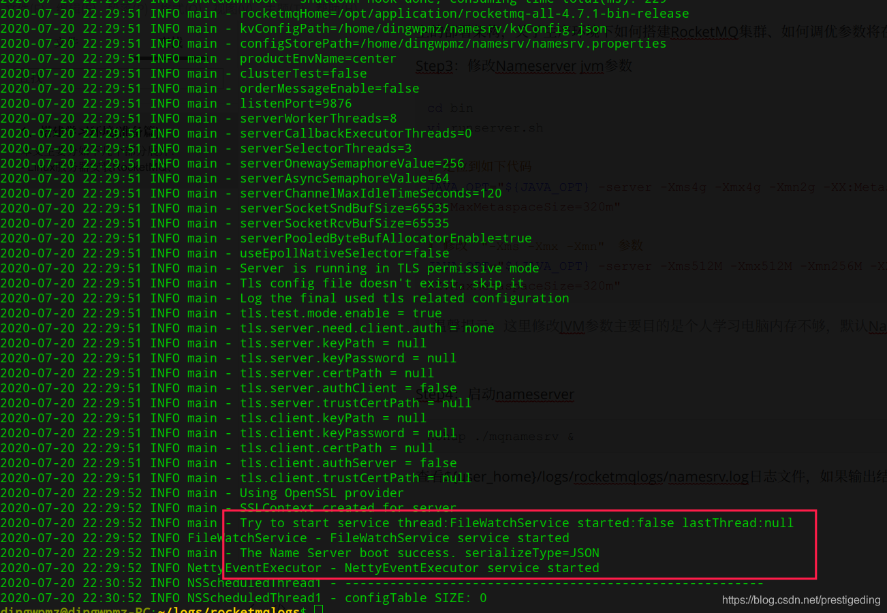
Step5：修改 Broker 的配置文件
vi conf/broker.conf
# 使用如下配置文件
brokerClusterName = DefaultCluster
brokerName = broker-a
brokerId = 0
deleteWhen = 04
fileReservedTime = 48
brokerRole = ASYNC_MASTER
flushDiskType = ASYNC_FLUSH
storePathRootDir=/data/rocketmq/store
storePathCommitLog=/data/rocketmq/store/commitlog
namesrvAddr=127.0.0.1:9876
brokerIP1=192.168.3.10
brokerIP2=192.168.3.10
autoCreateTopicEnable=false
Step6：修改 Broker JVM 参数
cd bin
vi runbroker.sh
#修改如下配置(配置前)
JAVA_OPT="${JAVA_OPT} -server -Xms8g -Xmx8g -Xmn4g"
#配置后
JAVA_OPT="${JAVA_OPT} -server -Xms1g -Xmx1g -Xmn512m"
Step7：启动 Broker
cd bin
nohup ./mqbroker -c ../conf/broker.conf &
查看 ${user_home}/logs/rocketmqlogs/broker.log，如果输出结果如下图所示表示启动成功。

经过上面的步骤，就成功在 Linux 环境上安装了 RocketMQ NameServer 服务器与 Broker 服务器。
温馨提示：如果上面在安装过程中发生了错误，大家可以查看
${user_home}/logs/rocketmqlogs中的日志，通过错误日志，能够较为直观的判断错误的原因。其中${user_home}为用户主目录。该目录下会有众多的日志文件，如果一开始对这些文件的含义不了解也没关系，大家可以通过
ls -l命令，逐一查看文件大小不为０的文件，从而寻找错误日志，便于快速解决问题。
RocketMQ 提供了众多的运维命令来查看 RocketMQ 集群的运行状态，在这里我先简单使用 clusterList 命令来查看集群的状态，用于验证一下集群的状态。
sh ./mqadmin clusterList -n 127.0.0.1:9876
其运行结果如下图所示：

安装 RocketMQ-Console
使用运维命令不太直观，学习成本较大，为此 RocketMQ 官方提供了一个运维管理界面 RokcetMQ-Console，用于对 RocketMQ 集群提供常用的运维功能，故本节主要讲解如何在 Linux 环境安装 RokcetMQ-Console。
RocketMQ 官方并未提供 RokcetMQ-Console 的安装包，故需要通过源码进行编译。
Step1：下载源码
wget https://github.com/apache/rocketmq-externals/archive/rocketmq-console-1.0.0.tar.gz
tar -xf rocketmq-console-1.0.0.tar.gz
# 重命名，为了方便后续操作
mv rocketmq-externals-rocketmq-console-1.0.0/rocketmq-console rocketmq-console
Step2：修改配置文件
cd rocketmq-console
vi src/main/resources/applications.properties
主要是修改指向的 NameServer 地址，修改结果如下图所示：

Step3：使用 Maven 命令编译源代码
mvn clean package -DskipTests
编译后在 target 目录下会生成可运行的 jar 包，如下图所示：

Step4：我们可以将该包复制到自己常用的软件安装目录，例如笔者喜欢将其放在 /opt/application 下
cp rocketmq-console-ng-1.0.0.jar /opt/application/
Step5：启动 RokcetMQ-Console
nohup java -jar rocketmq-console-ng-1.0.0.jar &
在浏览器中输入 http://localhost:8080 查看是否安装成功，如果出现如下图则表示安装成功。

异常分析与解决思路
如果在安装过程中出现意想不到的错误，别慌，通过查看相关的日志文件，寻找错误日志，根据错误日志进行思考或百度，相信能够轻易将其解决。
例如使用的 Baseuser 启动的 RocketMQ、RokcetMQ-Console，相关的日志路径如下：
- RocketMQ：/home/baseuser/logs/rocketmqlogs/
- RokcetMQ-Console：/home/baseuser/logs/consolelogs
IDEA 中安装 RocketMQ
绝大数的程序员最信赖的开发调试工具基本都是 Debug，那能在 IDEA 中 Debug RocketMQ 的源码吗？答案当然是可以的。本节就来演示如何在 IDEA 中运行 RocketMQ 的 NameServer、Broker 组件，并进行 Debug。
Setp1：从 GitHub 上下载 RocketMQ 源码，并将其导入到 IEDA 中
其截图如下：

Step2：namesrv/src/main/java/org/apache/rocketmq/namesrv/NamesrvStartup 设置环境变量 ROCKETMQ_HOME
操作步骤如下图所示：

设置环境变量名称：ROCKETMQ_HOME，其值用于指定 RocketMQ 运行的主目录，笔者设置的路径为：/home/dingwpmz/tmp/rocketmq。
Step3：将 distribution/conf/logback_namesrv.xml 文件拷贝到 Step2 中设置的主目录下
执行后的效果如下图所示：

温馨提示：该文件为 NameServer 的日志路劲，可以手动修改 logback_namesrv.xml 文件中的日志目录，由于这是 Logback 的基础知识，这里就不再详细介绍 Logback 的配置方法。
Step4：以 Debug 方法运行 NamesrvStartup,执行效果如下图所示,表示启动成功
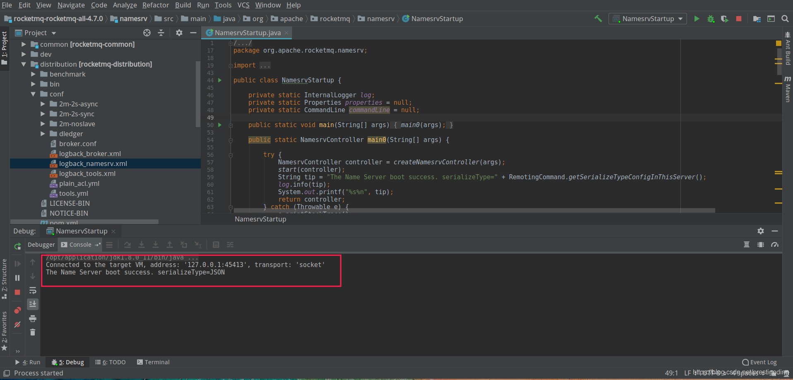
Step5：将 distribution/conf/logback_brokerxml、broker.conf 文件拷贝到 Step2 中设置的主目录下
执行后的效果如下图所示：
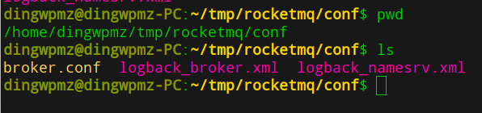
Step6：修改 broker.conf 中的配置，主要设置 NameServer 的地址、Broker 的名称等相关属性
vi broker.conf
# 使用如下配置文件
brokerClusterName = DefaultCluster
brokerName = broker-a
brokerId = 0
deleteWhen = 04
fileReservedTime = 48
brokerRole = ASYNC_MASTER
flushDiskType = ASYNC_FLUSH
storePathRootDir=/home/dingwpmz/tmp/rocketmq/store
storePathCommitLog=/home/dingwpmz/tmp/rocketmq/store/commitlog
namesrvAddr=127.0.0.1:9876
brokerIP1=192.168.3.10
brokerIP2=192.168.3.10
autoCreateTopicEnable=true
Step7：broker/src/main/java/org/apache/rocketmq/broker/BrokerStartup 设置环境变量 ROCKETMQ_HOME
操作步骤如下图所示：
Step8：以 Debug 模式运行 BrokerStartup
其运行结果如下图所示：
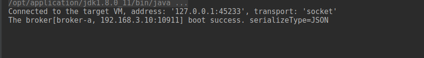
看到这样的提示就表示大功告成。
接下来简单来做一个验证。
首先先在 AbstractSendMessageProcessor 类的 parseRequestHeader 方法中打上一个断点。
然后运行 example 中 org/apache/rocketmq/example/quickstart/Producer，看是否能进入到断点中，运行结果如下图所示，已进入到 Debug 模式。

小结
本篇作为 RocketMQ 实战系列的第一篇文章，其目的就是构建一个研究 RocketMQ 的学习环境，故从两个方面进行展开：
- 在 Linux 环境安装 RocketMQ、RocketMQ-Console。
- 在 IDEA 中运行 RocketMQ，构建一个可以调试 RocketMQ 的环境。
温馨提示：搭建一个可调试的环境，但绝不是学习 RocketMQ 源码，就从 Debug 一步一步跟踪，这样会陷入其中而不可自拔。Debug 只是一种辅助，应该用在无法理解某一端代码时使用 Debug，借助运行时的一些数据，使之更容易理解。
02 RocketMQ 核心概念扫盲篇
在正式进入 RocketMQ 的学习之前，我觉得有必要梳理一下 RocketMQ 核心概念，为大家学习 RocketMQ 打下牢固的基础。
RocketMQ 部署架构

在 RocketMQ 主要的组件如下。
NameServer
NameServer 集群，Topic 的路由注册中心，为客户端根据 Topic 提供路由服务，从而引导客户端向 Broker 发送消息。NameServer 之间的节点不通信。路由信息在 NameServer 集群中数据一致性采取的最终一致性。
Broker
消息存储服务器，分为两种角色：Master 与 Slave，上图中呈现的就是 2 主 2 从的部署架构，在 RocketMQ 中，主服务承担读写操作，从服务器作为一个备份，当主服务器存在压力时，从服务器可以承担读服务（消息消费）。所有 Broker，包含 Slave 服务器每隔 30s 会向 NameServer 发送心跳包，心跳包中会包含存在在 Broker 上所有的 Topic 的路由信息。
Client
消息客户端，包括 Producer（消息发送者）和 Consumer（消费消费者）。客户端在同一时间只会连接一台 NameServer，只有在连接出现异常时才会向尝试连接另外一台。客户端每隔 30s 向 NameServer 发起 Topic 的路由信息查询。
温馨提示：NameServer 是在内存中存储 Topic 的路由信息，持久化 Topic 路由信息的地方是在 Broker 中，即
${ROCKETMQ_HOME}/store/config/topics.json。
在 RocketMQ 4.5.0 版本后引入了多副本机制，即一个复制组（m-s）可以演变为基于 Raft 协议的复制组，复制组内部使用 Raft 协议保证 Broker 节点数据的强一致性，该部署架构在金融行业用的比较多。
消息订阅模型
在 RocketMQ 的消息消费模式采用的是发布与订阅模式。
- Topic：一类消息的集合，消息发送者将一类消息发送到一个主题中，例如订单模块将订单发送到 order_topic 中，而用户登录时，将登录事件发送到 user_login_topic 中。
- ConsumerGroup：消息消费组，一个消费单位的“群体”，消费组首先在启动时需要订阅需要消费的 Topic。一个 Topic 可以被多个消费组订阅，同样一个消费组也可以订阅多个主题。一个消费组拥有多个消费者。
术语解释起来有点枯燥晦涩，接下来我举例来阐述。
例如我们在开发一个订单系统，其中有一个子系统：order-service-app，在该项目中会创建一个消费组 order_consumer 来订阅 order_topic，并且基于分布式部署，order-service-app 的部署情况如下：
即 order-service-app 部署了 3 台服务器，每一个 JVM 进程可以看做是消费组 order_consumer 消费组的其中一个消费者。
消费模式
那这三个消费者如何来分工来共同消费 order_topic 中的消息呢？
在 RocketMQ 中支持广播模式与集群模式。
- 广播模式：一个消费组内的所有消费者每一个都会处理 Topic 中的每一条消息，通常用于刷新内存缓存。
- 集群模式：一个消费组内的所有消费者共同消费一个 Topic 中的消息，即分工协作，一个消费者消费一部分数据，启动负载均衡。
集群模式是非常普遍的模式，符合分布式架构的基本理念，即横向扩容，当前消费者如果无法快速及时处理消息时，可以通过增加消费者的个数横向扩容，快速提高消费能力，及时处理挤压的消息。
消费队列负载算法与重平衡机制
那集群模式下，消费者是如何来分配消息的呢？
例如上面实例中 order_topic 有 16 个队列，那一个拥有 3 个消费者的消费组如何来分配队列中。
在 MQ 领域有一个不成文的约定：同一个消费者同一时间可以分配多个队列，但一个队列同一时间只会分配给一个消费者。
RocketMQ 提供了众多的队列负载算法，其中最常用的两种平均分配算法。
- AllocateMessageQueueAveragely：平均分配
- AllocateMessageQueueAveragelyByCircle：轮流平均分配
为了说明这两种分配算法的分配规则，现在对 16 个队列，进行编号，用 q0~q15 表示，消费者用 c0~c2 表示。
AllocateMessageQueueAveragely 分配算法的队列负载机制如下：
- c0：q0 q1 q2 q3 q4 q5
- c1：q6 q7 q8 q9 q10
- c2：q11 q12 q13 q14 q15
其算法的特点是用总数除以消费者个数，余数按消费者顺序分配给消费者，故 c0 会多分配一个队列，而且队列分配是连续的。
AllocateMessageQueueAveragelyByCircle 分配算法的队列负载机制如下：
- c0：q0 q3 q6 q9 q12 q15
- c1：q1 q4 q7 q10 q13
- c2：q2 q5 q8 q11 q14
该分配算法的特点就是轮流一个一个分配。
温馨提示：如果 Topic 的队列个数小于消费者的个数，那有些消费者无法分配到消息。在 RocketMQ 中一个 Topic 的队列数直接决定了最大消费者的个数，但 Topic 队列个数的增加对 RocketMQ 的性能不会产生影响。
在实际过程中，对主题进行扩容（增加队列个数）或者对消费者进行扩容、缩容是一件非常寻常的事情，那如果新增一个消费者，该消费者消费哪些队列呢？这就涉及到消息消费队列的重新分配，即消费队列重平衡机制。
在 RocketMQ 客户端中会每隔 20s 去查询当前 Topic 的所有队列、消费者的个数，运用队列负载算法进行重新分配，然后与上一次的分配结果进行对比，如果发生了变化，则进行队列重新分配；如果没有发生变化，则忽略。
例如采取的分配算法如下图所示，现在增加一个消费者 c3，那队列的分布情况是怎样的呢？

根据新的分配算法，其队列最终的情况如下：
- c0：q0 q1 q2 q3
- c1：q4 q5 q6 q7
- c2：q8 q9 q10 q11
- c3：q12 q13 q14 q15
上述整个过程无需应用程序干预，由 RocketMQ 完成。大概的做法就是将将原先分配给自己但这次不属于的队列进行丢弃，新分配的队列则创建新的拉取任务。
消费进度
消费者消费一条消息后需要记录消费的位置，这样在消费端重启的时候，继续从上一次消费的位点开始进行处理新的消息。在 RocketMQ 中，消息消费位点的存储是以消费组为单位的。
集群模式下，消息消费进度存储在 Broker 端，${ROCKETMQ_HOME}/store/config/consumerOffset.json 是其具体的存储文件，其中内容截图如下：

可见消费进度的 Key 为 topic@consumeGroup，然后每一个队列一个偏移量。
广播模式的消费进度文件存储在用户的主目录，默认文件全路劲名：${USER_HOME}/.rocketmq_offsets。
消费模型
RocketMQ 提供了并发消费、顺序消费两种消费模型。
- 并发消费：对一个队列中消息，每一个消费者内部都会创建一个线程池，对队列中的消息多线程处理，即偏移量大的消息比偏移量小的消息有可能先消费。
- 顺序消费：在某一项场景，例如 MySQL binlog 场景，需要消息按顺序进行消费。在 RocketMQ 中提供了基于队列的顺序消费模型，即尽管一个消费组中的消费者会创建一个多线程，但针对同一个 Queue，会加锁。
温馨提示：并发消费模型中，消息消费失败默认会重试 16 次，每一次的间隔时间不一样；而顺序消费，如果一条消息消费失败，则会一直消费，直到消费成功。故在顺序消费的使用过程中，应用程序需要区分系统异常、业务异常，如果是不符合业务规则导致的异常，则重试多少次都无法消费成功，这个时候一定要告警机制，及时进行人为干预，否则消费会积压。
事务消息
事务消息并不是为了解决分布式事务，而是提供消息发送与业务落库的一致性，其实现原理就是一次分布式事务的具体运用，请看如下示例：

上述伪代码中，将订单存储关系型数据库中和将消息发送到 MQ 这是两个不同介质的两个操作，如果能保证消息发送、数据库存储这两个操作要么同时成功，要么同时失败，RocketMQ 为了解决该问题引入了事务消息。
温馨提示，本篇主要目的是让大家知晓各个术语的概念，由于事务消息的使用，将在该专栏的后续文章中详细介绍。
定时消息
开源版本的 RocketMQ 目前并不支持任意精度的定时消息。所谓的定时消息就是将消息发送到 Broker，但消费端不会立即消费，而是要到指定延迟时间后才能被消费端消费。
RocketMQ 目前支持指定级别的延迟，其延迟级别如下：
1s 5s 10s 30s 1m 2m 3m 4m 5m 6m 7m 8m 9m 10m 20m 30m 1h 2h
消息过滤
消息过滤是指消费端可以根据某些条件对一个 Topic 中的消息进行过滤，即只消费一个主题下满足过滤条件的消息。
RocketMQ 目前主要的过滤机制是基于 Tag 的过滤与基于消息属性的过滤，基于消息属性的过滤支持 SQL92 表达式，对消息进行过滤。
小结
本文的主要目的是介绍 RocketMQ 常见的术语，例如 NameServer、Broker、主题、消费组、消费者、队列负载算法、队列重平衡机制、并发消费、顺序消费、消费进度存储、定时消息、事务消息、消息过滤等基本概念，为后续的实战系列打下坚实基础。
从下一篇开始，将正式开始 RocketMQ 之旅，开始学习消息发送。
03 消息发送 API 详解与版本变迁说明
RocketMQ 在捐赠给 Apache 成为 Apache 基金会顶级项目之前的版本为 3.x，捐赠给 Apache 的版本号从 4.0.0 开始。由于 RocketMQ 在成为 Apache 顶级项目之前也一直在开源，故 4.0.0 版本其版本包含的内容就非常全面了，从 4.0.0 后面的进化主要是提供新的功能，例如消息轨迹、ACL、多副本等新功能，RocketMQ 的内核非常稳定，客户端的变更也非常小，笔者做过测试，使用 RocketMQ 4.0.0 版本的 RocketMQ-Client 向 4.7.0 版本的 RocketMQ 服务器发送消息、消费消息都能正常。
从本篇开始，我们将向大家介绍 RocketMQ 消息发送方面的知识。在 RocketMQ 中消息发送者、消息消费者统称为客户端，对应 RocketMQ 的 Client 模块。
故大家在使用 RocketMQ 进行消息发送时，需要引入如下 Maven 依赖：
<dependency>
<groupId>org.apache.rocketmq</groupId>
<artifactId>rocketmq-client</artifactId>
<version>4.7.1</version>
</dependency>
接下来先介绍一下 RocketMQ 消息发送相关的 API，然后用一个简单的示例演示一下消息发送，下一篇将结合场景展示消息发送 API 的使用技巧。
消息发送 API 详解
RocketMQ 消息发送者的核心类层次结构如下图所示：
对上述类图的说明如下。
MQAdmin
MQ 基本的管理接口，提供对 MQ 提供基础的管理能力，其方法说明如下。
void createTopic(String key, String newTopic, int queueNum, int topicSysFlag)
创建 Topic，其参数含义如下：
- String key：根据 key 查找 Broker，即新主题创建在哪些 Broker 上
- String newTopic：主题名称
- int queueNum：主题队列个数
- int topicSysFlag：主题的系统参数
long searchOffset(MessageQueue mq, long timestamp)
根据队列与时间戳，从消息消费队列中查找消息，返回消息的物理偏移量（在 commitlog 文件中的偏移量）。参数列表含义如下：
- MessageQueue mq：消息消费队列
- long timestamp：时间戳
long maxOffset(final MessageQueue mq)
查询消息消费队列当前最大的逻辑偏移量，在 consumequeue 文件中的偏移量。
long minOffset(final MessageQueue mq)
查询消息消费队列当前最小的逻辑偏移量。
long earliestMsgStoreTime(MessageQueue mq)
返回消息消费队列中第一条消息的存储时间戳。
MessageExt viewMessage(String offsetMsgId)
根据消息的物理偏移量查找消息。
MessageExt viewMessage(String topic, String msgId)
根据主题与消息的全局唯一 ID 查找消息。
QueryResult queryMessage(String topic, String key, int maxNum, long begin,long end)
批量查询消息，其参数列表如下：
- String topic：主题名称
- String key：消息索引 Key
- int maxNum：本次查询最大返回消息条数
- long begin：开始时间戳
- long end：结束时间戳
MQProducer
消息发送者接口。核心接口说明如下：
void start()
启动消息发送者，在进行消息发送之前必须先调用该方法。
void shutdown()
关闭消息发送者，如果不需要再使用该生产者，需要调用该方法释放资源。
List <MessageQueue> fetchPublishMessageQueues(String topic)
根据 Topic 查询所有的消息消费队列列表。
SendResult send(Message msg, long timeout)
同步发送，参数列表说明如下：
- Message msg：待发送的消息对象
- long timeout：超时时间，默认为 3s
void send(Message msg, SendCallback sendCallback, long timeout)
异步消息发送，参数列表说明如下：
- Message msg：待发送的消息
- SendCallback sendCallback：异步发送回调接口
- long timeout：发送超时时间，默认为 3s
void sendOneway(Message msg)
Oneway 消息发送模式，该模式的特点是不在乎消息的发送结果，无论成功或失败。
SendResult send(Message msg, MessageQueue mq)
指定消息队列进行消息发送，其重载方法分表代表同步、异步 Oneway 发送模式。
SendResult send(Message msg, MessageQueueSelector selector, Object arg,long timeout)
消息发送时使用自定义队列负载机制，由 MessageQueueSelector 实现，Object arg 为传入 selector 中的参数。MessageQueueSelector 声明如下，此处的 arg 为 select 方法的第三个参数。
同样该方法的重载方法支持异步、Oneway 方式。
TransactionSendResult sendMessageInTransaction(Message msg,Object arg)
发送事务消息，事务消息只有同步发送方式，其中 Object arg 为额外参数，用在事务消息回调相关接口。

该 API 从 4.3.0 版本开始引入。
SendResult send(Collection<Message> msgs, MessageQueue mq, long timeout)
指定消息消费队列批量发送消息，批量发送只有同步发送模式。
SendResult send(Collection<Message> msgs, long timeout)
批量消息发送，超时时间默认为 3s。
Message request(Message msg, long timeout)
RocketMQ 在 4.6.0 版本中引入了 request-response 请求模型，就消息发送者发送到 Broker，需要等消费者处理完才返回，该 request 的重载方法与 send 方法一样，在此不再重复介绍。
ClientConfig
客户端配置相关。这里先简单介绍几个核心参数，后续在实践部分还会重点介绍。
- String namesrvAddr：NameServer 地址
- String clientIP：客户断的 IP 地址
- String instanceName：客户端的实例名称
- String namespace：客户端所属的命名空
DefaultMQProducer
消息发送者默认实现类。
TransactionMQProducer
事务消息发送者默认实现类。
消息发送 API 简单使用示例
通过上面的梳理，我们应该对消息发送的 API 有了一个较为全面的认识，接下来我们脱离业务场景的情况下编写一些 Demo 程序，进行简单的入门。
温馨提示：目前绝大多数优秀的开源框架，要么会提供对应的单元测试，要么会提供一些示例代码，RocketMQ 当然也不例外。在 RocketMQ 的源码中有一个 example 模块，是官方提供的一系列示例代码，用于入门是非常合适的。
exmaple 包中示例代码如下图所示：
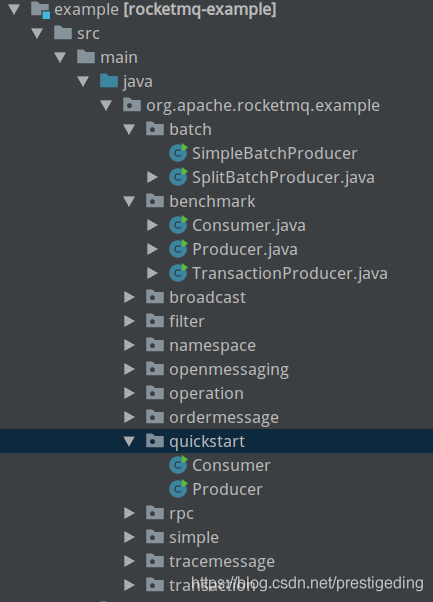
本文先简单使用 quickstart 中的 Producer 类，简单对几个 API 进行演示，下一篇文章将结合业务场景介绍其使用场景与方法、常见错误点。
示例代码如下：
public class Producer {
public static void main(String[] args) throws Exception{
DefaultMQProducer producer = new
DefaultMQProducer("please_rename_unique_group_name");
producer.setNamesrvAddr("127.0.0.1:9876");
producer.start();
//发送单条消息
Message msg = new Message("TOPIC_TEST", "hello rocketmq".getBytes());
SendResult sendResult = null;
sendResult = producer.send(msg);
// 输出结果
System.out.printf("%s%n", sendResult);
// 发送带 Key 的消息
msg = new Message("TOPIC_TEST", null, "ODS2020072615490001", "{\"id\":1, \"orderNo\":\"ODS2020072615490001\",\"buyerId\":1,\"sellerId\":1 }".getBytes());
sendResult = producer.send(msg);
// 输出结果
System.out.printf("%s%n", sendResult);
// 批量发送
List<Message> msgs = new ArrayList<>();
msgs.add( new Message("TOPIC_TEST", null, "ODS2020072615490002", "{\"id\":2, \"orderNo\":\"ODS2020072615490002\",\"buyerId\":1,\"sellerId\":3 }".getBytes()) );
msgs.add( new Message("TOPIC_TEST", null, "ODS2020072615490003", "{\"id\":4, \"orderNo\":\"ODS2020072615490003\",\"buyerId\":2,\"sellerId\":4 }".getBytes()) );
sendResult = producer.send(msgs);
System.out.printf("%s%n", sendResult);
// 使用完毕后，关闭消息发送者
producer.shutdown();
}
}
我们可以从 RocketMQ-Console 中查询刚发送的消息。
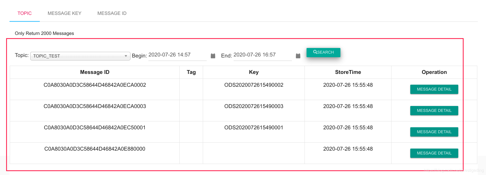
有了对 API 的说明，对如何使用 API 就是小菜一碟，笔者觉得一一罗列各个 API 的调用完全没有必要，故本篇关于 API 的使用就介绍到这里，下一篇会结合业务场景来介绍如何运用发送 API 解决实际问题，并且常见的错误示例。
消息发送 API 版本演变说明
在介绍完消息发送 API 后，笔者想再介绍一下 API 的几个重大变更版本，以及简单介绍其背后引入的目的，以便大家对 API 理解得更透彻，达到知其然而知其所以然。
Namespace 概念的引入
在 RocketMQ 4.5.1 版本正式引入了 Namespace 概念，在 API 上体现在构建 DefaultMQProducer 上，如下图所示：
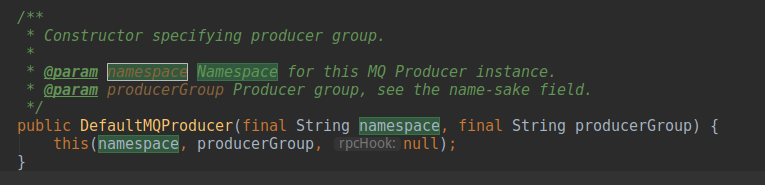
即在 4.5.1 版本之前 DefaultMQProducer 的重载构造函数的参数列表中是不会包含 Namespace。
那与之带来的问题是，在 RocketMQ 4.5.1 之后，在构建 DefaultMQProducer 时，是需要传入这个参数还是可以不传？该参数有什么作用呢？
Namespace，顾名思义，命名空间，为消息发送者、消息消费者编入到一个命名空间中。在笔者的理解中，Namespace 的引入，有点类似 RocketMQ 支持多环境、多标签、全链路压测场景。
下面我以全链路压测为场景说明一下。所谓的全链路压测场景，就是当请求的流量为测试环境时，希望将消息发送到影子 Topic，如果是正式流量，就发送到正式 Topic。
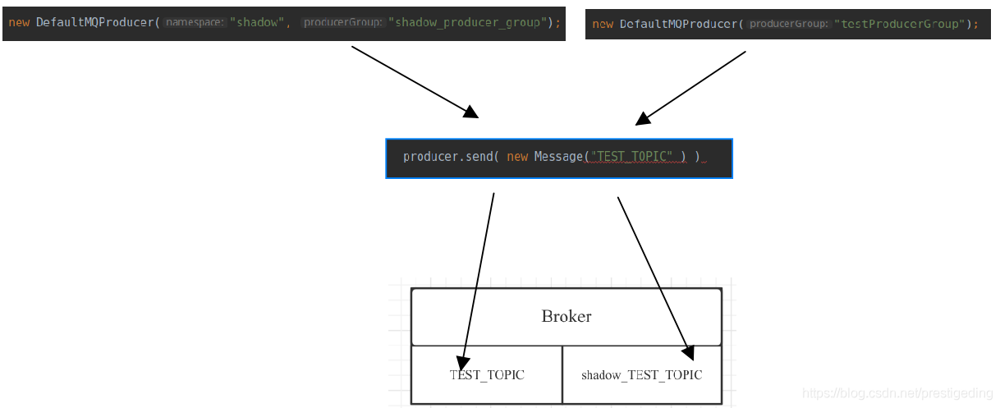
即调用 DefaultMQProducer 的 send 方法向主题 TOPIC_TEST 发送消息时，Namespace 为 shadow 的 producer 会将消息发送到 shadow_TEST_TOPIC，这样只需要根据不同的上下文文环境标记来选择不同的消息发送者即可。关于全链路压测上下文，可以参考笔者的博文：
当然消息发送者与消息消费者的命名空间必须一样，才能彼此协作。
一言以蔽之，Namespace 主要为消息发送者、消息消费者进行分组，底层的逻辑是改变 Topic 的名称。
request-response 响应模型 API
RocketMQ 在 4.6.0 版本中引入了 request-response 请求模型，就是消息发送者发送到 Broker，需要等消费者处理完才返回。其相关的 API 如下：
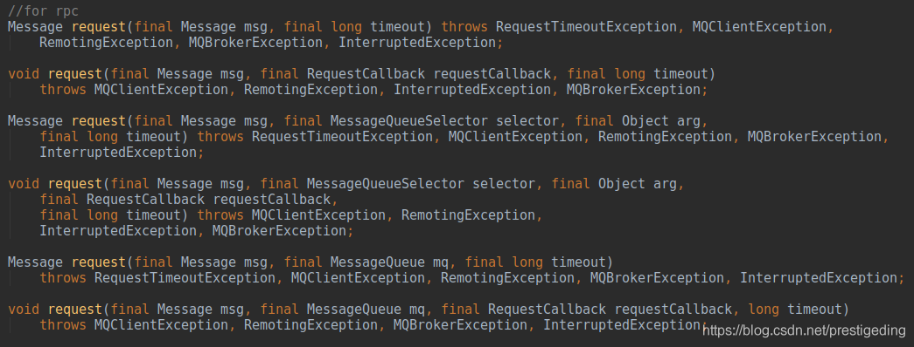
笔者一家之言：这个的使用场景还是偏少，而且不知大家是否与笔者有同样的疑问，一个 Topic 有多个消费组订阅，那是要等所有的订阅者都处理完还是主要其中一个消费组处理完成，如果所有消费者不在线又怎么办？按照笔者的经验，消息中间件的引入就是解耦消息发送者与消息消费者，如果是这种模式，与普通的服务调用相比又有什么优势呢？
消息轨迹与 ACL
RocketMQ 在 4.4.0 开始引入了消息轨迹与 ACL。
- 消息轨迹：支持跟踪消息发送、消息消费的全过程，即能跟踪消息的发送 IP、存储服务器，什么时候被哪个消费者消费。
- ACL：访问权限控制，即可以 Topic 消息发送、订阅进行授权，只有授权用户才能发送消息到指定 Topic。
相关的 API 变更如下：
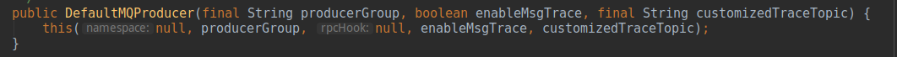
而 ACL 是借助 RPCHook 机制，故 API 并未发生变化。
小结
本文详细介绍了消息发送相关的类体系与各 API 参数列表，然后搭建 Demo 程序演示 API 的调用，最后梳理了 RocketMQ 从 4.0 到 4.7 关于消息发送 API 的变化记录，并且讲述 API 变化后面的背景。
下一篇将结合实际场景，对消息发送 API 进行灵活运用以及常见问题分析。
04 结合实际应用场景谈消息发送
本篇将开始结合各种使用场景，运用合适的 API 解决具体的实际问题。
消息发送方式
RocketMQ 支持同步、异步、Oneway 三种发送方式。
- 同步：客户端发起一次消息发送后会同步等待服务器的响应结果。
- 异步：客户端发起一下消息发起请求后不等待服务器响应结果而是立即返回，这样不会阻塞客户端子线程，当客户端收到服务端（Broker）的响应结果后会自动调用回调函数。
- Oneway：客户端发起消息发送请求后并不会等待服务器的响应结果，也不会调用回调函数，即不关心消息的最终发送结果。
下面首先用 Demo 演示一下异步消息发送模式。
public static void main(String[] args) throws Exception{
DefaultMQProducer producer = new DefaultMQProducer("testProducerGroup");
producer.setNamesrvAddr("192.168.3.10:9876");
try {
producer.start();
//发送单条消息
Message msg = new Message("TOPIC_TEST", "hello rocketmq".getBytes());
producer.send(msg, new SendCallback() {
// 消息发送成功回调函数
public void onSuccess(SendResult sendResult) {
System.out.printf("%s%n", sendResult);
}
// 消息发送失败回调函数
public void onException(Throwable e) {
e.printStackTrace();
// 消息发送失败，可以在这里做补偿，例如将消息存储到数据库，定时重试。
}
});
} catch (Throwable e) {
e.printStackTrace();
//消息发送失败，可以在这里做补偿，例如将消息存储到数据库，定时重试。
}
Thread.sleep(3000);
// 使用完毕后，关闭消息发送者
// 基于 Spring Boot 的应用，在消息发送的时候并不会调用 shutdown 方法，而是等到 spring 容器停止
producer.shutdown();
}
Oneway 方式通常用于发送一些不太重要的消息，例如操作日志，偶然出现消息丢失对业务无影响。那实际生产中，同步发送与异步发送该如何选择呢？
在回答如何选择同步发送还是异步发送时，首先简单介绍一下异步发送的实现原理：
- 每一个消息发送者实例（DefaultMQProducer）内部会创建一个异步消息发送线程池，默认线程数量为 CPU 核数，线程池内部持有一个有界队列，默认长度为 5W，并且会控制异步调用的最大并发度，默认为 65536，其可以通过参数 clientAsyncSemaphoreValue 来配置。
- 客户端使线程池将消息发送到服务端，服务端处理完成后，返回结构并根据是否发生异常调用 SendCallback 回调函数。
笔者的实践建议如下：
MQ 与应用服务器都在一个内部网络中，网络通信的流量通常可以忽略，而且 MQ 的设计目的是低延迟、高并发，故通常没有必要使用异步发送，通常都是为了提高 RocketMQ Broker 端相关的参数，特别是刷盘策略和复制策略。如果在一个场景中，一个数据库操作事务中需要发送多条消息，这个时候使用异步发送也会带来一定性能提升。
如果使用异步发送，编程模型上会稍显复杂，其补偿机制、容错机制将会变的较为复杂。
正如上述示例中阐述的那样，补偿代码应该在两个地方调用：
producer#send方法时需要捕捉异常，常见的异常信息：MQClientException("executor rejected ", e)。- 在 SendCallback 的 onException 中进行补偿，常见异常有调用超时、RemotingTooMuchRequestException。
队列选择机制
试想这样一个场景：订单系统可以允许用户更新订单的信息，并且订单有其流转的生命周期，例如待付款、已支付、卖家已发货、买家已收货等等。目前的系统架构设计如下图所示：
一个订单会对应多条消息（例如创建、订单修改、订单状态变更）如果不加以干预的话，同一个订单编号的消息会存入到 order_topic 的多个队列中，从 RocketMQ 队列负载机制来看，不同的队列会被不同的消费者消费，但这个业务有其特殊性，order-service-app 在消费消息时，是希望按照订单的变化顺序进行处理的，那我们该如何处理呢？
从前面的文章中我们得知，RocketMQ 支持队列级别的顺序消费，故我们只需要在消息发送的时候如果将同一个订单号的不同的消息发送到同一个队列，这样在消费的时候，我们就能按照顺序进行处理。
故 RocketMQ 为了解决这个问题，在消息发送时提供了自定义的队列负载机制，消息发送的默认队列负载机制为轮询，那如何进行队列选择呢？RocketMQ 提供了如下 API：

使用示例如下：
public static void main(String[] args) throws Exception {
DefaultMQProducer producer = new DefaultMQProducer("dw_test_producer_group");
producer.setNamesrvAddr("127.0.0.1:9876");
producer.start();
// 订单实体
Order order = new Order();
order.setId(1001L);
order.setOrderNo("2020072823270500001");
order.setBuyerId(1L);
order.setSellerId(1L);
order.setTotalPrice(10000L);
order.setStatus(0);
System.out.printf("%s%n", sendMsg(producer, order));
//订单状态发生变更
order.setStatus(1);
//重新发生消息
System.out.printf("%s%n", sendMsg(producer, order));
producer.shutdown();
}
public static SendResult sendMsg(DefaultMQProducer producer, Order order) throws
Exception{
//这里为了方便查找消息，在构建消息的时候，使用订单编号为 key，这样可以通过订单编号查询消息。
Message msg = new Message("order_topic", null, order.getOrderNo(),
JSON.toJSONString(order).getBytes());
return producer.send(msg, new MessageQueueSelector() {
@Override
public MessageQueue select(List<MessageQueue> mqs, Message msg, Object arg)
{
//根据订单编号的 hashcode 进行队列选择
if(mqs == null || mqs.isEmpty()) {
return null;
}
int index = Math.abs(arg.hashCode()) % mqs.size();
return mqs.get(index < 0 ? 0 : index );
}
}, order.getOrderNo());
}
运行上述代码后，可以通过 queryMsgByKey 命令根据设置的 Key 查询消息，其结果如下图所示：
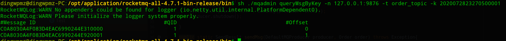
从这里可以看出，两条消息都写入在队列 1 中。关于队列的顺序消费，将在消息消费部分进行详细介绍，本篇只关注消息的发送。
温馨提示：消息发送时如果使用了 MessageQueueSelector，那消息发送的重试机制将失效，即 RocketMQ 客户端并不会重试，消息发送的高可用需要由业务方来保证，典型的就是消息发送失败后存在数据库中，然后定时调度，最终将消息发送到 MQ。
RocketMQ Key 的使用场景
RocketMQ 相对于 Kafka 有一个非常吸引人的功能，特别是业务相关的场景，RocketMQ 提供了丰富的消息查询机制，例如使用消息偏移量、消息全局唯一 msgId、消息 Key。
RocketMQ 在消息发送的时候，可以为一条消息设置索引建，例如上面示例中使用订单编号作为消息的 Key，这样我们可以通过该索引 Key 进行查询消息。
如果需要为消息指定 Key，只需要在构建 Message 的时候传入 Key 参数即可，例如下面的 API：

如果要为消息指定多个 Key，用空格分开即可，示例代码如下：
public static void main(String[] args) throws Exception {
DefaultMQProducer producer = new DefaultMQProducer("dw_test_producer_group");
producer.setNamesrvAddr("127.0.0.1:9876");
producer.start();
// 订单实体
Order order = new Order();
order.setId(1001L);
order.setOrderNo("2020072823270500002");
order.setBuyerId(1L);
order.setSellerId(2L);
order.setTotalPrice(10000L);
order.setStatus(0);
Message msg = new Message("dw_test", null, "2020072823270500002 ODS0002",
JSON.toJSONString(order).getBytes());
System.out.printf("%s%n", producer.send(msg));
producer.shutdown();
}
除了上面提到的可以通过 queryMsgByKey 进行查询后，还可以通过 RocketMQ-Console 进行消息查询，其截图如下：

RocketMQ Tag 使用场景
RocketMQ 可以为 Topic 设置 Tag（标签），这样消费端可以对 Topic 中的消息基于 Tag 进行过滤，即选择性的对 Topic 中的消息进行处理。
例如一个订单的全生命流程：创建订单、待支付、支付完成、商家审核，商家发货、买家发货，订单每一个状态的变更都会向主题 order_topic 发送消息，但不同下游系统只关注订单流中某几个阶段的消息，并不是需要处理所有消息。
例如有如下两个场景：
- 活动模块，只要用户下单并成功支付，就发放一张优惠券；
- 物流模块，只需关注订单审核通过后，就需要创建物流信息，选择供应商。
故会创建两个消费组 order_topic_activity_consumer、order_topic_logistics_consumer，但这些消费组又无需处理全部消息，这个时候 Tag 机制就派上用场了。
在消息发送时，例如创建订单时，发送的消息时，设置 Tag 为 c，而支付成功时创建的消息为 w。然后各个场景的消费者按需要订阅 Topic 时指定 Tag。示例代码如下：
public static void main(String[] args) throws Exception {
DefaultMQProducer producer = new DefaultMQProducer("dw_test_producer_group");
producer.setNamesrvAddr("127.0.0.1:9876");
producer.start();
// 订单实体
Order order = new Order();
order.setId(1001L);
order.setOrderNo("2020072823270500003");
order.setBuyerId(1L);
order.setSellerId(2L);
order.setTotalPrice(10000L);
order.setStatus(0);
Message msg = new Message("dw_test", "c", "2020072823270500003",
JSON.toJSONString(order).getBytes());
System.out.printf("%s%n", producer.send(msg));
order.setStatus(1);
msg = new Message("dw_test", "w", "2020072823270500003",
JSON.toJSONString(order).getBytes());
System.out.printf("%s%n", producer.send(msg));
producer.shutdown();
}
// 消费端示例代码
public static void main(String[] args) throws Exception{
DefaultMQPushConsumer consumer = new DefaultMQPushConsumer("order_topic_activity_consumer");
consumer.setNamesrvAddr("127.0.0.1:9876");
consumer.setConsumeFromWhere(ConsumeFromWhere.CONSUME_FROM_FIRST_OFFSET);
consumer.subscribe("dw_test", "c");
consumer.registerMessageListener(new MessageListenerConcurrently() {
public ConsumeConcurrentlyStatus consumeMessage(List<MessageExt> msgs,
ConsumeConcurrentlyContext context) {
System.out.printf("%s Receive New Messages: %s %n",
Thread.currentThread().getName(), msgs);
return ConsumeConcurrentlyStatus.CONSUME_SUCCESS;
}
});
consumer.start();
System.out.printf("Consumer Started.%n");
}
上面关于消费后面会重点介绍，这里主要的关键点就是在订阅 Topic 时不仅指定 Topic，还指定 Tag，消费端运行后，可以查看这些消息的消费情况，如下图所示：
不符合订阅的 Tag，其消费状态显示为 CONSUMED_BUT_FILTERED（消费但被过滤掉）。
RocketMQ msgId 详解
消息发送的结果如下图所示：

返回的字段包含 msgId、offsetMsgId。
msgId
该 ID 是消息发送者在消息发送时会首先在客户端生成，全局唯一，在 RocketMQ 中该 ID 还有另外的一个叫法——uniqId，无不体现其全局唯一性。其组成说明如下：
- 客户端发送 IP，支持 IPV4 和 IPV6
- 进程 PID（2 字节）
- 类加载器的 hashcode（4 字节）
- 当前系统时间戳与启动时间戳的差值（4 字节）
- 自增序列（2 字节）
offsetMsgId
消息所在 Broker 的物理偏移量，即在 commitlog 文件中的偏移量，其组成如下两部分组成：
- Broker 的 IP 与端口号
- commitlog 中的物理偏移量
温馨提示：可以根据 offsetMsgId 即可以定位到具体的消息，无需知道该消息的 Topic 等其他一切信息。
这两个消息 ID 有时候在排查问题的时候，特别是项目能提供 msgID，但是在消息集群中无法查询到时可以通过解码这消息 ID，从而得知消息发送者的 IP 或消息存储 Broker 的 IP。
其中 msgId 可以通过 MessageClientIDSetter 的 getIPStrFromID 方法获取 IP，而 OffsetMsgId 可以通过 MessageDecoder 的 decodeMessageId 方法解码。
小结
本篇主要阐述 3 种消息发送的利弊、消息队列自定义负载机制、Key、Tag 的使用场景，并给出具体的场景、方案以及示例程序。
05 消息发送核心参数与工作原理详解
经过前面几篇的讲解，我相信大家对 RocketMQ 的消息发送已经有了一个较为详细的认识，已经能够非常顺畅地使用 DefaultMQProducer 相关的 API。
本篇将重点关注 DefaultMQProducer 中的相关属性，以便从这些属性窥探 RocketMQ 消息发送较为底层的原理。
从 DefaultMQProducer 的类图就可以看出其属性主要来源于 ClientConfig、DefaultMQProducer，故接下来将分两部分进行介绍。
DefaultMQProducer 参数一览
DefaultMQProducer 的参数如下：
InternalLogger log = ClientLogger.getLog()
客户端的日志实现类，RocketMQ 客户端的日志路径为 ${user.home}/logs/rocketmqlogs/rocketmq_client.log。在排查问题时可以从日志文件下手，寻找错误日志，为解决问题提供必要的信息。其中 user.home 为用户的主目录。
producerGroup
发送者所属组，开源版本的 RocketMQ，发送者所属组主要的用途是事务消息，Broker 需要向消息发送者回查事务状态。可以通过相关命令或 RocketMQ-Console 查看某一个 Topic 指定消费组的客户端，如下图所示：

defaultTopicQueueNums = 4
通过生产者创建 Topic 时默认的队列数量。
sendMsgTimeout = 3000
消息发送默认超时时间，单位为毫秒。值得注意的是在 RocketMQ 4.3.0 版本之前，由于存在重试机制，设置的设计为单次重试的超时时间，即如果设置重试次数为 3 次，则 DefaultMQProducer#send 方法可能会超过 9s 才返回；该问题在 RocketMQ 4.3.0 版本进行了优化，设置的超时时间为总的超时时间，即如果超时时间设置 3s，重试次数设置为 10 次，可能不会重试 10 次，例如在重试到第 5 次的时候，已经超过 3s 了，试图尝试第 6 次重试时会退出，抛出超时异常，停止重试。
compressMsgBodyOverHowmuch
压缩的阔值，默认为 4k，即当消息的消息体超过 4k，则会使用 zip 对消息体进行压缩，会增加 Broker 端的 CPU 消耗，但能提高网络方面的开销。
retryTimesWhenSendFailed
同步消息发送重试次数。RocketMQ 客户端内部在消息发送失败时默认会重试 2 次。请主要该参数与 sendMsgTimeout 会联合起来生效，详情请参照上文所述。
retryTimesWhenSendAsyncFailed
异步消息发送重试次数，默认为 2，即重试 2 次，通常情况下有三次机会。
retryAnotherBrokerWhenNotStoreOK
该参数的本意是如果客户端收到的结果不是 SEND_OK，应该是不问源由的继续向另外一个 Broker 重试，但根据代码分析，目前这个参数并不能按预期运作，应该是一个 Bug。
int maxMessageSize
允许发送的最大消息体，默认为 4M，服务端（Broker）也有 maxMessageSize 这个参数的设置，故客户端的设置不能超过服务端的配置，最佳实践为客户端的配置小于服务端的配置。
sendLatencyFaultEnable
是否开启失败延迟规避机制。RocketMQ 客户端内部在重试时会规避上一次发送失败的 Broker，如果开启延迟失败规避，则在未来的某一段时间内不向该 Broker 发送消息，具体机制在本篇的第三部分详细展开。默认为 false，不开启。
notAvailableDuration
不可用的延迟数组，默认值为 {0L, 0L, 30000L, 60000L, 120000L, 180000L, 600000L}，即每次触发 Broker 的延迟时间是一个阶梯的，会根据每次消息发送的延迟时间来选择在未来多久内不向该 Broker 发送消息。
latencyMax
设置消息发送的最大延迟级别，默认值为 {50L, 100L, 550L, 1000L, 2000L, 3000L, 15000L}，个数与 notAvailableDuration 对应，关于 Broker 的延迟关闭机制将在本文第三部详细探讨。
ClientConfig 参数一览
ClientConfig 顾名思义，客户端的配置，在 RocketMQ 中消息发送者（Producer）和消息消费者（Consumer），即上面的配置生产者、消费者是通用的。
namesrvAddr
NameServer 的地址列表。
clientIP
客户端 IP，通过 RemotingUtil#getLocalAddress 方法获取，在 4.7.0 版本中优先会返回不是 127.0.0.1 和 192.168 开头的最后一个 IPV4 或第一个 IPV6。客户端 IP 主要是用来定位消费者的，clientIP 会当成客户端 id 的组成部分。
如下图所示：在菜单 [Consumer] 列表中点击一个消费组，点击按钮 [client] 可以查阅其客户端（消费者）。
instanceName
客户端实例名称，是客户端标识 CID 的组成部分，在第三篇会详细其 CID 与场景的使用问题。
unitName
定义一个单元，主要用途：客户端 CID 的组成部分；如果获取 NameServer 的地址是通过 URL 进行动态更新的话，会将该值附加到当中，即可以区分不同的获取 NameServer 地址的服务。
clientCallbackExecutorThreads
客户端 public 回调的线程池线程数量，默认为 CPU 核数，不建议改变该值。
namespace
客户端命名空间，从 4.5.1 版本被引入，在第三篇中已详细介绍。
pollNameServerInterval
客户端从 NameServer 更新 Topic 的间隔，默认值 30s，就 Producer、Consumer 会每隔 30s 向 NameServer 更新 Topic 的路由信息，该值不建议修改。
heartbeatBrokerInterval
客户端向 Broker 发送心跳包的时间间隔，默认为 30s，该值不建议修改。
persistConsumerOffsetInterval
客户端持久化消息消费进度的间隔，默认为 5s，该值不建议修改。
核心参数工作机制与使用建议
消息发送高可用设计与故障规避机制
熟悉 RocketMQ 的小伙伴应该都知道，RocketMQ Topic 路由注册中心 NameServer 采用的是最终一致性模型，而且客户端是定时向 NameServer 更新 Topic 的路由信息，即客户端（Producer、Consumer）是无法实时感知 Broker 宕机的，这样消息发送者会继续向已宕机的 Broker 发送消息，造成消息发送异常。那 RocketMQ 是如何保证消息发送的高可用性呢？
RocketMQ 为了保证消息发送的高可用性，在内部引入了重试机制，默认重试 2 次。RocketMQ 消息发送端采取的队列负载均衡默认采用轮循。
在 RocketMQ 中消息发送者是线程安全的，即一个消息发送者可以在多线程环境中安全使用。每一个消息发送者全局会维护一个 Topic 上一次选择的队列，然后基于这个序号进行递增轮循，引入了 ThreadLocal 机制，即每一个发送者线程持有一个上一次选择的队列，用 sendWhichQueue 表示。
接下来举例消息队列负载机制，例如 topicA 的路由信息如下图所示：

正如上图所 topicA 在 broker-a、broker-b 上分别创建了 4 个队列，例如一个线程使用 Producer 发送消息时，通过对 sendWhichQueue getAndIncrement() 方法获取下一个队列。
例如在发送之前 sendWhichQueue 该值为 broker-a 的 q1，如果由于此时 broker-a 的突发流量异常大导致消息发送失败，会触发重试，按照轮循机制，下一个选择的队列为 broker-a 的 q2 队列，此次消息发送大概率还是会失败，即尽管会重试 2 次，但都是发送给同一个 Broker 处理，此过程会显得不那么靠谱，即大概率还是会失败，那这样重试的意义将大打折扣。
故 RocketMQ 为了解决该问题，引入了故障规避机制，在消息重试的时候，会尽量规避上一次发送的 Broker，回到上述示例，当消息发往 broker-a q1 队列时返回发送失败，那重试的时候，会先排除 broker-a 中所有队列，即这次会选择 broker-b q1 队列，增大消息发送的成功率。
上述规避思路是默认生效的，即无需干预。
但 RocketMQ 提供了两种规避策略，该参数由 sendLatencyFaultEnable 控制，用户可干预，表示是否开启延迟规避机制，默认为不开启。
- sendLatencyFaultEnable 设置为 false：默认值，不开启，延迟规避策略只在重试时生效，例如在一次消息发送过程中如果遇到消息发送失败，规避 broekr-a，但是在下一次消息发送时，即再次调用 DefaultMQProducer 的 send 方法发送消息时，还是会选择 broker-a 的消息进行发送，只要继续发送失败后，重试时再次规避 broker-a。
- sendLatencyFaultEnable 设置为 true：开启延迟规避机制，一旦消息发送失败会将 broker-a “悲观”地认为在接下来的一段时间内该 Broker 不可用，在为未来某一段时间内所有的客户端不会向该 Broker 发送消息。这个延迟时间就是通过 notAvailableDuration、latencyMax 共同计算的，就首先先计算本次消息发送失败所耗的时延，然后对应 latencyMax 中哪个区间，即计算在 latencyMax 的下标，然后返回 notAvailableDuration 同一个下标对应的延迟值。
温馨提示：如果所有的 Broker 都触发了故障规避，并且 Broker 只是那一瞬间压力大，那岂不是明明存在可用的 Broker，但经过你这样规避，反倒是没有 Broker 可用来，那岂不是更糟糕了？针对这个问题，会退化到队列轮循机制，即不考虑故障规避这个因素，按自然顺序进行选择进行兜底。
笔者实战经验分享
按照笔者的实践经验，RocketMQ Broker 的繁忙基本都是瞬时的，而且通常与系统 PageCache 内核的管理相关，很快就能恢复，故不建议开启延迟机制。因为一旦开启延迟机制，例如 5 分钟内不会向一个 Broker 发送消息，这样会导致消息在其他 Broker 激增，从而会导致部分消费端无法消费到消息，增大其他消费者的处理压力，导致整体消费性能的下降。
客户端 ID 与使用陷进
介绍客户端 ID 主要的目的是，能在如下场景正确使用消息发送与消费。
- 同一套代码能否在同一台机器上部署多个实例？
- 同一套代码能向不同的 NameServer 集群发送消息、消费消息吗？
本篇的试验环境部署架构如下：

部署了两套 RocketMQ 集群，在 DefaultCluster 集群上创建 Topic——dw_test_01，并在 DefaultClusterb 上创建 Topic——dw_test_02，现在的需求是 order-service-app 要向 dw_test_01、dw_test_02 上发送消息。给出的示例代码如下：
public static void main(String[] args) throws Exception{
// 创建第一个生产者
DefaultMQProducer producer = new DefaultMQProducer("dw_test_producer_group1");
producer.setNamesrvAddr("192.168.3.10:9876");
producer.start();
// 创建第二个生产者
DefaultMQProducer producer2 = new DefaultMQProducer("dw_test_producer_group2");
producer2.setNamesrvAddr("192.168.3.19:9876");
producer2.start();
try {
// 向第一个 RocketMQ 集群发送消息
SendResult result1 = producer.send( new Message("dw_test_01" , "hello
192.168.3.10 nameserver".getBytes()));
System.out.printf("%s%n", result1);
} catch (Throwable e) {
System.out.println("-----first------------");
e.printStackTrace();
System.out.println("-----first------------");
}
try {
// 向第一个 RocketMQ 集群发送消息
SendResult result2 = producer2.send( new Message("dw_test_02" , "hello
192.168.3.19 nameserver".getBytes()));
System.out.printf("%s%n", result2);
} catch (Throwable e) {
System.out.println("-----secornd------------");
e.printStackTrace();
System.out.println("-----secornd------------");
}
//睡眠 10s，简单延迟该任务的结束
Thread.sleep(10000);
}
运行结果如下图所示：
在向集群 2 发送消息时出现 Topic 不存在，但明明创建了 dw_test_02，而且如果单独向集群 2 的 dw_test_02 发送消息确能成功，初步排查是创建了两个到不同集群的 Producer 引起的，那这是为什么呢？如果解决呢？
1. 问题分析
要解决该问题，首先得理解 RocketMQ Client 的核心组成部分，如下图所示：
上述中几个核心关键点如下：
- MQClientInstance：RocketMQ 客户端一个非常重要的对象，代表一个 MQ 客户端，并且其唯一标识为 clientId。该对象中会持有众多的消息发送者客户端 producerTable，其键为消息发送者组；同样可以创建多个消费组，以消费组为键存储在 consumerTable 中。
- 一个 JVM 进程中，即一个应用程序中是否能创建多个 MQClientInstance 呢？同样是可以的，MQClientManager 对象持有一个 MQClientInstance 容器，键为 clientId。
那既然一个 JVM 中能支持创建多个生产者，那为什么上面的示例中创建了两个生产者，并且生产者组也不一样，那为什么不能正常工作呢？
这是因为上述两个 Producer 对应的 clinetId 相同，会对应同一个 MQClientInstance 对象，这样两个生产者都会注册到一个 MQClientInstance，即这两个生产者使用的配置为第一个生产者的配置，即配置的 nameserver 地址为 192.168.3.10:9876，而在集群 1 上并没有创建 topic——dw_test_02，故无法找到对应的主题，而抛出上述错误。
我们可以通过调用 DefaultMQProducer 的 buildMQClientId() 方法，查看其生成的 clientId，运行后的结果如下图所示：

那解决思路就非常清晰了，我们只需要改变两者的 clientId 即可，故接下来看一下 RocketMQ 中 clientId 的生成规则。

温馨提示：该方法定义在 ClientConfig 中，RocketMQ 生产者、消费者都是 ClientConfig 的子类。
clientId 的生成策略如下：
- clientIp：客户端的 IP 地址。
- instanceName：实例名称，默认值为 DEFAULT，但在真正 clientConfig 的 getInstanceName 方法时如果实例名称为 DEFAULT，会自动将其替换为进程的 PID。
- unitName：单元名称，如果不为空，则会追加到 clientId 中。
了解到 clientId 的生成规则后，提出解决方案已是水到渠成的事情了。
2. 解决方案
结合 clientId 三个组成部分，我不建议修改 instanceName，让其保持默认值 DEFAULT，这样在真正的运行过程中会自动变更为进程的 pid，这样能解决同一套代码在同一台机器上部署多个进程，这样 clientId 并不会重复，故我建议大家修改 unitName，可以考虑将其修改为集群的名称，修改后的代码如下所示：
public static void main(String[] args) throws Exception{
//省略代码
DefaultMQProducer producer2 = new DefaultMQProducer("dw_test_producer_group2");
producer2.setNamesrvAddr("192.168.3.19:9876");
producer2.setUnitName("DefaultClusterb");
producer2.start();
//省略代码
运行结果如下图所示：

完美解决。
小结
本篇首先介绍了消息发送者所有的配置参数及其基本含义，紧接着详细介绍了 RocketMQ 消息发送故障规避机制、消息客户端 ID 的生成策略，以及实战中如何使用，并且告知如何避坑。
06 消息发送常见错误与解决方案
本篇将结合自己使用 RocketMQ 的经验，对消息发送常见的问题进行分享，基本会遵循出现问题，分析问题、解决问题。
No route info of this topic
无法找到路由信息，其完整的错误堆栈信息如下：

而且很多读者朋友会说，Broker 端开启了自动创建主题也会出现上述问题。
RocketMQ 的路由寻找流程如下图所示：

上面的核心关键点如下：
- 如果 Broker 开启了自动创建 Topic，在启动的时候会默认创建主题 TBW102，并会随着 Broker 发送到 NameServer 的心跳包汇报给 NameServer，继而从 NameServer 查询路由信息时能返回路由信息。
- 消息发送者在消息发送时首先会查本地缓存，如果本地缓存中存在，直接返回路由信息。
- 如果缓存不存在，则向 NameServer 查询路由信息，如果 NameServer 存在该路由信息，就直接返回。
- 如果 NameServer 不存在该 Topic 的路由信息，如果没有开启自动创建主题，则抛出
No route info of this topic。 - 如果开启了自动创建主题，则使用默认主题向 NameServer 查询路由信息，并使用默认 Topic 的路由信息为自己的路由信息，将不会抛出
No route info of this topic。
通常情况下 No route info of this topic 这个错误一般是在刚搭建 RocketMQ、刚入门 RocketMQ 遇到的比较多。通常的排查思路如下。
\1. 可以通过 RocketMQ-Console 查询路由信息是否存在，或使用如下命令查询路由信息：
cd ${ROCKETMQ_HOME}/bin
sh ./mqadmin topicRoute -n 127.0.0.1:9876 -t dw_test_0003
其输出结果如下所示：

\2. 如果通过命令无法查询到路由信息，则查看 Broker 是否开启了自动创建 Topic，参数为 autoCreateTopicEnable，该参数默认为 true。但在生产环境不建议开启。
\3. 如果开启了自动创建路由信息，但还是抛出这个错误，这个时候请检查客户端（Producer）连接的 NameServer 地址是否与 Broker 中配置的 NameServer 地址是否一致。
经过上面的步骤，基本就能解决该错误。
消息发送超时
消息发送超时，通常客户端的日志如下：
客户端报消息发送超时，通常第一怀疑的对象是 RocketMQ 服务器，是不是 Broker 性能出现了抖动，无法抗住当前的量。
那我们如何来排查 RocketMQ 当前是否有性能瓶颈呢？
首先我们执行如下命令查看 RocketMQ 消息写入的耗时分布情况：
cd /${USER.HOME}/logs/rocketmqlogs/
grep -n 'PAGECACHERT' store.log | more
输出结果如下所示：

RocketMQ 会每一分钟打印前一分钟内消息发送的耗时情况分布，我们从这里就能窥探 RocketMQ 消息写入是否存在明细的性能瓶颈，其区间如下：
- [<=0ms] 小于 0ms，即微妙级别的
- [0~10ms] 小于 10ms 的个数
- [10~50ms] 大于 10ms 小于 50ms 的个数
其他区间显示，绝大多数会落在微妙级别完成，按照笔者的经验如果 100~200ms 及以上的区间超过 20 个后，说明 Broker 确实存在一定的瓶颈，如果只是少数几个，说明这个是内存或 PageCache 的抖动，问题不大。
通常情况下超时通常与 Broker 端的处理能力关系不大，还有另外一个佐证，在 RocketMQ broker 中还存在快速失败机制，即当 Broker 收到客户端的请求后会将消息先放入队列，然后顺序执行，如果一条消息队列中等待超过 200ms 就会启动快速失败，向客户端返回 [TIMEOUT_CLEAN_QUEUE]broker busy，这个在本专栏的第 3 部分会详细介绍。
在 RocketMQ 客户端遇到网络超时，通常可以考虑一些应用本身的垃圾回收，是否由于 GC 的停顿时间导致的消息发送超时，这个我在测试环境进行压力测试时遇到过，但生产环境暂时没有遇到过，大家稍微留意一下。
在 RocketMQ 中通常遇到网络超时，通常与网络的抖动有关系，但由于我对网络不是特别擅长，故暂时无法找到直接证据，但能找到一些间接证据，例如在一个应用中同时连接了 Kafka、RocketMQ 集群，发现在出现超时的同一时间发现连接到 RocketMQ 集群内所有 Broker，连接到 Kafka 集群都出现了超时。
但出现网络超时，我们总得解决，那有什么解决方案吗？
我们对消息中间件的最低期望就是高并发低延迟，从上面的消息发送耗时分布情况也可以看出 RocketMQ 确实符合我们的期望，绝大部分请求都是在微妙级别内，故我给出的方案时，减少消息发送的超时时间，增加重试次数，并增加快速失败的最大等待时长。具体措施如下。
\1. 增加 Broker 端快速失败的时长，建议为 1000，在 Broker 的配置文件中增加如下配置：
maxWaitTimeMillsInQueue=1000
主要原因是在当前的 RocketMQ 版本中，快速失败导致的错误为 system_busy，并不会触发重试，适当增大该值，尽可能避免触发该机制，详情可以参考本专栏第 3 部分内容，会重点介绍 system_busy、broker_busy。
如果 RocketMQ 的客户端版本为 4.3.0 以下版本（不含 4.3.0）：
将超时时间设置消息发送的超时时间为 500ms，并将重试次数设置为 6 次（这个可以适当进行调整，尽量大于 3），其背后的哲学是尽快超时，并进行重试，因为发现局域网内的网络抖动是瞬时的，下次重试的是就能恢复，并且 RocketMQ 有故障规避机制，重试的时候会尽量选择不同的 Broker，相关的代码如下：
DefaultMQProducer producer = new DefaultMQProducer("dw_test_producer_group");
producer.setNamesrvAddr("127.0.0.1:9876");
producer.setRetryTimesWhenSendFailed(5);// 同步发送模式：重试次数
producer.setRetryTimesWhenSendAsyncFailed(5);// 异步发送模式：重试次数
producer.start();
producer.send(msg,500);//消息发送超时时间
如果 RocketMQ 的客户端版本为 4.3.0 及以上版本：
如果客户端版本为 4.3.0 及其以上版本，由于其设置的消息发送超时时间为所有重试的总的超时时间，故不能直接通过设置 RocketMQ 的发送 API 的超时时间，而是需要对其 API 进行包装，重试需要在外层收到进行，例如示例代码如下：
public static SendResult send(DefaultMQProducer producer, Message msg, int
retryCount) {
Throwable e = null;
for(int i =0; i < retryCount; i ++ ) {
try {
return producer.send(msg,500); //设置超时时间，为 500ms，内部有重试机制
} catch (Throwable e2) {
e = e2;
}
}
throw new RuntimeException("消息发送异常",e);
}
System busy、Broker busy
在使用 RocketMQ 中，如果 RocketMQ 集群达到 1W/tps 的压力负载水平，System busy、Broker busy 就会是大家经常会遇到的问题。例如如下图所示的异常栈。
纵观 RocketMQ 与 System busy、Broker busy 相关的错误关键字，总共包含如下 5 个：
[REJECTREQUEST]system busy
too many requests and system thread pool busy
[PC_SYNCHRONIZED]broker busy
[PCBUSY_CLEAN_QUEUE]broker busy
[TIMEOUT_CLEAN_QUEUE]broker busy
原理分析
我们先用一张图来阐述一下，在消息发送的全生命周期中，分别在什么时候会抛出上述错误。
根据上述 5 类错误日志，其触发的原由可以归纳为如下 3 种。
1. PageCache 压力较大
其中如下三类错误属于此种情况：
[REJECTREQUEST]system busy
[PC_SYNCHRONIZED]broker busy
[PCBUSY_CLEAN_QUEUE]broker busy
判断 PageCache 是否忙的依据就是，在写入消息、向内存追加消息时加锁的时间，默认的判断标准是加锁时间超过 1s，就认为是 PageCache 压力大，向客户端抛出相关的错误日志。
2. 发送线程池挤压的拒绝策略
在 RocketMQ 中处理消息发送的，是一个只有一个线程的线程池，内部会维护一个有界队列，默认长度为 1W。如果当前队列中挤压的数量超过 1w，执行线程池的拒绝策略，从而抛出 [too many requests and system thread pool busy] 错误。
3. Broker 端快速失败
默认情况下 Broker 端开启了快速失败机制，就是在 Broker 端还未发生 PageCache 繁忙（加锁超过 1s）的情况，但存在一些请求在消息发送队列中等待 200ms 的情况，RocketMQ 会不再继续排队，直接向客户端返回 System busy，但由于 RocketMQ 客户端目前对该错误没有进行重试处理，所以在解决这类问题的时候需要额外处理。
PageCache 繁忙解决方案
一旦消息服务器出现大量 PageCache 繁忙（在向内存追加数据加锁超过 1s）的情况，这个是比较严重的问题，需要人为进行干预解决，解决的问题思路如下。
1. transientStorePoolEnable
开启 transientStorePoolEnable 机制，即在 Broker 中配置文件中增加如下配置：
transientStorePoolEnable=true
transientStorePoolEnable 的原理如下图所示：

引入 transientStorePoolEnable 能缓解 PageCache 的压力背后关键如下：
- 消息先写入到堆外内存中，该内存由于启用了内存锁定机制，故消息的写入是接近直接操作内存，性能可以得到保证。
- 消息进入到堆外内存后，后台会启动一个线程，一批一批将消息提交到 PageCache，即写消息时对 PageCache 的写操作由单条写入变成了批量写入，降低了对 PageCache 的压力。
引入 transientStorePoolEnable 会增加数据丢失的可能性，如果 Broker JVM 进程异常退出，提交到 PageCache 中的消息是不会丢失的，但存在堆外内存（DirectByteBuffer）中但还未提交到 PageCache 中的这部分消息，将会丢失。但通常情况下，RocketMQ 进程退出的可能性不大，通常情况下，如果启用了 transientStorePoolEnable，消息发送端需要有重新推送机制（补偿思想）。
2. 扩容
如果在开启了 transientStorePoolEnable 后，还会出现 PageCache 级别的繁忙，那需要集群进行扩容，或者对集群中的 Topic 进行拆分，即将一部分 Topic 迁移到其他集群中，降低集群的负载。关于 RocketMQ 优雅停机、扩容方案等，将在本专栏的运维实战部分做专题介绍。
温馨提示：在 RocketMQ 出现 PageCache 繁忙造成的 Broker busy，RocketMQ Client 会有重试机制。
TIMEOUT_CLEAN_QUEUE 解决方案
由于如果出现 TIMEOUT_CLEAN_QUEUE 的错误，客户端暂时不会对其进行重试，故现阶段的建议是适当增加快速失败的判断标准，即在 Broker 的配置文件中增加如下配置：
＃该值默认为 200，表示 200ms
waitTimeMillsInSendQueue=1000
温馨提示，关于 Broker busy，笔者发表过两篇文章，大家也可以结合着看：
小结
本篇主要对实际中常遇到的，关于消息发送方面经常遇到的问题进行剖析，从而提出解决方案。
07 事务消息使用及方案选型思考
事务消息应用场景
首先需要申明的是，事务消息与业界用 RocketMQ 解决分布式事务，并不是一回事。
RocketMQ 引入事务消息，主要是要解决什么问题呢？接下来以电商一个登录送积分的示例来展开本文的叙述。
在互联网电商发展的初期，为了提高用户的活跃度，通常会采取这样一个提高用户活跃度：一个用户每一天首次登录送积分活动。
在没有提出送积分活动时，用户登录的代码如下：
public Map<String, Object> login(String userName, String password) {
Map<String, Object> result = new HashMap<>();
if(StringUtils.isEmpty(userName) || StringUtils.isEmpty(password)) {
result.put("code", 1);
result.put("msg", "用户名与密码不能为空");
return result;
}
try {
User user = userMapper.findByUserName(userName);
if(user == null || !password.equals(user.getPassword()) ) {
result.put("code", 1);
result.put("msg", "用户名或密码不正确");
return result;
}
//登录成功，记录登录日志
UserLoginLogger userLoginLogger = new UserLoginLogger(user.getId(), System.currentTimeMillis());
userLoginLoggerMapper.insert(userLoginLogger);
result.put("code", 0);
result.put("data", user);
} catch (Throwable e) {
e.printStackTrace();
result.put("code", 1);
result.put("msg" , e.getMessage());
}
return result;
}
温馨提示：本文所有的示例代码只是用来描述场景，但代码的实现只是用来阐述最基本的场景，与具体的生产代码还是存在一些差别，主要是指在业务的完备性方面。
上面的示例代码完成用户登录主要分成了 3 个步骤：
- 验证用户参数是否合法
- 验证用户名密码是否正确
- 记录此次登录操作记录日志
现在为了提高用户的日活，活动部推出了一个活动，从 2020-09-01 到 09-15 号，用户每天首次登录，送 200 积分。
开发收到这个需求后，三下两除二就搞定了，写出如下代码：

红色部分为本次送积分需求新增的代码，这种方式存在一个明显的弊端，就是会增加用户登录的耗时，因为需要调用一个积分的 RPC 服务。经分析我们可以任务用户登录操作为主流程，应该重复降低该服务的延迟，送积分这个只是一个辅助流程，完全可以将其解耦，这个时候自然而言会想到利用消息中间件来完成解耦。没错，经过改造后的代码如下图所示：

但这样问题又来了，如果消息发送成功了，然后被用户直接用 kill -9 命令将应用程序关闭，这样导致数据库并没有存储此次登录日志。但由于消息发送成功了，会送积分，那等用户再次登录的时候，再次发送消息会出现积分被重复发放，即这里的关键是无法保证 MySQL 数据库事务与消息发送这两个独立的操作要么同时成功，要么同时失败，即需要具备分布式事务的处理能力。
故为了解决上述消息发送与数据库事务的不一致性带来的业务出错，RocketMQ 在 4.3.0 版本引入了事务消息，完美解决上述难题。
RocketMQ 事务消息原理
事务消息实现原理如下图所示：

应用程序在事务内完成相关业务数据落库后，需要同步调用 RocketMQ 消息发送接口，发送状态为 prepare 的消息，消息发送成功后 RocketMQ 服务器会回调 RocketMQ 消息发送者的事件监听程序，记录消息的本地事务状态，该相关标记与本地业务操作同属一个事务，确保消息发送与本地事务的原子性。
RocketMQ 在收到类型为 prepare 的消息时，会首先备份消息的原主题与原消息消费队列，然后将消息存储在主题为 RMQ_SYS_TRANS_HALF_TOPIC 的消息消费队列中，就是因为这样，消费端并不会立即被消费到。
RocketMQ 消息服务器开启一个定时任务，消费 RMQ_SYS_TRANS_HALF_TOPIC 的消息，向消息发送端（应用程序）发起消息事务状态回查，应用程序根据保存的事务状态回馈消息服务器事务的状态（提交、回滚、未知），如果是提交或回滚，则消息服务器提交或回滚消息，如果是未知，待下一次回查，RocketMQ 允许设置一条消息的回查间隔与回查次数，如果在超过回查次数后未知消息的事务状态，则默认回滚消息。
事务消息实战
从上面的过程，其实可以基本看成 RocketMQ 事务消息的实现原理有点类似于两阶段提交＋定时轮循，其实现套路其实与在没有事务消息之前，我们会通过数据库＋定时任务的机制来实现，只不过 RocketMQ 的事务消息自动提供了定时回查的功能。接下来我们将以上述用户登录＋送积分这个场景，来基于 Spring Boot 的真实应用，使用事务消息来解决我们遇到的问题，实现用户登录、消息发送这两个分布式操作的一致性。
本次事务消息的整体时序图如下：
接下来我将给出关键代码的截图，笔者为了后续对专栏的演示更贴近实战，从本篇文章开始给出了一个基于 Spring Boot、Dubbo、MyBatis、RocketMQ 的项目。项目的下载信息：
https://pan.baidu.com/s/1ccSMN_dGMaUrFr-57UTn_A
提取码：srif
项目的整体目录如下：

事务实战的代码位于 rocketmq-example-user-service 模块。
RocketMQ 生产者初始化


代码解读：上述引入了 TransactionMQProducerContainer，主要的目的是事务消息需要关联一个事务回调监听器，故这里采取的是每一个 Topic 单独一个 TransactionMQProducer，所属的生产者组为一个固定前缀与 Topic 的组合。
UserServiceImpl 业务方法实现概述

代码解决：UserServiceImpl 的 login 就是实现登录的处理逻辑，首先先执行普通的业务逻辑，即验证登录用户的用户名与密码，如果不匹配，返回对应的业务错误提示；如果符合登录后，构建登录日志，并为登录日志生成全局唯一的业务流水号。该流水号将贯穿整个业务处理路程，即事务回调、消息消费等各个环节。
注意：这里并不会操作有数据库的写入操作，数据库的写入操作放在了事务消息的监听器中。
事件回调监听器

代码解读：
executeLocalTransaction
引入了一个事务本地表，在一个事务中将业务数据，本地事务日志一起操作数据库，该事务提交成功。业务写的类型为什么要放在这里主要是 RocketMQ 对该方法中产生的异常进行捕获，这样如果将业务操作放在 UserServiceImpl 类中，将记录本地事务日志表放在该回调函数中，这样会导致两者并不会具备一致性。
checkLocalTransaction
该方法由 RocketMQ Broker 会主动调用，在该方法我们如果能根据唯一流水号查询到记录，则任务事务成功提交，则返回 COMMIT_MESSAGE，RocketMQ 会提交事务，将处于 PREPARE 状态的消息发送到用户真实的 Topic 中，这样消费端就能正常消费消息；如果从本地事务表中未查询到消息，返回 UNOWN 即可，不能直接返回 ROLL_BACK，只有当 RocketMQ 在指定回查次数后还未查询到，则会回滚该条消息，客户端不会消费到消息，实现业务与消息发送的分布式事务一致性。
上面有增加测试代码，就是该事务成功与事务失败，看数据库与 MQ 是否是一致性。
本例的测试方法，启动 rocketmq-example-gateway、rocketmq-example-user-service 两个模块，并且需要启动 RocketMQ 服务器、ZooKeeper 服务器，然后可以通过浏览器或 Postman 发送请求，进行测试，示例如下：
然后可以通过 RocketMQ-Console 查看消息是否已成功发送，其截图如下：
事务消息架构思考
事务消息能保证业务与消息发送这两个操作的强一致性，以前在没有事务消息时，通常有两种方式解决方案。
- 严格的事务一致性，采用与 RocketMQ 事务消息的实现模型，自己实现本地事务表与回调，即多了一个步骤，通过定时任务扫描本地事务消息，进行消息发送。
- 基于补偿的思想，例如只在消息发送时采用消息重试机制，确保消息发送成功，另外结合业务的状态，以订单流为例，订单状态为已成功支付后，向 RocketMQ 集群发送一条消息，然后商户物流系统订阅该 Topic，对其进行消费，处理完后会将订单的状态变更为已发货，但如果这条消息被丢失，那无法驱动订单的后续流程，故这里可以基于补偿思想，用一个定时器扫描订单表，查找那些已支付但未发货的订单，并且已超过多少时间的订单，补发一条消息，同样能够最终的一致性。
事务消息确实能提供强一致性，但需要引入事务本地表，每一次业务都需要增加一次数据库的写入开销，而基于补偿思路，采取的是乐观的机制，并且出错的概率本来就很低，故效率通常会更好。
故大家可以根据实际情况进行技术选型，不要觉得事务消息这项技术和牛，就必须选用此种方案。
小结
本文的行文思路是先介绍事务消息的使用场景，然后详细介绍 RocketMQ 事务消息的实现原理，最后贴近实战，给出可以运行的 Spring Boot + MyBatis + RocketMQ + Dubbo 的项目示例，最后给出自己对其架构的一些简单思考。
08 消息消费 API 与版本变迁说明
从本篇开始我们将详细介绍 RockeMQ 的消息消费端的 API。
消息消费类图
RocketMQ 消费端的 API 如下图所示：
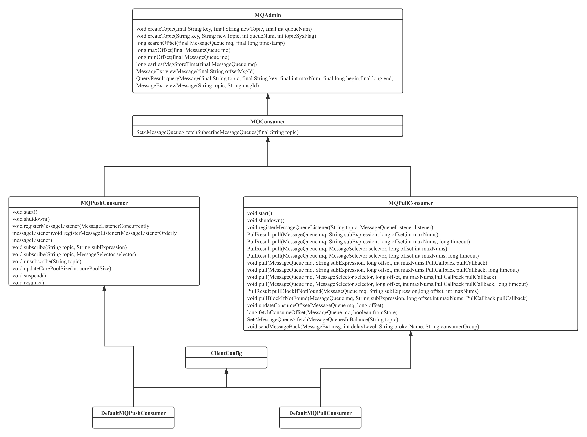
其核心类图如下所示。
MQAdmin
MQ 一些基本的管理功能，例如创建 Topic，这里稍微有点奇怪，消费端应该不需要继承该接口。该类在消息发送 API 章节已详细介绍，再次不再重复说明。
MQConsumer
MQ 消费者，这个接口定义得过于简单，如果该接口需要，可以将其子接口一些共同的方法提取到该接口中。
Set<MessageQueue> fetchSubscribeMessageQueues(final String topic)
获取分配该 Topic 所有的读队列。
MQPushConsumer
RocketMQ 支持推、拉两种模式，该接口是拉模式的接口定义。
void start()
启动消费者。
void shutdown()
关闭消费者。
void registerMessageQueueListener(String topic, MessageQueueListener listener)
注册消息队列变更回调时间，即消费端分配到的队列发生变化时触发的回调函数，其声明如下：
其参数说明如下：
String topic：主题。Set<MessageQueue> mqAll：该 Topic 所有的队列集合。Set<MessageQueue> mqDivided：分配给当前消费者的消费队列。
PullResult pull(MessageQueue mq, String subExpression, long offset,int maxNums, long timeout)
消息拉取，应用程序可以通过调用该方法从 RocketMQ 服务器拉取一篇消息，其参数含义说明如下：
MessageQueue mq：消息消费队列。String subExpression：消息过滤表达式，基于 Tag、SQL92 的过滤表达式。long offset：消息偏移量，消息在 ConsumeQueue 中的偏移量。int maxNums：一次消息拉取返回的最大消息条数。long timeout：本次拉取的超时时间。
PullResult pull(MessageQueue mq, MessageSelector selector, long offset,int maxNums, long timeout)
pull 重载方法，通过 MessageSelector 构建消息过滤对象，可以通过 MessageSelector 的 buildSql、buildTag 两个方法构建过滤表达式。
void pull(MessageQueue mq, String subExpression, long offset, int maxNums,PullCallback pullCallback)
异步拉取，调用其异步回调函数 PullCallback。
PullResult pullBlockIfNotFound(MessageQueue mq, String subExpression,long offset, int maxNums)
拉取消息，如果服务端没有新消息待拉取，一直阻塞等待，直到有消息返回，同样该方法有一个重载放假支持异步拉取。
void updateConsumeOffset(MessageQueue mq, long offset)
更新消息消费处理进度。
long fetchConsumeOffset(MessageQueue mq, boolean fromStore)
获取指定消息消费队列的消费进度。其中参数 fromStore 如果为 true，表示从消息消费进度存储文件中获取消费进度。
Set<MessageQueue> fetchMessageQueuesInBalance(String topic)
获取当前正在处理的消息消费队列（通过消息队列负载机制分配的队列）。
void sendMessageBack(MessageExt msg, int delayLevel, String brokerName, String consumerGroup)
消息消费失败后发送的 ACK。
MQPushConsumer
RocketMQ 推模式消费者接口。
void start()
启动消费者。
void shutdown()
关闭消费者。
void registerMessageListener(MessageListenerConcurrently messageListener)
注册并发消费模式监听器。
void registerMessageListener(MessageListenerOrderly messageListener)
注册顺序消费模式监听器。
void subscribe(String topic, String subExpression)
订阅主题。其参数说明如下：
String topic： 订阅的主题，RocketMQ 支持一个消费者订阅多个主题，操作方式是多次调用该方法。String subExpression：消息过滤表达式，例如传入订阅的 tag，SQL92 表达式。
void subscribe(String topic, MessageSelector selector)
订阅主题，重载方法，MessageSelector 提供了 buildSQL、buildTag 的订阅方式。
void unsubscribe(String topic)
取消订阅。
void suspend()
挂起消费。
void resume()
恢复继续消费。
DefaultMQPushConsumer
RocketMQ 消息推模式默认实现类。
DefaultMQPullConsumer
RocketMQ 消息拉取模式默认实现类。
在 RocketMQ 的内部实现原理中，其实现机制为 PULL 模式，而 PUSH 模式是一种伪推送，是对 PULL 模式的封装，PUSH 模式的实现原理如下图所示：
即 PUSH 模式就是对 PULL 模式的封装，每拉去一批消息后，提交到消费端的线程池（异步），然后马上向 Broker 拉取消息，即实现类似“推”的效果。
从 PULL 模式来看，消息的消费主要包含如下几个方面：
- 消息拉取，消息拉取模式通过 PULL 相关的 API 从 Broker 指定消息消费队列中拉取一批消息到消费消费客户端，多个消费者需要手动完成队列的分配。
- 消息消费端处理完消费，需要向 Broker 端报告消息处理队列，然后继续拉取下一批消息。
- 如果遇到消息消费失败，需要告知 Broker，该条消息消费失败，后续需要重试，通过手动调用 sendMessageBack 方法实现。
而 PUSH 模式就上述这些处理操作无需使用者考虑，只需告诉 RocketMQ 消费者在拉取消息后需要调用的事件监听器即可，消息消费进度的存储、消息消费的重试统一由 RocketMQ Client 来实现。
消息消费 API 简单使用示例
从上文基本可以得知，推模式 API 与拉模式 API 在使用层面的差别，可以简单理解为汽车领域的自动挡与手动挡。在实际业务类场景中，通常使用的是推送风格的 API，适合实时监控；但在大数据领域，通常是跑批处理即定时类任务，故大数据领域通常使用拉模式更多。
接下来编写几个示例代码对拉取、推送相关 API 进行一个使用方面的演示。
RocketMQ 拉模式核心 API 使用示例
使用场景：例如公司大数据团队需要对订单进行分析，为了提高计算效能，采取每 2 个小时调度一次，每批任务处理任务启动之前的所有消息。
首先我先给出一个基于 RocketMQ PULL 的 API 的编程示例代码，本示例接近生产实践，示例代码如下：
import org.apache.rocketmq.client.consumer.DefaultMQPullConsumer;
import org.apache.rocketmq.client.consumer.PullResult;
import org.apache.rocketmq.common.message.MessageExt;
import org.apache.rocketmq.common.message.MessageQueue;
import java.util.HashMap;
import java.util.List;
import java.util.Map;
import java.util.Set;
import java.util.concurrent.CountDownLatch;
import java.util.concurrent.TimeUnit;
public class PullConsumerTest {
public static void main(String[] args) throws Exception {
Semaphore semaphore = new Semaphore();
Thread t = new Thread(new Task(semaphore));
t.start();
CountDownLatch cdh = new CountDownLatch(1);
try {
//程序运行 120s 后介绍
cdh.await(120 * 1000, TimeUnit.MILLISECONDS);
} finally {
semaphore.running = false;
}
}
/**
* 消息拉取核心实现逻辑
*/
static class Task implements Runnable {
Semaphore s = new Semaphore();
public Task(Semaphore s ) {
this.s = s;
}
public void run() {
try {
DefaultMQPullConsumer consumer = new
DefaultMQPullConsumer("dw_pull_consumer");
consumer.setNamesrvAddr("127.0.01:9876");
consumer.start();
Map<MessageQueue, Long> offsetTable = new HashMap<MessageQueue, Long>();
Set<MessageQueue> msgQueueList = consumer.
fetchSubscribeMessageQueues("TOPIC_TEST"); // 获取该 Topic 的所有队列
if(msgQueueList != null && !msgQueueList.isEmpty()) {
boolean noFoundFlag = false;
while(this.s.running) {
if(noFoundFlag) { // 没有找到消息，暂停一下消费
Thread.sleep(1000);
}
for( MessageQueue q : msgQueueList ) {
PullResult pullResult = consumer.pull(q, "*", decivedPulloffset(offsetTable
, q, consumer) , 3000);
System.out.println("pullStatus:" +
pullResult.getPullStatus());
switch (pullResult.getPullStatus()) {
case FOUND:
doSomething(pullResult.getMsgFoundList());
break;
case NO_MATCHED_MSG:
break;
case NO_NEW_MSG:
case OFFSET_ILLEGAL:
noFoundFlag = true;
break;
default:
continue ;
}
//提交位点
consumer.updateConsumeOffset(q,
pullResult.getNextBeginOffset());
}
System.out.println("balacne queue is empty: " + consumer.
fetchMessageQueuesInBalance("TOPIC_TEST").isEmpty());
}
} else {
System.out.println("end,because queue is enmpty");
}
consumer.shutdown();
System.out.println("consumer shutdown");
} catch (Throwable e) {
e.printStackTrace();
}
}
}
/** 拉取到消息后具体的处理逻辑 */
private static void doSomething(List<MessageExt> msgs) {
System.out.println("本次拉取到的消息条数:" + msgs.size());
}
public static long decivedPulloffset(Map<MessageQueue, Long> offsetTable,
MessageQueue queue, DefaultMQPullConsumer consumer) throws Exception {
long offset = consumer.fetchConsumeOffset(queue, false);
if(offset < 0 ) {
offset = 0;
}
System.out.println("offset:" + offset);
return offset;
}
static class Semaphore {
public volatile boolean running = true;
}
}
关于上述代码，提供了优雅的线程拉取的方法，消息的拉取实现主要在任务 Task 的 run 方法中，主要的实现技巧如下：
- 首先根据 MQConsumer 的 fetchSubscribeMessageQueues 的方法获取 Topic 的所有队列信息。
- 然后遍历所有队列，依次通过 MQConsuemr 的 PULL 方法从 Broker 端拉取消息。
- 对拉取的消息进行消费处理。
- 通过调用 MQConsumer 的 updateConsumeOffset 方法更新位点，但需要注意的是这个方法并不是实时向 Broker 提交，而是客户端会启用以线程，默认每隔 5s 向 Broker 集中上报一次。
上面的示例演示的是一个消费组只有一个消费者，如果有多个消费组呢？这里就涉及到队列的重新分配，而每一个消费者是否只负责拉取分配的队列，是不是觉得这个直接使用 PULL 模式，是不是觉得有点复杂了。笔者也觉得是，接下来我们来看一下 PUSH 模式。
RocketMQ 推模式使用示例
在 RocketMQ 中绝大数场景中，通常会选择使用 PUSH 模式，因为 PUSH 模式是对 PULL 模式的封装，将消息的拉取、消息队列的自动负载、消息进度（位点）自动提交、消息消费重试都进行了封装，无需使用者关心，其示例代码如下：
public static void main(String[] args) throws InterruptedException, MQClientException {
DefaultMQPushConsumer consumer = new
DefaultMQPushConsumer("dw_test_consumer_6");
consumer.setNamesrvAddr("127.0.0.1:9876");
consumer.setConsumeFromWhere(ConsumeFromWhere.CONSUME_FROM_FIRST_OFFSET);
consumer.subscribe("TOPIC_TEST", "*");
consumer.setAllocateMessageQueueStrategy(new
AllocateMessageQueueAveragelyByCircle());
consumer.registerMessageListener(new MessageListenerConcurrently() {
@Override
public ConsumeConcurrentlyStatus consumeMessage(List<MessageExt> msgs,
ConsumeConcurrentlyContext context) {
try {
System.out.printf("%s Receive New Messages: %s %n",
Thread.currentThread().getName(), msgs);
return ConsumeConcurrentlyStatus.CONSUME_SUCCESS;
} catch (Throwable e) {
e.printStackTrace();
return ConsumeConcurrentlyStatus.RECONSUME_LATER;
}
}
});
consumer.start();
System.out.printf("Consumer Started.%n");
}
上面的代码是不是非常简单。在后续的文章我们会重点对 PUSH 模式消费者的核心属性即工作原理做详细的介绍。使用 DefaultMQPushConsumer 开发一个消费者，其代码基本覆盖如下几个方面：
- 首先 new DefaultMQPushConsumer 对象，并指定一个消费组名。
- 然后设置相关参数，例如 nameSrvAdd、消费失败重试次数、线程数等（可以设置哪些参数将在下篇文章中详细介绍）。
- 通过调用 setConsumeFromWhere 方法指定初次启动时从什么地方消费，默认是最新的消息开始消费。
- 通过调用 setAllocateMessageQueueStrategy 指定队列负载机制，默认平均分配。
- 通过调用 registerMessageListener 设置消息监听器，即消息处理逻辑，最终返回 CONSUME_SUCCESS（成功消费）或 RECONSUME_LATER（需要重试）。
温馨提示，关于消息消费的详细使用，将在后面的文章中进行详细介绍。
消息消费 API 版本演变说明
RocketMQ 在消费端的 API 相对来说还是比较稳定的，只是在 RocketMQ 4.6.0 版本引入了 DefaultLitePullConsumer，如果上述 PULL 示例代码引用的 Client 包版本为 4.6.0，细心的读者朋友们肯定会发现 DefaultMQPullConsumer 已过期，取代它的正是 DefaultLitePullConsumer。那这是什么原因呢？
我想只要大家使用过 DefaultMQPullConsumer 编写代码后，就会发现这个类的 API 太底层，使用者需要考虑的问题太多，例如队列负载、消费进度存储等等方面，可以毫不夸张地说，要用好 DefaultMQPullConsumer 还是不那么容易的。
RocketMQ 设计者也意识到了这样的问题，故引入了 DefaultLitePullConsumer，按照官方文档上的介绍，该类具备如下特性：
- 支持以订阅方式进行消息消费，支持消费队列自动再平衡。
- 支持手动分配队列的方式进行消息消费，此模式不支持队列自动再平衡。
- 提供 seek/commit 方法来重置、提交消费位点。
温馨提示：由于 DefaultLitePullConsumer 的内容比较多，我们将在后续单独一篇文章对其参数、方法、使用示例进行详细介绍，故本篇只是告知其引入的目的。
小结
本篇详细介绍了 RocketMQ PUSH、PULl 两种消息消费模式的核心 API，并对相关 API 进行了演示，后续会详细结合实际场景，并梳理核心参数，给出使用建议，后面引出了 RocketMQ 消费者一个重大的版本变更。
09 DefaultMQPushConsumer 核心参数与工作原理
PUSH 模式是对 PULL 模式的封装，类似于一个高级 API，用户使用起来将非常简单，基本将消息消费所需要解决的问题都封装好了，故使用起来将变得简单。与此同时，需要将其用好，那还是需要了解其内部的工作原理以及 PUSH 模式支持哪些参数，这些参数是如何工作的，在使用时有什么注意的呢？
DefaultMQPushConsumer 核心参数一览与内部原理
DefaultMQPushConsumer 的核心参数一览如下。
InternalLogger log
这个是消费者一个 final 的属性，用来记录 RocketMQ Consumer 在运作过程中的一些日志，其日志文件默认路径为 ${user.home}/logs/rocketmqlogs/rocketmq_cliente.log。
String consumerGroup
消费组的名称，在 RocketMQ 中，对于消费中来说，一个消费组就是一个独立的隔离单位，例如多个消费组订阅同一个主题，其消息进度（消息处理的进展）是相互独立的，两者不会有任何的干扰。
MessageModel messageModel
消息组消息消费模式，在 RocketMQ 中支持集群模式、广播模式。集群模式值得是一个消费组内多个消费者共同消费一个 Topic 中的消息，即一条消息只会被集群内的某一个消费者处理；而广播模式是指一个消费组内的每一个消费者负责 Topic 中的所有消息。
ConsumeFromWhere consumeFromWhere
一个消费者初次启动时（即消费进度管理器中无法查询到该消费组的进度）时从哪个位置开始消费的策略，可选值如下所示：
- CONSUME_FROM_LAST_OFFSET：从最新的消息开始消费。
- CONSUME_FROM_FIRST_OFFSET：从最新的位点开始消费。
- CONSUME_FROM_TIMESTAMP：从指定的时间戳开始消费，这里的实现思路是从 Broker 服务器寻找消息的存储时间小于或等于指定时间戳中最大的消息偏移量的消息，从这条消息开始消费。
String consumeTimestamp
指定从什么时间戳开始消费，其格式为 yyyyMMddHHmmss，默认值为 30 分钟之前，该参数只在 consumeFromWhere 为 CONSUME_FROM_TIMESTAMP 时生效。
AllocateMessageQueueStrategy allocateMessageQueueStrategy
消息队列负载算法。主要解决的问题是消息消费队列在各个消费者之间的负载均衡策略，例如一个 Topic 有８个队列，一个消费组中有３个消费者，那这三个消费者各自去消费哪些队列。
RocketMQ 默认提供了如下负载均衡算法：
- AllocateMessageQueueAveragely：平均连续分配算法。
- AllocateMessageQueueAveragelyByCircle：平均轮流分配算法。
- AllocateMachineRoomNearby：机房内优先就近分配。
- AllocateMessageQueueByConfig：手动指定，这个通常需要配合配置中心，在消费者启动时，首先先创建 AllocateMessageQueueByConfig 对象，然后根据配置中心的配置，再根据当前的队列信息，进行分配，即该方法不具备队列的自动负载，在 Broker 端进行队列扩容时，无法自动感知，需要手动变更配置。
- AllocateMessageQueueByMachineRoom：消费指定机房中的队列，该分配算法首先需要调用该策略的
setConsumeridcs(Set<String> consumerIdCs)方法，用于设置需要消费的机房，将刷选出来的消息按平均连续分配算法进行队列负载。
AllocateMessageQueueConsistentHash
一致性 Hash 算法。
OffsetStore offsetStore
消息进度存储管理器，该属性为私有属性，不能通过 API 进行修改，该参数主要是根据消费模式在内部自动创建，RocketMQ 在广播消息、集群消费两种模式下消息消费进度的存储策略会有所不同。
- 集群模式：RocketMQ 会将消息消费进度存储在 Broker 服务器，存储路径为
${ROCKET_HOME}/store/config/ consumerOffset.json文件中。 - 广播模式：RocketMQ 会将消息消费进存在在消费端所在的机器上，存储路径为
${user.home}/.rocketmq_offsets中。
为了方便大家对消息消费进度有一个直接的理解，下面给出我本地测试时 Broker 集群中的消息消费进度文件，其截图如下：
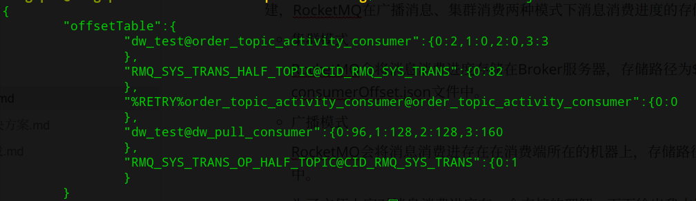
消息消费进度，首先使用 topic@consumerGroup 为键，其值是一个 Map，键为 Topic 的队列序列，值为当前的消息消费位点。
int consumeThreadMin
消费者每一个消费组线程池中最小的线程数量，默认为 20。在 RocketMQ 消费者中，会为每一个消费者创建一个独立的线程池。
int consumeThreadMax
消费者最大线程数量，在当前的 RocketMQ 版本中，该参数通常与 consumeThreadMin 保持一致，大于没有意义，因为 RocketMQ 创建的线程池内部创建的队列为一个无界队列。
int consumeConcurrentlyMaxSpan
并发消息消费时处理队列中最大偏移量与最小偏移量的差值的阔值，如差值超过该值，触发消费端限流。限流的具体做法是不再向 Broker 拉取该消息队列中的消息，默认值为 2000。
int pullThresholdForQueue
消费端允许消费端端单队列积压的消息数量，如果处理队列中超过该值，会触发消息消费端的限流。默认值为 1000，不建议修改该值。
pullThresholdSizeForQueue
消费端允许消费端但队列中挤压的消息体大小，默认为 100MB。
pullThresholdForTopic
按 Topic 级别进行消息数量限流，默认不开启，为 -1，如果设置该值，会使用该值除以分配给当前消费者的队列数，得到每个消息消费队列的消息阔值，从而改变 pullThresholdForQueue。
pullThresholdSizeForTopic
按 Topic 级别进行消息消息体大小进行限流，默认不开启，其最终通过改变 pullThresholdSizeForQueue 达到限流效果。
long pullInterval = 0
消息拉取的间隔，默认 0 表示，消息客户端在拉取一批消息提交到线程池后立即向服务端拉取下一批，PUSH 模式不建议修改该值。
int pullBatchSize = 32
一次消息拉取请求最多从 Broker 返回的消息条数，默认为 32。
int consumeMessageBatchMaxSize
消息消费一次最大消费的消息条数，这个值得是下图中参数 ist<MessageExt> msgs 中消息的最大条数。
int maxReconsumeTimes
消息消费重试次数，并发消费模式下默认重试 16 次后进入到死信队列，如果是顺序消费，重试次数为 Integer.MAX_VALUE。
long suspendCurrentQueueTimeMillis
消费模式为顺序消费时设置每一次重试的间隔时间，提高重试成功率。
long consumeTimeout = 15
消息消费超时时间，默认为 15 分钟。
核心参数工作原理
消息消费队列负载算法
本节将使用图解的方式来阐述 RocketMQ 默认提供的消息消费队列负载机制。
AllocateMessageQueueAveragely
平均连续分配算法。主要的特点是一个消费者分配的消息队列是连续的。

AllocateMessageQueueAveragelyByCircle
平均轮流分配算法，其分配示例图如下：
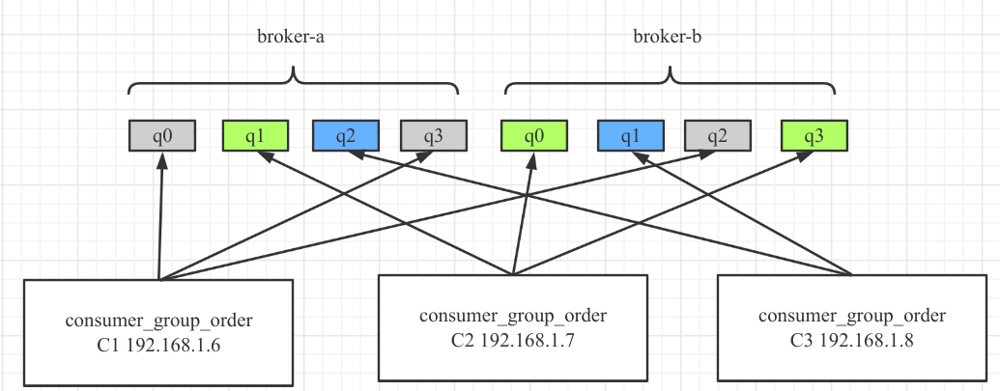
AllocateMachineRoomNearby
机房内优先就近分配。其分配示例图如下：
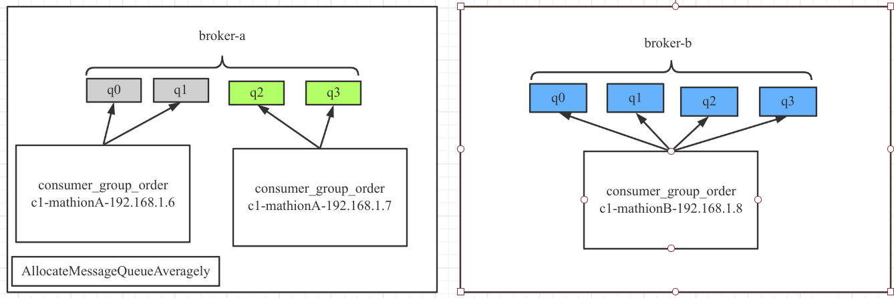
上述的背景是一个 MQ 集群的两台 Broker 分别部署在两个不同的机房，每一个机房中都部署了一些消费者，其队列的负载情况是同机房中的消费队列优先被同机房的消费者进行分配，其分配算法可以指定其他的算法，例如示例中的平均分配，但如果机房 B 中的消费者宕机，B 机房中没有存活的消费者，那该机房中的队列会被其他机房中的消费者获取进行消费。
AllocateMessageQueueByConfig
手动指定，这个通常需要配合配置中心，在消费者启动时，首先先创建 AllocateMessageQueueByConfig 对象，然后根据配置中心的配置，再根据当前的队列信息，进行分配，即该方法不具备队列的自动负载，在 Broker 端进行队列扩容时，无法自动感知，需要手动变更配置。
AllocateMessageQueueByMachineRoom
消费指定机房中的队列，该分配算法首先需要调用该策略的 setConsumeridcs(Set<String> consumerIdCs) 方法，用于设置需要消费的机房，将刷选出来的消息按平均连续分配算法进行队列负载，其分配示例图如下所示：
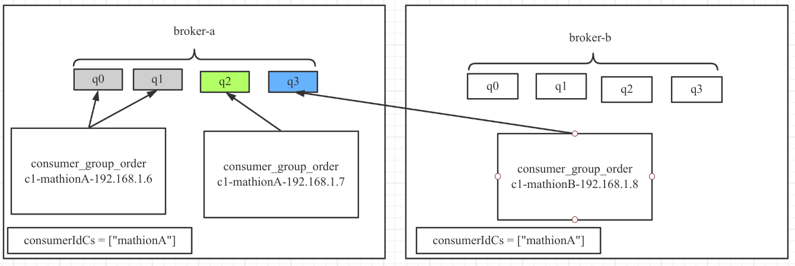
由于设置 consumerIdCs 为 A 机房，故 B 机房中的队列并不会消息。
AllocateMessageQueueConsistentHash
一致性 Hash 算法，讲真，在消息队列负载这里使用一致性算法，没有任何实际好处，一致性 Hash 算法最佳的使用场景用在 Redis 缓存的分布式领域最适宜。
PUSH 模型消息拉取机制
在介绍消息消费端限流机制时，首先用如下简图简单介绍一下 RocketMQ 消息拉取执行模型。

其核心关键点如下：
- 经过队列负载机制后，会分配给当前消费者一些队列，注意一个消费组可以订阅多个主题，正如上面 pullRequestQueue 中所示，topic_test、topic_test1 这两个主题都分配了一个队列。
- 轮流从 pullRequestQueue 中取出一个 PullRequest 对象，根据该对象中的拉取偏移量向 Broker 发起拉取请求，默认拉取 32 条，可通过上文中提到的 pullBatchSize 参数进行改变，该方法不仅会返回消息列表，还会返更改 PullRequest 对象中的下一次拉取的偏移量。
- 接收到 Broker 返回的消息后，会首先放入 ProccessQueue（处理队列），该队列的内部结构为 TreeMap，key 存放的是消息在消息消费队列（consumequeue）中的偏移量，而 value 为具体的消息对象。
- 然后将拉取到的消息提交到消费组内部的线程池，并立即返回，并将 PullRequest 对象放入到 pullRequestQueue 中，然后取出下一个 PullRequest 对象继续重复消息拉取的流程，从这里可以看出，消息拉取与消息消费是不同的线程。
- 消息消费组线程池处理完一条消息后，会将消息从 ProccessQueue 中，然后会向 Broker 汇报消息消费进度，以便下次重启时能从上一次消费的位置开始消费。
消息消费进度提交
通过上面的介绍，想必读者应该对消息消费进度有了一个比较直观的认识，接下来我们再来介绍一下 RocketMQ PUSH 模式的消息消费进度提交机制。
通过上文的消息消费拉取模型可以看出，消息消费组线程池在处理完一条消息后，会将消息从 ProccessQueue 中移除，并向 Broker 汇报消息消费进度，那请大家思考一下下面这个问题：

例如现在处理队列中有 5 条消息，并且是线程池并发消费，那如果消息偏移量为 3 的消息（3:msg3）先于偏移量为 0、1、2 的消息处理完，那向 Broker 如何汇报消息消费进度呢？
有读者朋友说，消息 msg3 处理完，当然是向 Broker 汇报 msg3 的偏移量作为消息消费进度呀。但细心思考一下，发现如果提交 msg3 的偏移量为消息消费进度，那汇报完毕后如果消费者发生内存溢出等问题导致 JVM 异常退出，msg1 的消息还未处理，然后重启消费者，由于消息消费进度文件中存储的是 msg3 的消息偏移量，会继续从 msg3 开始消费，会造成消息丢失。显然这种方式并不可取。
RocketMQ 采取的方式是处理完 msg3 之后，会将 msg3 从消息处理队列中移除，但在向 Broker 汇报消息消费进度时是取 ProceeQueue 中最小的偏移量为消息消费进度，即汇报的消息消费进度是 0。
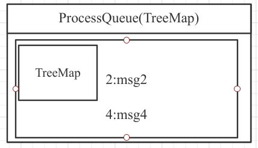
即如果处理队列如上图所示，那提交的消息进度为 2。但这种方案也并非完美，有可能会造成消息重复消费，例如如果发生内存溢出等异常情况，消费者重新启动，会继续从消息偏移量为 2 的消息开始消费，msg3 就会被消费多次，故RocketMQ 不保证消息重复消费。
消息消费进度具体的提交流程如下图所示：
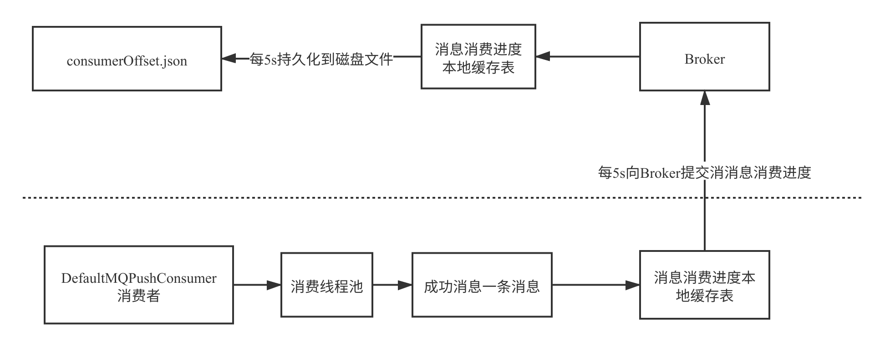
从这里也可以看成，为了减少消费者与 Broker 的网络交互，提高性能，提交消息消费进度时会首先存入到本地缓存表中，然后定时上报到 Broker，同样 Broker 也会首先存储本地缓存表，然后定时刷写到磁盘。
小结
本篇详细介绍了 DefaultMQPushConsumer 的所有可配置参数以及消息消费中消息队列负载机制、消息拉取机制、消息消费进度提交这三个非常重要的点，为后续的实践与问题排查打下坚实的基础。
10 DefaultMQPushConsumer 使用示例与注意事项
上篇已详细介绍了 DefaultMQPushConsumer 的核心属性与消息消费相关的理论，本篇将重点介绍在使用过程中容易出现的问题，并加以解决。
ConsumeFromWhere 注意事项
下面首先先看一段 RokcetMQ PUSH 模式消费者的常见使用方式：

构建需要通过 setConsumeFromWhere(…) 指定从哪消费，正如上篇提到的，RocketMQ 支持从最新消息、最早消息、指定时间戳这三种方式进行消费。大家可以思考一下，如果一个消费者启动运行了一段时间，由于版本发布等原因需要先停掉消费者，代码更新后，再启动消费者时消费者还能使用上面这三种策略，从新的一条消息消费吗？如果是这样，在发版期间新发送的消息将全部丢失，这显然是不可接受的，要从上一次开始消费的时候消费，才能保证消息不丢失。
故 ConsumeFromWhere 这个参数的含义是，初次启动从何处开始消费。更准确的表述是，如果查询不到消息消费进度时，从什么地方开始消费。
所以在实际使用过程中，如果对于一个设置为 CONSUME_FROM_FIRST_OFFSET 的运行良久的消费者，当前版本的业务逻辑进行了重大重构，而且业务希望是从最新的消息开始消费，想通过如下代码来实现其业务意图，则显然是不成功的。
consumer.setConsumeFromWhere(ConsumeFromWhere.CONSUME_FROM_LAST_OFFSET);
上面做法是错误的，要达到业务目标，需要使用 RocketMQ 提供的重置位点，其命令如下：
sh ./mqadmin resetOffsetByTime -n 127.0.0.1:9876 -g CID_CONSUMER_TEST -t TopicTest -s now
其中参数说明如下：
- -n：NameServer 地址
- -g：消费组名称
- -t：主题名称
- -s：时间戳，可选值为 now、时间戳（毫秒）、yyyy-MM-dd#HH:mm:ss:SSS
当然也可以通过 RocketMQ-Console 重置位点，操作如下图所示：
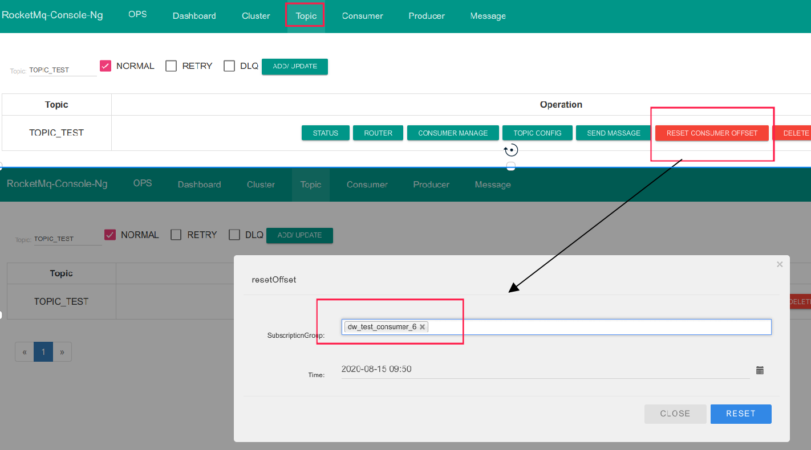
基于多机房队列负载算法
在我们实际中通常会选用平均分配算法 AllocateMessageQueueAveragely、AllocateMessageQueueAveragelyByCircle，因为这两种方案实现非常简单。在这里想再次强调一下，一致性 Hash 算法在服务类负载方面优势不大，又复杂。本节主要是探讨一下 RocketMQ 在多机房方面的支持。
在笔者所在的公司，目前多机房采取的是，在同城相距不远的两个地方分别建一个机房，主要是为了避免入口网络故障导致所有业务系统不可用，给广大快递员、各中转中心操作带来严重的影响。故采用的网络架构如下图所示：
两个网络机房之间可以通过专线访问，网络延时为 1~2ms。本场景同一时间只有一个机房会有外网流量。
在 RocketMQ 集群在多机房部署方案中本场景下，将一个 RocketMQ 集群部署在两个机房中，即每一个机房都各自部署一个 Broker，两个 Broker 共同承担消息的写入与消费。并且在两个机房都部署了两个消费者。
从消费者的角度来看，如果采取平均分配，特别是采取 AllocateMessageQueueAveragelyByCircle 方案，会出现消费者跨消费这种情况，如果能实现本机房的消费者优先消费本机房中的消息，可有效避免消息跨机房消费。值得庆幸的是，RocketMQ 设计者已经为我们了提供了解决方案——AllocateMachineRoomNearby。
接下来我们来介绍一下，如何使用 AllocateMachineRoomNearby 队列负载算法。
首先既然是多机房，对于消费过程中几个主要的实体对象（Broker）、消费者，我们必须能识别出哪个 Broker 属于哪个机房，故首先我们需要做如下两件事情。
\1. 对 Broker 进行重命名，将 Broker 的命名带上机房的信息，主要是修改 broker.conf 配置文件，例如：
brokerName = MachineRoom1-broker-a
即 Broker 的名称统一按照（机房名 brokerName）。
\2. 对消息消费者的 clientId 进行重新改写，同样使用机房名开头，我们可以通过如下代码改变 clientId。
consumer.setClientIP("MachineRoom1-" + RemotingUtil.getLocalAddress());
consumer 默认的 clientIP 为 RemotingUtil.getLocalAddress()，即本机的 IP 地址，这样客户端的 cid 如下图所示：

接下来我们简单看看一下 AllocateMachineRoomNearby 的核心属性，如下图所示：
其含义分别如下：
1. AllocateMessageQueueStrategy allocateMessageQueueStrategy
内部分配算法，可以看成机房就近分配算法，其实是一个代理，内部还是需要持有一种分配算法，例如平均分配算法。
2. MachineRoomResolver machineRoomResolver
多机房解析器，即从 brokerName、客户端 clientId 中识别出所在的机房。
本篇的测试场景集群如下：

测试代码如下：
public static void main(String[] args) throws InterruptedException, MQClientException {
DefaultMQPushConsumer consumer = new
DefaultMQPushConsumer("dw_test_consumer_6");
consumer.setNamesrvAddr("127.0.0.1:9876");
consumer.setClientIP("MachineRoom1-" + RemotingUtil.getLocalAddress());
// consumer.setClientIP("MachineRoom2-" + RemotingUtil.getLocalAddress());
consumer.setConsumeFromWhere(ConsumeFromWhere.CONSUME_FROM_LAST_OFFSET);
consumer.subscribe("machine_topic_test", "*");
AllocateMessageQueueAveragely averagely = new AllocateMessageQueueAveragely();
AllocateMachineRoomNearby.MachineRoomResolver machineRoomResolver = new
AllocateMachineRoomNearby.MachineRoomResolver() {
@Override public String brokerDeployIn(MessageQueue messageQueue) {
return messageQueue.getBrokerName().split("-")[0];
}
@Override public String consumerDeployIn(String clientID) {
return clientID.split("-")[0];
}
};
consumer.setAllocateMessageQueueStrategy(new
AllocateMachineRoomNearby(averagely, machineRoomResolver));
consumer.registerMessageListener(new MessageListenerConcurrently() {
@Override
public ConsumeConcurrentlyStatus consumeMessage(List<MessageExt> msgs,
ConsumeConcurrentlyContext context) {
try {
System.out.printf("%s Receive New Messages: %s %n",
Thread.currentThread().getName(), msgs);
return ConsumeConcurrentlyStatus.CONSUME_SUCCESS;
} catch (Throwable e) {
e.printStackTrace();
return ConsumeConcurrentlyStatus.RECONSUME_LATER;
}
}
});
consumer.start();
System.out.printf("Consumer Started.%n");
}
说明：上述代码需要打包，尽量在不同的机器上运行，并且需要给修改一下 clientIp。
运行后队列的负载情况如下：

那如果位于 MachineRoom2 机房中的消费者停掉，那机房 2 中的消息能继续被消费吗？我们现在将机房 2 中的消费者停掉，我们再来看其队列负载情况，如下图所示：

发现机房１中的消费者会能继续消费机房 2 中的消息，从这里可以看出 AllocateMachineRoomNearby 队列负载队列只是同机房优先，如果一个机房中没有存活的消费者，该机房中的队列还是会被其他机房中的消费者消费。
在 RocketMQ 中还提供了另外一种关于多机房队列负载情况，即 AllocateMessageQueueByMachineRoom，可以为每一消费者指定可以消费的机房，即通过调用 setConsumeridcs(…) 方法指定某一个消费者消费哪些机房的消息，形成一个逻辑概念的大机房，为了节省篇幅，在本篇中就不再重复给出演示，其使用方法类似。
消费组线程数设置注意事项
在 RocketMQ 中，每一个消费组都会启动一个线程池用来实现消费端在消费组的隔离，RocketMQ 也提供了 consumeThreadMin、consumeThreadMax 两个参数来设置线程池中的线程个数，但是由于线程池内部持有的队列为一个无界队列，导致 consumeThreadMax 大于 consumeThreadMin，线程个数最大也只能 consumeThreadMin 个线程数量，故在实践中，往往会将这两个值设置为相同，避免给大家带来一种误解，在消息端消息很多的情况，会创建更多的线程来提高消息的处理速率。
小技巧：RocketMQ 中的消费组线程的名称会以 ConsumeMessageThread_ 开头，例如下图。

批量消费注意事项
RocketMQ 支持消息批量消费，在消费端与批量消费相关的两个参数分别为：
- pullBatchSize：消息客户端一次向 Broker 发送拉取消息每批返回最大的消息条数，默认为 32。
- consumeMessageBatchMaxSize：提交到消息消费监听器中的消息条数，默认为 1。
consumeMessageBatchMaxSize
默认情况下一次消息会拉取 32 条消息，但业务监听器收到的消息默认一条，为了更直观对其了解，现给出如下示例代码：
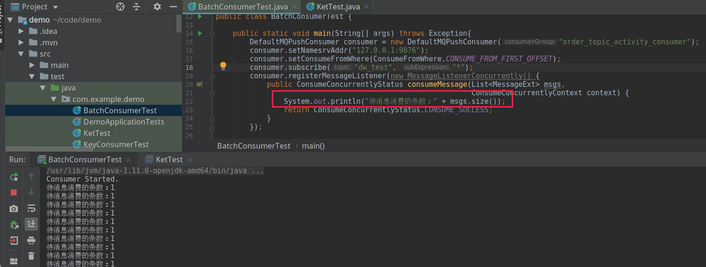
如果将 consumeMessageBatchMaxSize 设置 10，其运行效果如下图所示：

可以看到该参数生效了，consumeMessageBatchMaxSize 这个参数非常适合批处理，例如结合数据库的批处理，能显著提高性能。
pullBatchSize
大家发现了一个问题，如果单条消息的处理时间较快，通过增加消费组线程个数无法显著提高消息的消费 TPS，并且通过 jstack 命令，看到几乎所有的线程都处于等待处理任务，其截图类似如下：

此种情况说明线程都“无所事事”，应该增大其工作量，自然而然地需要增大每一批次消息拉取的数量。故尝试每一次消息拉取 100 条，每批消费 50 条。即通过如下代码进行设置：
consumer.setPullBatchSize(100);
consumer.setConsumeMessageBatchMaxSize(200);
这里设置 consumeMessageBatchMaxSize 的值大于 pullBatchSize 的主要目的，就是验证每一次拉取的消息，因为如果 consumeMessageBatchMaxSize 大于 pullBatchSize，那每次批处理的消息条数等于 pullBatchSize，如果 consumeMessageBatchMaxSize 小于 pullBatchSize，会在客户端分页，然后尽最大可能一次传入 consumeMessageBatchMaxSize 条消息。
为了确保有足够的消息，在消息拉取之前，我建议先使用生产者压入大量消息。

发现每批拉取的条数最多不会超过 32，显然服务端有足够的消息够拉取。
这是因为 Broker 端对消息拉取也提供了保护机制，同样有参数可以控制一次拉取最多返回消息的条数，其参数主要如下：
int maxTransferCountOnMessageInMemory
如果此次消息拉取能全部命中，内存允许一次消息拉取的最大条数，默认值为 32 条。
int maxTransferBytesOnMessageInMemory
如果此次消息拉取能全部命中，内存允许一次消息拉取的最大消息大小，默认为 256K。
int maxTransferCountOnMessageInDisk
如果此次消息无法命中，内存需要从磁盘读取消息，则每一次拉取允许的最大条数，默认为 8。
int maxTransferBytesOnMessageInDisk
如果此次消息无法命中，内存需要从磁盘读取消息，则每一次拉取允许的消息总大小，默认为 64K。
故如果需要一次拉取 100 条消息，还需要修改 broker 端相关的配置信息，通常建议修只修改命中内存相关的，如果要从磁盘拉取，为了包含 Broker，maxTransferCountOnMessageInDisk、maxTransferBytesOnMessageInDisk 保持默认值。
如果使用场景是大数据领域，建议的配置如下：
maxTransferCountOnMessageInMemory=5000
maxTransferBytesOnMessageInMemory = 5000 * 1024
如果是业务类场景，建议配置如下：
maxTransferCountOnMessageInMemory=2000
maxTransferBytesOnMessageInMemory = 2000 * 1024
修改 Broker 相关配置后，再运行上面的程序，其返回结果如下：

订阅关系不一致导致消息丢失
在 RocketMQ 中，一个消费组能订阅多个主题，也能订阅多个 Tag，多个 Tag 用 || 分割，但同一个消费组中的所有消费者的订阅关系必须一致，不能一个订阅 TAGA，另外一个消费者却订阅 TAGB，其错误使用如下图所示：

上面的错误关键点在：两个 JVM 进程中创建的消费组名称都是 dw_tag_test，但其中一个消费组订阅了 TAGA，另外一个消费组订阅了 TAGB，这样会造成消息丢失（即部分消息未被消费），其证明如下图所示：

一条消息的 Tag 为 TAGA，并且消费组 dw_tag_test 其中一个消费者有订阅 TAGA，那为什么还会显示 CONSUMED_BUT_FILTERED，这个状态代表的含义是，该条消息不符合消息过滤规则被过滤了，其原理图如下所示：

其本质原因是，一个队列同一时间只会分配给一个消费者，这样队列上不符合的消息消费会被过滤，并且消息消费进度会向前移动，这样就会造成消息丢失。
消费者 clientId 不唯一导致不消费
RocketMQ 的 clientId 的生成规则与 Producer 一样，如果两者出现重复，也会出现问题，请看如下代码：

本示例中人为的构建了两个 clientID 相同的消费者，在实际生产过程中，可能由于 Docker 容器获取的是宿主机器的 id、获取进程号出现异常等，会造成宿主机上所有的消费者的 clientId 一样，会造成如下效果：

明明客户端有两个，但为什么有一半的队列没有分配到消费者呢？
这就是因为 clientID 相同导致的。我们不妨以平均分配算法为例进行思考，队列负载算法时，首先会向 NameServer 查询 Topic 的路由信息，这里会返回队列个数为 4，然后向 Broker 查询当前活跃的消费者个数，会返回 2，然后开始分配。队列负载算法分配时，首先会将队列，消费者的 cid 进行排序，第一消费者分配前面 2 个队列，第二个消费者分配后面两个队列，但由于两个 cid 是相同的，这样会造成两个消费者在分配队列时，都认为自己是第一个消费者，故都分配到了前 ２ 个队列，即前面两个队列会被两个消费者都分配到，造成消息重复消费，并且有些队列却无法被消费。
最佳实践：建议大家对 clientIP 进行定制化，最好是客户端 IP + 时间戳，甚至于客户端 IP + uuid。
小结
本篇详细介绍了 RocketMQ 队列负载机制，特别是演示了多机房队列负载机制，后面对 RocketMQ 常见的使用误区例如 ConsumeFromWhere、线程池大小、订阅关系不一致、消费者 clientID 相同、批量拉取等一一做了演示与原因分析，以及给出了解决方案。
11 DefaultLitePullConsumer 核心参数与实战
在《消息消费 API 与版本变更》中也提到 DefaultMQPullConsumer（PULL 模式）的 API 太底层，使用起来及其不方便，RocketMQ 官方设计者也注意到这个问题，为此在 RocketMQ 4.6.0 版本中引入了 PULL 模式的另外一个实现类 DefaultLitePullConsumer，即从 4.6.0 版本后，DefaultMQPullConsumer 已经被标记为废弃，故接下来将重点介绍 DefaultLitePullConsumer，并探究如何在实际中运用它解决相关问题。
DefaultLitePullConsumer 类图
首先我们来看一下 DefaultLitePullConsumer 的类图结构，如下图所示：

核心方法详解
核心方法说明如下。
void start()
启动消费者。
void shutdown()
关闭消费者。
void subscribe(String topic, String subExpression)
按照主题与消息过滤表达式进行订阅。
void subscribe(String topic, MessageSelector selector)
按照主题与过滤表达式订阅消息，过滤表达式可通过 MessageSelector 的 bySql、byTag 来创建，这个与 PUSH 模式类似，故不重复展开。
温馨提示：通过 subscribe 方式订阅 Topic，具备消息消费队列的重平衡，即如果消费消费者数量、主题的队列数发生变化时，各个消费者订阅的队列信息会动态变化。
void unsubscribe(String topic)
取消订阅。
void assign(Collection< MessageQueue > messageQueues)
收到指定该消费者消费的队列，这种消费模式不具备消息消费队列的自动重平衡。
List<MessageExt> poll()
消息拉取 API，默认超时时间为 5s。
List<MessageExt> poll(long timeout)
消息拉取 API，可指定消息拉取超时时间。在学习中笔者通常喜欢进行对比学习，故我们不妨对比一下 DefaultMQPullConsumer 的 pull 方法。
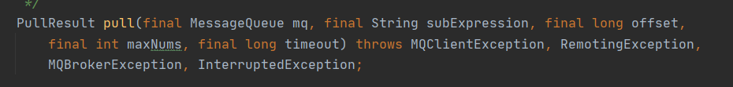
可以看出 LIte Pull Consumer 的拉取风格发生了变化，不需要用户手动指定队列拉取，而是通过订阅或指定队列，然后自动根据位点进行消息拉取，显得更加方便，个人觉得 DefaultLitePullConsumer 相关的 API 有点类似 Kafka 的工作模式了。
void seek(MessageQueue messageQueue, long offset)
改变下一次消息拉取的偏移量，即改变 poll() 方法下一次运行的拉取消息偏移量，类似于回溯或跳过消息，注意：如果设置的 offset 大于当前消费队列的消费偏移量，就会造成部分消息直接跳过没有消费，使用时请慎重。
void seekToBegin(MessageQueue messageQueue)
改变下一次消息拉取的偏移量到消息队列最小偏移量。其效果相当于重新来过一次。
void seekToEnd(MessageQueue messageQueue)
该变下一次消息拉取偏移量到队列的最大偏移量，即跳过当前所有的消息，从最新的偏移量开始消费。
void pause(Collection< MessageQueue > messageQueues)
暂停消费，支持将某些消息消费队列挂起，即 poll() 方法在下一次拉取消息时会暂时忽略这部分消息消费队列，可用于消费端的限流。
void resume(Collection< MessageQueue > messageQueues)
恢复消费。
boolean isAutoCommit()
是否自动提交消费位点，Lite Pull 模式下可设置是否自动提交位点。
void setAutoCommit(boolean autoCommit)
设置是否自动提交位点。
Collection<MessageQueue> fetchMessageQueues(String topic)
获取 Topic 的路由信息。
Long offsetForTimestamp(MessageQueue messageQueue, Long timestamp)
根据时间戳查找最接近该时间戳的消息偏移量。
void commitSync()
手动提交消息消费位点，在集群消费模式下，调用该方法只是将消息偏移量提交到 OffsetStore 在内存中，并不是实时向 Broker 提交位点，位点的提交还是按照定时任务定时向 Broker 汇报。
Long committed(MessageQueue messageQueue)
获取该消息消费队列已提交的消费位点（从 OffsetStore 中获取，即集群模式下会向 Broker 中的消息消费进度文件中获取。
void registerTopicMessageQueueChangeListener(String topic,TopicMessageQueueChangeListener listener)
注册主题队列变化事件监听器，客户端会每 30s 查询一下 订阅的 Topic 的路由信息（队列信息）的变化情况，如果发生变化，会调用注册的事件监听器。关于 TopicMessageQueueChangeListener 事件监听器说明如下：

事件监听参数说明如下。
String topic
主题名称。
Set<MessageQueue> messageQueues
当前该 Topic 所有的队列信息。
void updateNameServerAddress(String nameServerAddress)
更新 NameServer 的地址。
核心属性介绍
通过对 DefaultLitePullConsumer 核心方法的了解，再结合我们目前已掌握的 DefaultMQPullConsumer、DefaultMQPushConsumer 相关知识，我相信大家对如何使用 DefaultLitePullConsumer 显得胸有成竹了，故暂时先不进入实战，我们一鼓作气看一下其核心属性。
String consumerGroup
消息消费组。
long brokerSuspendMaxTimeMillis
长轮询模式，如果开启长轮询模式，当 Broker 收到客户端的消息拉取请求时如果当时并没有新的消息，可以在 Broker 端挂起当前请求，一旦新消息到达则唤醒线程，从 Broker 端拉取消息后返回给客户端，该值设置在 Broker 等待的最大超时时间，默认为 20s，建议保持默认值即可。
long consumerTimeoutMillisWhenSuspend
消息消费者拉取消息最大的超时时间，该值必须大于 brokerSuspendMaxTimeMillis，默认值为 30s，同样不建议修改该值。
long consumerPullTimeoutMillis
客户端与 Broker 建立网络连接的最大超时时间，默认为 10s。
MessageModel messageModel
消息组消费模型，可选值：集群模式、广播模式。
MessageQueueListener messageQueueListener
消息消费负载队列变更事件。
OffsetStore offsetStore
消息消费进度存储器，与 PUSH 模式机制一样。
AllocateMessageQueueStrategy allocateMessageQueueStrategy
消息消费队列负载策略，与 PUSH 模式机制一样。
boolean autoCommit
设置是否提交消息消费进度，默认为 true。
int pullThreadNums
消息拉取线程数量，默认为 20 个，注意这个是每一个消费者默认 20 个线程往 Broker 拉取消息。这个应该是 Lite PULL 模式对比 PUSH 模式一个非常大的优势。
long autoCommitIntervalMillis
自动汇报消息位点的间隔时间，默认为 5s。
int pullBatchSize
一次消息拉取最多返回的消息条数，默认为 10。
int pullThresholdForQueue
对于单个队列挤压的消息条数触发限流的阔值，默认为 1000，即如果某一个队列在本地挤压超过 1000 条消息，则停止消息拉取。
int pullThresholdSizeForQueue
对于单个队列挤压的消息总大小触发限流的阔值，默认为 100M。
int consumeMaxSpan
单个消息处理队列中最大消息偏移量与最小偏移量的差值触发限流的阔值，默认为 2000。
long pullThresholdForAll
针对所有队列的消息消费请求数触发限流的阔值，默认为 10000。
long pollTimeoutMillis
一次消息拉取默认的超时时间为 5s。
long topicMetadataCheckIntervalMillis
topic 路由信息更新频率，默认 30s 更新一次。
ConsumeFromWhere consumeFromWhere
初次启动时从什么位置开始消费，同 PUSH 模式。
String consumeTimestamp
如果初次启动时 consumeFromWhere 策略选择为基于时间戳，通过该属性设置定位的时间，同 PUSH 模式。
DefaultLitePullConsumer 简单使用示例
介绍了 DefaultLitePullConsumer 的方法与核心属性后，我们先来运用其 API 完成 Demo 程序的调试，在下一篇文章中将会结合应用场景再进一步学习使用 DefaultLitePullConsumer，示例代码如下：
public class LitePullConsumerSubscribe02 {
public static volatile boolean running = true;
public static void main(String[] args) throws Exception {
DefaultLitePullConsumer litePullConsumer = new
DefaultLitePullConsumer("dw_lite_pull_consumer_test");
litePullConsumer.setNamesrvAddr("192.168.3.166:9876");
litePullConsumer.setConsumeFromWhere(ConsumeFromWhere.CONSUME_FROM_FIRST_OFFSET);
litePullConsumer.subscribe("TopicTest", "*");
litePullConsumer.setAutoCommit(true); //该值默认为 true
litePullConsumer.start();
try {
while (running) {
List<MessageExt> messageExts = litePullConsumer.poll();
doConsumeSomething(messageExts);
}
} finally {
litePullConsumer.shutdown();
}
}
private static void doConsumeSomething(List<MessageExt> messageExts) {
// 真正的业务处理
System.out.printf("%s%n", messageExts);
}
}
上面的示例是基于自动提交消息消费进度的，如果采取手动提交，需要应用程序手动调用 consumer 的 commitSync() 方法，乍一看，大家是不是觉得 Lite Pull 模式并且采用自动提交消费位点与 PUSH 模式差别不大，那果真如此吗？接下来我们来对比一下 Lite Pull 与 PUSH 模式的异同。
Lite Pull 与 PUSH 模式之对比
从上面的示例可以看出 Lite PULL 相关的 API 比 4.6.0 之前的 DefaultMQPullConsumer 的使用上要简便不少，从编程风格上已非常接近了 PUSH 模式，其底层的实现原理是否也一致呢？显然不是的，请听我我慢慢道来。
不知大家是否注意到，Lite PULL 模式下只是通过 poll() 方法拉取一批消息，然后提交给应用程序处理，**采取自动提交模式下位点的提交与消费结果并没有直接挂钩，即消息如果处理失败，其消费位点还是继续向前继续推进，缺乏消息的重试机制。**为了论证笔者的观点，这里给出 DefaultLitePullConsumer 的 poll() 方法执行流程图，请大家重点关注位点提交所处的位置。

Lite Pull 模式的自动提交位点，一个非常重要的特征是 poll() 方法一返回，这批消息就默认是消费成功了，一旦没有处理好，就会造成消息丢失，那有没有方法解决上述这个问题呢，seek 方法就闪亮登场了，在业务方法处理过程中，如果处理失败，可以通过 seek 方法重置消费位点，即在捕获到消息业务处理后，需要根据返回的第一条消息中（MessageExt）信息构建一个 MessageQueue 对象以及需要重置的位点。
Lite Pull 模式的消费者相比 PUSH 模式的另外一个不同点事 Lite Pull 模式没有消息消费重试机制，PUSH 模式在并发消费模式下默认提供了 16 次重试，并且每一次重试的间隔不一致，极大的简化了编程模型。在这方面 Lite Pull 模型还是会稍显复杂。
Lite Pull 模式针对 PUSH 模式一个非常大亮点是消息拉取线程是以消息消费组为维度的，而且一个消费者默认会创建 20 个拉取任务，在消息拉取效率方面比 PUSH 模型具有无可比拟的优势，特别适合大数据领域的批处理任务，即每隔多久运行一次的拉取任务。
长轮询实现原理
PULL 模式通常适合大数据领域的批处理操作，对消息的实时性要求不高，更加看重的是消息的拉取效率，即一次消息需要拉取尽可能多的消息，这样方便一次性对大量数据进行处理，提高数据的处理效率，特别是希望一次消息拉取再不济也要拉取点消息，不要出现太多无效的拉取请求（没有返回消息的拉取请求）。
首先大家来看一下如下这个场景：

即 Broker 端没有新消息时，Broker 端采取何种措施呢？我想基本有如下两种策略进行选择：
- Broker 端没有新消息，立即返回，拉取结果中不包含任何消息。
- 当前拉取请求在 Broker 端挂起，在 Broker 端挂起，并且轮询 Broker 端是否有新消息，即轮询机制。
上面说的第二种方式，有一个“高大上”的名字——轮询，根据轮询的方式又可以分为长轮询、短轮询。
- 短轮询：第一次未拉取到消息后等待一个时间间隔后再试，默认为 1s，可以在 Broker 的配置文件中设置 shortPollingTimeMills 改变默认值，即轮询一次，注意：只轮询一次。
- 长轮询：可以由 PULL 客户端设置在 Broker 端挂起的超时时间，默认为 20s，然后在 Broker 端没有拉取到消息后默认每隔 5s 一次轮询，并且在 Broker 端获取到新消息后，会唤醒拉取线程，结束轮询，尝试一次消息拉取，然后返回一批消息到客户端，长轮询的时序图如下所示：

从这里可以看出，长轮询比短轮询，轮询等待的时间长，短轮询只轮询一次，并且默认等待时间为 1s，而长轮询默认一次阻塞 5s，但支持被唤醒。
在 broker 端与长轮询相关的参数如下：
- longPollingEnable：是否开启长轮询，默认为 true。
- shortPollingTimeMills：短轮询等待的时间，默认为 1000，表示 1s。
小结
本篇详细介绍了 RocketMQ 于 4.6.0 版本引入的新版 PULL 模式消息者实现类核心方法与核心属性，并给出简单的使用示例，然后重点总结了 Lite Pull 与 PUSH 模式的差异，并思考其使用场景，最后总结了一下消息拉取模式中一个非常重要的机制——长轮询机制，一次消息拉取尽可能拉取到消息做最大努力。
12 结合实际场景再聊 DefaultLitePullConsumer 的使用
通过上文的讲解，各位读者朋友们应该对 DefaultLitePullConsumer 有了一个全面的理解，但会不会觉得意犹未尽之感，因为在实战环节只是给出了一个 Demo 级别的示例，本篇将一个大数据领域的消息拉取批处理场景丰富一些 DefaultLitePullConsumer 的使用技巧。
场景描述
现在订单系统会将消息发送到 ORDER_TOPIC 中，大数据这边需要将订单数据导入自己的计算平台，对用户、商家的订单行为进行分析。
PUSH 与 PULL 模式选型
大数据这边只需订阅 ORDER_TOPIC 主题就可以完成数据的同步，那是采用 PUSH 模式还是 PULL 模式呢？
大数据领域通常采用 PULL 模式，因为大数据数据计算都是基于 Spark 等批处理框架，基本都是批处理任务，例如每 5 分钟、每 10 分钟执行一次，而且一个批次能处理的数据越多越好，这样有利于大量数据分布式计算，整体性能计算效能更佳，如果采用 PUSH 模式，虽然也可以指定一次拉取的消息调试，但由于 PUSH 模式是几乎实时的，故每次拉取时服务端几乎不可能挤满了大量的消息，导致一次拉取的消息其实不多，再者是对于一个消费 JVM 来说，面对一个 RocketMQ 集群只会开启一条线程进行消息拉取，而 PULL 模式每一个消费者就可以指定多个消息拉取线程（默认为 20 个），故从消息拉取效能这个方面，PULL 模式占优，并且这个对实时性要求没那么高，故 综合考虑下来，该场景最终采用 PULL 模式。
方案设计
大概的实现思路如下图所示：

代码实现与代码解读
// BigDataPullConsumer.java
package org.apache.rocketmq.example.simple.litepull;
import org.apache.rocketmq.client.consumer.DefaultLitePullConsumer;
import org.apache.rocketmq.client.producer.DefaultMQProducer;
import org.apache.rocketmq.common.consumer.ConsumeFromWhere;
import org.apache.rocketmq.common.message.MessageExt;
import org.apache.rocketmq.common.message.MessageQueue;
import org.apache.rocketmq.common.protocol.heartbeat.MessageModel;
import java.util.HashSet;
import java.util.List;
import java.util.Set;
import java.util.concurrent.*;
import java.util.stream.Collectors;
public class BigDataPullConsumer {
private final ExecutorService executorService = new ThreadPoolExecutor(30, 30, 0L,
TimeUnit.SECONDS, new ArrayBlockingQueue<>(10000), new DefaultThreadFactory("business-executer-
"));
private final ExecutorService pullTaskExecutor = new ThreadPoolExecutor(1, 1, 0L,
TimeUnit.SECONDS, new ArrayBlockingQueue<>(10), new DefaultThreadFactory("pull-batch-"));
private String consumerGroup;
private String nameserverAddr;
private String topic;
private String filter;
private MessageListener messageListener;
private DefaultMQProducer rertyMQProducer;
private PullBatchTask pullBatchTask;
public BigDataPullConsumer(String consumerGroup, String nameserverAddr, String topic, String filter) {
this.consumerGroup = consumerGroup;
this.nameserverAddr = nameserverAddr;
this.topic = topic;
this.filter = filter;
initRetryMQProducer();
}
private void initRetryMQProducer() {
this.rertyMQProducer = new DefaultMQProducer(consumerGroup + "-retry");
this.rertyMQProducer.setNamesrvAddr(this.nameserverAddr);
try {
this.rertyMQProducer.start();
} catch (Throwable e) {
throw new RuntimeException("启动失败", e);
}
}
public void registerMessageListener(MessageListener messageListener) {
this.messageListener = messageListener;
}
public void start() {
//没有考虑重复调用问题
this.pullBatchTask = new PullBatchTask(consumerGroup, nameserverAddr, topic,filter,messageListener);
pullTaskExecutor.submit(this.pullBatchTask);
}
public void stop() {
while(this.pullBatchTask.isRunning()) {
try {
Thread.sleep(1 * 1000);
} catch (Throwable e) {
//ignore
}
}
this.pullBatchTask.stop();
pullTaskExecutor.shutdown();
executorService.shutdown();
try {
//等待重试任务结束
while(executorService.awaitTermination(5, TimeUnit.SECONDS)) {
this.rertyMQProducer.shutdown();
break;
}
} catch (Throwable e) {
//igonre
}
}
/**
* 任务监听
*/
static interface MessageListener {
boolean consumer(List<MessageExt> msgs);
}
/**
* 定时调度任务，例如每 10 分钟会被调度一次
*/
class PullBatchTask implements Runnable {
DefaultLitePullConsumer consumer;
String consumerGroup;
String nameserverAddr;
String topic;
String filter;
private volatile boolean running = true;
private MessageListener messageListener;
public PullBatchTask(String consumerGroup, String nameserverAddr,String topic, String filter,
MessageListener messageListener) {
this.consumerGroup = consumerGroup;
this.nameserverAddr = nameserverAddr;
this.topic = topic;
this.filter = filter;
this.messageListener = messageListener;
init();
}
private void init() {
System.out.println("init 方法被调用");
consumer = new DefaultLitePullConsumer(this.consumerGroup);
consumer.setNamesrvAddr(this.nameserverAddr);
consumer.setAutoCommit(true);
consumer.setMessageModel(MessageModel.CLUSTERING);
consumer.setConsumeFromWhere(ConsumeFromWhere.CONSUME_FROM_FIRST_OFFSET);
try {
consumer.subscribe(topic, filter);
consumer.start();
} catch (Throwable e) {
e.printStackTrace();
}
}
public void stop() {
this.running = false;
this.consumer.shutdown();
}
public boolean isRunning() {
return this.running;
}
@Override
public void run() {
this.running = true;
long startTime = System.currentTimeMillis() - 5 * 1000;
System.out.println("run 方法被调用");
int notFoundMsgCount = 0;
while(running) {
try {
// 拉取一批消息
List<MessageExt> messageExts = consumer.poll();
if(messageExts != null && !messageExts.isEmpty()) {
notFoundMsgCount = 0;//查询到数据，重置为 0；
// 使用一个业务线程池专门消费消息
try {
executorService.submit(new ExecuteTask(messageExts, messageListener));
} catch (RejectedExecutionException e) { //如果被拒绝，停止拉取，业务代码不去拉取，在
// RocketMQ 内部会最终也会触发限流，不会再拉取更多的消息，确保不会触发内存溢出。
boolean retry = true;
while (retry)
try {
Thread.sleep(5 * 1000);//简单的限流
executorService.submit(new ExecuteTask(messageExts, messageListener));
retry = false;
} catch (RejectedExecutionException e2) {
retry = true;
}
}
MessageExt last = messageExts.get(messageExts.size() - 1);
/**
* 如果消息处理的时间超过了该任务的启动时间，本次批处理就先结束
* 停掉该消费者之前，建议先暂停拉取，这样就不会从 broker 中拉取消息
* */
if(last.getStoreTimestamp() > startTime) {
System.out.println("consumer.pause 方法将被调用。");
consumer.pause(buildMessageQueues(last));
}
} else {
notFoundMsgCount ++;
}
//如果连续出现 5 次未拉取到消息，说明本地缓存的消息全部处理，并且 pull 线程已经停止拉取了,此时可以结束本次消
//息拉取，等待下一次调度任务
if(notFoundMsgCount > 5) {
System.out.println("已连续超过 5 次未拉取到消息，将退出本次调度");
break;
}
} catch (Throwable e) {
e.printStackTrace();
}
}
this.running = false;
}
/**
* 构建 MessageQueue
* @param msg
* @return
*/
private Set<MessageQueue> buildMessageQueues(MessageExt msg) {
Set<MessageQueue> queues = new HashSet<>();
MessageQueue queue = new MessageQueue(msg.getTopic(), msg.getBrokerName(), msg.getQueueId());
queues.add(queue);
return queues;
}
}
/**
* 任务执行
*/
class ExecuteTask implements Runnable {
private List<MessageExt> msgs;
private MessageListener messageListener;
public ExecuteTask(List<MessageExt> allMsgs, MessageListener messageListener) {
this.msgs = allMsgs.stream().filter((MessageExt msg) -> msg.getReconsumeTimes() <=
16).collect(Collectors.toList());
this.messageListener = messageListener;
}
@Override
public void run() {
try {
this.messageListener.consumer(this.msgs);
} catch (Throwable e) {
//消息消费失败，需要触发重试
//这里可以参考 PUSH 模式，将消息再次发送到服务端。
try {
for(MessageExt msg : this.msgs) {
msg.setReconsumeTimes(msg.getReconsumeTimes() + 1);
rertyMQProducer.send(msg);
}
} catch (Throwable e2) {
e2.printStackTrace();
// todo 重试
}
}
}
}
}
// DefaultThreadFactory.java
package org.apache.rocketmq.example.simple.litepull;
import java.util.concurrent.ThreadFactory;
import java.util.concurrent.atomic.AtomicInteger;
public class DefaultThreadFactory implements ThreadFactory {
private AtomicInteger num = new AtomicInteger(0);
private String prefix;
public DefaultThreadFactory(String prefix) {
this.prefix = prefix;
}
@Override
public Thread newThread(Runnable r) {
Thread t = new Thread(r);
t.setName(prefix + num.incrementAndGet());
return t;
}
}
// LitePullMain.java
package org.apache.rocketmq.example.simple.litepull;
import org.apache.rocketmq.common.message.MessageExt;
import java.util.List;
import java.util.concurrent.*;
public class LitePullMain {
public static void main(String[] args) {
String consumerGroup = "dw_test_consumer_group";
String nameserverAddr = "192.168.3.166:9876";
String topic = "dw_test";
String filter = "*";
/** 创建调度任务线程池 */
ScheduledExecutorService schedule = new ScheduledThreadPoolExecutor(1, new
DefaultThreadFactory("main-schdule-"));
schedule.scheduleWithFixedDelay(new Runnable() {
@Override
public void run() {
BigDataPullConsumer demoMain = new BigDataPullConsumer(consumerGroup, nameserverAddr, topic,
filter);
demoMain.registerMessageListener(new BigDataPullConsumer.MessageListener() {
/**
* 业务处理
* @param msgs
* @return
*/
@Override
public boolean consumer(List<MessageExt> msgs) {
System.out.println("本次处理的消息条数：" + msgs.size());
return true;
}
});
demoMain.start();
demoMain.stop();
}
}, 1000, 30 * 1000, TimeUnit.MILLISECONDS);
try {
CountDownLatch cdh = new CountDownLatch(1);
cdh.await(10 , TimeUnit.MINUTES);
schedule.shutdown();
} catch (Throwable e) {
//ignore
}
}
}
程序运行结果如下图所示：
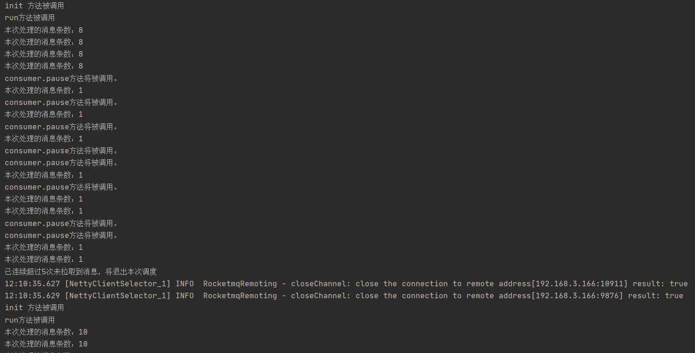
符合预期，可以看到两次调度，并且每一次调度都正常结束。
首先对各个类的职责做一个简单介绍：
- MessageListener：用来定义用户的消息处理逻辑。
- PullBatchTask：使用 RocketMQ Lite Pull 消费者进行消息拉取的核心实现。
- ExecuteTask：业务处理任务，在内部实现调用业务监听器，并执行重试相关的逻辑。
- BigDataPullConsumer：本次业务的具体实现类
- LitePullMain：本次测试主入口类。
接下来对 PullBatchTask、ExecuteTask 的实现思路进行一个简单介绍，从而窥探一下消息 PULL 模式的一些使用要点。
PullBatchTask 的 run 方法主要是使用一个 while 循环，但通常不会用向 PUSH 模式实时监听，而是进行批量处理，即通过定时调度按批次进行处理，故需要有结束本次调度的逻辑，主要是为了提高消息拉取的效率，故本示例采用了本次任务启动只消费本次启动之前发送的消息，后面的新消息等聚集后在另一次调度时再消费，这里为了保证消费者停止时消息消费进度已经被持久化，这里并不会立即结束,而是在没有拉取合适的消息后调用 pause 方法暂停队列的消息，然后再连续多少次后并未拉取到消息后，在调用 DefaultLitePullConsumer 的 shutdown 方法，确保消息进度完整无误的提交到 Broker，从而避免大量消息重复消费。
消息消费端的业务处理这里引入了一个业务线程池，并且如果业务线程池积压，会触发消息拉取端的限流，从而避免内存溢出。
消息消费端在业务处理失败后，需要重试，将消息先发送到 Broker（主要的目的时方便消息消费进度向前推进）。
13 结合实际场景顺序消费、消息过滤实战
经过前面的篇幅，我相信大家已经掌握了消息消费方面的常用使用技巧了，本篇将对消息消费领域的其他几个特殊场景进行一些实战演示，并穿插一些原理解读。
顺序消费
业务场景描述
现在开发一个银行类项目，对用户的每一笔余额变更都需要发送短信通知到用户。如果用户同时在电商平台下单，转账两个渠道在同一时间进行了余额变更，此时用户收到的短信必须顺序的，例如先网上购物，消费了 128，余额 1000，再转账给朋友 200，剩余余额 800，如果这两条短信的发送顺序颠倒，给用户会带来很大的困扰，故在该场景下必须保证顺序。这里所谓的顺序，是针对同一个账号的，不同的账号无需保证顺序性，例如用户 A 的余额发送变更，用户 B 的余额发生变更，这两条短信的发送其实相互不干扰的，故不同账号之间无需保证顺序。
代码实现
本篇代码主要采用截图的方式展示其关键代码，并对其进行一些简单的解读。
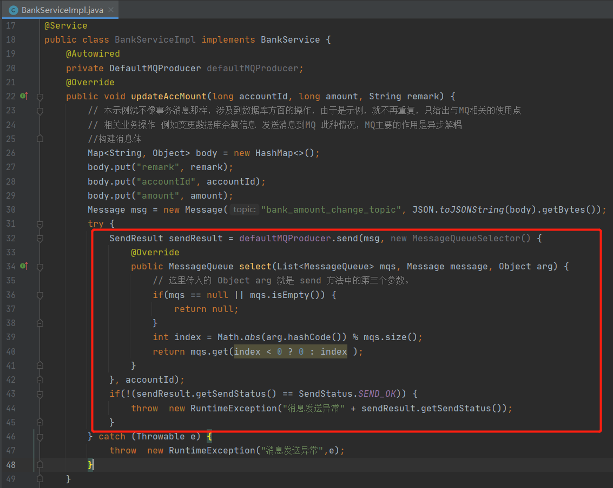
首先这里的主业务是操作账户的余额，然后是余额变更后需要发短信通知给用户，但由于发送短信与账户转载是两个相对独立但又紧密的操作，故这里可以引入消息中间件来解耦这两个操作。但由于发送短信业务，其顺序一定要与扣款的顺序保证一致，故需要使用顺序消费。
由于 RocketMQ 只提供了消息队列的局部有序，故如果要实现某一类消息的顺序执行，就必须将这类消息发送到同一个队列，故这里在消息发送时使用了 MessageQueueSelector，并且使用用户账户进行队列负载，这样同一个账户的消息就会账号余额变更的顺序到达队列，然后队列中的消息就能被顺序消费。

顺序消费的事件监听器为 MessageListenerOrderly，表示顺序消费。
顺序消费在使用上比较简单，那 RocketMQ 顺序消费是如何实现的？队列重新负载时还能保持顺序消费吗？顺序消费会重复消费吗？
RocketMQ 顺序消费原理简述
在 RocketMQ 中，PUSH 模式的消息拉取模型如下图所示：

上述流程在前面的章节中已做了详述，这里不再累述，这里想重点突出线程池。
RocketMQ 消息消费端按照消费组进行的线程隔离，即每一个消费组都会创建已线程池，由一个线程池负责分配的所有队列中的消息。
**所以要保证消费端对单队列中的消息顺序处理，故多线程处理，需要按照消息消费队列进行加锁。**故顺序消费在消费端的并发度并不取决消费端线程池的大小，而是取决于分给给消费者的队列数量，故如果一个 Topic 是用在顺序消费场景中，建议消费者的队列数设置增多，可以适当为非顺序消费的 2~3 倍，这样有利于提高消费端的并发度，方便横向扩容。
消费端的横向扩容或 Broker 端队列个数的变更都会触发消息消费队列的重新负载，在并发消息时在队列负载的时候一个消费队列有可能被多个消费者同时消息，但顺序消费时并不会出现这种情况，因为顺序消息不仅仅在消费消息时会锁定消息消费队列，在分配到消息队列时，能从该队列拉取消息还需要在 Broker 端申请该消费队列的锁，即同一个时间只有一个消费者能拉取该队列中的消息，确保顺序消费的语义。
从前面的文章中也介绍到并发消费模式在消费失败是有重试机制，默认重试 16 次，而且重试时是先将消息发送到 Broker，然后再次拉取到消息，这种机制就会丧失其消费的顺序性，故如果是顺序消费模式，消息重试时在消费端不停的重试，重试次数为 Integer.MAX_VALUE，即如果一条消息如果一直不能消费成功，其消息消费进度就会一直无法向前推进，即会造成消息积压现象。
温馨提示：顺序消息时一定要捕捉异常，必须能区分是系统异常还是业务异常，更加准确的要能区分哪些异常是通过重试能恢复的，哪些是通过重试无法恢复的。无法恢复的一定要尽量在发送到 MQ 之前就要拦截，并且需要提高告警功能。
消息过滤实战
业务场景描述
例如公司采用的是微服务架构，分为如下几个子系统，基础数据、订单模块、商家模块，各个模块的数据库都是独立的。微服务带来的架构伸缩性不容质疑，但数据库的相互独立，对于基础数据的 join 操作就不那么方便了，即在订单模块需要使用基础数据，还需要通过 Dubbo 服务的方式去请求接口，为了避免接口的调用，基础数据的数据量又不是特别多的情况，项目组更倾向于将基础数据的数据同步到各个业务模块的数据库，然后基础数据发生变化及时通知订单模块，这样与基础数据的表 join 操作就可以在本库完成。
技术方案
上述方案的关键思路：
- 基础数据一旦数据发生变化，就向 MQ 的 base_data_topic 发送一条消息。
- 下游系统例如订单模块、商家模块订阅 base_data_topic 完成数据的同步。
问题，如果订单模块出现一些不可预知的错误，导致数据同步出现异常，并且发现的时候，存储在 MQ 中的消息已经被删除，此时需要上游（基础数据）重推数据，这个时候，如果基础数据重推的消息直接发送到 base_data_topic，那该 Topic 的所有消费者都会消费到，这显然是不合适的。怎么解决呢？
通常有两种办法：
- 为各个子模块创建另外一个主题，例如 retry_ods_base_data_topic，这样需要向哪个子系统就向哪个 Topic 发送。
- 引入 Tag 机制。
本节主要来介绍一下 Tag 的思路。
首先，正常情况下，基础模块将数据变更发送到 base_data_topic，并且消息的 Tag 为 all。然后为每一个子系统定义一个单独的重推 Tag，例如 ods、shop。
消费端同时订阅 all 和各自的重推 Tag，完美解决问题。
代码实现
在消息发送时需要按照需求指定消息的 Tag，其示例代码如下：

然后在消息消费时订阅时，更加各自的模块订阅各自关注的 Tag，其示例代码如下：

在消息订阅时一个消费组可以订阅多个 Tag，多个 Tag 使用双竖线分隔。
Topic 与 Tag 之争
用 Tag 对同一个主题进行区分会引来一个“副作用”，就是在重置消息消费位点时该消费组需要“处理”的是所有标签的数据，虽然在 Broker 端、消息消费端最终会过滤，不符合 Tag 的消息并不会执行业务逻辑，但在消息拉取时还是需要将消息读取到 PageCache 中并进行过滤，会有一定的性能损耗，但这个不是什么大问题。
在数据推送这个场景，除了使用 Tag 机制来区分重推数据外，也可以为重推的数据再申请一个额外的主题，即通过主题来区分不同的数据，这种方案倒不说不可以，但这个在运维管理层面需要申请众多的 Topic，而这类 Topic 存储的其实是一类数据，使用不同的 Topic 存储同类数据，会显得较为松散。当然如果是不同的业务场景，就建议使用 Topic 来隔离。
小结
本篇主要从两个贴近实战场景，结合场景来介绍如何使用顺序消息、消息过滤，所有的示例代码整合在一个 Spring Boot + Dubbo + RocketMQ + MyBatis 的工程中。
14 消息消费积压问题排查实战
问题描述
在 RocketMQ 消息消费方面一个最常见的问题是消息积压，其现象如下图所示：

所谓的消息积压：就是 Broker 端当前队列有效数据最大的偏移量（brokerOffset）与消息消费端的当前处理进度（consumerOffset）之间的差值，即表示当前需要消费但没有消费的消息。
问题分析与解决方案
项目组遇到消息积压问题通常第一时间都会怀疑是 RocketMQ Broker 的问题，会第一时间联系到消息中间件的负责，消息中间件负责人当然会首先排查 Broker 端的异常，但根据笔者的境遇，此种情况通常是消费端的问题，反而是消息发送遇到的问题更有可能是 Broker 端的问题，当然笔者也有方法进行举证，服务端的诊断方法稍后会给出，这里基本可以采用类比法，因为一个 Topic 通常会被多个消费端订阅，我们只要看看其他消费组是否也积压，例如如下图所示：
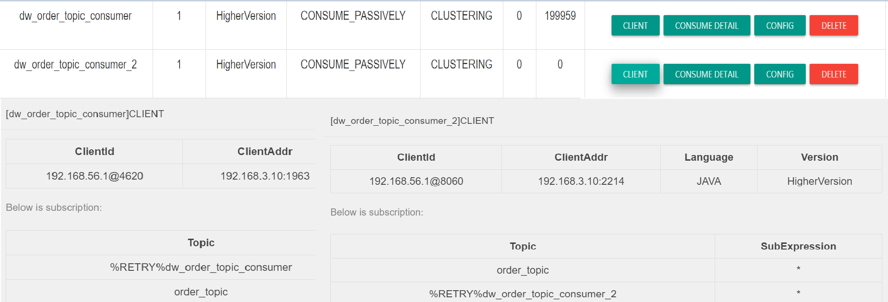
从上图看出，两个不同的消费组订阅了同一个 Topic，一个出现消息积压，一个却消费正常，从这里就可以将分析的重点定位到具体项目组。那如何具体分析这个问题呢？
要能更好的掌握问题分析的切入点，在这里我想再重复介绍一下 RocketMQ 消息拉取模型与消息消费进度提交机制。消息的拉取模型如下图所示：

在 RocketMQ 中每一客户端会单独创建一个线程 PullMessageService 会循环从 Broker 拉取一批消息，然后提交到消费端的线程池中进行消费，线程池中的线程消费完一条消息后会上服务端上报当前消费端的消费进度，而且在提交消费进度时是提交当前处理队列中消息消费偏移量最小的消息作为消费组的进度，即如果消息偏移量为 100 的消息，如果由于某种原因迟迟没有消费成功，那该消费组的进度则无法向前推进，久而久之，Broker 端的消息偏移量就会远远大于消费组当前消费的进度，从而造成消息积压现象。
故遇到这种情况，通常应该去查看消费端线程池中线程的状态，故可以通过如下命令获取应用程序的线程栈。
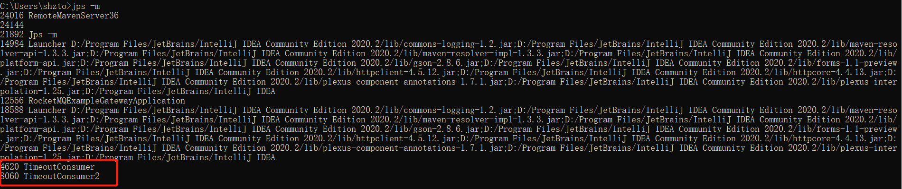
即可通过 jps -m 或者 ps -ef | grep java 命令获取当前正在运行的 Java 程序，通过启动主类即可获得应用的进程 id，然后可以通过 jstack pid > j.log 命令获取线程的堆栈，在这里我建议大家连续运行 5 次该命令，分别获取 5 个线程堆栈文件，主要用于对比线程的状态是否在向前推进。
通过 jstack 获取堆栈信息后，可以重点搜索 ConsumeMessageThread_ 开头的线程状态，例如下图所示：
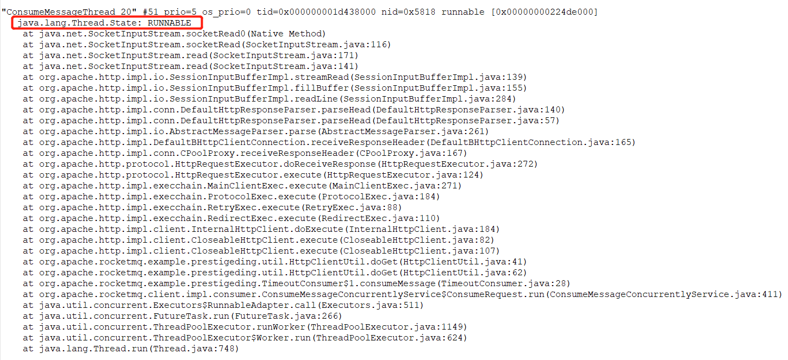
状态为 RUNABLE 的消费端线程正在等待网络读取，我们再去其他文件看该线程的状态，如果其状态一直是 RUNNABLE，表示线程一直在等待网络读取，及线程一直“阻塞”在网络读取上，一旦阻塞，那该线程正在处理的消息就一直处于消费中，消息消费进度就会卡在这里，不会继续向前推进，久而久之，就会出现消息积压情况。
从调用线程栈就可以找到阻塞的具体方法，从这里看出是在调用一个 HTTP 请求，跟踪到代码，截图如下：
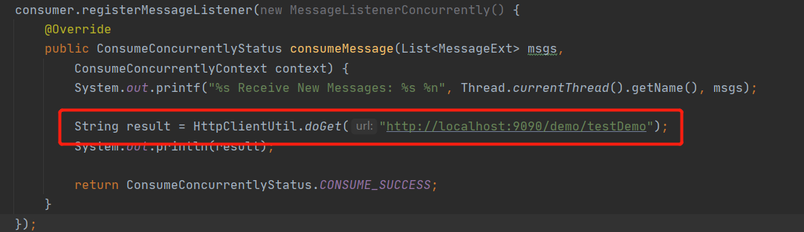
定位到代码后再定位问题就比较简单的，通常的网络调用需要设置超时时间，这里由于没有设置超时时间，导致一直在等待对端的返回，从而消息消费进度无法向前推进，解决方案：设置超时时间。
通常会造成线程阻塞的场景如下：
- HTTP 请求未设置超时时间
- 数据库查询慢查询导致查询时间过长，一条消息消费延时过高
线程栈分析经验
网上说分析线程栈，一般盯着 WAIT、Block、TIMEOUT_WAIT 等状态，其实不然，处于 RUNNABLE 状态的线程也不能忽略，因为 MySQL 的读写、HTTP 请求等网络读写，即在等待对端网络的返回数据时线程的状态是 RUNNABLE，并不是所谓的 BLOCK 状态。
如果处于下图所示的线程栈中的线程数量越多，说明消息消费端的处理能力很好，反而是拉取消息的速度跟不上消息消费的速度。
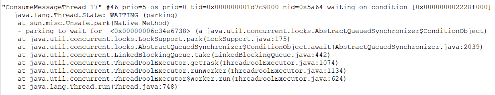
RocketMQ 消费端限流机制
RocketMQ 消息消费端会从 3 个维度进行限流：
- 消息消费端队列中积压的消息超过 1000 条
- 消息处理队列中尽管积压没有超过 1000 条，但最大偏移量与最小偏移量的差值超过 2000
- 消息处理队列中积压的消息总大小超过 100M
为了方便理解上述三条规则的设计理念，我们首先来看一下消费端的数据结构，如下图所示：
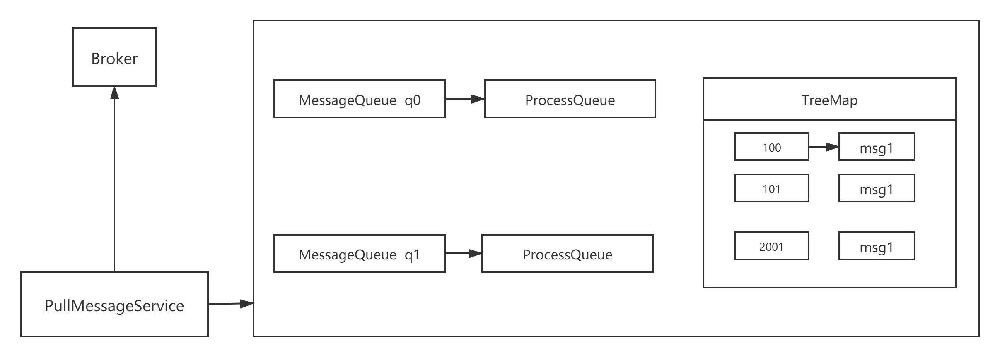
PullMessageService 线程会按照队列向 Broker 拉取一批消息，然后会存入到 ProcessQueue 队列中，即所谓的处理队列，然后再提交到消费端线程池中进行消息消费，消息消费完成后会将对应的消息从 ProcessQueue 中移除，然后向 Broker 端提交消费进度，提交的消费偏移量为 ProceeQueue 中的最小偏移量。
规则一：消息消费端队列中积压的消息超过 1000 条值的就是 ProcessQueue 中存在的消息条数超过指定值，默认为 1000 条，就触发限流，限流的具体做法就是暂停向 Broker 拉取该队列中的消息，但并不会阻止其他队列的消息拉取。例如如果 q0 中积压的消息超过 1000 条，但 q1 中积压的消息不足 1000，那 q1 队列中的消息会继续消费。其目的就是担心积压的消息太多，如果再继续拉取，会造成内存溢出。
规则二：消息在 ProcessQueue 中实际上维护的是一个 TreeMap，key 为消息的偏移量、vlaue 为消息对象，由于 TreeMap 本身是排序的，故很容易得出最大偏移量与最小偏移量的差值，即有可能存在处理队列中其实就只有 3 条消息，但偏移量确超过了 2000，例如如下图所示：
出现这种情况也是非常有可能的，其主要原因就是消费偏移量为 100 的这个线程由于某种情况卡主了（“阻塞”了），其他消息却能正常消费，这种情况虽然不会造成内存溢出，但大概率会造成大量消息重复消费，究其原因与消息消费进度的提交机制有关，在 RocketMQ 中，例如消息偏移量为 2001 的消息消费成功后，向服务端汇报消费进度时并不是报告 2001，而是取处理队列中最小偏移量 100，这样虽然消息一直在处理，但消息消费进度始终无法向前推进，试想一下如果此时最大的消息偏移量为 1000，项目组发现出现了消息积压，然后重启消费端，那消息就会从 100 开始重新消费，会造成大量消息重复消费，RocketMQ 为了避免出现大量消息重复消费，故对此种情况会对其进行限制，超过 2000 就不再拉取消息了。
规则三：消息处理队列中积压的消息总大小超过 100M。
这个就更加直接了，不仅从消息数量考虑，再结合从消息体大小考虑，处理队列中消息总大小超过 100M 进行限流，这个显而易见就是为了避免内存溢出。
在了解了 RocketMQ 消息限流规则后，会在 rocketmq_client.log 中输出相关的限流日志，具体搜索“so do flow control”，详细如下图所示：
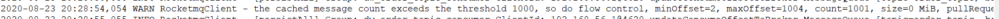
RocketMQ 服务端性能自查技巧
那如何证明 RocketMQ 集群本身没有问题呢？其实也很简单，我们通常一个常用的技巧是查看 RocketMQ 消息写入的性能，执行如下命令：
cd ~/logs/rocketmqlogs/
grep 'PAGECACHERT' store.log | more
其输出的结果如下图所示：
在 RocketMQ Broker 中会每隔 1 分钟打印出上一分钟消息写入的耗时分布，例如 [<=0ms] 表示在这一秒钟写入消息在 Broker 端的延时小鱼 0ms 的消息条数，其他的依次类推，通常在 100~200ms 在上万次消息发送中也不会出现 1 次。从这里基本能看出 Broker 端写入的压力。
小结
本节首先从消息积压的现象说起，然后分析问题、解决问题，最后再加以一些原理上的补充，尽量避免知其然而不知其所以然。
15 RocketMQ 常用命令实战
本篇整理在运维 RocketMQ 集群时的常用命令，明白命令的含义，在集群运维时得心应手，下面命令均在实际环境中执行过。
集群命令汇总
集群列表
命令 clusterList 用于查看集群各个节点的运行情况。可以看到该集群中有几个节点、主节点还是从节点、以及每个节点的写入 TPS 和读出的 TPS 等。
命令示例：
$ bin/mqadmin clusterList -n x.x.x.x:9876
RocketMQLog:WARN No appenders could be found for logger (io.netty.util.internal.PlatformDependent0).
RocketMQLog:WARN Please initialize the logger system properly.
#Cluster Name #Broker Name #BID #Addr #Version #InTPS(LOAD) #OutTPS(LOAD) #PCWait(ms) #Hour #SPACE
fat_mq fat_mq_c 0 x.x.x.x:10911 V4_7_0 262.95(0,0ms) 259.85(0,0ms) 0 55.09 0.3130
字段含义
| 名称 | 含义 |
|---|---|
| -n | Nameserver 地址 |
| Cluster Name | 集群名称 |
| Broker Name | 节点 Broker 名称 |
| BID | Broker ID （0 为主节点，从节点非 0 表示） |
| Addr | 节点地址（ip:port） |
| Version | RocketMQ 的版本号 |
| InTPS | 节点每秒写入的消息数量 |
| OutTPS | 节点每秒读出的消息数量 |
| PCWait | pageCacheLockTimeMills（消息落盘会加锁，当前时间与最后一次加锁的差值） |
| Hour | 磁盘存储多久的有效消息（当前时间与磁盘存储最早的一条消息时间戳的差值） |
| SPACE | 磁盘已使用的占比 |
集群中资源吞吐
命令 statsAll 可以查看集群中所有主题/消费组的实时吞吐情况。
命令示例
$ bin/mqadmin statsAll -n x.x.x.x:9876
RocketMQLog:WARN No appenders could be found for logger (io.netty.util.internal.PlatformDependent0).
RocketMQLog:WARN Please initialize the logger system properly.
#Topic #Consumer Group #Accumulation #InTPS #OutTPS #InMsg24Hour #OutMsg24Hour
trade_eticket_created_topic trade_eticket_created_consumer 0 0.00 0.00 0 0
字段含义
| 名称 | 含义 |
|---|---|
| -n | Nameserver 地址 |
| -a | 只打印活动的主题 |
| -t | 只打印指定的主题 |
| Topic | 主题名称 |
| Consumer Group | 消费组名称 |
| Accumulation | 消息堆积数量 |
| InTPS | 该主题每秒写入的消息数量 |
| OutTPS | 该消费组每秒消费的消息数量 |
| InMsg24Hour | 该主题 24 小时写入的消息总数 |
| OutMsg24Hour | 该消费组 24 小时消费的消息总数 |
主题命令汇总
主题列表
通过 topicList 列出集群中的所有主题。
命令示例：
$ bin/mqadmin topicList -n x.x.x.x:9876
RocketMQLog:WARN No appenders could be found for logger (io.netty.util.internal.PlatformDependent0).
RocketMQLog:WARN Please initialize the logger system properly.
mq_demo1_topic
mq_demo1_topic
mq_demo2_topic
...
字段含义：
| 名称 | 含义 |
|---|---|
| -n | Nameserver 地址 |
主题创建/修改
使用 updateTopic 创建主题，也可以用该命令修改主题配置，例如：队列数量、权限等。
命令示例：
$ bin/mqadmin updateTopic -n x.x.x.x:9876 -c fat_mq -t mq_demo_topic
RocketMQLog:WARN No appenders could be found for logger (io.netty.util.internal.PlatformDependent0).
RocketMQLog:WARN Please initialize the logger system properly.
create topic to x.x.x.x:10911 success.
TopicConfig [topicName=mq_demo_topic, readQueueNums=8, writeQueueNums=8, perm=RW-, topicFilterType=SINGLE_TAG, topicSysFlag=0, order=false]
字段含义：
| 名称 | 含义 |
|---|---|
| -n | Nameserver 地址 |
| -c | 集群名称 |
| -t | 要创建的 Topic 名称 |
| topicName | 主题名称 |
| readQueueNums | 读队列数量 |
| writeQueueNums | 写队列数量 |
| perm | 主题权限 RW 表示该主题拥有读写权限 |
| topicFilterType | 消息过滤类型 |
| topicSysFlag | 主题系统标记 |
| order | 是否有序主题 |
主题路由
使用 topicRoute 命令可以查看 Topic 的路由信息，队列所在的 Broker 以及 Broker 所在的集群等。
命令示例：
$ bin/mqadmin topicRoute -n x.x.x.x:9876 -t mq_demo_topic
RocketMQLog:WARN No appenders could be found for logger (io.netty.util.internal.PlatformDependent0).
RocketMQLog:WARN Please initialize the logger system properly.
{
"brokerDatas":[
{
"brokerAddrs":{0:"x.x.x.x:10911"
},
"brokerName":"fat_mq_c",
"cluster":"fat_mq"
}
],
"filterServerTable":{},
"queueDatas":[
{
"brokerName":"fat_mq_c",
"perm":6,
"readQueueNums":8,
"topicSynFlag":0,
"writeQueueNums":8
}
]
}
字段含义：
| 名称 | 含义 |
|---|---|
| -n | Nameserver 地址 |
| -t | 主题名称 |
| brokerDatas | broker 信息地址、节点名称、所在集群 |
| queueDatas | 队列数量、队列所在的 broker、权限等 |
主题状态
使用 topicStatus 查看主题状态情况，例如：最小偏移量、最大偏移量、最新更新时间等。
命令示例：
$ bin/mqadmin topicStatus -n x.x.x.x:9876 -t mq_demo_topic
RocketMQLog:WARN No appenders could be found for logger (io.netty.util.internal.PlatformDependent0).
RocketMQLog:WARN Please initialize the logger system properly.
#Broker Name #QID #Min Offset #Max Offset #Last Updated
fat_mq_c 0 6 10 2020-07-24 14:29:57,707
fat_mq_c 1 4 8 2020-07-24 14:31:32,213
fat_mq_c 2 20 22 2020-07-24 14:35:52,752
fat_mq_c 3 14 20 2020-07-24 14:28:34,287
字段含义：
| 名称 | 含义 |
|---|---|
| -n | NameServer 地址 |
| -t | 主题名称 |
| Broker Name | 节点名称 |
| QID | Queue ID 队列编号 |
| Min Offset | 该队列最小偏移量 |
| Max Offset | 该队列最大偏移量 |
| Last Updated | 最新写入消息的时间戳 |
主题权限
可以通过 updateTopicPerm 修改主题的权限，有三种类型：写权限用 2 表示、读权限用 4 表示、读写权限用 6 表示。下面示例中将主题从读写权限变更为写权限。
命令示例：
$ bin/mqadmin updateTopicPerm -c fat_mq -t mq_demo_topic -p 2 -n x.x.x.x:9876
RocketMQLog:WARN No appenders could be found for logger (io.netty.util.internal.PlatformDependent0).
RocketMQLog:WARN Please initialize the logger system properly.
update topic perm from 6 to 2 in x.x.x.x:10911 success.
字段含义：
| 名称 | 含义 |
|---|---|
| -c | 集群名称 |
| -t | 主题名称 |
| -p | 权限（2:W，4:R，6:WR） |
| -n | NameServer 地址 |
主题删除
通过 deleteTopic 删除主题，可以通过该命令对废弃主题进行删除。
命令示例：
$ bin/mqadmin deleteTopic -n x.x.x.x:9876 -t mq_demo_topic -c fat_mq
RocketMQLog:WARN No appenders could be found for logger (io.netty.util.internal.PlatformDependent0).
RocketMQLog:WARN Please initialize the logger system properly.
delete topic [mq_demo_topic] from cluster [fat_mq] success.
delete topic [mq_demo_topic] from NameServer success.
字段含义：
| 名称 | 含义 |
|---|---|
| -n | Nameserver 地址 |
| -t | 主题名称 |
| -c | 集群名称 |
消费组命令汇总
消费组创建
通过 updateSubGroup 可以创建消费组，创建成功会返回该消费组的配置信息。
命令示例：
$ bin/mqadmin updateSubGroup -n x.x.x.x:9876 -c fat_mq -g mq_demo_consumer
RocketMQLog:WARN No appenders could be found for logger (io.netty.util.internal.PlatformDependent0).
RocketMQLog:WARN Please initialize the logger system properly.
create subscription group to x.x.x.x:10911 success.
SubscriptionGroupConfig [groupName=mq_demo_consumer, consumeEnable=true, consumeFromMinEnable=false, consumeBroadcastEnable=false, retryQueueNums=1, retryMaxTimes=16, brokerId=0, whichBrokerWhenConsumeSlowly=1, notifyConsumerIdsChangedEnable=true]
字段含义：
| 名称 | 含义 |
|---|---|
| -n | Nameserver 地址 |
| -c | 集群名称 |
| -g | 消费组名称 |
| groupName | 消费组名称 |
| consumeEnable | 是否开启消费，默认开启 |
| consumeFromMinEnable | 是否从最小位点消费，默认 false |
| consumeBroadcastEnable | 是否开启广播消费，默认 false |
| retryQueueNums | 重试队列数量，默认为 1 |
| retryMaxTimes | 消费重试次数，默认 16 次 |
| brokerId | 消费组所在的 brokerId |
| whichBrokerWhenConsumeSlowly | 当 Master 节点消费慢时，默认在从节点 ID 为 1 的 broker 消费 |
消费者状态
通过 consumerStatus 可以查看各个消费者的情况，包括版本、消费组名称等。
命令示例：
$ bin/mqadmin consumerStatus -g mq_demo_consumer -n x.x.x.x:9876
RocketMQLog:WARN No appenders could be found for logger (io.netty.util.internal.PlatformDependent0).
RocketMQLog:WARN Please initialize the logger system properly.
001 consumer-client-id-disaster_mq-x.x.x.x@21171 V4_7_0 1595768036031/consumer-client-id-disaster_mq-x.x.x.x@21171
002 consumer-client-id-disaster_mq-x.x.x.x@19089 V4_7_0 1595768036031/consumer-client-id-disaster_mq-x.x.x.x@19089
字段含义：
| 名称 | 含义 |
|---|---|
| -g | 消费组名称 |
| -n | NameServer 地址 |
| 输出第一列 | 第几个消费者 |
| 输出第二列 | clientId |
| 输出第三列 | 该消费者使用的客户端 RocketMQ 版本 |
| 输出第四列 | 文件路径（filePath），该文件记录了消费者详细信息 |
消费组进度
通过 consumerProgress 查看该消费组在订阅主题中每个 Queue 消息的消费进度。
命令示例：
$ bin/mqadmin consumerProgress -g pglog_rmq_t_biz_extend_synchbase_consumer -n x.x.x.x:9876
RocketMQLog:WARN No appenders could be found for logger (io.netty.util.internal.PlatformDependent0).
RocketMQLog:WARN Please initialize the logger system properly.
#Topic #Broker Name #QID #Broker Offset #Consumer Offset #Client IP #Diff #LastTime
pglog_rmq_t_biz_extend disaster_mq_a 0 17227343 17227343 N/A 0 2020-07-26 21:09:30
pglog_rmq_t_biz_extend disaster_mq_a 1 16588873 16588873 N/A 0 2020-07-26 21:09:30
pglog_rmq_t_biz_extend disaster_mq_a 2 12053429 12053429 N/A 0 2020-07-26 21:09:35
...
Consume TPS: 3.98
Diff Total: 6
字段含义：
| 名称 | 含义 |
|---|---|
| -g | 消费组名称 |
| -n | NameServer 地址 |
| Topic | 订阅的主题 |
| Broker Name | 订阅主题所在的 Broker |
| QID | 订阅主题的 Queue ID |
| Broker Offset | 该 Queue 存储的消息偏移量 |
| Consumer Offset | 该 Queue 消费的消息偏移量 |
| Diff | 消息堆积情况 |
| LastTime | 上次消费消息的时间 |
| Consume TPS | 每秒钟消费消息的数量 |
| Diff Total | 消息堆积总数 |
消息回溯
通过 resetOffsetByTime 可以将消费组重新定位到过去某个时间点重新开始消费。
命令示例：
$ bin/mqadmin resetOffsetByTime -n x.x.x.x:9876 -g melon_consumer_0010 -t melon_test_0010 -s now
RocketMQLog:WARN No appenders could be found for logger (io.netty.util.internal.PlatformDependent0).
RocketMQLog:WARN Please initialize the logger system properly.
rollback consumer offset by specified group[melon_consumer_0010], topic[melon_test_0010], force[true], timestamp(string)[now], timestamp(long)[1595900214141]
#brokerName #queueId #offset
dev_mq_b 5 281499
dev_mq_b 3 285922
dev_mq_d 5 12335
dev_mq_b 4 286157
dev_mq_b 1 279566
dev_mq_d 3 12336
dev_mq_b 2 281142
dev_mq_d 4 12333
dev_mq_d 1 12335
dev_mq_b 0 282808
dev_mq_d 2 12338
dev_mq_d 0 12343
字段含义：
| 名称 | 含义 |
|---|---|
| -n | NameServer 地址 |
| -g | 消费组名称 |
| -t | 消费组定于的主题名称 |
| -s | 回溯的时间戳（例如：1595815028792，now 表示当前时间） |
| brokerName | 节点名称 |
| queueId | 队列 ID |
| offset | 回溯后该队列消费的偏移量 |
Broker 命令汇总
Broker 状态
通过 brokerStatus 命令了解集群中某个 Broker 的运行情况，例如：启动时间、版本、吞吐情况等。
命令示例：
$ bin/mqadmin brokerStatus -b x.x.x.x:10911 -n x.x.x.x:9876
RocketMQLog:WARN No appenders could be found for logger (io.netty.util.internal.PlatformDependent0).
RocketMQLog:WARN Please initialize the logger system properly.
EndTransactionQueueSize : 0
EndTransactionThreadPoolQueueCapacity: 100000
bootTimestamp : 1591673160936
brokerVersion : 353
brokerVersionDesc : V4_7_0
commitLogDirCapacity : Total : 98.3 GiB, Free : 93.5 GiB.
commitLogDiskRatio : 0.04929098258492175
commitLogMaxOffset : 3473383494
commitLogMinOffset : 2147483648
consumeQueueDiskRatio : 0.04929098258492175
dispatchBehindBytes : 0
dispatchMaxBuffer : 0
earliestMessageTimeStamp : 1595621861014
getFoundTps : 0.0 0.0 0.0
getMessageEntireTimeMax : 290
getMissTps : 786.5213478652134 783.8549478385495 783.5753864100321
getTotalTps : 786.5213478652134 783.8549478385495 783.5753864100321
getTransferedTps : 0.0 0.0 0.0
msgGetTotalTodayMorning : 2713099
msgGetTotalTodayNow : 2713131
msgGetTotalYesterdayMorning : 1478152
msgPutTotalTodayMorning : 9303513
msgPutTotalTodayNow : 9336203
msgPutTotalYesterdayMorning : 6247199
pageCacheLockTimeMills : 0
pullThreadPoolQueueCapacity : 100000
pullThreadPoolQueueHeadWaitTimeMills: 0
pullThreadPoolQueueSize : 0
putMessageAverageSize : 326.0440501347282
putMessageDistributeTime : [<=0ms]:11 [0~10ms]:0 [10~50ms]:0 [50~100ms]:0 [100~200ms]:0 [200~500ms]:0 [500ms~1s]:0 [1~2s]:0 [2~3s]:0 [3~4s]:0 [4~5s]:0 [5~10s]:0 [10s~]:0
putMessageEntireTimeMax : 930
putMessageSizeTotal : 3044013439
putMessageTimesTotal : 9336203
putTps : 0.9999000099990001 0.9999000099990001 0.999875015623047
queryThreadPoolQueueCapacity : 20000
queryThreadPoolQueueHeadWaitTimeMills: 0
queryThreadPoolQueueSize : 0
remainHowManyDataToCommit : 0 B
remainHowManyDataToFlush : 1.1 KiB
remainTransientStoreBufferNumbs : 3
runtime : [ 49 days, 21 hours, 38 minutes, 12 seconds ]
scheduleMessageOffset_1 : 2024,2024
scheduleMessageOffset_10 : 1035,1035
scheduleMessageOffset_11 : 885,885
scheduleMessageOffset_12 : 879,879
scheduleMessageOffset_13 : 889,889
scheduleMessageOffset_14 : 640349,640349
scheduleMessageOffset_15 : 848,848
scheduleMessageOffset_16 : 851,851
scheduleMessageOffset_17 : 870,870
scheduleMessageOffset_18 : 1288,1288
scheduleMessageOffset_2 : 1243954,1243954
scheduleMessageOffset_3 : 13682,13682
scheduleMessageOffset_4 : 5965,5965
scheduleMessageOffset_5 : 5134,5134
scheduleMessageOffset_6 : 4741,4741
scheduleMessageOffset_7 : 13475,13475
scheduleMessageOffset_8 : 2530,2530
scheduleMessageOffset_9 : 2270,2270
sendThreadPoolQueueCapacity : 10000
sendThreadPoolQueueHeadWaitTimeMills: 0
sendThreadPoolQueueSize : 0
startAcceptSendRequestTimeStamp : 0
字段含义：
| 名称 | 含义 |
|---|---|
| -b | Broker 的 IP 地址 |
| -n | Nameserver 地址 |
| EndTransactionQueueSize | END_TRANSACTION 的线程池请求数 |
| EndTransactionThreadPoolQueueCapacity | END_TRANSACTION 线程池大小，默认 100000 |
| bootTimestamp | Broker 启动时间 |
| brokerVersion | Broker 版本 |
| brokerVersionDesc | Broker 版本描述 |
| commitLogDirCapacity | commitLog 目录磁盘使用情况 |
| commitLogDiskRatio | commitLog 目录磁盘使用百分比 |
| commitLogMaxOffset | commitLog 最大偏移量 |
| commitLogMinOffset | commitLog 最小偏移量 |
| dispatchBehindBytes | 已在 commit log 中存储未转发到 consume queue 的数据（单位字节） |
| dispatchMaxBuffer | 可忽略未被使用 |
| earliestMessageTimeStamp | 存储最早消息的时间戳 |
| getFoundTps | 拉取时被找到的消息 Tps 统计，分别表示前 10s、1 分钟、10 分钟平均 Tps |
| getMessageEntireTimeMax | 查找单条消息的最大耗时 |
| getMissTps | 拉取时未被找到的消息 Tps 统计，分别表示前 10s、1 分钟、10 分钟平均 Tps |
| getTotalTps | 拉取时总的消息 Tps 统计，分别表示前 10s、1 分钟、10 分钟平均 Tps |
| getTransferedTps | 向拉取方传输消息 Tps 统计，分别表示前 10s、1 分钟、10 分钟平均 Tps |
| msgGetTotalTodayMorning | 截止今天凌晨 12 点从该 broker 拉取的消息总数 |
| msgGetTotalTodayNow | 截止当前时间从该 broker 拉取的消息总数 |
| msgGetTotalYesterdayMorning | 截止昨天凌晨 12 点从该 broker 拉取的消息总数 |
| msgPutTotalTodayMorning | 截止今天凌晨 12 点从该 broker 写入的消息总数 |
| msgPutTotalTodayNow | 截止当前时间从该 broker 写入的消息总数 |
| msgPutTotalYesterdayMorning | 截止昨天凌晨 12 点从该 broker 写入的消息总数 |
| pageCacheLockTimeMills | 消息存储时会加锁，指从加锁现在的时间 |
| pullThreadPoolQueueCapacity | 拉取线程池队列初始容量，默认为 100000 |
| pullThreadPoolQueueHeadWaitTimeMills | 队列头部第一个任务从创建到现在一直未被执行的时间，即：队列第一个任务等待时间 |
| pullThreadPoolQueueSize | 拉取线程池队列当前任务数量 |
| putMessageAverageSize | 写入消息的平均大小 |
| putMessageDistributeTime | 消息存储的耗时分布情况。例如：[<=0ms]:11 指存储时小于等于 0ms 的有 11 条消息 |
| putMessageEntireTimeMax | 消息存储的最大耗时 |
| putMessageSizeTotal | 存储消息的总大小 |
| putMessageTimesTotal | 存储消息的总条数 |
| putTps | 统计 10 秒、1 分钟、10 分钟写入平均 Tps |
| queryThreadPoolQueueCapacity | 查询线程池队列初始容量，默认为 20000 |
| queryThreadPoolQueueHeadWaitTimeMills | 队列头部第一个任务从创建到现在一直未被执行的时间，即：队列第一个任务等待时间 |
| queryThreadPoolQueueSize | 查询线程池队列当前任务数量 |
| remainHowManyDataToCommit | 剩余多少数据未被写入到 fileChannel |
| remainHowManyDataToFlush | 剩余多少数据未被刷到磁盘 |
| remainTransientStoreBufferNumbs | 堆外可用缓存区数量，初始大小为 5，每个大小 1G，为在开启队外内存传输时有效 |
| runtime | 该 broker 运行了多久了 |
| scheduleMessageOffset_1 | SCHEDULE_TOPIC_XXXX 第 1 个 Queue 的最大偏移量 （注：延迟消息存储在名字为 SCHEDULE_TOPIC_XXXX 的 topic 中） |
| scheduleMessageOffset_10 | SCHEDULE_TOPIC_XXXX 第 10 个 Queue 的最大偏移量 |
| scheduleMessageOffset_11 | SCHEDULE_TOPIC_XXXX 第 11 个 Queue 的最大偏移量 |
| scheduleMessageOffset_12 | SCHEDULE_TOPIC_XXXX 第 12 个 Queue 的最大偏移量 |
| scheduleMessageOffset_13 | SCHEDULE_TOPIC_XXXX 第 13 个 Queue 的最大偏移量 |
| scheduleMessageOffset_14 | SCHEDULE_TOPIC_XXXX 第 14 个 Queue 的最大偏移量 |
| scheduleMessageOffset_15 | SCHEDULE_TOPIC_XXXX 第 15 个 Queue 的最大偏移量 |
| scheduleMessageOffset_16 | SCHEDULE_TOPIC_XXXX 第 16 个 Queue 的最大偏移量 |
| scheduleMessageOffset_17 | SCHEDULE_TOPIC_XXXX 第 17 个 Queue 的最大偏移量 |
| scheduleMessageOffset_18 | SCHEDULE_TOPIC_XXXX 第 18 个 Queue 的最大偏移量 |
| scheduleMessageOffset_2 | SCHEDULE_TOPIC_XXXX 第 2 个 Queue 的最大偏移量 |
| scheduleMessageOffset_3 | SCHEDULE_TOPIC_XXXX 第 3 个 Queue 的最大偏移量 |
| scheduleMessageOffset_4 | SCHEDULE_TOPIC_XXXX 第 4 个 Queue 的最大偏移量 |
| scheduleMessageOffset_5 | SCHEDULE_TOPIC_XXXX 第 5 个 Queue 的最大偏移量 |
| scheduleMessageOffset_6 | SCHEDULE_TOPIC_XXXX 第 6 个 Queue 的最大偏移量 |
| scheduleMessageOffset_7 | SCHEDULE_TOPIC_XXXX 第 7 个 Queue 的最大偏移量 |
| scheduleMessageOffset_8 | SCHEDULE_TOPIC_XXXX 第 8 个 Queue 的最大偏移量 |
| scheduleMessageOffset_9 | SCHEDULE_TOPIC_XXXX 第 9 个 Queue 的最大偏移量 |
| sendThreadPoolQueueCapacity | 发送线程池队列初始容量，默认为 10000 |
| sendThreadPoolQueueHeadWaitTimeMills | 队列头部第一个任务从创建到现在一直未被执行的时间，即：队列第一个任务等待时间 |
| sendThreadPoolQueueSize | 发送线程池队列当前任务数量 |
| startAcceptSendRequestTimeStamp | 可以配置在指定的时间 broker 接受客户端发送请求，默认启动后则接受发送请求 |
Broker 配置查询
通过 getBrokerConfig 获取 Broker 的配置信息，下面指提供获取命令，具体参数的含义会在另篇中解读。
命令示例：
$ bin/mqadmin getBrokerConfig -b x.x.x.x:10911 -n x.x.x.x:9876
RocketMQLog:WARN No appenders could be found for logger (io.netty.util.internal.PlatformDependent0).
RocketMQLog:WARN Please initialize the logger system properly.
============x.x.x.x:10911============
serverSelectorThreads = 3
brokerRole = ASYNC_MASTER
serverSocketRcvBufSize = 131072
osPageCacheBusyTimeOutMills = 1000
shortPollingTimeMills = 1000
clientSocketRcvBufSize = 131072
clusterTopicEnable = true
brokerTopicEnable = true
autoCreateTopicEnable = true
maxErrorRateOfBloomFilter = 20
maxMsgsNumBatch = 64
cleanResourceInterval = 10000
...
Broker 配置更新
我们可以通过 updateBrokerConfig 命令对 Broker 配置进行热更新，更新后实时生效，不需要重启 Broker 节点。
命令示例：
$ bin/mqadmin updateBrokerConfig -b x.x.x.x:10911 -n dev-mq1.ttbike.com.cn:9876 -k slaveReadEnable -v true
RocketMQLog:WARN No appenders could be found for logger (io.netty.util.internal.PlatformDependent0).
RocketMQLog:WARN Please initialize the logger system properly.
update broker config success, x.x.x.x:10911
字段含义：
| 名称 | 含义 |
|---|---|
| -b | Broker 地址 |
| -n | NameServer 地址 |
| -k | 需更新的配置的 key |
| -v | 需更新配置 key 对应的值 |
Broker 发送消息
可以使用 sendMsgStatus 命令对某个 Broker 发送测试消息，检测该 Broker 运行情况。
命令示例：
bin/mqadmin sendMsgStatus -b dev_mq_d -n x.x.x.x:9876
RocketMQLog:WARN No appenders could be found for logger (io.netty.util.internal.PlatformDependent0).
RocketMQLog:WARN Please initialize the logger system properly.
rt:2ms, SendResult=SendResult [sendStatus=SEND_OK, msgId=0A6F4B60457D5ACF98009C90AD2C0001, offsetMsgId=0A6F4B6000002AC100000000D0B7A942, messageQueue=MessageQueue [topic=dev_mq_d, brokerName=dev_mq_d, queueId=0], queueOffset=4486548]rt:2ms,...
字段含义：
| 名称 | 含义 |
|---|---|
| -b | Broker 名称 |
| -n | NameServer 地址 |
| -c | 指定发送消息数量，默认 50 条 |
| -s | 指定发送消息体大小，默认 128k |
消息命令汇总
打印主题消息
通过命令 printMsg 可以打印主题中的消息。
命令示例：
$ bin/mqadmin printMsg -d true -n x.x.x.x:9876 -t melon_dev_test
RocketMQLog:WARN No appenders could be found for logger (io.netty.util.internal.PlatformDependent0).
RocketMQLog:WARN Please initialize the logger system properly.
minOffset=0, maxOffset=0, MessageQueue [topic=melon_dev_test, brokerName=dev_mq_b, queueId=2]minOffset=0, maxOffset=0, MessageQueue [topic=melon_dev_test, brokerName=dev_mq_d, queueId=4]minOffset=0, maxOffset=0, MessageQueue [topic=melon_dev_test, brokerName=dev_mq_b, queueId=4]minOffset=0, maxOffset=0, MessageQueue [topic=melon_dev_test, brokerName=dev_mq_d, queueId=6]minOffset=0, maxOffset=0, MessageQueue [topic=melon_dev_test, brokerName=dev_mq_b, queueId=6]minOffset=0, maxOffset=1, MessageQueue [topic=melon_dev_test, brokerName=dev_mq_d, queueId=8]MessageQueue [topic=melon_dev_test, brokerName=dev_mq_d, queueId=8] no matched msg. status=NO_MATCHED_MSG, offset=1minOffset=0, maxOffset=0, MessageQueue [topic=melon_dev_test, brokerName=dev_mq_b, queueId=8]minOffset=0, maxOffset=0, MessageQueue [topic=melon_dev_test, brokerName=dev_mq_d, queueId=10]minOffset=0, maxOffset=0, MessageQueue [topic=melon_dev_test, brokerName=dev_mq_d, queueId=0]minOffset=0, maxOffset=0, MessageQueue [topic=melon_dev_test, brokerName=dev_mq_b, queueId=0]minOffset=0, maxOffset=0, MessageQueue [topic=melon_dev_test, brokerName=dev_mq_d, queueId=2]minOffset=0, maxOffset=0, MessageQueue [topic=melon_dev_test, brokerName=dev_mq_b, queueId=10]minOffset=0, maxOffset=0, MessageQueue [topic=melon_dev_test, brokerName=dev_mq_d, queueId=12]minOffset=0, maxOffset=0, MessageQueue [topic=melon_dev_test, brokerName=dev_mq_b, queueId=12]minOffset=0, maxOffset=1, MessageQueue [topic=melon_dev_test, brokerName=dev_mq_d, queueId=14]MessageQueue [topic=melon_dev_test, brokerName=dev_mq_d, queueId=14] no matched msg. status=NO_MATCHED_MSG, offset=1minOffset=0, maxOffset=2, MessageQueue [topic=melon_dev_test, brokerName=dev_mq_b, queueId=14]MSGID: 0A6F4BA1743E7BA18F1B9F54E2210028 MessageExt [brokerName=dev_mq_b, queueId=14, storeSize=225, queueOffset=1, sysFlag=0, bornTimestamp=1596205940257, bornHost=/10.111.75.161:42806, storeTimestamp=1596205940257, storeHost=/10.111.75.95:10911, msgId=0A6F4B5F00002A9F000000138873E059, commitLogOffset=83893674073, bodyCRC=1649915861, reconsumeTimes=0, preparedTransactionOffset=0, toString()=Message{topic='melon_dev_test', flag=0, properties={MIN_OFFSET=0, uber-trace-id=7617a5ff2fa5bf68%3A7617a5ff2fa5bf68%3A0%3A0, MAX_OFFSET=2, UNIQ_KEY=0A6F4BA1743E7BA18F1B9F54E2210028, WAIT=true}, body=[104, 101, 108, 108, 111, 32, 98, 97, 98, 121], transactionId='null'}] BODY: hello baby
字段含义：
| 名称 | 含义 |
|---|---|
| -d | 是否打印消息体，默认 false |
| -n | NameServer 地址 |
| -t | 主题名称 |
| -b | 开始时间戳，格式为 currentTimeMillis|yyyy-MM-dd#HH:mm:ss:SSS |
| -c | 字符编码，默认 UTF-8 |
| -e | 结束时间戳，格式为 currentTimeMillis|yyyy-MM-dd#HH:mm:ss:SSS |
| -s | 订阅的 tag，默认为全部（*），格式 TagA || TagB |
通过 MsgId 检索消息
通过 queryMsgById 命令检索存储在集群中的消息。
命令示例：
$ bin/mqadmin queryMsgById -n x.x.x.x:9876 -i 0A6F4B5F00002A9F000000138873E059
RocketMQLog:WARN No appenders could be found for logger (io.netty.util.internal.PlatformDependent0).
RocketMQLog:WARN Please initialize the logger system properly.
OffsetID: 0A6F4B5F00002A9F000000138873E059
Topic: melon_dev_test
Tags: [null]
Keys: [null]
Queue ID: 14
Queue Offset: 1
CommitLog Offset: 83893674073
Reconsume Times: 0
Born Timestamp: 2020-07-31 22:32:20,257
Store Timestamp: 2020-07-31 22:32:20,257
Born Host: x.x.x.x:42806
Store Host: x.x.x.x:10911
System Flag: 0
Properties: {uber-trace-id=7617a5ff2fa5bf68%3A7617a5ff2fa5bf68%3A0%3A0, UNIQ_KEY=0A6F4BA1743E7BA18F1B9F54E2210028, WAIT=true}
Message Body Path: /tmp/rocketmq/msgbodys/0A6F4BA1743E7BA18F1B9F54E2210028
MessageTrack [consumerGroup=melon_dev_consumer, trackType=NOT_ONLINE, exceptionDesc=CODE:206 DESC:the consumer group[melon_dev_consumer] not online]
字段含义：
| 名称 | 含义 |
|---|---|
| -n | NameServer 地址 |
| -i | 消息 ID |
| OffsetID | |
| Topic | 主题名称 |
| Tags | 消息的 TAG |
| Keys | 发送消息的 key |
| Queue ID | 消息存储的 Queue |
| Queue Offset | 消息在 Queue 中的偏移量 |
| CommitLog Offset | 消息在 commitLog 文件中的偏移量 |
| Reconsume Times | 重新消费的次数 |
| Born Timestamp | 消息诞生的时间戳 |
| Store Timestamp | 消息存储的时间戳 |
| Born Host | 发送消息的 IP 地址 |
| Store Host | 消息存储的 IP 地址 |
| System Flag | 标志信息 |
| Properties | 属性信息 |
| Message Body Path | 消息体存储路径 |
| MessageTrack | 消费情况 |
通过 Key 检索消息
可以通过 queryMsgByKey 命令根据消息 Key 检索消息。
命令示例：
$ bin/mqadmin queryMsgByKey -n x.x.x.x:9876 -t melon_dev_test -k orderNo1
RocketMQLog:WARN No appenders could be found for logger (io.netty.util.internal.PlatformDependent0).
RocketMQLog:WARN Please initialize the logger system properly.
#Message ID #QID #Offset
0A6F4BA1743E7BA18F1B022183DA002B 2 0
字段含义：
| 名称 | 含义 |
|---|---|
| -n | NameServer 地址 |
| -t | 主题名称 |
| -k | 消息 key |
| Message ID | 消息 ID |
| QID | 消息存储的 Queue |
| Offset | 消息在 Queue 的偏移量 |
根据 Offset 检索消息
消息存储在 Broker 中的 queue 中，同样可以通过 offset 来检索消息。
命令示例：
$ bin/mqadmin queryMsgByOffset -n x.x.x.x:9876 -t melon_dev_test -b dev_mq_b -i 2 -o 0
RocketMQLog:WARN No appenders could be found for logger (io.netty.util.internal.PlatformDependent0).
RocketMQLog:WARN Please initialize the logger system properly.
OffsetID: 0A6F4B5F00002A9F00000013A37FED85
Topic: melon_dev_test
Tags: [null]
Keys: [orderNo1]
Queue ID: 2
Queue Offset: 0
CommitLog Offset: 84347448709
Reconsume Times: 0
Born Timestamp: 2020-08-01 09:55:50,874
Store Timestamp: 2020-08-01 09:55:50,875
Born Host: x.x.x.x:42806
Store Host: x.x.x.x:10911
System Flag: 0
Properties: {MIN_OFFSET=0, uber-trace-id=74e72c15f101da93%3A74e72c15f101da93%3A0%3A0, MAX_OFFSET=1, KEYS=orderNo1, UNIQ_KEY=0A6F4BA1743E7BA18F1B022183DA002B, WAIT=true}
Message Body Path: /tmp/rocketmq/msgbodys/0A6F4BA1743E7BA18F1B022183DA002B
字段含义：
| 名称 | 含义 |
|---|---|
| -n | NameServer 地址 |
| -t | 主题 |
| -b | Broker 名字 |
| -i | Queue ID |
| -o | 偏移量 offset |
| OffsetID | 消息 ID |
| Topic | 主题名称 |
| Tags | 消息的 TAG |
| Keys | 消息 KEY |
| Queue ID | 消息存储的 Queue |
| Queue Offset | 消息在 Queue 中的偏移量 |
| CommitLog Offset | 消息在 commitLog 文件中的偏移量 |
| Reconsume Times | 重新消费的次数 |
| Born Timestamp | 消息诞生的时间戳 |
| Store Timestamp | 消息存储的时间戳 |
| Born Host | 发送消息的 IP 地址 |
| System Flag | 标志信息 |
| Properties | 属性信息 |
| Message Body Path | 消息体存储路径 |
| MessageTrack | 消费情况 |
根据 UniqueKey 检索消息
通过命令 queryMsgByUniqueKey 同样可以检索消息。
命令示例：
$ bin/mqadmin queryMsgByUniqueKey -n dev-mq1.ttbike.com.cn:9876 -t melon_dev_test -i 0A6F4BA1743E7BA18F1B022183DA002B
RocketMQLog:WARN No appenders could be found for logger (io.netty.util.internal.PlatformDependent0).
RocketMQLog:WARN Please initialize the logger system properly.
Topic: melon_dev_test
Tags: [null]
Keys: [orderNo1]
Queue ID: 2
Queue Offset: 0
CommitLog Offset: 84347448709
Reconsume Times: 0
Born Timestamp: 2020-08-01 09:55:50,874
Store Timestamp: 2020-08-01 09:55:50,875
Born Host: x.x.x.x:42806
Store Host: x.x.x.x:10911
System Flag: 0
Properties: {uber-trace-id=74e72c15f101da93%3A74e72c15f101da93%3A0%3A0, KEYS=orderNo1, UNIQ_KEY=0A6F4BA1743E7BA18F1B022183DA002B, WAIT=true}
Message Body Path: /tmp/rocketmq/msgbodys/0A6F4BA1743E7BA18F1B022183DA002B
字段含义：
字段含义同上面命令。
16 RocketMQ 集群性能摸高
前言
我们在生产环境搭建一个集群时，需要对该集群的性能进行摸高。即：集群的最大 TPS 大约多少，我们做到心里有数。通常我们日常的实际流量控制在压测最高值的 1/3 到 1/2 左右，预留一倍到两倍的空间应对流量的突增情况。
如何进行压力测试呢？
- 写段发送代码测试同学通过 JMeter 进行压力测试，或者代码中通过多线程发送消息。这种方式需要多台不错配置的测试机器。
- 通过 RocketMQ 自带压测脚本。
这两种在实践过程中都使用过，压测效果基本接近，为了方便，建议直接在新搭建的 RocketMQ 集群上直接通过压测脚本进行即可。
压测脚本
在 RocketMQ 安装包解压后，在 benchmark 目录有一个 producer.sh 文件。我们通过该脚本进行压力测试。
下面通过 producer.sh -h 看下各个字段的含义。
字段含义：
| 名称 | 含义 |
|---|---|
| -h | 使用帮助 |
| -k | 测试时消息是否有 key，默认 false |
| -n | NameServer 地址 |
| -s | 消息大小，默认为 128 个字节 |
| -t | 主题名称 |
| -w | 并发线程的数量，默认 64 个 |
摸高实战
系统配置 48C256G，集群架构为 4 主 4 从。下面分场景对该集群进行测试，观察输出结果。可以根据实际情况灵活组合，不同的组合结果也不会相同，然而压测的方法是一样的。
测试场景一
1 个线程、消息大小为 1K、主题为 8 个队列。以下结果中发送最大 TPS 为 4533，最大 RT 为 299，平均 RT 为 0.22。
sh producer.sh -t cluster-perf-tst8 -w 1 -s 1024 -n x.x.x.x:9876
Send TPS: 4281 Max RT: 299 Average RT: 0.233 Send Failed: 0 Response Failed: 0
Send TPS: 4237 Max RT: 299 Average RT: 0.236 Send Failed: 0 Response Failed: 0
Send TPS: 4533 Max RT: 299 Average RT: 0.221 Send Failed: 0 Response Failed: 0
Send TPS: 4404 Max RT: 299 Average RT: 0.227 Send Failed: 0 Response Failed: 0
Send TPS: 4360 Max RT: 299 Average RT: 0.229 Send Failed: 0 Response Failed: 0
Send TPS: 4269 Max RT: 299 Average RT: 0.234 Send Failed: 0 Response Failed: 0
Send TPS: 4319 Max RT: 299 Average RT: 0.231 Send Failed: 0 Response Failed: 0
测试场景二
1 个线程、消息大小为 3K、主题为 8 个队列。以下结果中发送最大 TPS 为 4125，最大 RT 为 255，平均 RT 为 0.24。
sh producer.sh -t cluster-perf-tst8 -w 1 -s 3072 -n 192.168.x.x:9876
Send TPS: 4120 Max RT: 255 Average RT: 0.242 Send Failed: 0 Response Failed: 0
Send TPS: 4054 Max RT: 255 Average RT: 0.246 Send Failed: 0 Response Failed: 0
Send TPS: 4010 Max RT: 255 Average RT: 0.249 Send Failed: 0 Response Failed: 0
Send TPS: 4125 Max RT: 255 Average RT: 0.242 Send Failed: 0 Response Failed: 0
Send TPS: 4093 Max RT: 255 Average RT: 0.244 Send Failed: 0 Response Failed: 0
Send TPS: 4093 Max RT: 255 Average RT: 0.244 Send Failed: 0 Response Failed: 0
Send TPS: 3999 Max RT: 255 Average RT: 0.250 Send Failed: 0 Response Failed: 0
Send TPS: 3957 Max RT: 255 Average RT: 0.253 Send Failed: 0 Response Failed: 0
测试场景三
1 个线程、消息大小为 1K、主题为 16 个队列。以下结果中发送最大 TPS 为 5289，最大 RT 为 255，平均 RT 为 0.19。
sh producer.sh -t cluster-perf-tst16 -w 1 -s 1024 -n x.x.x.x:9876
Send TPS: 5289 Max RT: 225 Average RT: 0.189 Send Failed: 0 Response Failed: 0
Send TPS: 5252 Max RT: 225 Average RT: 0.190 Send Failed: 0 Response Failed: 0
Send TPS: 5124 Max RT: 225 Average RT: 0.195 Send Failed: 0 Response Failed: 0
Send TPS: 5146 Max RT: 225 Average RT: 0.194 Send Failed: 0 Response Failed: 0
Send TPS: 4861 Max RT: 225 Average RT: 0.206 Send Failed: 0 Response Failed: 0
Send TPS: 4998 Max RT: 225 Average RT: 0.200 Send Failed: 0 Response Failed: 0
Send TPS: 5063 Max RT: 225 Average RT: 0.198 Send Failed: 0 Response Failed: 0
Send TPS: 5039 Max RT: 225 Average RT: 0.198 Send Failed: 0 Response Failed: 0
测试场景四
1 个线程、消息大小为 3K、主题为 16 个队列。以下结果中发送最大 TPS 为 5011，最大 RT 为 244，平均 RT 为 0.21。
sh producer.sh -t cluster-perf-tst16 -w 1 -s 3072 -n x.x.x.x:9876
Send TPS: 4778 Max RT: 244 Average RT: 0.209 Send Failed: 0 Response Failed: 0
Send TPS: 5011 Max RT: 244 Average RT: 0.199 Send Failed: 0 Response Failed: 0
Send TPS: 4826 Max RT: 244 Average RT: 0.207 Send Failed: 0 Response Failed: 0
Send TPS: 4762 Max RT: 244 Average RT: 0.210 Send Failed: 0 Response Failed: 0
Send TPS: 4663 Max RT: 244 Average RT: 0.214 Send Failed: 0 Response Failed: 0
Send TPS: 4648 Max RT: 244 Average RT: 0.215 Send Failed: 0 Response Failed: 0
Send TPS: 4778 Max RT: 244 Average RT: 0.209 Send Failed: 0 Response Failed: 0
Send TPS: 4737 Max RT: 244 Average RT: 0.211 Send Failed: 0 Response Failed: 0
Send TPS: 4523 Max RT: 244 Average RT: 0.221 Send Failed: 0 Response Failed: 0
Send TPS: 4544 Max RT: 244 Average RT: 0.220 Send Failed: 0 Response Failed: 0
Send TPS: 4683 Max RT: 244 Average RT: 0.213 Send Failed: 0 Response Failed: 0
Send TPS: 4838 Max RT: 244 Average RT: 0.207 Send Failed: 0 Response Failed: 0
测试场景五
10 个线程、消息大小为 1K、主题为 8 个队列。以下结果中发送最大 TPS 为 41946，最大 RT 为 259，平均 RT 为 0.24。
sh producer.sh -t cluster-perf-tst8 -w 10 -s 1024 -n x.x.x.x:9876
Send TPS: 40274 Max RT: 259 Average RT: 0.248 Send Failed: 0 Response Failed: 0
Send TPS: 41421 Max RT: 259 Average RT: 0.241 Send Failed: 0 Response Failed: 0
Send TPS: 43185 Max RT: 259 Average RT: 0.231 Send Failed: 0 Response Failed: 0
Send TPS: 40654 Max RT: 259 Average RT: 0.246 Send Failed: 0 Response Failed: 0
Send TPS: 40744 Max RT: 259 Average RT: 0.245 Send Failed: 0 Response Failed: 0
Send TPS: 41946 Max RT: 259 Average RT: 0.238 Send Failed: 0 Response Failed: 0
测试场景六
10 个线程、消息大小为 3K、主题为 8 个队列。以下结果中发送最大 TPS 为 40927，最大 RT 为 265，平均 RT 为 0.25。
sh producer.sh -t cluster-perf-tst8 -w 10 -s 3072 -n x.x.x.x:9876
Send TPS: 40085 Max RT: 265 Average RT: 0.249 Send Failed: 0 Response Failed: 0
Send TPS: 37710 Max RT: 265 Average RT: 0.265 Send Failed: 0 Response Failed: 0
Send TPS: 39305 Max RT: 265 Average RT: 0.254 Send Failed: 0 Response Failed: 0
Send TPS: 39881 Max RT: 265 Average RT: 0.251 Send Failed: 0 Response Failed: 0
Send TPS: 38428 Max RT: 265 Average RT: 0.260 Send Failed: 0 Response Failed: 0
Send TPS: 39280 Max RT: 265 Average RT: 0.255 Send Failed: 0 Response Failed: 0
Send TPS: 38539 Max RT: 265 Average RT: 0.259 Send Failed: 0 Response Failed: 0
Send TPS: 40927 Max RT: 265 Average RT: 0.244 Send Failed: 0 Response Failed: 0
测试场景七
10 个线程、消息大小为 1K、主题为 16 个队列。以下结果中发送最大 TPS 为 42365，最大 RT 为 243，平均 RT 为 0.23。
sh producer.sh -t cluster-perf-tst16 -w 10 -s 1024 -n x.x.x.x:9876
Send TPS: 41301 Max RT: 243 Average RT: 0.242 Send Failed: 0 Response Failed: 0
Send TPS: 42365 Max RT: 243 Average RT: 0.236 Send Failed: 0 Response Failed: 0
Send TPS: 42181 Max RT: 243 Average RT: 0.237 Send Failed: 0 Response Failed: 0
Send TPS: 42261 Max RT: 243 Average RT: 0.237 Send Failed: 0 Response Failed: 0
Send TPS: 40831 Max RT: 243 Average RT: 0.245 Send Failed: 0 Response Failed: 0
Send TPS: 43010 Max RT: 243 Average RT: 0.232 Send Failed: 0 Response Failed: 0
Send TPS: 41871 Max RT: 243 Average RT: 0.239 Send Failed: 0 Response Failed: 0
Send TPS: 40970 Max RT: 243 Average RT: 0.244 Send Failed: 0 Response Failed: 0
测试场景八
10 个线程、消息大小为 3K、主题为 16 个队列。以下结果中发送最大 TPS 为 39976，最大 RT 为 237，平均 RT 为 0.25。
sh producer.sh -t cluster-perf-tst16 -w 10 -s 3072 -n x.x.x.x:9876
Send TPS: 36245 Max RT: 237 Average RT: 0.276 Send Failed: 0 Response Failed: 0
Send TPS: 38713 Max RT: 237 Average RT: 0.258 Send Failed: 0 Response Failed: 0
Send TPS: 36327 Max RT: 237 Average RT: 0.275 Send Failed: 0 Response Failed: 0
Send TPS: 39005 Max RT: 237 Average RT: 0.256 Send Failed: 0 Response Failed: 0
Send TPS: 37926 Max RT: 237 Average RT: 0.264 Send Failed: 0 Response Failed: 0
Send TPS: 38804 Max RT: 237 Average RT: 0.258 Send Failed: 0 Response Failed: 0
Send TPS: 39976 Max RT: 237 Average RT: 0.250 Send Failed: 0 Response Failed: 0
测试场景九
30 个线程、消息大小为 1K、主题为 8 个队列。以下结果中发送最大 TPS 为 89288，最大 RT 为 309，平均 RT 为 0.34。
sh producer.sh -t cluster-perf-tst8 -w 30 -s 1024 -n x.x.x.x:9876
Send TPS: 86259 Max RT: 309 Average RT: 0.348 Send Failed: 0 Response Failed: 0
Send TPS: 85335 Max RT: 309 Average RT: 0.351 Send Failed: 0 Response Failed: 0
Send TPS: 81850 Max RT: 309 Average RT: 0.366 Send Failed: 0 Response Failed: 0
Send TPS: 87712 Max RT: 309 Average RT: 0.342 Send Failed: 0 Response Failed: 0
Send TPS: 89288 Max RT: 309 Average RT: 0.336 Send Failed: 0 Response Failed: 0
Send TPS: 86732 Max RT: 309 Average RT: 0.346 Send Failed: 0 Response Failed: 0
测试场景十
30 个线程、消息大小为 3K、主题为 8 个队列。以下结果中发送最大 TPS 为 77792，最大 RT 为 334，平均 RT 为 0.42。
sh producer.sh -t cluster-perf-tst8 -w 30 -s 3072 -n x.x.x.x:9876
Send TPS: 74085 Max RT: 334 Average RT: 0.405 Send Failed: 0 Response Failed: 0
Send TPS: 71014 Max RT: 334 Average RT: 0.422 Send Failed: 0 Response Failed: 0
Send TPS: 77792 Max RT: 334 Average RT: 0.386 Send Failed: 0 Response Failed: 0
Send TPS: 73913 Max RT: 334 Average RT: 0.406 Send Failed: 0 Response Failed: 0
Send TPS: 77337 Max RT: 334 Average RT: 0.392 Send Failed: 0 Response Failed: 0
Send TPS: 72184 Max RT: 334 Average RT: 0.416 Send Failed: 0 Response Failed: 0
Send TPS: 77271 Max RT: 334 Average RT: 0.388 Send Failed: 0 Response Failed: 0
Send TPS: 75016 Max RT: 334 Average RT: 0.400 Send Failed: 0 Response Failed: 0
测试场景十一
30 个线程、消息大小为 1K、主题为 16 个队列。以下结果中发送最大 TPS 为 87009，最大 RT 为 306，平均 RT 为 0.34。
sh producer.sh -t zms-clusterB-perf-tst16 -w 30 -s 1024 -n x.x.x.x:9876
Send TPS: 82946 Max RT: 306 Average RT: 0.362 Send Failed: 0 Response Failed: 0
Send TPS: 86902 Max RT: 306 Average RT: 0.345 Send Failed: 0 Response Failed: 0
Send TPS: 83157 Max RT: 306 Average RT: 0.365 Send Failed: 0 Response Failed: 0
Send TPS: 86804 Max RT: 306 Average RT: 0.345 Send Failed: 0 Response Failed: 0
Send TPS: 87009 Max RT: 306 Average RT: 0.345 Send Failed: 0 Response Failed: 0
Send TPS: 80219 Max RT: 306 Average RT: 0.374 Send Failed: 0 Response Failed: 0
测试场景十二
30 个线程、消息大小为 3K、主题为 16 个队列。以下结果中发送最大 TPS 为 78555，最大 RT 为 329，平均 RT 为 0.40。
sh producer.sh -t cluster-perf-tst16 -w 30 -s 3072 -n x.x.x.x:9876
Send TPS: 73864 Max RT: 329 Average RT: 0.403 Send Failed: 0 Response Failed: 0
Send TPS: 78555 Max RT: 329 Average RT: 0.382 Send Failed: 0 Response Failed: 0
Send TPS: 75200 Max RT: 329 Average RT: 0.406 Send Failed: 0 Response Failed: 0
Send TPS: 73925 Max RT: 329 Average RT: 0.406 Send Failed: 0 Response Failed: 0
Send TPS: 69955 Max RT: 329 Average RT: 0.429 Send Failed: 0 Response Failed: 0
测试场景十三
45 个线程、消息大小为 1K、主题为 8 个队列。以下结果中发送最大 TPS 为 96340，最大 RT 为 2063，平均 RT 为 0.48。
sh producer.sh -t cluster-perf-tst8 -w 45 -s 1024 -n x.x.x.x:9876
Send TPS: 91266 Max RT: 2063 Average RT: 0.493 Send Failed: 0 Response Failed: 0
Send TPS: 87279 Max RT: 2063 Average RT: 0.515 Send Failed: 0 Response Failed: 0
Send TPS: 92130 Max RT: 2063 Average RT: 0.487 Send Failed: 0 Response Failed: 1
Send TPS: 95227 Max RT: 2063 Average RT: 0.472 Send Failed: 0 Response Failed: 1
Send TPS: 96340 Max RT: 2063 Average RT: 0.467 Send Failed: 0 Response Failed: 1
Send TPS: 84272 Max RT: 2063 Average RT: 0.534 Send Failed: 0 Response Failed: 1
测试场景十四
45 个线程、消息大小为 3K、主题为 8 个队列。以下结果中发送最大 TPS 为 90403，最大 RT 为 462，平均 RT 为 0.52。
sh producer.sh -t cluster-perf-tst8 -w 45 -s 3072 -n 192.168.x.x:9876
Send TPS: 89334 Max RT: 462 Average RT: 0.503 Send Failed: 0 Response Failed: 0
Send TPS: 84237 Max RT: 462 Average RT: 0.534 Send Failed: 0 Response Failed: 0
Send TPS: 86051 Max RT: 462 Average RT: 0.523 Send Failed: 0 Response Failed: 0
Send TPS: 86475 Max RT: 462 Average RT: 0.520 Send Failed: 0 Response Failed: 0
Send TPS: 86088 Max RT: 462 Average RT: 0.523 Send Failed: 0 Response Failed: 0
Send TPS: 90403 Max RT: 462 Average RT: 0.498 Send Failed: 0 Response Failed: 0
Send TPS: 84229 Max RT: 462 Average RT: 0.534 Send Failed: 0 Response Failed: 0
测试场景十五
45 个线程、消息大小为 1K、主题为 16 个队列。以下结果中发送最大 TPS 为 100158，最大 RT 为 604，平均 RT 为 0.49。
sh producer.sh -t cluster-perf-tst16 -w 45 -s 1024 -n x.x.x.:9876
Send TPS: 91724 Max RT: 604 Average RT: 0.490 Send Failed: 0 Response Failed: 0
Send TPS: 90414 Max RT: 604 Average RT: 0.498 Send Failed: 0 Response Failed: 0
Send TPS: 89904 Max RT: 604 Average RT: 0.500 Send Failed: 0 Response Failed: 0
Send TPS: 100158 Max RT: 604 Average RT: 0.449 Send Failed: 0 Response Failed: 0
Send TPS: 99658 Max RT: 604 Average RT: 0.451 Send Failed: 0 Response Failed: 0
Send TPS: 92440 Max RT: 604 Average RT: 0.489 Send Failed: 0 Response Failed: 0
测试场景十六
45 个线程、消息大小为 3K、主题为 16 个队列。以下结果中发送最大 TPS 为 77297，最大 RT 为 436，平均 RT 为 0.39。
sh producer.sh -t cluster-perf-tst16 -w 30 -s 3072 -n x.x.x.x:9876
Send TPS: 75159 Max RT: 436 Average RT: 0.399 Send Failed: 0 Response Failed: 0
Send TPS: 75315 Max RT: 436 Average RT: 0.398 Send Failed: 0 Response Failed: 0
Send TPS: 77297 Max RT: 436 Average RT: 0.388 Send Failed: 0 Response Failed: 0
Send TPS: 72188 Max RT: 436 Average RT: 0.415 Send Failed: 0 Response Failed: 0
Send TPS: 77525 Max RT: 436 Average RT: 0.387 Send Failed: 0 Response Failed: 0
Send TPS: 71535 Max RT: 436 Average RT: 0.422 Send Failed: 0 Response Failed: 0
测试场景十七
60 个线程、消息大小为 1K、主题为 8 个队列。以下结果中发送最大 TPS 为 111395，最大 RT 为 369，平均 RT 为 0.53。
sh producer.sh -t cluster-perf-tst8 -w 60 -s 1024 -n x.x.x.x:9876
Send TPS: 110067 Max RT: 369 Average RT: 0.545 Send Failed: 0 Response Failed: 0
Send TPS: 111395 Max RT: 369 Average RT: 0.538 Send Failed: 0 Response Failed: 0
Send TPS: 103114 Max RT: 369 Average RT: 0.582 Send Failed: 0 Response Failed: 0
Send TPS: 107466 Max RT: 369 Average RT: 0.558 Send Failed: 0 Response Failed: 0
Send TPS: 106655 Max RT: 369 Average RT: 0.562 Send Failed: 0 Response Failed: 0
Send TPS: 107241 Max RT: 369 Average RT: 0.559 Send Failed: 0 Response Failed: 1
Send TPS: 110672 Max RT: 369 Average RT: 0.540 Send Failed: 0 Response Failed: 1
Send TPS: 109037 Max RT: 369 Average RT: 0.552 Send Failed: 0 Response Failed: 1
测试场景十八
60 个线程、消息大小为 3K、主题为 8 个队列。以下结果中发送最大 TPS 为 99535，最大 RT 为 583，平均 RT 为 0.64。
sh producer.sh -t cluster-perf-tst8 -w 60 -s 3072 -n 192.168.x.x:9876
Send TPS: 92572 Max RT: 583 Average RT: 0.648 Send Failed: 0 Response Failed: 0
Send TPS: 95163 Max RT: 583 Average RT: 0.640 Send Failed: 0 Response Failed: 1
Send TPS: 93823 Max RT: 583 Average RT: 0.654 Send Failed: 0 Response Failed: 1
Send TPS: 97091 Max RT: 583 Average RT: 0.628 Send Failed: 0 Response Failed: 1
Send TPS: 98205 Max RT: 583 Average RT: 0.628 Send Failed: 0 Response Failed: 1
Send TPS: 99535 Max RT: 583 Average RT: 0.596 Send Failed: 0 Response Failed: 3
测试场景十九
60 个线程、消息大小为 1K、主题为 16 个队列。以下结果中发送最大 TPS 为 111667，最大 RT 为 358，平均 RT 为 0.55。
sh producer.sh -t cluster-perf-tst16 -w 60 -s 1024 -n x.x.x.x:9876
Send TPS: 105229 Max RT: 358 Average RT: 0.578 Send Failed: 0 Response Failed: 0
Send TPS: 103003 Max RT: 358 Average RT: 0.582 Send Failed: 0 Response Failed: 0
Send TPS: 95497 Max RT: 358 Average RT: 0.628 Send Failed: 0 Response Failed: 0
Send TPS: 108878 Max RT: 358 Average RT: 0.551 Send Failed: 0 Response Failed: 0
Send TPS: 109265 Max RT: 358 Average RT: 0.549 Send Failed: 0 Response Failed: 0
Send TPS: 105545 Max RT: 358 Average RT: 0.568 Send Failed: 0 Response Failed: 0
Send TPS: 111667 Max RT: 358 Average RT: 0.537 Send Failed: 0 Response Failed: 0
测试场景二十
60 个线程、消息大小为 3K、主题为 16 个队列。以下结果中发送最大 TPS 为 101073，最大 RT 为 358，平均 RT 为 0.61。
sh producer.sh -t cluster-perf-tst16 -w 60 -s 3072 -n x.x.x.x:9876
Send TPS: 98899 Max RT: 358 Average RT: 0.606 Send Failed: 0 Response Failed: 0
Send TPS: 101073 Max RT: 358 Average RT: 0.594 Send Failed: 0 Response Failed: 0
Send TPS: 97295 Max RT: 358 Average RT: 0.617 Send Failed: 0 Response Failed: 0
Send TPS: 97923 Max RT: 358 Average RT: 0.609 Send Failed: 0 Response Failed: 1
Send TPS: 96111 Max RT: 358 Average RT: 0.620 Send Failed: 0 Response Failed: 2
Send TPS: 93873 Max RT: 358 Average RT: 0.639 Send Failed: 0 Response Failed: 2
Send TPS: 96466 Max RT: 358 Average RT: 0.622 Send Failed: 0 Response Failed: 2
Send TPS: 96579 Max RT: 358 Average RT: 0.621 Send Failed: 0 Response Failed: 2
测试场景二十一
75 个线程、消息大小为 1K、主题为 8 个队列。以下结果中发送最大 TPS 为 112707，最大 RT 为 384，平均 RT 为 0.68。
sh producer.sh -t cluster-perf-tst8 -w 75 -s 1024 -n x.x.x.x:9876
Send TPS: 108367 Max RT: 384 Average RT: 0.692 Send Failed: 0 Response Failed: 0
Send TPS: 107516 Max RT: 384 Average RT: 0.701 Send Failed: 0 Response Failed: 0
Send TPS: 110974 Max RT: 384 Average RT: 0.680 Send Failed: 0 Response Failed: 0
Send TPS: 109754 Max RT: 384 Average RT: 0.683 Send Failed: 0 Response Failed: 0
Send TPS: 111917 Max RT: 384 Average RT: 0.670 Send Failed: 0 Response Failed: 0
Send TPS: 104764 Max RT: 384 Average RT: 0.712 Send Failed: 0 Response Failed: 1
Send TPS: 112208 Max RT: 384 Average RT: 0.668 Send Failed: 0 Response Failed: 1
Send TPS: 112707 Max RT: 384 Average RT: 0.665 Send Failed: 0 Response Failed: 1
测试场景二十二
75 个线程、消息大小为 3K、主题为 8 个队列。以下结果中发送最大 TPS 为 103953，最大 RT 为 370，平均 RT 为 0.74。
sh producer.sh -t cluster-perf-tst8 -w 75 -s 3072 -n x.x.x.x:9876
Send TPS: 102311 Max RT: 370 Average RT: 0.733 Send Failed: 0 Response Failed: 0
Send TPS: 93722 Max RT: 370 Average RT: 0.800 Send Failed: 0 Response Failed: 0
Send TPS: 101091 Max RT: 370 Average RT: 0.742 Send Failed: 0 Response Failed: 0
Send TPS: 100404 Max RT: 370 Average RT: 0.747 Send Failed: 0 Response Failed: 0
Send TPS: 102328 Max RT: 370 Average RT: 0.733 Send Failed: 0 Response Failed: 0
Send TPS: 103953 Max RT: 370 Average RT: 0.722 Send Failed: 0 Response Failed: 0
Send TPS: 103454 Max RT: 370 Average RT: 0.725 Send Failed: 0 Response Failed: 0
测试场景二十三
75 个线程、消息大小为 1K、主题为 16 个队列。以下结果中发送最大 TPS 为 115659，最大 RT 为 605，平均 RT 为 0.68。
sh producer.sh -t cluster-perf-tst16 -w 75 -s 1024 -n x.x.x.x:9876
Send TPS: 106813 Max RT: 605 Average RT: 0.687 Send Failed: 0 Response Failed: 0
Send TPS: 110828 Max RT: 605 Average RT: 0.673 Send Failed: 0 Response Failed: 1
Send TPS: 109855 Max RT: 605 Average RT: 0.676 Send Failed: 0 Response Failed: 3
Send TPS: 102741 Max RT: 605 Average RT: 0.730 Send Failed: 0 Response Failed: 3
Send TPS: 110123 Max RT: 605 Average RT: 0.681 Send Failed: 0 Response Failed: 3
Send TPS: 115659 Max RT: 605 Average RT: 0.648 Send Failed: 0 Response Failed: 3
Send TPS: 108157 Max RT: 605 Average RT: 0.693 Send Failed: 0 Response Failed: 3
测试场景二十四
75 个线程、消息大小为 3K、主题为 16 个队列。以下结果中发送最大 TPS 为 99871，最大 RT 为 499，平均 RT 为 0.78。
sh producer.sh -t cluster-perf-tst16 -w 75 -s 3072 -n x.x.x.x:9876
Send TPS: 90459 Max RT: 499 Average RT: 0.829 Send Failed: 0 Response Failed: 0
Send TPS: 96838 Max RT: 499 Average RT: 0.770 Send Failed: 0 Response Failed: 1
Send TPS: 96590 Max RT: 499 Average RT: 0.776 Send Failed: 0 Response Failed: 1
Send TPS: 95137 Max RT: 499 Average RT: 0.788 Send Failed: 0 Response Failed: 1
Send TPS: 89502 Max RT: 499 Average RT: 0.834 Send Failed: 0 Response Failed: 2
Send TPS: 90255 Max RT: 499 Average RT: 0.831 Send Failed: 0 Response Failed: 2
Send TPS: 99871 Max RT: 499 Average RT: 0.725 Send Failed: 0 Response Failed: 9
测试场景二十五
100 个线程、消息大小为 1K、主题为 8 个队列。以下结果中发送最大 TPS 为 126590，最大 RT 为 402，平均 RT 为 0.86。
sh producer.sh -t cluster-perf-tst8 -w 100 -s 1024 -n x.x.x.x:9876
Send TPS: 113204 Max RT: 402 Average RT: 0.883 Send Failed: 0 Response Failed: 0
Send TPS: 114872 Max RT: 402 Average RT: 0.868 Send Failed: 0 Response Failed: 1
Send TPS: 116261 Max RT: 402 Average RT: 0.860 Send Failed: 0 Response Failed: 1
Send TPS: 118116 Max RT: 402 Average RT: 0.847 Send Failed: 0 Response Failed: 1
Send TPS: 112594 Max RT: 402 Average RT: 0.888 Send Failed: 0 Response Failed: 1
Send TPS: 124407 Max RT: 402 Average RT: 0.801 Send Failed: 0 Response Failed: 2
Send TPS: 126590 Max RT: 402 Average RT: 0.790 Send Failed: 0 Response Failed: 2
测试场景二十六
100 个线程、消息大小为 3K、主题为 8 个队列。以下结果中发送最大 TPS 为 108616，最大 RT 为 426，平均 RT 为 0.93。
sh producer.sh -t cluster-perf-tst8 -w 100 -s 3072 -n x.x.x.x:9876
Send TPS: 106723 Max RT: 426 Average RT: 0.937 Send Failed: 0 Response Failed: 0
Send TPS: 104768 Max RT: 426 Average RT: 0.943 Send Failed: 0 Response Failed: 1
Send TPS: 106697 Max RT: 426 Average RT: 0.935 Send Failed: 0 Response Failed: 2
Send TPS: 105147 Max RT: 426 Average RT: 0.951 Send Failed: 0 Response Failed: 2
Send TPS: 105814 Max RT: 426 Average RT: 0.935 Send Failed: 0 Response Failed: 5
Send TPS: 108616 Max RT: 426 Average RT: 0.916 Send Failed: 0 Response Failed: 6
Send TPS: 101429 Max RT: 426 Average RT: 0.986 Send Failed: 0 Response Failed: 6
测试场景二十七
100 个线程、消息大小为 1K、主题为 16 个队列。以下结果中发送最大 TPS 为 123424，最大 RT 为 438，平均 RT 为 0.86。
sh producer.sh -t cluster-perf-tst16 -w 100 -s 1024 -n x.x.x.x:9876
Send TPS: 123424 Max RT: 438 Average RT: 0.805 Send Failed: 0 Response Failed: 0
Send TPS: 111418 Max RT: 438 Average RT: 0.897 Send Failed: 0 Response Failed: 0
Send TPS: 110360 Max RT: 438 Average RT: 0.905 Send Failed: 0 Response Failed: 0
Send TPS: 118734 Max RT: 438 Average RT: 0.842 Send Failed: 0 Response Failed: 0
Send TPS: 120725 Max RT: 438 Average RT: 0.816 Send Failed: 0 Response Failed: 4
Send TPS: 113823 Max RT: 438 Average RT: 0.878 Send Failed: 0 Response Failed: 4
Send TPS: 115639 Max RT: 438 Average RT: 0.865 Send Failed: 0 Response Failed: 4
Send TPS: 112787 Max RT: 438 Average RT: 0.889 Send Failed: 0 Response Failed: 4
Send TPS: 106677 Max RT: 438 Average RT: 0.937 Send Failed: 0 Response Failed: 4
Send TPS: 112635 Max RT: 438 Average RT: 0.888 Send Failed: 0 Response Failed: 4
Send TPS: 108470 Max RT: 438 Average RT: 0.922 Send Failed: 0 Response Failed: 4
测试场景二十八
100 个线程、消息大小为 3K、主题为 16 个队列。以下结果中发送最大 TPS 为 103664，最大 RT 为 441，平均 RT 为 0.96。
sh producer.sh -t cluster-perf-tst16 -w 100 -s 3072 -n x.x.x.x:9876
Send TPS: 93374 Max RT: 441 Average RT: 1.071 Send Failed: 0 Response Failed: 3
Send TPS: 98421 Max RT: 441 Average RT: 1.017 Send Failed: 0 Response Failed: 3
Send TPS: 103664 Max RT: 441 Average RT: 0.964 Send Failed: 0 Response Failed: 4
Send TPS: 98234 Max RT: 441 Average RT: 0.995 Send Failed: 0 Response Failed: 6
Send TPS: 103563 Max RT: 441 Average RT: 0.960 Send Failed: 0 Response Failed: 7
Send TPS: 103807 Max RT: 441 Average RT: 0.962 Send Failed: 0 Response Failed: 7
Send TPS: 102715 Max RT: 441 Average RT: 0.973 Send Failed: 0 Response Failed: 7
测试场景二十九
150 个线程、消息大小为 1K、主题为 8 个队列。以下结果中发送最大 TPS 为 124567，最大 RT 为 633，平均 RT 为 1.20。
sh producer.sh -t cluster-perf-tst8 -w 150 -s 1024 -n x.x.x.x:9876
Send TPS: 124458 Max RT: 633 Average RT: 1.205 Send Failed: 0 Response Failed: 0
Send TPS: 124567 Max RT: 633 Average RT: 1.204 Send Failed: 0 Response Failed: 0
Send TPS: 121324 Max RT: 633 Average RT: 1.236 Send Failed: 0 Response Failed: 0
Send TPS: 124928 Max RT: 633 Average RT: 1.201 Send Failed: 0 Response Failed: 0
Send TPS: 122830 Max RT: 633 Average RT: 1.242 Send Failed: 0 Response Failed: 0
Send TPS: 118825 Max RT: 633 Average RT: 1.262 Send Failed: 0 Response Failed: 0
Send TPS: 124085 Max RT: 633 Average RT: 1.209 Send Failed: 0 Response Failed: 0
测试场景三十
150 个线程、消息大小为 3K、主题为 8 个队列。以下结果中发送最大 TPS 为 107032，最大 RT 为 582，平均 RT 为 1.40。
sh producer.sh -t cluster-perf-tst8 -w 150 -s 3072 -n x.x.x.x:9876
Send TPS: 106575 Max RT: 582 Average RT: 1.404 Send Failed: 0 Response Failed: 1
Send TPS: 101830 Max RT: 582 Average RT: 1.477 Send Failed: 0 Response Failed: 1
Send TPS: 99666 Max RT: 582 Average RT: 1.505 Send Failed: 0 Response Failed: 1
Send TPS: 102139 Max RT: 582 Average RT: 1.465 Send Failed: 0 Response Failed: 2
Send TPS: 105405 Max RT: 582 Average RT: 1.419 Send Failed: 0 Response Failed: 3
Send TPS: 107032 Max RT: 582 Average RT: 1.399 Send Failed: 0 Response Failed: 4
Send TPS: 103416 Max RT: 582 Average RT: 1.448 Send Failed: 0 Response Failed: 5
测试场景三十一
150 个线程、消息大小为 1K、主题为 16 个队列。以下结果中发送最大 TPS 为 124474，最大 RT 为 574，平均 RT 为 1.40。
sh producer.sh -t cluster-perf-tst16 -w 150 -s 1024 -n x.x.x.x:9876
Send TPS: 115151 Max RT: 574 Average RT: 1.299 Send Failed: 0 Response Failed: 1
Send TPS: 106960 Max RT: 574 Average RT: 1.402 Send Failed: 0 Response Failed: 1
Send TPS: 116382 Max RT: 574 Average RT: 1.289 Send Failed: 0 Response Failed: 1
Send TPS: 110587 Max RT: 574 Average RT: 1.349 Send Failed: 0 Response Failed: 4
Send TPS: 122832 Max RT: 574 Average RT: 1.220 Send Failed: 0 Response Failed: 4
Send TPS: 124474 Max RT: 574 Average RT: 1.213 Send Failed: 0 Response Failed: 4
Send TPS: 112153 Max RT: 574 Average RT: 1.337 Send Failed: 0 Response Failed: 4
Send TPS: 120450 Max RT: 574 Average RT: 1.261 Send Failed: 0 Response Failed: 4
测试场景三十二
150 个线程、消息大小为 3K、主题为 16 个队列。以下结果中发送最大 TPS 为 111285，最大 RT 为 535，平均 RT 为 1.42。
sh producer.sh -t cluster-perf-tst16 -w 150 -s 3072 -n x.x.x.x:9876
Send TPS: 105061 Max RT: 535 Average RT: 1.428 Send Failed: 0 Response Failed: 0
Send TPS: 102117 Max RT: 535 Average RT: 1.465 Send Failed: 0 Response Failed: 1
Send TPS: 105569 Max RT: 535 Average RT: 1.421 Send Failed: 0 Response Failed: 1
Send TPS: 100689 Max RT: 535 Average RT: 1.489 Send Failed: 0 Response Failed: 2
Send TPS: 108464 Max RT: 535 Average RT: 1.381 Send Failed: 0 Response Failed: 2
Send TPS: 111285 Max RT: 535 Average RT: 1.348 Send Failed: 0 Response Failed: 2
Send TPS: 103406 Max RT: 535 Average RT: 1.451 Send Failed: 0 Response Failed: 2
Send TPS: 109203 Max RT: 535 Average RT: 1.388 Send Failed: 0 Response Failed: 2
测试场景三十三
200 个线程、消息大小为 1K、主题为 8 个队列。以下结果中发送最大 TPS 为 126170，最大 RT 为 628，平均 RT 为 1.71。
sh producer.sh -t cluster-perf-tst8 -w 200 -s 1024 -n x.x.x.x:9876
Send TPS: 117965 Max RT: 628 Average RT: 1.674 Send Failed: 0 Response Failed: 7
Send TPS: 115583 Max RT: 628 Average RT: 1.715 Send Failed: 0 Response Failed: 12
Send TPS: 118732 Max RT: 628 Average RT: 1.672 Send Failed: 0 Response Failed: 16
Send TPS: 126170 Max RT: 628 Average RT: 1.582 Send Failed: 0 Response Failed: 17
Send TPS: 116203 Max RT: 628 Average RT: 1.719 Send Failed: 0 Response Failed: 18
Send TPS: 114793 Max RT: 628 Average RT: 1.739 Send Failed: 0 Response Failed: 19
测试场景三十四
200 个线程、消息大小为 3K、主题为 8 个队列。以下结果中发送最大 TPS 为 110892，最大 RT 为 761，平均 RT 为 1.80。
sh producer.sh -t cluster-perf-tst8 -w 200 -s 3072 -n x.x.x.x:9876
Send TPS: 107240 Max RT: 761 Average RT: 1.865 Send Failed: 0 Response Failed: 0
Send TPS: 104585 Max RT: 761 Average RT: 1.906 Send Failed: 0 Response Failed: 2
Send TPS: 110892 Max RT: 761 Average RT: 1.803 Send Failed: 0 Response Failed: 2
Send TPS: 105414 Max RT: 761 Average RT: 1.898 Send Failed: 0 Response Failed: 2
Send TPS: 105904 Max RT: 761 Average RT: 1.885 Send Failed: 0 Response Failed: 3
Send TPS: 110748 Max RT: 761 Average RT: 1.806 Send Failed: 0 Response Failed: 3
测试场景三十五
200 个线程、消息大小为 1K、主题为 16 个队列。以下结果中发送最大 TPS 为 124760，最大 RT 为 601，平均 RT 为 1.63。
sh producer.sh -t cluster-perf-tst16 -w 200 -s 1024 -n x.x.x.x:9876
Send TPS: 118892 Max RT: 601 Average RT: 1.679 Send Failed: 0 Response Failed: 4
Send TPS: 118839 Max RT: 601 Average RT: 1.668 Send Failed: 0 Response Failed: 12
Send TPS: 117122 Max RT: 601 Average RT: 1.704 Send Failed: 0 Response Failed: 12
Send TPS: 122670 Max RT: 601 Average RT: 1.630 Send Failed: 0 Response Failed: 12
Send TPS: 119592 Max RT: 601 Average RT: 1.672 Send Failed: 0 Response Failed: 12
Send TPS: 121243 Max RT: 601 Average RT: 1.649 Send Failed: 0 Response Failed: 12
Send TPS: 124760 Max RT: 601 Average RT: 1.603 Send Failed: 0 Response Failed: 12
Send TPS: 124354 Max RT: 601 Average RT: 1.608 Send Failed: 0 Response Failed: 12
Send TPS: 119272 Max RT: 601 Average RT: 1.677 Send Failed: 0 Response Failed: 12
测试场景三十六
200 个线程、消息大小为 3K、主题为 16 个队列。以下结果中发送最大 TPS 为 111201，最大 RT 为 963，平均 RT 为 1.88。
sh producer.sh -t cluster-perf-tst16 -w 200 -s 3072 -n x.x.x.x:9876
Send TPS: 105091 Max RT: 963 Average RT: 1.896 Send Failed: 0 Response Failed: 4
Send TPS: 106243 Max RT: 963 Average RT: 1.882 Send Failed: 0 Response Failed: 4
Send TPS: 103994 Max RT: 963 Average RT: 1.958 Send Failed: 0 Response Failed: 5
Send TPS: 109741 Max RT: 963 Average RT: 1.822 Send Failed: 0 Response Failed: 5
Send TPS: 103788 Max RT: 963 Average RT: 1.927 Send Failed: 0 Response Failed: 5
Send TPS: 110597 Max RT: 963 Average RT: 1.805 Send Failed: 0 Response Failed: 6
Send TPS: 111201 Max RT: 963 Average RT: 1.798 Send Failed: 0 Response Failed: 6
总结
通过上面的性能压测，可以看出最高 TPS 为 12.6 万。那可以确定集群的理论承载值为 12 万左右，日常流量控制在 4 万左右，当超过 4 万时新申请的主题分配到其他集群。
17 RocketMQ 集群性能调优
前言
本篇从系统参数和集群参数两个维度对 RocketMQ 集群进行优化，目的在于 RocketMQ 运行的更平稳。平稳往往比单纯提高 TPS 更重要，文中基于实际生产环境运行情况给出，另外在后面文章中会介绍由于参数设置而引发集群不稳定，业务受到影响的踩坑案例。
系统参数调优
在解压 RocketMQ 安装包后，在 bin 目录中有个 os.sh 的文件，该文件由 RocketMQ 官方推荐系统参数配置。通常这些参数可以满足系统需求，也可以根据情况进行调整。需要强调的是不要使用 Linux 内核版本 2.6 及以下版本，建议使用 Linux 内核版本在 3.10 及以上，如果使用 CentOS，可以选择 CentOS 7 及以上版本。选择 Linux 内核版本 2.6 出现的问题会在后面踩坑案例中提到。
最大文件数
设置用户的打开的最多文件数：
vim /etc/security/limits.conf
# End of file
baseuser soft nofile 655360
baseuser hard nofile 655360
* soft nofile 655360
* hard nofile 655360
系统参数设置
系统参数的调整以官方给出的为主，下面对各个参数做个说明。设置时可以直接执行 sh os.sh 完成系统参数设定，也可以编辑 vim /etc/sysctl.conf 文件手动添加如下内容，添加后执行 sysctl -p 让其生效。
vm.overcommit_memory=1
vm.drop_caches=1
vm.zone_reclaim_mode=0
vm.max_map_count=655360
vm.dirty_background_ratio=50
vm.dirty_ratio=50
vm.dirty_writeback_centisecs=360000
vm.page-cluster=3
vm.swappiness=1
参数说明：
| 参数 | 含义 |
|---|---|
| overcommit_memory | 是否允许内存的过量分配 overcommit_memory=0 当用户申请内存的时候，内核会去检查是否有这么大的内存空间 overcommit_memory=1 内核始终认为，有足够大的内存空间，直到它用完了为止 overcommit_memory=2 内核禁止任何形式的过量分配内存 |
| drop_caches | 写入的时候，内核会清空缓存，腾出内存来，相当于 sync drop_caches=1 会清空页缓存，就是文件 drop_caches=2 会清空 inode 和目录树 drop_caches=3 都清空 |
| zone_reclaim_mode | zone_reclaim_mode=0 系统会倾向于从其他节点分配内存 zone_reclaim_mode=1 系统会倾向于从本地节点回收 Cache 内存 |
| max_map_count | 定义了一个进程能拥有的最多的内存区域，默认为 65536 |
| dirty_background_ratio/dirty_ratio | 当 dirty cache 到了多少的时候，就启动 pdflush 进程，将 dirty cache 写回磁盘 当有 dirty_background_bytes/dirty_bytes 存在的时候，dirty_background_ratio/dirty_ratio 是被自动计算的 |
| dirty_writeback_centisecs | pdflush 每隔多久，自动运行一次（单位是百分之一秒） |
| page-cluster | 每次 swap in 或者 swap out 操作多少内存页为 2 的指数 page-cluster=0 表示 1 页 page-cluster=1 表示 2 页 page-cluster=2 表示 4 页 page-cluster=3 表示 8 页 |
| swappiness | swappiness=0 仅在内存不足的情况下，当剩余空闲内存低于 vm.min_free_kbytes limit 时，使用交换空间 swappiness=1 内核版本 3.5 及以上、Red Hat 内核版本 2.6.32-303 及以上，进行最少量的交换，而不禁用交换 swappiness=10 当系统存在足够内存时，推荐设置为该值以提高性能 swappiness=60 默认值 swappiness=100 内核将积极的使用交换空间 |
集群参数调优
生产环境配置
下面列出一份在生产环境使用的配置文件，并说明其参数所表示的含义，只需要稍加修改集群名称即可作为生产环境啊配置使用。
配置示例：
brokerClusterName=testClusterA
brokerName=broker-a
brokerId=0
listenPort=10911
namesrvAddr=x.x.x.x:9876;x.x.x.x::9876
defaultTopicQueueNums=16
autoCreateTopicEnable=false
autoCreateSubscriptionGroup=false
deleteWhen=04
fileReservedTime=48
mapedFileSizeCommitLog=1073741824
mapedFileSizeConsumeQueue=50000000
destroyMapedFileIntervalForcibly=120000
redeleteHangedFileInterval=120000
diskMaxUsedSpaceRatio=88
storePathRootDir=/data/rocketmq/store
storePathCommitLog=/data/rocketmq/store/commitlog
storePathConsumeQueue=/data/rocketmq/store/consumequeue
storePathIndex=/data/rocketmq/store/index
storeCheckpoint=/data/rocketmq/store/checkpoint
abortFile=/data/rocketmq/store/abort
maxMessageSize=65536
flushCommitLogLeastPages=4
flushConsumeQueueLeastPages=2
flushCommitLogThoroughInterval=10000
flushConsumeQueueThoroughInterval=60000
brokerRole=ASYNC_MASTER
flushDiskType=ASYNC_FLUSH
maxTransferCountOnMessageInMemory=1000
transientStorePoolEnable=false
warmMapedFileEnable=false
pullMessageThreadPoolNums=128
slaveReadEnable=true
transferMsgByHeap=true
waitTimeMillsInSendQueue=1000
参数说明：
| 参数 | 含义 |
|---|---|
| brokerClusterName | 集群名称 |
| brokerName | broker 名称 |
| brokerId | 0 表示 Master 节点 |
| listenPort | broker 监听端口 |
| namesrvAddr | namesrvAddr 地址 |
| defaultTopicQueueNums | 创建 Topic 时默认的队列数量 |
| autoCreateTopicEnable | 是否允许自动创建主题，生产环境建议关闭，非生产环境可以开启 |
| autoCreateSubscriptionGroup | 是否允许自动创建消费组，生产环境建议关闭，非生产环境可以开启 |
| deleteWhen | 清理过期日志时间，04 表示凌晨 4 点开始清理 |
| fileReservedTime | 日志保留的时间单位小时，48 即 48 小时，保留 2 天 |
| mapedFileSizeCommitLog | 日志文件大小 |
| mapedFileSizeConsumeQueue | ConsumeQueue 文件大小 |
| destroyMapedFileIntervalForcibly | |
| redeleteHangedFileInterval | |
| diskMaxUsedSpaceRatio | 磁盘最大使用率，超过使用率会发起日志清理操作 |
| storePathRootDir | RocketMQ 日志等数据存储的根目录 |
| storePathCommitLog | CommitLog 存储目录 |
| storePathConsumeQueue | ConsumeQueue 存储目录 |
| storePathIndex | 索引文件存储目录 |
| storeCheckpoint | checkpoint 文件存储目录 |
| abortFile | abort 文件存储目录 |
| maxMessageSize | 单条消息允许的最大字节 |
| flushCommitLogLeastPages | 未 flush 的消息大小超过设置页时，才执行 flush 操作；一页大小为 4K |
| flushConsumeQueueLeastPages | 未 flush 的消费队列大小超过设置页时，才执行 flush 操作；一页大小为 4K |
| flushCommitLogThoroughInterval | 两次执行消息 flush 操作的间隔时间，默认为 10 秒 |
| flushConsumeQueueThoroughInterval | 两次执行消息队列 flush 操作的间隔时间，默认为 60 秒 |
| brokerRole | broker 角色 ASYNC_MASTER 异步复制的 Master 节点 SYNC_MASTER 同步复制的 Master 节点 SLAVE 从节点 |
| flushDiskType | 刷盘类型 ASYNC_FLUSH 异步刷盘 SYNC_FLUSH 同步刷盘 |
| maxTransferCountOnMessageInMemory | 消费时允许一次拉取的最大消息数 |
| transientStorePoolEnable | 是否开启堆外内存传输 |
| warmMapedFileEnable | 是否开启文件预热 |
| pullMessageThreadPoolNums | 拉取消息线程池大小 |
| slaveReadEnable | 是否开启允许从 Slave 节点读取消息 内存的消息大小占物理内存的比率，当超过默认 40%会从 slave 的 0 节点读取 通过 accessMessageInMemoryMaxRatio 设置内存的消息大小占物理内存的比率 |
| transferMsgByHeap | 消息消费时是否从堆内存读取 |
| waitTimeMillsInSendQueue | 发送消息时在队列中等待时间，超过会抛出超时错误 |
调优建议
对 Broker 的几个属性可能影响到集群性能的稳定性，下面进行特别说明。
1. 开启异步刷盘
除了一些支付类场景、或者 TPS 较低的场景（例如：TPS 在 2000 以下）生产环境建议开启异步刷盘，提高集群吞吐。
flushDiskType=ASYNC_FLUSH
2. 开启 Slave 读权限
消息占用物理内存的大小通过 accessMessageInMemoryMaxRatio 来配置默认为 40%；如果消费的消息不在内存中，开启 slaveReadEnable 时会从 slave 节点读取；提高 Master 内存利用率。
slaveReadEnable=true
3. 消费一次拉取消息数量
消费时一次拉取的数量由 broker 和 consumer 客户端共同决定，默认为 32 条。Broker 端参数由 maxTransferCountOnMessageInMemory 设置。consumer 端由 pullBatchSize 设置。Broker 端建议设置大一些，例如 1000，给 consumer 端留有较大的调整空间。
maxTransferCountOnMessageInMemory=1000
4. 发送队列等待时间
消息发送到 Broker 端，在队列的等待时间由参数 waitTimeMillsInSendQueue 设置，默认为 200ms。建议设置大一些，例如：1000ms~5000ms。设置过短，发送客户端会引起超时。
waitTimeMillsInSendQueue=1000
5. 主从异步复制
为提高集群性能，在生成环境建议设置为主从异步复制，经过压力测试主从同步复制性能过低。
brokerRole=ASYNC_MASTER
6. 提高集群稳定性
为了提高集群稳定性，对下面三个参数进行特别说明，在后面踩坑案例中也会提到。
关闭堆外内存：
transientStorePoolEnable=false
关闭文件预热：
warmMapedFileEnable=false
开启堆内传输：
transferMsgByHeap=true
18 RocketMQ 集群平滑运维
前言
在 RocketMQ 集群的运维实践中，无论线上 Broker 节点启动和关闭，还是集群的扩缩容，都希望是平滑的，业务无感知。正所谓 “随风潜入夜，润物细无声” ，本文以实际发生的案例窜起系列平滑操作。
优雅摘除节点
案例背景
自建机房 4 主 4 从、异步刷盘、主从异步复制。有一天运维同学遗失其中一个 Master 节点所有账户的密码，该节点在集群中运行正常，然不能登陆该节点机器终究存在安全隐患，所以决定摘除该节点。
如何平滑地摘除该节点呢？
直接关机，有部分未同步到从节点的数据会丢失，显然不可行。线上安全的指导思路“先摘除流量”，当没有流量流入流出时，对节点的操作是安全的。
流量摘除
1. 摘除写入流量
我们可以通过关闭 Broker 的写入权限，来摘除该节点的写入流量。RocketMQ 的 broker 节点有 3 种权限设置，brokerPermission=2 表示只写权限，brokerPermission=4 表示只读权限，brokerPermission=6 表示读写权限。通过 updateBrokerConfig 命令将 Broker 设置为只读权限，执行完之后原该 Broker 的写入流量会分配到集群中的其他节点，所以摘除前需要评估集群节点的负载情况。
bin/mqadmin updateBrokerConfig -b x.x.x.x:10911 -n x.x.x.x:9876 -k brokerPermission -v 4
Java HotSpot(TM) 64-Bit Server VM warning: ignoring option PermSize=128m; support was removed in 8.0
Java HotSpot(TM) 64-Bit Server VM warning: ignoring option MaxPermSize=128m; support was removed in 8.0
update broker config success, x.x.x.x:10911
将 Broker 设置为只读权限后，观察该节点的流量变化，直到写入流量（InTPS）掉为 0 表示写入流量已摘除。
bin/mqadmin clusterList -n x.x.x.x:9876
Java HotSpot(TM) 64-Bit Server VM warning: ignoring option PermSize=128m; support was removed in 8.0
Java HotSpot(TM) 64-Bit Server VM warning: ignoring option MaxPermSize=128m; support was removed in 8.0
#Cluster Name #Broker Name #BID #Addr #Version #InTPS(LOAD) #OutTPS(LOAD) #PCWait(ms) #Hour #SPACE
ClusterA broker-a 0 x.x.x.x:10911 V4_7_0_SNAPSHOT 2492.95(0,0ms) 2269.27(1,0ms) 0 137.57 0.1861
ClusterA broker-a 1 x.x.x.x:10911 V4_7_0_SNAPSHOT 2485.45(0,0ms) 0.00(0,0ms) 0 125.26 0.3055
ClusterA broker-b 0 x.x.x.x:10911 V4_7_0_SNAPSHOT 26.47(0,0ms) 26.08(0,0ms) 0 137.24 0.1610
ClusterA broker-b 1 x.x.x.x:10915 V4_7_0_SNAPSHOT 20.47(0,0ms) 0.00(0,0ms) 0 125.22 0.3055
ClusterA broker-c 0 x.x.x.x:10911 V4_7_0_SNAPSHOT 2061.09(0,0ms) 1967.30(0,0ms) 0 125.28 0.2031
ClusterA broker-c 1 x.x.x.x:10911 V4_7_0_SNAPSHOT 2048.20(0,0ms) 0.00(0,0ms) 0 137.51 0.2789
ClusterA broker-d 0 x.x.x.x:10911 V4_7_0_SNAPSHOT 2017.40(0,0ms) 1788.32(0,0ms) 0 125.22 0.1261
ClusterA broker-d 1 x.x.x.x:10915 V4_7_0_SNAPSHOT 2026.50(0,0ms) 0.00(0,0ms) 0 137.61 0.2789
2. 摘除读出流量
当摘除 Broker 写入流量后，读出消费流量也会逐步降低。可以通过 clusterList 命令中 OutTPS 观察读出流量变化。除此之外，也可以通过 brokerConsumeStats 观察 broker 的积压（Diff）情况，当积压为 0 时，表示消费全部完成。
#Topic #Group #Broker Name #QID #Broker Offset #Consumer Offset #Diff #LastTime
test_melon_topic test_melon_consumer broker-b 0 2171742 2171742 0 2020-08-13 23:38:09
test_melon_topic test_melon_consumer broker-b 1 2171756 2171756 0 2020-08-13 23:38:50
test_melon_topic test_melon_consumer broker-b 2 2171740 2171740 0 2020-08-13 23:42:58
test_melon_topic test_melon_consumer broker-b 3 2171759 2171759 0 2020-08-13 23:40:44
test_melon_topic test_melon_consumer broker-b 4 2171743 2171743 0 2020-08-13 23:32:48
test_melon_topic test_melon_consumer broker-b 5 2171740 2171740 0 2020-08-13 23:35:58
3. 节点下线
在观察到该 Broker 的所有积压为 0 时，通常该节点可以摘除了。考虑到可能消息回溯到之前某个时间点重新消费，可以过了日志保存日期再下线该节点。如果日志存储为 3 天，那 3 天后再移除该节点。
平滑扩所容
案例背景
需要将线上的集群操作系统从 CentOS 6 全部换成 CenOS 7，具体现象和原因在踩坑记中介绍。集群部署架构为 4 主 4 从，见下图，broker-a 为主节点，broker-a-s 是 broker-a 的从节点。

那需要思考的是如何做到平滑替换？指导思想为“先扩容再缩容”。
集群扩容
申请 8 台相同配置的机器，机器操作系统为 CenOS 7。分别组建主从结构加入到原来的集群中，此时集群中架构为 8 主 8 从，如下图：

broker-a、broker-b、broker-c、broker-d 及其从节点为 CentOS 6。broker-a1、broker-b1、broker-c1、broker-d1 及其从节点为 CentOS 7。8 主均有流量流入流出，至此我们完成了集群的平滑扩容操作。
集群缩容
按照第二部分“优雅摘除节点”操作，分别摘除 broker-a、broker-b、broker-c、broker-d 及其从节点的流量。为了安全，可以在过了日志保存时间（例如：3 天）后再下线。集群中剩下操作系统为 CentOS 7 的 4 主 4 从的架构，如图。至此，完成集群的平滑缩容操作。

注意事项
在扩容中，我们将新申请的 8 台 CentOS 7 节点，命名为 broker-a1、broker-b1、broker-c1、broker-d1 的形式，而不是 broker-e、broker-f、broker-g、broker-h。下面看下这么命名的原因，客户端消费默认采用平均分配算法，假设有四个消费节点。
第一种形式
扩容后排序如下，即新加入的节点 broker-e 会排在原集群的最后。
broker-a,broker-b,broker-c,broker-d,broker-e,broker-f,broker-g,broker-h

注：当缩容摘除 broker-a、broker-b、broker-c、broker-d 的流量时，会发现 consumer-01、consumer-02 没有不能分到 Broker 节点，造成流量偏移，存在剩余的一半节点无法承载流量压力的隐患。
第二种形式
扩容后的排序如下，即新加入的主节点 broker-a1 紧跟着原来的主节点 broker-a。
broker-a,broker-a1,broker-b,broker-b1,broker-c,broker-c1,broker-d,broker-d1

注：当缩容摘除 broker-a、broker-b、broker-c、broker-d 的流量时，各个 consumer 均分配到了新加入的 Broker 节点，没有流量偏移的情况。
19 RocketMQ 集群监控（一）
前言
在 RocketMQ 体系中，有集群、主题、消费组，集群又包括 NameSrv 和 Broker。本篇主要介绍 RocketMQ 的集群监控设计应该考虑哪些方面，以及如何实现。下一篇文章介绍主题、消费组方面的监控。本篇的介绍基于实战中 4 主 4 从，主从异步复制的架构模式。
监控项设计
集群监控的目的记录集群健康状态，具体监控项见下图：
节点数量
如果集群中是 4 主 4 从架构，那么集群中会有 8 个 Broker 节点，下面通过 clusterList 命令可以看到有 8 个节点。当集群中节点数量小于 8 时，说明集群中有节点掉线。
$ bin/mqadmin clusterList -n x.x.x.x:9876
RocketMQLog:WARN No appenders could be found for logger (io.netty.util.internal.PlatformDependent0).
RocketMQLog:WARN Please initialize the logger system properly.
#Cluster Name #Broker Name #BID #Addr #Version #InTPS(LOAD) #OutTPS(LOAD) #PCWait(ms) #Hour #SPACE
demo_mq demo_mq_a 0 10.111.89.111:10911 V4_7_0 380.96(0,0ms) 383.16(0,0ms) 0 557.15 0.2298
demo_mq demo_mq_a 1 10.111.89.110:10915 V4_7_0 380.76(0,0ms) 0.00(0,0ms) 0 557.15 0.4734
demo_mq demo_mq_b 0 10.111.89.112:10911 V4_7_0 391.86(0,0ms) 381.66(0,0ms) 0 557.22 0.2437
demo_mq demo_mq_b 1 10.111.89.110:10925 V4_7_0 391.26(0,0ms) 0.00(0,0ms) 0 557.22 0.4734
demo_mq demo_mq_c 0 10.111.26.96:10911 V4_7_0 348.37(0,0ms) 342.77(0,0ms) 0 557.22 0.2428
demo_mq demo_mq_c 1 10.111.26.91:10925 V4_7_0 357.66(0,0ms) 0.00(0,0ms) 0 557.22 0.4852
demo_mq demo_mq_d 0 10.111.26.81:10911 V4_7_0 421.16(0,0ms) 409.86(0,0ms) 0 557.18 0.2424
demo_mq demo_mq_d 1 10.111.26.91:10915 V4_7_0 423.30(0,0ms) 0.00(0,0ms) 0 557.18 0.4852
节点可用性
检测集群中节点的是否可用也很重要，Broker 节点数量或者进程的检测不能保证节点是否可用。这个容易理解，比如 Broker 进程在，但是可能不能提供正常服务或者假死状态。我们可以通过定时向集群中各个 Broker 节点发送心跳的方式来检测。另外，记录发送的响应时间也很关键，响应时间过长，例如超过 5 秒，往往伴随着集群抖动，具体体现为客户端发送超时。
可用性心跳检测：
- 发送成功：表示该节点运行正常
- 发送失败：表示该节点运行异常
响应时间检测：
- 响应正常：响应时间在几毫秒到几十毫秒，是比较合理的范围
- 响应过长：响应时间大于 1 秒，甚至超过 5 秒，是不正常的，需要介入调查
集群写入 TPS
在前面的文章中介绍了 RocketMQ 集群的性能摸高，文章中测试场景最高为 12 万多 TPS。那我们预计承载范围 4 万~6 万，留有一定的增长空间。持续监测集群写入的 TPS，使集群保持在我们预计的承载范围。从 clusterList 命令中，可以看到每个节点的 InTPS，将各个 Master 节点求和即为集群的 TPS。
集群写入 TPS 变化率
考虑到过高的瞬时流量会使集群发生流控，那么集群写入的 TPS 变化率监控就比较重要了。我们可以在集群写入 TPS 监控数据的基础上通过时序数据库函数统计集群 TPS 在某一段时间内的变化率。
监控开发实战
本小节中会给出监控设计的架构图示和示例代码，通过采集服务采集 RocketMQ 监控指标，并将其存储在时序数据库中，例如 InfluxDB。
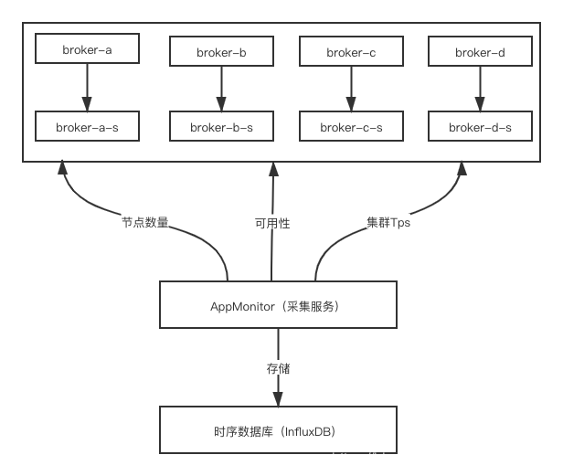
准备工作
\1. 定时任务调度，以 10 秒钟为例：
ScheduledExecutorService executorService = Executors.newScheduledThreadPool(1, new ThreadFactory() {
@Override
public Thread newThread(Runnable r) {
return new Thread(r, "rocketMQ metrics collector");
}
});
executorService.scheduleAtFixedRate(new Runnable() {
@Override
public void run() {
// 指标收集方法 1 collectClusterNum()
// 指标收集方法 2 collectMetric2()
}
}, 60, 10, TimeUnit.SECONDS);
\2. 获取 Broker TPS 时用到了 MQAdmin，下面是初始化代码：
public DefaultMQAdminExt getMqAdmin() throws MQClientException {
DefaultMQAdminExt defaultMQAdminExt = new DefaultMQAdminExt();
defaultMQAdminExt.setNamesrvAddr("x.x.x.x:9876");
defaultMQAdminExt.setInstanceName(Long.toString(System.currentTimeMillis()));
defaultMQAdminExt.setVipChannelEnabled(false);
defaultMQAdminExt.start();
return defaultMQAdminExt;
}
\3. 发送 Producer 启动代码：
public DefaultMQProducer getMqProducer(){
DefaultMQProducer producer = new DefaultMQProducer("rt_collect_producer");
producer.setNamesrvAddr("");
producer.setVipChannelEnabled(false);
producer.setClientIP("mq producer-client-id-1");
try {
producer.start();
} catch (MQClientException e) {
e.getErrorMessage();
}
return producer;
}
收集集群节点数量
下面代码中统计了集群中的主节点和从节点总数量，定时调用该收集方法，并将其记录在时序数据中。
public void collectClusterNum() throws Exception {
DefaultMQAdminExt mqAdmin = getMqAdmin();
ClusterInfo clusterInfo = mqAdmin.examineBrokerClusterInfo();
int brokers = 0;
Set<Map.Entry<String, BrokerData>> entries = clusterInfo.getBrokerAddrTable().entrySet();
for (Map.Entry<String, BrokerData> entry : entries) {
brokers += entry.getValue().getBrokerAddrs().entrySet().size();
}
// 将 brokers 存储到时序数据库即可
System.out.println(brokers);
}
收集节点可用性
集群中的每个 Broker 的可用性，可以通过定时发送信息到该 Broker 特定的主题来实现。例如：集群中有 broker-a、broker-b、broker-c、broker-d。那每个 broker-a 上有一个名字为“broker-a”的主题，其他节点同理。通过定时向该主题发送心跳来实现可用性。
下面两个 ClusterRtTime 和 RtTime 分别为集群和 Broker 的收集的数据填充类。
public class ClusterRtTime {
private String cluster;
private List<RtTime> times;
private long timestamp = System.currentTimeMillis();
public long getTimestamp() {
return timestamp;
}
public void setTimestamp(long timestamp) {
this.timestamp = timestamp;
}
public String getCluster() {
return cluster;
}
public void setCluster(String cluster) {
this.cluster = cluster;
}
public List<RtTime> getTimes() {
return times;
}
public void setTimes(List<RtTime> times) {
this.times = times;
}
}
public class RtTime {
private long rt;
private String brokerName;
private String status;
private int result;
public int getResult() {
return result;
}
public void setResult(int result) {
this.result = result;
}
public String getStatus() {
return status;
}
public void setStatus(String status) {
this.status = status;
}
public long getRt() {
return rt;
}
public void setRt(long rt) {
this.rt = rt;
}
public String getBrokerName() {
return brokerName;
}
public void setBrokerName(String brokerName) {
this.brokerName = brokerName;
}
}
以下方法为同步发送心跳检测实现，以 broker-a 为例，time.setRt 表示每次发送心跳的耗时，time.setResult 表示每次发送心跳的结果，成功还是失败。
public void collectRtTime() throws Exception {
DefaultMQAdminExt mqAdmin = getMqAdmin();
ClusterRtTime clusterRtTime = new ClusterRtTime();
ClusterInfo clusterInfo = null;
try {
clusterInfo = mqAdmin.examineBrokerClusterInfo();
} catch (Exception e) {
e.printStackTrace();
return;
}
clusterRtTime.setCluster("demo_mq");
List<RtTime> times = Lists.newArrayList();
for (Map.Entry<String, BrokerData> stringBrokerDataEntry : clusterInfo.getBrokerAddrTable().entrySet()) {
BrokerData brokerData = stringBrokerDataEntry.getValue();
String brokerName = brokerData.getBrokerName();
long begin = System.currentTimeMillis();
SendResult sendResult = null;
RtTime time = new RtTime();
time.setBrokerName(brokerName);
try {
byte[] TEST_MSG = "helloworld".getBytes();
sendResult = getMqProducer().send(new Message(brokerName, TEST_MSG));
long end = System.currentTimeMillis() - begin;
SendStatus sendStatus = sendResult.getSendStatus();
// 记录发送耗时情况
time.setRt(end);
// 记录发送是否成功情况
time.setStatus(sendStatus.name());
time.setResult(sendStatus.ordinal());
} catch (Exception e) {
time.setRt(-1);
time.setStatus("FAILED");
time.setResult(5);
}
times.add(time);
}
clusterRtTime.setTimes(times);
// 将 clusterRtTime 信息存储到时序数据库即可
}
收集集群 TPS
结合定时任务调度下面的收集集群 TPS 方法，将其存储到时序数据库中。如果 10 秒收集一次，那么 1 分钟可以收集 6 次集群 TPS。
public void collectClusterTps() throws Exception {
DefaultMQAdminExt mqAdmin = getMqAdmin();
ClusterInfo clusterInfo = mqAdmin.examineBrokerClusterInfo();
double totalTps = 0d;
for (Map.Entry<String, BrokerData> stringBrokerDataEntry : clusterInfo.getBrokerAddrTable().entrySet()) {
BrokerData brokerData = stringBrokerDataEntry.getValue();
// 选择 Master 节点
String brokerAddr = brokerData.getBrokerAddrs().get(MixAll.MASTER_ID);
if (StringUtils.isBlank(brokerAddr)) continue;
KVTable runtimeStatsTable = mqAdmin.fetchBrokerRuntimeStats(brokerAddr);
HashMap<String, String> runtimeStatus = runtimeStatsTable.getTable();
Double putTps = Math.ceil(Double.valueOf(runtimeStatus.get("putTps").split(" ")[0]));
totalTps = totalTps + putTps;
}
// 将 totalTps 存储到时序数据库即可
System.out.println(totalTps);
}
计算集群 TPS 的变化率
集群 TPS 的变化情况，我们可以通过时序数据库函数来实现。假设我们上面采集到的集群 TPS 写入到 InfluxDB 的 cluster_number_info 表中。下面语句表示 5 分钟内集群 Tps 的变化率。示例中 5 分钟内集群 TPS 变化了 12%，如果变化超过 50%，甚至 200%、300%，是需要我们去关注的，以免瞬时流量过高使集群发生流控，对业务造成超时影响。
写入 TPS 的变化率 = (最大值 - 最小值)/中位数
> select SPREAD(value)/MEDIAN(value) from cluster_number_info where clusterName='demo_mq' and "name"='totalTps' and "time" > now()-5m ;
name: cluster_number_info
time spread_median
---- -------------
1572941783075915928 0.12213740458015267
20 RocketMQ 集群监控（二）
前言
主题和消费组通常使用方比较关心的资源，发送方关注主题，消费方关注消费组。管理员更侧重关注集群的健康状况。本文介绍主题和消费组的监控实战，包括监控项的设计、及每个监控项的代码实现。
监控项设计
我们先把主题监控和消费监控统称为资源监控，下图分列了主题和消费组包含的监控项。

主题监控
从发送速度、发送耗时、消息大小、日消息量方面整理主题监控项，下面分别介绍这些监控项的重要性。
发送速度
通过实时采集主题的发送速度，来掌握主题的流量情况。例如：有些业务场景不允许主题的发送速度掉为 0，那通过实时采集发送速度指标，为将来告警做准备。
发送变化率
发送变化率是指，特定时间内主题的发送速度变化了多少。例如：5 分钟内发送速率陡增了 2 倍。通常用于两方面，一个是保护集群，某个 Topic 过高的瞬时流量可能对集群安全造成影响。例如：一个发送速率为 5000 的主题，在 3 分钟内陡增了 5 倍，到了 25000 的高度，这种流量对集群存在安全隐患。另一个是使用角度检测业务是否正常，比如一个发送速率为 8000 的主题，在 3 分钟内掉为 80，类似这种断崖式下跌是否是业务正常逻辑，可以对业务健康情况反向检测。
发送耗时
通过采集发送消息的耗时分布情况，了解客户端的发送情况，耗时分布可以为下面区间，单位毫秒。[0, 1), [1, 5), [5, 10), [10, 50), [50, 100), [100, 500), [500, 1000), [1000, ∞)。例如：如果发送的消息耗时分布集中在大于 500ms~1000ms，那需要介入分析原因为何耗时如此长。
消息大小
通过采集消息大小的分布情况，了解那些客户端存在大消息。发送速率过高的大消息同样存在集群的安全隐患。比如那些主题发送的消息大于 5K，为日后需要专项治理或者实时告警提供数据支撑。消息大小分布区间如下参考，单位 KB。[0, 1), [1, 5), [5, 10), [10, 50), [50, 100), [500, 1000), [1000, ∞)。
日消息量
日消息量是指通过每天采集的发送的消息数量，形成时间曲线。可以分析一周、一月的消息总量变化情况。
消费监控
消费速度
通过实时采集消费速度指标，掌握消费组健康情况。同样有些场景对消费速度大小比较关心。通过采集实时消息消费速率情况，为告警提供数据支撑。
消费积压
消费积压是指某一时刻还有多少消息没有消费，消费积压 = 发送消息总量 - 消费消息总量。消息积压是消费组监控指标中最重要的一项，有一些准实时场景对积压有着严苛的要求，那对消费积压指标的采集和告警就尤为重要。
消费耗时
消费耗时是从客户端采集的指标，通过采集客户端消费耗时分布情况检测客户端消费情况。通过消费耗时可以观察到客户端是否有阻塞情况、以及协助使用同学排查定位问题。
监控开发实战
在上面梳理的主题监控和消费监控的指标中，有些指标需要从 RocketMQ 集群采集，例如：发送速度、日消息量、消费速度、消费积压。有些指标需要客户端上报，例如：发送耗时、发送消息体大小、消费耗时。

实战部分说明
下面代码中用到的定时任务调度、getMqAdmin 等工具类见 《RocketMQ 集群监控（一）》，关于调度采集频率，可以选择 1 秒或者 5 秒均可。
上图中的“指标采集相关主题”，考虑到有的公司可能几千上万的应用，可以采用 Kafka 来做。
下面实战中主要关注 RocketMQ 相关指标如何收集，上报到 Kafka 的指标主题以及存储时序数据库代码没有给出，这部分逻辑一个是发送，一个插入数据库，并不复杂，自行完善即可。
实践中建议提供 SDK 来封装发送和消费，同时将监控指标的采集也封装进去，这样对用户来说是无感知的。
收集主题发送速度
先获取了集群中的主题列表，然后统计每个主题在每个 Master 中的速率。最后将统计的结果上报到统计主题或者直接写入时序数据库。
另外，统计时将 MQ 内置一些主题过滤掉无需统计。例如：重试队列（%RETRY%）、死信队列（%DLQ%）。
public void collectTopicTps() throws Exception {
DefaultMQAdminExt mqAdmin = getMqAdmin();
Set<String> topicList = mqAdmin.fetchTopicsByCLuster("demo_mq").getTopicList();
ClusterInfo clusterInfo = mqAdmin.examineBrokerClusterInfo();
Map<String/*主题名称*/, Double/*Tps*/> topicTps = Maps.newHashMap();
// 统计主题在每个 Master 上的速度
for (Map.Entry<String, BrokerData> stringBrokerDataEntry : clusterInfo.getBrokerAddrTable().entrySet()) {
BrokerData brokerData = stringBrokerDataEntry.getValue();
// 获取 Master 节点
String brokerAddr = brokerData.getBrokerAddrs().get(MixAll.MASTER_ID);
for (String topic : topicList) {
try {
//注意此处将%DLQ%、%RETRY%等 MQ 内置主题过滤掉
if(topic.contains("%DLQ%")|| topic.contains("%RETRY%")){
continue;
}
BrokerStatsData topicPutNums = mqAdmin.viewBrokerStatsData(brokerAddr, BrokerStatsManager.TOPIC_PUT_NUMS, topic);
double topicTpsOnBroker = topicPutNums.getStatsMinute().getTps();
if(topicTps.containsKey(topic)){
topicTps.put(topic, topicTps.get(topic) + topicTpsOnBroker);
}else{
topicTps.put(topic,topicTpsOnBroker);
}
} catch (MQClientException ex) {
ex.printStackTrace();
}
}
}
// 将采集到的主题速度，topicTps 上报到主题或者直接写入时序数据库即可
}
收集主题日消息量
日消息量的采集方式与主题发送速度的采集方式类似。由于是日消息量，采集频率可以一天执行一次。
public void collectTopicMsgNums() throws Exception {
DefaultMQAdminExt mqAdmin = getMqAdmin();
Set<String> topicList = mqAdmin.fetchTopicsByCLuster("demo_mq").getTopicList();
ClusterInfo clusterInfo = mqAdmin.examineBrokerClusterInfo();
Map<String/*主题名称*/, Long/*日消息量*/> topicMsgNum = Maps.newHashMap();
// 统计主题在每个 Master 上日消息量
for (Map.Entry<String, BrokerData> stringBrokerDataEntry : clusterInfo.getBrokerAddrTable().entrySet()) {
BrokerData brokerData = stringBrokerDataEntry.getValue();
// 获取 Master 节点
String brokerAddr = brokerData.getBrokerAddrs().get(MixAll.MASTER_ID);
for (String topic : topicList) {
try {
//注意此处将%DLQ%、%RETRY%等 MQ 内置主题过滤掉
if(topic.contains("%DLQ%")|| topic.contains("%RETRY%")){
continue;
}
BrokerStatsData topicPutNums = mqAdmin.viewBrokerStatsData(brokerAddr, BrokerStatsManager.TOPIC_PUT_NUMS, topic);
long topicMsgNumOnBroker = topicPutNums.getStatsDay().getSum();
if(topicMsgNum.containsKey(topic)){
topicMsgNum.put(topic, topicMsgNum.get(topic) + topicMsgNumOnBroker);
}else{
topicMsgNum.put(topic,topicMsgNumOnBroker);
}
} catch (MQClientException ex) {
// ex.printStackTrace();
}
}
}
// 将采集到的主题日消息量，topicMsgNum 上报到指标主题或者直接写入时序数据库即可
}
收集消费速度
下面代码循环集群中每个 Broker，汇总每个 Broker 中每个 messageQueue 的消费速度。代码 consumerTps 即包含了消费组与其对应的消费速度。
public void collectConsumerTps() throws Exception {
DefaultMQAdminExt mqAdmin = getMqAdmin();
ClusterInfo clusterInfo = mqAdmin.examineBrokerClusterInfo();
Map<String/*消费者名称*/, Double/*消费 Tps*/> consumerTps = Maps.newHashMap();
// 统计主题在每个 Master 上的消费速率
for (Map.Entry<String, BrokerData> stringBrokerDataEntry : clusterInfo.getBrokerAddrTable().entrySet()) {
BrokerData brokerData = stringBrokerDataEntry.getValue();
// 获取 Master 节点
String brokerAddr = brokerData.getBrokerAddrs().get(MixAll.MASTER_ID);
ConsumeStatsList consumeStatsList = mqAdmin.fetchConsumeStatsInBroker(brokerAddr, false, 5000);
for (Map<String, List<ConsumeStats>> consumerStats : consumeStatsList.getConsumeStatsList()) {
for (Map.Entry<String, List<ConsumeStats>> stringListEntry : consumerStats.entrySet()) {
String consumer = stringListEntry.getKey();
List<ConsumeStats> consumeStats = stringListEntry.getValue();
Double tps = 0d;
for (ConsumeStats consumeStat : consumeStats) {
tps += consumeStat.getConsumeTps();
}
if(consumerTps.containsKey(consumer)){
consumerTps.put(consumer, consumerTps.get(consumer) + tps);
}else{
consumerTps.put(consumer,tps);
}
}
}
}
// 将采集到的消费速率，consumerTps 上报到指标主题或者直接写入时序数据库即可
}
收集消费积压
消费组的积压统计，需要计算各个消费队列的积压，并将积压求和汇总。
public void collectConsumerLag() throws Exception {
DefaultMQAdminExt mqAdmin = getMqAdmin();
ClusterInfo clusterInfo = mqAdmin.examineBrokerClusterInfo();
Map<String/*消费者名称*/, Long/*消费积压*/> consumerLags = Maps.newHashMap();
// 统计主题在每个 Master 上的消费积压
for (Map.Entry<String, BrokerData> stringBrokerDataEntry : clusterInfo.getBrokerAddrTable().entrySet()) {
BrokerData brokerData = stringBrokerDataEntry.getValue();
// 获取 Master 节点
String brokerAddr = brokerData.getBrokerAddrs().get(MixAll.MASTER_ID);
ConsumeStatsList consumeStatsList = mqAdmin.fetchConsumeStatsInBroker(brokerAddr, false, 5000);
for (Map<String, List<ConsumeStats>> consumerStats : consumeStatsList.getConsumeStatsList()) {
for (Map.Entry<String, List<ConsumeStats>> stringListEntry : consumerStats.entrySet()) {
String consumer = stringListEntry.getKey();
List<ConsumeStats> consumeStats = stringListEntry.getValue();
Long lag = 0L;
for (ConsumeStats consumeStat : consumeStats) {
lag += computeTotalDiff(consumeStat.getOffsetTable());
}
if(consumerLags.containsKey(consumer)){
consumerLags.put(consumer, consumerLags.get(consumer) + lag);
}else{
consumerLags.put(consumer,lag);
}
}
}
}
// 将采集到的消费积压，consumerLags 上报到指标主题或者直接写入时序数据库即可
}
public long computeTotalDiff(HashMap<MessageQueue, OffsetWrapper> offsetTable) {
long diffTotal = 0L;
long diff = 0l;
for(Iterator it = offsetTable.entrySet().iterator(); it.hasNext(); diffTotal += diff) {
Map.Entry<MessageQueue, OffsetWrapper> next = (Map.Entry)it.next();
long consumerOffset = next.getValue().getConsumerOffset();
if(consumerOffset > 0){
diff = ((OffsetWrapper)next.getValue()).getBrokerOffset() - consumerOffset;
}
}
return diffTotal;
}
收集发送耗时及消息大小
DistributionMetric 提供了两个方法，分别用于统计消息大小和发送耗时。耗时分布区间为：[0, 1), [1, 5), [5, 10), [10, 50), [50, 100), [100, 500), [500, 1000), [1000, ∞)，单位毫秒。消息大小分布区为：[0, 1), [1, 5), [5, 10), [10, 50), [50, 100), [500, 1000), [1000, ∞)，单位 KB。
public class DistributionMetric {
private String name;
private LongAdder lessThan1Ms = new LongAdder();
private LongAdder lessThan5Ms = new LongAdder();
private LongAdder lessThan10Ms = new LongAdder();
private LongAdder lessThan50Ms = new LongAdder();
private LongAdder lessThan100Ms = new LongAdder();
private LongAdder lessThan500Ms = new LongAdder();
private LongAdder lessThan1000Ms = new LongAdder();
private LongAdder moreThan1000Ms = new LongAdder();
private LongAdder lessThan1KB = new LongAdder();
private LongAdder lessThan5KB = new LongAdder();
private LongAdder lessThan10KB = new LongAdder();
private LongAdder lessThan50KB = new LongAdder();
private LongAdder lessThan100KB = new LongAdder();
private LongAdder lessThan500KB = new LongAdder();
private LongAdder lessThan1000KB = new LongAdder();
private LongAdder moreThan1000KB = new LongAdder();
public static DistributionMetric newDistributionMetric(String name) {
DistributionMetric distributionMetric = new DistributionMetric();
distributionMetric.setName(name);
return distributionMetric;
}
public void markTime(long costInMs) {
if (costInMs < 1) {
lessThan1Ms.increment();
} else if (costInMs < 5) {
lessThan5Ms.increment();
} else if (costInMs < 10) {
lessThan10Ms.increment();
} else if (costInMs < 50) {
lessThan50Ms.increment();
} else if (costInMs < 100) {
lessThan100Ms.increment();
} else if (costInMs < 500) {
lessThan500Ms.increment();
} else if (costInMs < 1000) {
lessThan1000Ms.increment();
} else {
moreThan1000Ms.increment();
}
}
public void markSize(long costInMs) {
if (costInMs < 1024) {
lessThan1KB.increment();
} else if (costInMs < 5 * 1024) {
lessThan5KB.increment();
} else if (costInMs < 10 * 1024) {
lessThan10KB.increment();
} else if (costInMs < 50 * 1024) {
lessThan50KB.increment();
} else if (costInMs < 100 * 1024) {
lessThan100KB.increment();
} else if (costInMs < 500 * 1024) {
lessThan500KB.increment();
} else if (costInMs < 1024 * 1024) {
lessThan1000KB.increment();
} else {
moreThan1000KB.increment();
}
}
public String getName() {
return name;
}
public void setName(String name) {
this.name = name;
}
}
public class MetricInfo {
private String name;
private long lessThan1Ms;
private long lessThan5Ms;
private long lessThan10Ms;
private long lessThan50Ms;
private long lessThan100Ms;
private long lessThan500Ms;
private long lessThan1000Ms;
private long moreThan1000Ms;
private long lessThan1KB;
private long lessThan5KB;
private long lessThan10KB;
private long lessThan50KB;
private long lessThan100KB;
private long lessThan500KB;
private long lessThan1000KB;
private long moreThan1000KB;
public String getName() {
return name;
}
public void setName(String name) {
this.name = name;
}
public long getLessThan1Ms() {
return lessThan1Ms;
}
public void setLessThan1Ms(long lessThan1Ms) {
this.lessThan1Ms = lessThan1Ms;
}
public long getLessThan5Ms() {
return lessThan5Ms;
}
public void setLessThan5Ms(long lessThan5Ms) {
this.lessThan5Ms = lessThan5Ms;
}
public long getLessThan10Ms() {
return lessThan10Ms;
}
public void setLessThan10Ms(long lessThan10Ms) {
this.lessThan10Ms = lessThan10Ms;
}
public long getLessThan50Ms() {
return lessThan50Ms;
}
public void setLessThan50Ms(long lessThan50Ms) {
this.lessThan50Ms = lessThan50Ms;
}
public long getLessThan100Ms() {
return lessThan100Ms;
}
public void setLessThan100Ms(long lessThan100Ms) {
this.lessThan100Ms = lessThan100Ms;
}
public long getLessThan500Ms() {
return lessThan500Ms;
}
public void setLessThan500Ms(long lessThan500Ms) {
this.lessThan500Ms = lessThan500Ms;
}
public long getLessThan1000Ms() {
return lessThan1000Ms;
}
public void setLessThan1000Ms(long lessThan1000Ms) {
this.lessThan1000Ms = lessThan1000Ms;
}
public long getMoreThan1000Ms() {
return moreThan1000Ms;
}
public void setMoreThan1000Ms(long moreThan1000Ms) {
this.moreThan1000Ms = moreThan1000Ms;
}
public long getLessThan1KB() {
return lessThan1KB;
}
public void setLessThan1KB(long lessThan1KB) {
this.lessThan1KB = lessThan1KB;
}
public long getLessThan5KB() {
return lessThan5KB;
}
public void setLessThan5KB(long lessThan5KB) {
this.lessThan5KB = lessThan5KB;
}
public long getLessThan10KB() {
return lessThan10KB;
}
public void setLessThan10KB(long lessThan10KB) {
this.lessThan10KB = lessThan10KB;
}
public long getLessThan50KB() {
return lessThan50KB;
}
public void setLessThan50KB(long lessThan50KB) {
this.lessThan50KB = lessThan50KB;
}
public long getLessThan100KB() {
return lessThan100KB;
}
public void setLessThan100KB(long lessThan100KB) {
this.lessThan100KB = lessThan100KB;
}
public long getLessThan500KB() {
return lessThan500KB;
}
public void setLessThan500KB(long lessThan500KB) {
this.lessThan500KB = lessThan500KB;
}
public long getLessThan1000KB() {
return lessThan1000KB;
}
public void setLessThan1000KB(long lessThan1000KB) {
this.lessThan1000KB = lessThan1000KB;
}
public long getMoreThan1000KB() {
return moreThan1000KB;
}
public void setMoreThan1000KB(long moreThan1000KB) {
this.moreThan1000KB = moreThan1000KB;
}
}
ClientMetricCollect 类模拟发送时对消息发送的耗时与消息大小统计。通过定时任务调度 recordMetricInfo() 方法，将采集到数据上报到特定主题并存入时序数据库。即完成了发送耗时及消息大小的采集。
public class ClientMetricCollect {
public Map<String, DefaultMQProducer> producerMap = Maps.newHashMap();
private DistributionMetric distributionMetric;
public DefaultMQProducer getTopicProducer(String topic) throws MQClientException {
if (!producerMap.containsKey(topic)){
DefaultMQProducer producer = new DefaultMQProducer("ProducerGroup".concat("_").concat(topic));
producer.setNamesrvAddr("dev-mq3.ttbike.com.cn:9876");
producer.setVipChannelEnabled(false);
producer.setClientIP("mq producer-client-id-1");
try {
producer.start();
this.distributionMetric = DistributionMetric.newDistributionMetric(topic);
producerMap.put(topic,producer);
} catch (MQClientException e) {
throw e;
}
}
return producerMap.get(topic);
}
public void send( Message message) throws Exception {
long begin = System.currentTimeMillis();
SendResult sendResult = null;
sendResult = getTopicProducer(message.getTopic()).send(message);
SendStatus sendStatus = sendResult.getSendStatus();
if (sendStatus.equals(SendStatus.SEND_OK)) {
long duration = System.currentTimeMillis() - begin;
distributionMetric.markTime(duration);
distributionMetric.markSize(message.getBody().length);
}
}
public void recordMetricInfo(){
MetricInfo metricInfo = new MetricInfo();
metricInfo.setName(distributionMetric.getName());
metricInfo.setLessThan1Ms(distributionMetric.getLessThan1Ms().longValue());
metricInfo.setLessThan5Ms(distributionMetric.getLessThan5Ms().longValue());
metricInfo.setLessThan10Ms(distributionMetric.getLessThan10Ms().longValue());
metricInfo.setLessThan50Ms(distributionMetric.getLessThan50Ms().longValue());
metricInfo.setLessThan100Ms(distributionMetric.getLessThan100Ms().longValue());
metricInfo.setLessThan500Ms(distributionMetric.getLessThan500Ms().longValue());
metricInfo.setLessThan1000Ms(distributionMetric.getLessThan1000Ms().longValue());
metricInfo.setMoreThan1000Ms(distributionMetric.getMoreThan1000Ms().longValue());
metricInfo.setLessThan1KB(distributionMetric.getLessThan1KB().longValue());
metricInfo.setLessThan5KB(distributionMetric.getLessThan5KB().longValue());
metricInfo.setLessThan10KB(distributionMetric.getLessThan10KB().longValue());
metricInfo.setLessThan50KB(distributionMetric.getLessThan50KB().longValue());
metricInfo.setLessThan100KB(distributionMetric.getLessThan100KB().longValue());
metricInfo.setLessThan500KB(distributionMetric.getLessThan500KB().longValue());
metricInfo.setLessThan1000KB(distributionMetric.getLessThan1000KB().longValue());
metricInfo.setMoreThan1000KB(distributionMetric.getMoreThan1000KB().longValue());
// 将采集到的发送耗时与消息大小分布，metricInfo 上报到主题或者直接写入时序数据库即可
// System.out.println(JSON.toJSONString(metricInfo));
}
@Test
public void test() throws Exception {
for(int i=0; i<100; i++){
byte[] TEST_MSG = "helloworld".getBytes();
Message message = new Message("melon_online_test", TEST_MSG);
send(message);
}
}
}
上报消费耗时
接着使用上面的公共类 DistributionMetric 的 markTime 来记录耗时情况，可以度量业务处理消息的耗时分布。耗时分布区间为：[0, 1), [1, 5), [5, 10), [10, 50), [50, 100), [100, 500), [500, 1000), [1000, ∞)，单位毫秒。
public class ConsumerMetric {
private DistributionMetric distributionMetric;
public static void main(String[] args) throws Exception {
String consumerName = "demo_consumer";
ConsumerMetric consumerMetric = new ConsumerMetric();
consumerMetric.startConsume(consumerName);
}
public void startConsume(String consumerName) throws Exception{
this.distributionMetric = DistributionMetric.newDistributionMetric(consumerName);
DefaultMQPushConsumer consumer = new DefaultMQPushConsumer(consumerName);
consumer.setNamesrvAddr("dev-mq3.ttbike.com.cn:9876");
consumer.subscribe("melon_online_test", "*");
consumer.setConsumeFromWhere(ConsumeFromWhere.CONSUME_FROM_FIRST_OFFSET);
//wrong time format 2017_0422_221800
consumer.setConsumeTimestamp("20181109221800");
consumer.registerMessageListener(new MessageListenerConcurrently() {
@Override
public ConsumeConcurrentlyStatus consumeMessage(List<MessageExt> msgs, ConsumeConcurrentlyContext context) {
long begin = System.currentTimeMillis();
// 处理业务逻辑
System.out.printf("%s Receive New Messages: %s %n", Thread.currentThread().getName(), msgs);
// 统计业务逻辑的消费耗时情况
distributionMetric.markTime(System.currentTimeMillis() - begin);
return ConsumeConcurrentlyStatus.CONSUME_SUCCESS;
}
});
consumer.start();
System.out.printf("Consumer Started.%n");
}
public void recordMetricInfo(){
MetricInfo metricInfo = new MetricInfo();
metricInfo.setName(distributionMetric.getName());
metricInfo.setLessThan1Ms(distributionMetric.getLessThan1Ms().longValue());
metricInfo.setLessThan5Ms(distributionMetric.getLessThan5Ms().longValue());
metricInfo.setLessThan10Ms(distributionMetric.getLessThan10Ms().longValue());
metricInfo.setLessThan50Ms(distributionMetric.getLessThan50Ms().longValue());
metricInfo.setLessThan100Ms(distributionMetric.getLessThan100Ms().longValue());
metricInfo.setLessThan500Ms(distributionMetric.getLessThan500Ms().longValue());
metricInfo.setLessThan1000Ms(distributionMetric.getLessThan1000Ms().longValue());
metricInfo.setMoreThan1000Ms(distributionMetric.getMoreThan1000Ms().longValue());
// 将采集到的发送耗时与消息大小分布，metricInfo 上报到主题或者直接写入时序数据库即可
// System.out.println(JSON.toJSONString(metricInfo));
}
}
发送变化率计算
发送变化率的计算依托时序数据库的函数，发送 Tps 变化率 =(最大值 - 最小值)/中位数。下图示例中，5 分钟的 TPS 变化率为 3%。可以定时调度计算该指标，超过阈值（例如：100%）可以发送告警信息。
> select SPREAD(value)/MEDIAN(value) from mq_topic_info where clusterName='demo_mq' and topicName='max_bonus_send_topic' and "name"='tps' and "time" > now()-5m ;
name: mq_topic_info
time spread_median
---- -------------
1598796048448226482 0.03338460146566541
21 RocketMQ 集群告警
前言
对集群健康状况、使用主题、消费组资源的巡检，发现达到阈值则发送告警信息给管理员或者资源申请者。监控是告警的基础，告警的巡检基于前面两篇文章中监控采集到的数据。
告警的重要性不必过多地赘述，RocketMQ 集群往往承载着公司核心业务流转。如果集群不可用往往影响是全公司的业务，事故责任是公司最高级别的。
本文从告警项的设计、告警流程、告警实战给出指导建议，在实践中以此为思路扩展完善，实现自己公司的定制化告警。
告警项设计
下图分别从主题、消费组、集群维度罗列了比较重要的告警项以及触发条件包括哪些方面。
触发条件
- 触发阈值：超过某个特定的数值，例如：消费积压超过 10 万。
- 时间间隔：间隔多久检测，例如：5 分钟内消费积压超过 10 万。
- 触发次数：在时间间隔内满足阈值的次数，例如：5 分钟内消费积压超过 10 万，触发了 3 次。
- 告警时间段：收到告警通知的时间范围，例如：在 9:00-22:00 之间收到告警信息。
主题告警
发送速度：当发送速度满足触发条件设定的阈值时发送告警信息。
例如：5 分钟内当发送速度小于阈值 10，触发 1 次，在 00:00-23:59 触发告警信息。
消费告警
消费速度：当消费速度满足触发条件设定的阈值时发送告警信息。
例如：5 分钟内当消费速度小于阈值 5000，触发 1 次，在 00:00-23:59 触发告警信息。
消费积压：当消费积压值满足触发条件设定的阈值时发送告警信息。
例如：5 分钟内当消费积压大于阈值 100000，触发 1 次，在 00:00-23:59 触发告警信息。
集群告警
集群节点数量：当集群节点数量满足触发条件设定的阈值时触发告警。
例如：5 分钟内当集群节点数量小于阈值 4，触发 1 次，在 00:00-23:59 触发告警信息。
集群响应时间：当集群节点发送的 RT 满足触发条件的阈值时触发告警。
例如：5 分钟内当节点发送的响应时间大于 1 秒，触发 1 次，在 00:00-23:59 触发告警信息。
集群写入 TPS：当集群写入 TPS 满足触发条件设定的阈值时触发告警。
例如：5 分钟内当集群写入 TPS 大于 40000，触发 1 次，在 00:00-23:59 触发告警信息。
集群节点可用性：当集群节点心跳检测结果满足触发条件设定的阈值时触发告警。
例如：5 分钟内当节点心跳检测结果大于 0（表示失败），触发 1 次，在 00:00-23:59 触发告警信息。
集群写入变化率：当集群写入 TPS 变化率满足触发条件设定的阈值时触发告警。
例如：5 分钟内当集群写入变化率大于 100%，触发 1 次，在 00:00-23:59 触发告警信息。
告警开发实战
告警流程
定时任务巡检：可以使用公司的调度平台或者自己写调度线程 ScheduledExecutorService，调度的频率可以根据不同的指标分成不同的调度任务，例如：集群告警可以采取秒级探测、对于主题和消费组的告警可以采用分钟级探测。
检索监控数据：数据来自于前面两节中存储的监控数据，例如：存储到了时序数据库 InfluxDB 中。
发送告警信息：此处可以发送到公司的统一告警系统，也可以发送到钉钉、邮箱、短信等。

主题/消费动态 SQL
我们可以通过在界面上配置不同的告警规则生成不同的检索语句，在定时调度时使用生成的语句。

通过类似上面图示中对主题和消费组的选择，动态生成 SQL 语句，例如：当选择以下动态规则参数时，集群名称 demo_cluster、消费组名称 demo_consumer、类型 consumer、指标积压、大于、阈值 1000000、间隔 5 分钟、次数 1 次、告警开始时间 00:00、告警结束时间 23:59 时生成以下语句。
select Count(value) FROM "consumer_monitor_info" WHERE "clusterName" =
22 RocketMQ 集群踩坑记
集群节点进程神秘消失
现象描述
接到告警和运维反馈，一个 RocketMQ 的节点不见了。此类现象在以前从未发生过，消失肯定有原因，开始查找日志，从集群的 broker.log、stats.log、storeerror.log、store.log、watermark.log 到系统的 message 日志没发现错误日志。集群流量出入在正常水位、CPU 使用率、CPU Load、磁盘 IO、内存、带宽等无明显变化。
原因分析
继续查原因，最终通过 history 查看了历史运维操作。发现运维同学在启动 Broker 时没有在后台启动，而是在当前 session 中直接启动了。
sh bin/mqbroker -c conf/broker-a.conf
问题即出现在此命令，当 session 过期时 Broker 节点也就退出了。
解决方法
标准化运维操作，对运维的每次操作进行评审，将标准化的操作实现自动化运维就更好了。
正确启动 Broker 方式：
nohup sh bin/mqbroker -c conf/broker-a.conf &
Master 节点 CPU 莫名飙高
现象描述
RocketMQ 主节点 CPU 频繁飙高后回落，业务发送超时严重，由于两个从节点部署在同一个机器上，从节点还出现了直接挂掉的情况。
主节点 CPU 毛刺截图：
从节点 CPU 毛刺截图：

说明：中间缺失部分为掉线，没有采集到的情况。
系统错误日志一
2020-03-16T17:56:07.505715+08:00 VECS0xxxx kernel: <IRQ> [<ffffffff81143c31>] ? __alloc_pages_nodemask+0x7e1/0x960
2020-03-16T17:56:07.505717+08:00 VECS0xxxx kernel: java: page allocation failure. order:0, mode:0x20
2020-03-16T17:56:07.505719+08:00 VECS0xxxx kernel: Pid: 12845, comm: java Not tainted 2.6.32-754.17.1.el6.x86_64 #1
2020-03-16T17:56:07.505721+08:00 VECS0xxxx kernel: Call Trace:
2020-03-16T17:56:07.505724+08:00 VECS0xxxx kernel: <IRQ> [<ffffffff81143c31>] ? __alloc_pages_nodemask+0x7e1/0x960
2020-03-16T17:56:07.505726+08:00 VECS0xxxx kernel: [<ffffffff8148e700>] ? dev_queue_xmit+0xd0/0x360
2020-03-16T17:56:07.505729+08:00 VECS0xxxx kernel: [<ffffffff814cb3e2>] ? ip_finish_output+0x192/0x380
系统错误日志二
30 2020-03-27T10:35:28.769900+08:00 VECSxxxx kernel: INFO: task AliYunDunUpdate:29054 blocked for more than 120 seconds.
31 2020-03-27T10:35:28.769932+08:00 VECSxxxx kernel: Not tainted 2.6.32-754.17.1.el6.x86_64 #1
32 2020-03-27T10:35:28.771650+08:00 VECS0xxxx kernel: "echo 0 > /proc/sys/kernel/hung_task_timeout_secs" disables this message.
33 2020-03-27T10:35:28.774631+08:00 VECS0xxxx kernel: AliYunDunUpda D ffffffff815592fb 0 29054 1 0x10000080
34 2020-03-27T10:35:28.777500+08:00 VECS0xxxx kernel: ffff8803ef75baa0 0000000000000082 ffff8803ef75ba68 ffff8803ef75ba64
说明：系统日志显示错误“page allocation failure”和“blocked for more than 120 second”错误，日志目录 /var/log/messages。
GC 日志
2020-03-16T17:49:13.785+0800: 13484510.599: Total time for which application threads were stopped: 0.0072354 seconds, Stopping threads took: 0.0001536 seconds
2020-03-16T18:01:23.149+0800: 13485239.963: [GC pause (G1 Evacuation Pause) (young) 13485239.965: [G1Ergonomics (CSet Construction) start choosing CSet, _pending_cards: 7738, predicted base time: 5.74 ms, remaining time: 194.26 ms, target pause time: 200.00 ms]
13485239.965: [G1Ergonomics (CSet Construction) add young regions to CSet, eden: 255 regions, survivors: 1 regions, predicted young region time: 0.52 ms]
13485239.965: [G1Ergonomics (CSet Construction) finish choosing CSet, eden: 255 regions, survivors: 1 regions, old: 0 regions, predicted pause time: 6.26 ms, target pause time: 200.00 ms]
, 0.0090963 secs]
[Parallel Time: 2.3 ms, GC Workers: 23]
[GC Worker Start (ms): Min: 13485239965.1, Avg: 13485239965.4, Max: 13485239965.7, Diff: 0.6]
[Ext Root Scanning (ms): Min: 0.0, Avg: 0.3, Max: 0.6, Diff: 0.6, Sum: 8.0]
[Update RS (ms): Min: 0.1, Avg: 0.3, Max: 0.6, Diff: 0.5, Sum: 7.8]
[Processed Buffers: Min: 2, Avg: 5.7, Max: 11, Diff: 9, Sum: 131]
[Scan RS (ms): Min: 0.0, Avg: 0.0, Max: 0.1, Diff: 0.1, Sum: 0.8]
[Code Root Scanning (ms): Min: 0.0, Avg: 0.0, Max: 0.0, Diff: 0.0, Sum: 0.3]
[Object Copy (ms): Min: 0.2, Avg: 0.5, Max: 0.7, Diff: 0.4, Sum: 11.7]
[Termination (ms): Min: 0.0, Avg: 0.0, Max: 0.0, Diff: 0.0, Sum: 0.3]
[Termination Attempts: Min: 1, Avg: 1.0, Max: 1, Diff: 0, Sum: 23]
[GC Worker Other (ms): Min: 0.0, Avg: 0.2, Max: 0.3, Diff: 0.3, Sum: 3.6]
[GC Worker Total (ms): Min: 1.0, Avg: 1.4, Max: 1.9, Diff: 0.8, Sum: 32.6]
[GC Worker End (ms): Min: 13485239966.7, Avg: 13485239966.9, Max: 13485239967.0, Diff: 0.3]
[Code Root Fixup: 0.0 ms]
[Code Root Purge: 0.0 ms]
[Clear CT: 0.9 ms]
[Other: 5.9 ms]
[Choose CSet: 0.0 ms]
[Ref Proc: 1.9 ms]
[Ref Enq: 0.0 ms]
[Redirty Cards: 1.0 ms]
[Humongous Register: 0.0 ms]
[Humongous Reclaim: 0.0 ms]
[Free CSet: 0.2 ms]
[Eden: 4080.0M(4080.0M)->0.0B(4080.0M) Survivors: 16.0M->16.0M Heap: 4176.5M(8192.0M)->96.5M(8192.0M)]
[Times: user=0.05 sys=0.00, real=0.01 secs]
说明：GC 日志正常。
Broker 错误日志
2020-03-16 17:55:15 ERROR BrokerControllerScheduledThread1 - SyncTopicConfig Exception, x.x.x.x:10911
org.apache.rocketmq.remoting.exception.RemotingTimeoutException: wait response on the channel <x.x.x.x:10909> timeout, 3000(ms)
at org.apache.rocketmq.remoting.netty.NettyRemotingAbstract.invokeSyncImpl(NettyRemotingAbstract.java:427) ~[rocketmq-remoting-4.5.2.jar:4.5.2]
at org.apache.rocketmq.remoting.netty.NettyRemotingClient.invokeSync(NettyRemotingClient.java:375) ~[rocketmq-remoting-4.5.2.jar:4.5.2]
说明：通过查看 RocketMQ 的集群和 GC 日志，只能说明但是网络不可用，造成主从同步问题；并未发现 Broker 自身出问题了。
原因分析
系统使用 CentOS 6，内核版本为 2.6。通过摸排并未发现 broker 和 GC 本身的问题，却发现了系统 message 日志有频繁的“page allocation failure”和“blocked for more than 120 second”错误。所以将目光聚焦在系统层面，通过尝试系统参数设置，例如：min_free_kbytes 和 zone_reclaim_mode，然而并不能消除 CPU 毛刺问题。通过与社区朋友的会诊讨论，内核版本 2.6 操作系统内存回收存在 Bug。我们决定更换集群的操作系统。
解决办法
将集群的 CentOS 6 升级到 CentOS 7，内核版本也从 2.6 升级到了 3.10，升级后 CPU 毛刺问题不在乎出现。升级方式采取的方式先扩容后缩容，先把 CentOS 7 的节点加入集群后，再将 CentOS 6 的节点移除，详见前面实战部分“RocketMQ 集群平滑运维”。
Linux version 3.10.0-1062.4.1.el7.x86_64 (mockbuild@kbuilder.bsys.centos.org) (gcc version 4.8.5 20150623 (Red Hat 4.8.5-39) (GCC) ) #1 SMP Fri Oct 18 17:15:30 UTC 2019
集群频繁抖动发送超时
现象描述
监控和业务同学反馈发送超时，而且频繁出现。具体现象如下图。
预热现象

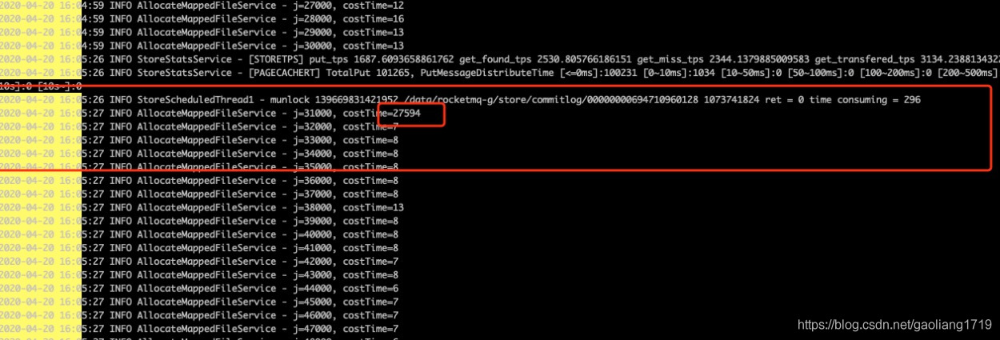
说明：上图分别为开启预热时（warmMapedFileEnable=true）集群的发送 RT 监控、Broker 开启预热设置时的日志。
内存传输现象


说明：上图分别为开启堆外内存传输（transferMsgByHeap=false）时的 CPU 抖动截图、系统内存分配不足截图、Broker 日志截图。
原因分析
上面展现的两种显现均会导致集群 CPU 抖动、客户端发送超时，对业务造成影响。
预热设置：在预热文件时会填充 1 个 G 的假值 0 作为占位符，提前分配物理内存，防止消息写入时发生缺页异常。然而往往伴随着磁盘写入耗时过长、CPU 小幅抖动、业务具体表现为发送耗时过长，超时错误增多。关闭预热配置从集群 TPS 摸高情况来看并未有明显的差异，但是从稳定性角度关闭却很有必要。
堆外内存：transferMsgByHeap 设置为 false 时，通过堆外内存传输数据，相比堆内存传输减少了数据拷贝、零字节拷贝、效率更高。但是可能造成堆外内存分配不够，触发系统内存回收和落盘操作，设置为 true 时运行更加平稳。
解决办法
预热 warmMapedFileEnable 默认为 false，保持默认即可。如果开启了，可以通过热更新关闭。
bin/mqadmin updateBrokerConfig -b x.x.x.x:10911 -n x.x.x.x:9876 -k warmMapedFileEnable -v false
内存传输参数 transferMsgByHeap 默认为 true（即：通过堆内内存传输）保持默认即可。如果关闭了，可以通过热更新开启。
bin/mqadmin updateBrokerConfig -b x.x.x.x:10911 -n x.x.x.x:9876 -k transferMsgByHeap -v true
用了此属性消费性能下降一半
现象描述
配置均采用 8C16G，RocketMQ 的消费线程 20 个，通过测试消费性能在 1.5 万 tps 左右。通过 tcpdump 显示在消费的机器存在频繁的域名解析过程；10.x.x.185 向 DNS 服务器 100.x.x.136.domain 和 10.x.x.138.domain 请求解析。而 10.x.x.185 这台机器又是消息发送者的机器 IP，测试的发送和消费分别部署在两台机器上。
问题：消费时为何会有消息发送方的 IP 呢？而且该 IP 还不断进行域名解析。

原因分析
通过 dump 线程堆栈，如下图：
代码定位：在消费时有通过 MessageExt.bornHost.getBornHostNameString 获取消费这信息。
public class MessageExt extends Message {
private static final long serialVersionUID = 5720810158625748049L;
private int queueId;
private int storeSize;
private long queueOffset;
private int sysFlag;
private long bornTimestamp;
private SocketAddress bornHost;
private long storeTimestamp;
private SocketAddress storeHost;
private String msgId;
private long commitLogOffset;
private int bodyCRC;
private int reconsumeTimes;
private long preparedTransactionOffset;
}
调用 GetBornHostNameString 获取 HostName 时会根据 IP 反查 DNS 服务器：
InetSocketAddress inetSocketAddress = (InetSocketAddress)this.bornHost;
return inetSocketAddress.getAddress().getHostName();
解决办法
消费的时候不要使用 MessageExt.bornHost.getBornHostNameString 即可，去掉该属性，配置 8C16G 的机器消费性能在 3 万 TPS，提升了 1 倍。
23 消息轨迹、ACL 与多副本搭建
消息轨迹
消息轨迹含义
一条消息什么时候由哪台机器产生的、发送的耗时、消息大小、发送状态、存储在哪个 Broker 上、什么时候存储的以及存储在哪台 Broker 上、什么时候消费的、消费状态等信息，这些信息即消息轨迹，用于追踪消息从诞生到被消费的整个生命周期。
这些信息对于业务同学排查定位有着重要的意义，发送和消费往往在不同的业务部门。有了消息轨迹后一条消息有没有发送，发送成功了没，有没有消费一目了然，降低了彼此的沟通成本。
消息轨迹使用
1. Broker 设置
RocketMQ 的默认消息轨迹功能默认是关闭的，可以将 Broker 属性 traceTopicEnable 设置为 true 开启。消息轨迹默认存储在 RMQ_SYS_TRACE_TOPIC 的主题中，可以通过 msgTraceTopicName 修改。
| 属性 | 默认参数 |
|---|---|
| traceTopicEnable | false |
| msgTraceTopicName | RMQ_SYS_TRACE_TOPIC |
2. 发送端使用
发送轨迹 API
public DefaultMQProducer(final String producerGroup, boolean enableMsgTrace, final String customizedTraceTopic){
this(null, producerGroup, null, enableMsgTrace, customizedTraceTopic);
}
说明：enableMsgTrace 是否开启发送轨迹，默认 false；customizedTraceTopic 设置收集消息轨迹的自定义主题，默认为 RMQ_SYS_TRACE_TOPIC。
发送代码示例
public static void main(String[] args) throws MQClientException, InterruptedException {
DefaultMQProducer producer = new DefaultMQProducer("ProducerGroupName",true);
producer.setNamesrvAddr("127.0.0.1:9876");
producer.start();
for (int i = 0; i < 1; i++)
try {
Message msg = new Message("TopicTest",
"TagA",
"OrderID111",
"Hello world".getBytes(RemotingHelper.DEFAULT_CHARSET));
SendResult sendResult = producer.send(msg);
System.out.printf("%s%n", sendResult);
} catch (Exception e) {
e.printStackTrace();
}
producer.shutdown();
}
说明：创建 DefaultMQProducer 时将 enableMsgTrace 设置为 true 开启发送消息轨迹。
3. 消费端使用
消费轨迹 API
public DefaultMQPushConsumer(final String consumerGroup, boolean enableMsgTrace, final String customizedTraceTopic) {
this(null, consumerGroup, null, new AllocateMessageQueueAveragely(), enableMsgTrace, customizedTraceTopic);
}
说明：enableMsgTrace 是否开启消费轨迹，默认 false；customizedTraceTopic 设置收集消息轨迹的自定义主题，默认为 RMQ_SYS_TRACE_TOPIC。
消费代码示例
public static void main(String[] args) throws InterruptedException, MQClientException {
DefaultMQPushConsumer consumer = new DefaultMQPushConsumer("CID_JODIE_1",true);
consumer.setNamesrvAddr("127.0.0.1:9876");
consumer.subscribe("TopicTest", "*");
consumer.setConsumeFromWhere(ConsumeFromWhere.CONSUME_FROM_FIRST_OFFSET);
consumer.setConsumeTimestamp("20181109221800");
consumer.registerMessageListener(new MessageListenerConcurrently() {
@Override
public ConsumeConcurrentlyStatus consumeMessage(List<MessageExt> msgs, ConsumeConcurrentlyContext context) {
System.out.printf("%s Receive New Messages: %s %n", Thread.currentThread().getName(), msgs);
return ConsumeConcurrentlyStatus.CONSUME_SUCCESS;
}
});
consumer.start();
System.out.printf("Consumer Started.%n");
}
说明：创建 DefaultMQPushConsumer 将 enableMsgTrace 设置为 true 开启消费消息轨迹。
4. 消息轨迹效果
通过发送和消费一条消息，在 RocketMQ-Console 中看下消息轨迹的效果截图。
发送消息内容
SendResult [sendStatus=SEND_OK, msgId=A9FE1075810A18B4AAC24A40738B0000, offsetMsgId=A9FE107500002A9F0000000000002147, messageQueue=MessageQueue [topic=TopicTest, brokerName=liangyong, queueId=1], queueOffset=2]
消费消息内容
Receive New Messages: [MessageExt [brokerName=liangyong, queueId=1, storeSize=189, queueOffset=2, sysFlag=0, bornTimestamp=1600135337872, bornHost=/169.254.16.117:65532, storeTimestamp=1600135337883, storeHost=/169.254.16.117:10911, msgId=A9FE107500002A9F0000000000002147, commitLogOffset=8519, bodyCRC=198614610, reconsumeTimes=0, preparedTransactionOffset=0, toString()=Message{topic='TopicTest', flag=0, properties={MIN_OFFSET=0, MAX_OFFSET=3, KEYS=OrderID111, CONSUME_START_TIME=1600135337915, UNIQ_KEY=A9FE1075810A18B4AAC24A40738B0000, WAIT=true, TAGS=TagA}, body=[72, 101, 108, 108, 111, 32, 119, 111, 114, 108, 100], transactionId='null'}]]
消息轨迹展现
在 RocketMQ 控制台，可以通过 message key 或者 message id 检索消息内容，如下图：

点击 MESSAGE TRACE DETAIL 可以查看消息轨迹，如下图：

消息轨迹原理
发送轨迹原理：在消息发送前与发送后收集指标信息，并将指标信息异步发送到轨迹主题。
消费轨迹原理：消费的消息轨迹有两部分，一部分在拉取消息后处理消息前收集指标异步发送都轨迹主题；另一部分处理消息后收集消息指标异步发送到轨迹主题。

轨迹格式说明
消息轨迹类型有三种，Pub 指发送轨迹，SubBefore 指消费前轨迹，SubAfter 指消费后轨迹。
发送轨迹 Pub
| 名称 | 说明 |
|---|---|
| TraceType | Pub 表示发送轨迹 |
| timeStamp | 存储时间 |
| regionId | 机房可用区，默认为 DefaultRegion（目前没有使用） |
| groupName | 生产者组 producerGroup |
| topic | 主题名称 |
| msgId | 消息 ID，由客户端生成 |
| tags | 消息 tag |
| keys | 消息 key |
| storeHost | 消息存储 Broker IP |
| bodyLength | 消息体大小 |
| costTime | 发送消息耗时 |
| msgType | 消息类型：普通消息（Normal_Msg）、事物半消息（Trans_Msg_Half）、 事物提交消息（Trans_msg_Commit）、延迟消息（Delay_Msg） |
| offsetMsgId | 消息 Id，由 Broker 生成 |
| isSuccess | 发送是否成功，true 表示成功、false 表示失败 |
消费前轨迹 SubBefore
| 名称 | 说明 |
|---|---|
| traceType | SubBefore 表示消费前轨迹 |
| timeStamp | 消息存储时间 |
| regionId | 机房可用区（目前未使用） |
| groupName | 消费组名称 |
| requestId | 请求标识 |
| msgId | 消息 Id |
| retryTimes | 重试次数 |
| keys | 消息 key |
消费前轨迹 SubAfter
| 名称 | 说明 |
|---|---|
| traceType | SubAfter 表示消费后轨迹 |
| requestId | 请求标识 |
| msgId | 消息 Id |
| costTime | 消费耗时 |
| isSuccess | 消费结果，true 消费成功、false 消费失败 |
| keys | 消息 key |
| contextCode | Broker 返回的消费状态，0:SUCCESS，1:TIME_OUT，2:EXCEPTION，3:RETURNNULL，4:FAILED |
消息轨迹结语
- 在生产环境中使用消息轨迹，可以将 MQ 集群的一台 Broker 用于收集消息轨迹，避免轨迹消息对集群性能造成影响。
- 开源版本的消息轨迹中缺少消费的 IP 信息，即：我们不能查询到消息被哪个机器消费掉了。
- 开源版本中的消息轨迹组织格式用 char 字符拼接，解析使用数组，扩展性和兼容性不太友好。
- 基于此两位作者负责的 RocketMQ 集群中均未开启轨迹功能。
ACL
ACL 含义
访问控制表（Access Control List，ACL）描述用户或角色对资源的访问控制权限，RocketMQ 中的 ACL 见下表说明。
RocketMQ 中的 ACL 含义说明：
| 含义 | 说明 |
|---|---|
| 用户 | 在 plain_acl.yml 配置文件用 accessKey 表示 |
| 角色 | admin 和其他角色 |
| 资源 | 包括主题和消费组 |
| 权限 | DENY 表示无权限 ANY 表示拥有 PUB 或者 SUB 权限 PUB 表示拥有主题发送权限 SUB 表示拥有消费组订阅权限 |
ACL 使用示例
将 aclEnable = true 添加到 Broker 配置文件中，另外添加 ${ROCKETMQ_HOME}/conf/plain_acl.yml 文件，用于 ACL 控制。
1. Broker 配置
brokerClusterName = DefaultCluster
brokerName = broker-a
brokerId = 0
deleteWhen = 04
fileReservedTime = 48
brokerRole = ASYNC_MASTER
flushDiskType = ASYNC_FLUSH
traceTopicEnable = true
aclEnable = true
说明
| 参数 | 含义 |
|---|---|
| aclEnable | 默认 false，开启 ACL 需要设置为 true |
| ROCKETMQ_HOME | 可以通过 -Drocketmq.home.dir 指定 MQ 根目录 |
| ACL fileName | 默认 /conf/plain_acl.yml，可以通过 -Drocketmq.acl.plain.file 指定 ACL 文件名称 |
2. plain_acl.yml 配置
ACL 配置文件由全局白名单配置（globalWhiteRemoteAddresses）和账户配置（accounts）两部分构成。
globalWhiteRemoteAddresses:
accounts:
- accessKey: RocketMQ
secretKey: 12345678
whiteRemoteAddress:
admin: false
defaultTopicPerm: DENY
defaultGroupPerm: SUB
topicPerms:
- TopicTes1=DENY
- TopicTest2=PUB|SUB
groupPerms:
- consumerTest=DENY
- accessKey: rocketmq2
secretKey: 12345678
whiteRemoteAddress: 192.168.1.*
admin: true
说明
| 参数 | 含义 |
|---|---|
| globalWhiteRemoteAddresses | 全局白名单配置，策略如下： 空：忽略白名单，继续执行下面校验 全匹配模式：全部放行不会执行后面校验 例如：* 或 ... 或 ::::::: 多 IP 模式：表示白名单 IP 在设置区间段的放行 例如：192.168.0.{1,2} 或 192.168.1.1,192.168.1.2 或 192.168.*. 或 192.168.1-10.5-50 |
| accessKey | 唯一用户标识 |
| secretKey | 访问密码 |
| whiteRemoteAddress | 用户级白名单，格式同 globalWhiteRemoteAddresses |
| admin | 是否为管理员，管理员拥有所有资源访问权限 |
| defaultTopicPerm | 默认主题权限，默认值 DENY |
| defaultGroupPerm | 默认消费组权限，默认值 DENY |
| topicPerms | 详细的主题权限 |
| groupPerms | 详细的消费组权限 |
3. ACL 发送示例
在上面的配置文件中，将 TopicTes1 设置了 DENY 权限，即禁止发送和消费；将 TopicTest2 设置成了 PUB|SUB 权限，即允许发送和订阅权限。下面例子尝试向主题 TopicTes1 发送消息，观察其是否可以成功。
禁止发送示例
public class AclSendTest {
private static final String ACL_ACCESS_KEY = "RocketMQ";
private static final String ACL_SECRET_KEY = "12345678";
public static void main(String[] args) throws MQClientException, InterruptedException {
producer();
}
public static void producer() throws MQClientException {
DefaultMQProducer producer = new DefaultMQProducer("ProducerGroupName", getAclRPCHook());
producer.setNamesrvAddr("127.0.0.1:9876");
producer.start();
for (int i = 0; i < 1; i++)
try {
{
Message msg = new Message("TopicTest1",
"TagA",
"OrderID188",
"Hello world".getBytes(RemotingHelper.DEFAULT_CHARSET));
SendResult sendResult = producer.send(msg);
System.out.printf("%s%n", sendResult);
}
} catch (Exception e) {
e.printStackTrace();
}
producer.shutdown();
}
static RPCHook getAclRPCHook() {
return new AclClientRPCHook(new SessionCredentials(ACL_ACCESS_KEY,ACL_SECRET_KEY));
}
}
禁止发送截图

禁止发送说明
用户 RocketMQ 向主题 TopicTes1 发送消息时抛出 AclException，拒绝访问，如果将代码中主题换成 TopicTes2，则可以发送成功，接着看下文。
4. ACL 消费示例
在上面的配置文件中，将 consumerTest 设置了 DENY 权限，即禁止消费消息。由于 TopicTes2 设置为允许发送，我们下面尝试向 TopicTes2 发送一条消息，consumerTest 订阅了 TopicTes2 观察其是否可以消费。
允许发送示例
public class AclSendTest {
private static final String ACL_ACCESS_KEY = "RocketMQ";
private static final String ACL_SECRET_KEY = "12345678";
public static void main(String[] args) throws MQClientException, InterruptedException {
producer();
}
public static void producer() throws MQClientException {
DefaultMQProducer producer = new DefaultMQProducer("ProducerGroupName", getAclRPCHook());
producer.setNamesrvAddr("127.0.0.1:9876");
producer.start();
for (int i = 0; i < 1; i++)
try {
{
Message msg = new Message("TopicTest2",
"TagA",
"OrderID188",
"Hello world".getBytes(RemotingHelper.DEFAULT_CHARSET));
SendResult sendResult = producer.send(msg);
System.out.printf("%s%n", sendResult);
}
} catch (Exception e) {
e.printStackTrace();
}
producer.shutdown();
}
static RPCHook getAclRPCHook() {
return new AclClientRPCHook(new SessionCredentials(ACL_ACCESS_KEY,ACL_SECRET_KEY));
}
}
允许发送结果
SendResult [sendStatus=SEND_OK, msgId=C0A800667FB218B4AAC2663AB66F0000, offsetMsgId=C0A8006600002A9F00000000000085EA, messageQueue=MessageQueue [topic=TopicTest2, brokerName=broker-a, queueId=0], queueOffset=2]
禁止消费示例
public class AclConsumeTest {
private static final String ACL_ACCESS_KEY = "RocketMQ";
private static final String ACL_SECRET_KEY = "12345678";
public static void main(String[] args) throws MQClientException, InterruptedException {
pushConsumer();
}
public static void pushConsumer() throws MQClientException {
DefaultMQPushConsumer consumer = new DefaultMQPushConsumer("consumerTest", getAclRPCHook(), new AllocateMessageQueueAveragely());
consumer.setNamesrvAddr("127.0.0.1:9876");
consumer.subscribe("TopicTest2", "*");
consumer.setConsumeFromWhere(ConsumeFromWhere.CONSUME_FROM_FIRST_OFFSET);
consumer.setConsumeTimestamp("20180422221800");
consumer.registerMessageListener(new MessageListenerConcurrently() {
@Override
public ConsumeConcurrentlyStatus consumeMessage(List<MessageExt> msgs, ConsumeConcurrentlyContext context) {
System.out.printf("%s Receive New Messages: %s %n", Thread.currentThread().getName(), msgs);
printBody(msgs);
return ConsumeConcurrentlyStatus.CONSUME_SUCCESS;
}
});
consumer.start();
System.out.printf("Consumer Started.%n");
}
static RPCHook getAclRPCHook() {
return new AclClientRPCHook(new SessionCredentials(ACL_ACCESS_KEY,ACL_SECRET_KEY));
}
private static void printBody(List<MessageExt> msg) {
if (msg == null || msg.size() == 0)
return;
for (MessageExt m : msg) {
if (m != null) {
System.out.printf("msgId : %s body : %s \n\r", m.getMsgId(), new String(m.getBody()));
}
}
}
}
禁止消费截图

禁止消费说明
我们向 TopicTest2 成功发送了一条消息，但由于消费组 consumerTest 被设置成禁止消费，所有未能收到该消息。
ACL 命令汇总
RocketMQ 提供了一系列命令动态更新 Acl 配置文件，使设置的权限及时生效。
1. 获取 ACL 配置版本
使用 clusterAclConfigVersion 命令查看版本信息。
参数说明
| 参数 | 说明 |
|---|---|
| -b | Broker 地址，更新特定的 Broker |
| -c | 集群名称，更新集群中的所有 Broker |
| -n | namesrv 地址 |
命令示例
$ bin/mqadmin clusterAclConfigVersion -n x.x.x.x:9876 -c DefaultCluster
RocketMQLog:WARN No appenders could be found for logger (io.netty.util.internal.PlatformDependent0).
RocketMQLog:WARN Please initialize the logger system properly.
#Cluster Name #Broker Name #Broker Addr #AclConfigVersionNum #AclLastUpdateTime
DefaultCluster broker-a x.x.x.x:10911 0 2020-09-20 22:42:59
get cluster's plain access config version success.
2. 获取 Acl 权限配置
使用 getAccessConfigSubCommand 获取 ACL 的配置信息。
参数说明
| 参数 | 说明 |
|---|---|
| -b | Broker 地址，更新特定的 Broker |
| -c | 集群名称，更新集群中的所有 Broker |
| -n | namesrv 地址 |
命令示例
$ bin/mqadmin getAccessConfigSubCommand -n x.x.x.x:9876 -c DefaultCluster
RocketMQLog:WARN No appenders could be found for logger (io.netty.util.internal.PlatformDependent0).
RocketMQLog:WARN Please initialize the logger system properly.
globalWhiteRemoteAddresses: [10.10.103.*, 192.168.0.*]
accounts:
accessKey : RocketMQ
secretKey : 12345678
whiteRemoteAddress:
admin : false
defaultTopicPerm : DENY
defaultGroupPerm : SUB
topicPerms : [topicA=DENY, topicB=PUB|SUB, topicC=SUB]
groupPerms : [groupA=DENY, groupB=PUB|SUB, groupC=SUB]
accessKey : rocketmq2
secretKey : 12345678
whiteRemoteAddress: 192.168.1.*
admin : true
defaultTopicPerm :
defaultGroupPerm :
topicPerms :
groupPerms :
3. 更新全局白名单
使用 updateGlobalWhiteAddr 对 ACL 的全局白名单 globalWhiteRemoteAddresses 进行变更。
参数说明
| 参数 | 说明 |
|---|---|
| -b | Broker 地址，更新特定的 Broker |
| -c | 集群名称，更新集群中的所有 Broker |
| -n | namesrv 地址 |
| -g | 全局白名单值，例如：10.10.103.,192.168.0. |
命令示例
$ bin/mqadmin updateGlobalWhiteAddr -n x.x.x.x:9876 -c DefaultCluster -g 10.10.113.*,192.168.20.*
RocketMQLog:WARN No appenders could be found for logger (io.netty.util.internal.PlatformDependent0).
RocketMQLog:WARN Please initialize the logger system properly.
update global white remote addresses to x.x.x.x:10911 success.
查看生效
$ bin/mqadmin getAccessConfigSubCommand -n x.x.x.x:9876 -c DefaultCluster
RocketMQLog:WARN No appenders could be found for logger (io.netty.util.internal.PlatformDependent0).
RocketMQLog:WARN Please initialize the logger system properly.
globalWhiteRemoteAddresses: [10.10.113.*, 192.168.20.*]
accounts:
accessKey : RocketMQ
secretKey : 12345678
whiteRemoteAddress:
admin : false
defaultTopicPerm : DENY
defaultGroupPerm : SUB
topicPerms : [topicA=DENY, topicB=PUB|SUB, topicC=SUB]
groupPerms : [groupA=DENY, groupB=PUB|SUB, groupC=SUB]
accessKey : rocketmq2
secretKey : 12345678
whiteRemoteAddress: 192.168.1.*
admin : true
defaultTopicPerm :
defaultGroupPerm :
topicPerms :
groupPerms :
说明：全局白名单已经被更新。
4. 更新用户配置
对于用户账户的配置的变更通过 updateAclConfig 来实现。
参数说明
| 参数 | 说明 |
|---|---|
| -a | 指定 accessKey，变更哪个用户的配置 |
| -b | Broker 地址，更新特定的 Broker |
| -c | 集群名称，更新集群中的所有 Broker |
| -n | namesrv 地址 |
| -g | 设置 groupPerms 消费组权限，格式为：groupD=DENY,groupD=SUB |
| -i | 设置 Acl 文件中 defaultTopicPerm 权限 |
| -m | 设置 Acl 文件中 admin 权限 |
| -s | 设置 Acl 文件中 secretKey 密钥值 |
| -t | 设置 topicPerms 主题权限，格式为：topicA=DENY,topicD=SUB |
| -u | 设置 Acl 文件中的默认消费组 defaultGroupPerm 权限 |
| -w | 设置 Acl 文件中该用户下的白名单权限 whiteRemoteAddress |
命令示例
$ bin/mqadmin updateAclConfig -n x.x.x.x:9876 -c DefaultCluster -a RocketMQ -s 87654321 -t testTopicA=DENY,testTopicb=SUB
RocketMQLog:WARN No appenders could be found for logger (io.netty.util.internal.PlatformDependent0).
RocketMQLog:WARN Please initialize the logger system properly.
create or update plain access config to x.x.x.x:10911 success.
查看生效
$ bin/mqadmin getAccessConfigSubCommand -n uat-mq2.ttbike.com.cn:9876 -c DefaultCluster
RocketMQLog:WARN No appenders could be found for logger (io.netty.util.internal.PlatformDependent0).
RocketMQLog:WARN Please initialize the logger system properly.
globalWhiteRemoteAddresses: [10.10.113.*, 192.168.20.*]
accounts:
accessKey : rocketmq2
secretKey : 12345678
whiteRemoteAddress: 192.168.1.*
admin : true
defaultTopicPerm :
defaultGroupPerm :
topicPerms :
groupPerms :
accessKey : RocketMQ
secretKey : 87654321
whiteRemoteAddress:
admin : false
defaultTopicPerm : DENY
defaultGroupPerm : SUB
topicPerms : [testTopicA=DENY, testTopicb=SUB]
groupPerms : [groupA=DENY, groupB=PUB|SUB, groupC=SUB]
说明：用户 RocketMQ 的密钥 secretKey 和主题权限 topicPerms 已变更生效。
5. 删除用户配置
通过 deleteAccessConfig 删除指定用户的 ACL 配置信息。
参数说明
| 参数 | 说明 |
|---|---|
| -b | Broker 地址，更新特定的 Broker |
| -c | 集群名称，更新集群中的所有 Broker |
| -n | namesrv 地址 |
| -a | 指定特定用户 accessKey |
命令示例
$ bin/mqadmin deleteAccessConfig -n x.x.x.x:9876 -c DefaultCluster -a RocketMQ
RocketMQLog:WARN No appenders could be found for logger (io.netty.util.internal.PlatformDependent0).
RocketMQLog:WARN Please initialize the logger system properly.
delete plain access config account to x.x.x.x:10911 success.
查看生效
$ bin/mqadmin getAccessConfigSubCommand -n x.x.x.x:9876 -c DefaultCluster
RocketMQLog:WARN No appenders could be found for logger (io.netty.util.internal.PlatformDependent0).
RocketMQLog:WARN Please initialize the logger system properly.
globalWhiteRemoteAddresses: [10.10.113.*, 192.168.20.*]
accounts:
accessKey : rocketmq2
secretKey : 12345678
whiteRemoteAddress: 192.168.1.*
admin : true
defaultTopicPerm :
defaultGroupPerm :
topicPerms :
groupPerms :
说明：用户 RocketMQ 的相关 Acl 配置已被全部删除。
ACL 原理简述
1. 规则加载
规则配置在 plain_acl.yml 文件中，需要加载到 Broker 缓存中使其生效。启动时会加载 acl 文件的内容，当其变更了也需要动态加载规则内容，详见如下流程。
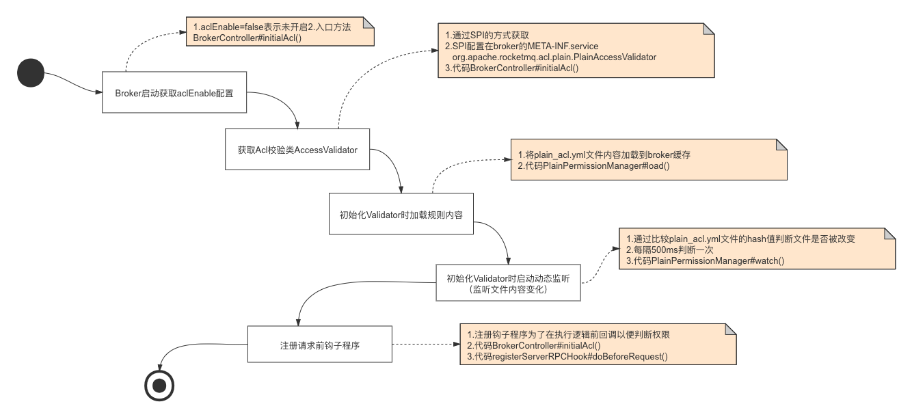
2. 权限校验
注册的钩子程序通过 NettyServerHandler 实现，在 Broker 当前的 channel 接收到客户端消息时执行校验逻辑，入口为 NettyServerHandler#channelRead0() 以及 processRequestCommand#doBeforeRpcHooks。规则校验的入口位于 PlainAccessValidator#validate 方法，下面是校验简图。

ACL 结语
- 评估是否需要 ACL 通常大部分场景是不需要的，如果对数据敏感可以通过对内容加密实现。
- 如果几千个资源（主题和消费组）都配置了 ACL 那么配置文件是庞大的。
- 如果要用建议局部使用，比如：资金往来的主题、消费组等。
- 基于此两位作者负责的 RocketMQ 集群均未开启 ACL 功能。
多副本搭建
多副本意义
RocketMQ 开源版本在 4.5.0 版本开始支持多副本（DLedger），在以前的版本中只支持主从模式。
主从模式存在的问题：
- 如果主节点挂掉了不能动态切换到从节点，这一组 Broker 节点不能提供写入服务；
- 设置主从异步复制模式时，如果主节点意外挂掉，数据可能没有全部复制到从节点，存在数据丢失风险。
多副本使用 Raft 协议在节点意外掉线后能够完成自动选主，提高集群的高可用和保证数据的一致性。
多副本搭建
由于 DLedger 基于 Raft 协议开发的功能，需要过半数选举，最少 3 个节点组成一个 Raft 组。
broker-n0.conf
brokerClusterName = RaftCluster
brokerName=RaftNode00
listenPort=30911
namesrvAddr=127.0.0.1:9876
storePathRootDir=/tmp/rmqstore/node00
storePathCommitLog=/tmp/rmqstore/node00/commitlog
enableDLegerCommitLog=true
dLegerGroup=RaftNode00
dLegerPeers=n0-127.0.0.1:40911;n1-127.0.0.1:40912;n2-127.0.0.1:40913
### must be unique
dLegerSelfId=n0
sendMessageThreadPoolNums=16
broker-n1.conf
brokerClusterName = RaftCluster
brokerName=RaftNode00
listenPort=30921
namesrvAddr=127.0.0.1:9876
storePathRootDir=/tmp/rmqstore/node01
storePathCommitLog=/tmp/rmqstore/node01/commitlog
enableDLegerCommitLog=true
dLegerGroup=RaftNode00
dLegerPeers=n0-127.0.0.1:40911;n1-127.0.0.1:40912;n2-127.0.0.1:40913
### must be unique
dLegerSelfId=n1
sendMessageThreadPoolNums=16
broker-n2.conf
brokerClusterName = RaftCluster
brokerName=RaftNode00
listenPort=30931
namesrvAddr=127.0.0.1:9876
storePathRootDir=/tmp/rmqstore/node02
storePathCommitLog=/tmp/rmqstore/node02/commitlog
enableDLegerCommitLog=true
dLegerGroup=RaftNode00
dLegerPeers=n0-127.0.0.1:40911;n1-127.0.0.1:40912;n2-127.0.0.1:40913
### must be unique
dLegerSelfId=n2
sendMessageThreadPoolNums=16
启动三个节点：
nohup bin/mqbroker -c conf/dledger/broker-n0.conf &
nohup bin/mqbroker -c conf/dledger/broker-n1.conf &
nohup bin/mqbroker -c conf/dledger/broker-n2.conf &
查看是否启动成功：
$ bin/mqadmin clusterList -n localhost:9876
RocketMQLog:WARN No appenders could be found for logger (io.netty.util.internal.PlatformDependent0).
RocketMQLog:WARN Please initialize the logger system properly.
#Cluster Name #Broker Name #BID #Addr #Version #InTPS(LOAD) #OutTPS(LOAD) #PCWait(ms) #Hour #SPACE
RaftCluster RaftNode00 0 x.x.x.x:30921 V4_7_0 0.00(0,0ms) 0.00(0,0ms) 0 444663.49 -1.0000
RaftCluster RaftNode00 1 x.x.x.x:30911 V4_7_0 0.00(0,0ms) 0.00(0,0ms) 0 444663.49 -1.0000
RaftCluster RaftNode00 3 x.x.x.x:30931 V4_7_0 0.00(0,0ms) 0.00(0,0ms) 0 444663.49 -1.0000
说明：BID 为 0 表示表示 Master，其他两个均为 Follower。
控制台截图：
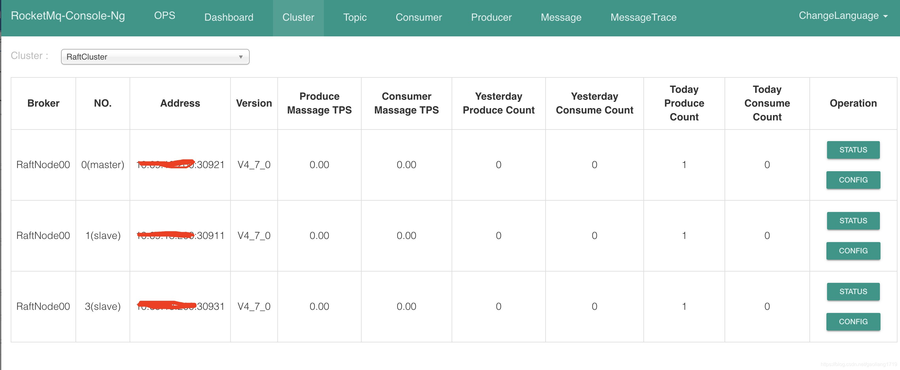
查看发送消息：

说明：通过以上步骤，我们完成多副本的搭建过程。
重新选主
我们通过 kill 掉 Master 的方式来验证 DLedger 选主情况，上面的 clusterList 截图中我们看到 Master 为 x.x.x.x:30921，将该进程 kill 掉后观察一下。
$ bin/mqadmin clusterList -n localhost:9876
RocketMQLog:WARN No appenders could be found for logger (io.netty.util.internal.PlatformDependent0).
RocketMQLog:WARN Please initialize the logger system properly.
#Cluster Name #Broker Name #BID #Addr #Version #InTPS(LOAD) #OutTPS(LOAD) #PCWait(ms) #Hour #SPACE
RaftCluster RaftNode00 0 x.x.x.x:30931 V4_7_0 0.00(0,0ms) 0.00(0,0ms) 0 444664.03 -1.0000
RaftCluster RaftNode00 1 x.x.x.x:30911 V4_7_0 0.00(0,0ms) 0.00(0,0ms) 0 444664.03 -1.0000
说明：kill 掉原 Master 后，完成自动选主，新的 Master 为 x.x.x.x:30931。
参数说明
配置文件中多副本的参数说明见下面表格。
| 参数 | 说明 |
|---|---|
| enableDLegerCommitLog | 是否启用 DLedger，默认 false |
| dLegerGroup | 节点所属的 Raft 组，建议与 broker 一致 |
| dLegerPeers | 集群节点信息，示例：n0-127.0.0.1:40911;n1-127.0.0.1:40912;n2-127.0.0.1:40913 |
| dLegerSelfId | 当前节点 id。取自 legerPeers 中条目的开头，即上述示例中的 n0，并且特别需要强调，只能第一个字符为英文，其他字符需要配置成数字 |
参考资料
Raft 的学习资料见下面链接，供学习使用。DLedger 的源码解读，见《RocketMQ 技术内幕》第二版。
多副本结语
使用多副本时，请做好压测，压测的 TPS 是否满足业务的需求，作者曾做过多副本压测与主从异步的 TPS 有相当大的差距。
在 TPS 满足的情况下，建议使用多副本架构，尤其是支付类可以优先使用。
如果线上已经存在了主从默认的架构如何升级到 DLedger 模式呢？
- 可以参考前面平滑扩所容的方式，将多副本组成的 Raft 组加入到原集群中
- 关闭原主从架构节点的写入权限
- 在过了日志存储时间后，将主从架构节点下线
24 RocketMQ-Console 常用页面指标获取逻辑
本文的目的不是详细介绍 RocketMQ-Console 的使用方法，主要对一些关键点（更多是会有疑问的点）进行介绍，避免对返回结果进行想当然。
集群信息一览

可以通过 Cluster 查看一个集群中所有的 Broker 信息，包含主节点、从节点，有时候发现主节点、从节点的一些统计指标存在一些偏差，例如 Slave 节点的 Today Producer Count 比主节点的低或者高，会简单认为出现错误，其实大可不必太在意，说明如下：
RocketMQ 的数据统计是基于时间窗口，并且数据是存储在内存中，一旦 Broker 节点重启，所有的监控数据都将丢失，而且主从同步数据存在时延，统计不一致很正常。如果主 Broker 节点重启过，统计中的数据会少于从节点，同样如果从 Broker 节点重启过，主节点就会超过从节点。
消费 TPS 只统计主节点

在 Consumer 的菜单中，显示的 TPS 表示的消息消费 TPS，但值得注意的是数据只来源于主节点，并不会统计从节点的数据，笔者有一次碰的一个消费端问题，需要重置消费端的位点到几天前，显示的效果是 Delay（消息积压）会减少，但 TPS 一直为 0，这就是因为重置位点后出发了消息消费时切换到了从节点，导致从节点上的消费 TPS 并没有被统计。
RocketMQ msgId
在 RocketMQ 中存在两个消息 ID，offsetMsgId（记录了消息的物理偏移量等信息）、msgId（消息全局唯一 ID），那在该列表中返回的消息的 ID 是哪个 ID 呢？这里显示的是 msgId。
在根据 MESSAGE ID 进行消息查找时，下面这个界面即可用输入 msgId 也可以输入 offsetMsgID 进行查询。其操作界面如下：

那这里又是为什么呢？这个是因为 RocketMQ-Console 做了兼容，会首先尝试按照 offsetMsgId 去查询，如果查询失败，则再次使用 msgId 去快速查询。通过 offsetMsgId 能快速查询到消息这个不奇怪，因为 offsetMsgID 中包含了 Broker 的 IP 地址与端口号以及物理偏移量，那如何根据 msgId 快速检索消息呢？答案是通过 Hash 索引，全局唯一 ID 在 RocketMQ 中 msgId 的另外一个名词叫 UNIQ_KEY，会存入 index 索引文件中。
创建订阅关系
在 RocketMQ 中不仅可以关闭自动创建主题，其实还可以关闭自动创建消费组，可通过设置属性 autoCreateSubscriptionGroup 为 false 关闭自动创建消费组，这样必须先通过命令或界面手工创建消费组，项目组才能使用该消费组用来消费消息，在生产环境中建议将其设置为 false，这样更加管控性，在 RocketMQ 中可以通过该界面添加消费组订阅信息：

关于 RocketMQ-Console 中的 lastTimestamp 时间说明
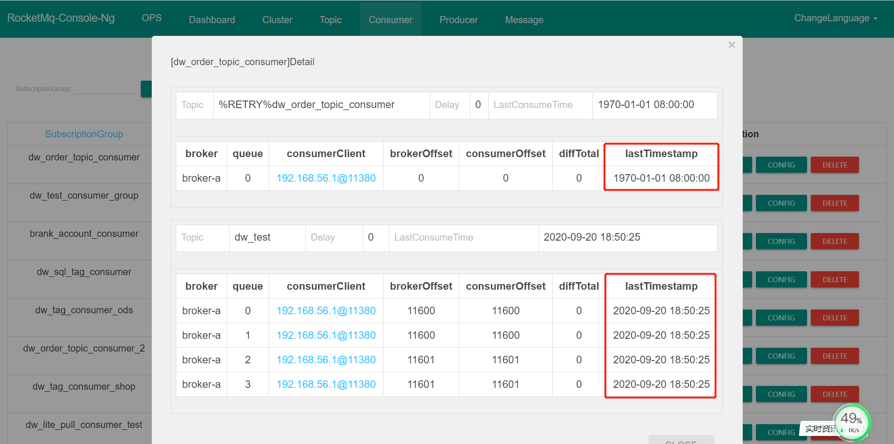
通常大家会看到 lastTimestamp 的时间会显示 1970 年，这是为什么呢？
首先 lastTimestamp 在“查看消息消费进度”时表示的意思是当前消费到的消息的存储时间，即消息消费进度中当前的偏移量对应的消息在 Broker 中的存储时间。再结合 RocketMQ 消息消费过期删除机制，默认一条消息只存储 3 天，三天过后这条消息会被删除，如果此时一直没有消费，消息消费进度代表的当前偏移量所对应的消息已被删除，则会显示 1970。
RocketMQ 的使用还是比较简单的，本文重点展示的是一些容易引起“误会”的点，暂时想到就只有如上如果大家对 RocketMQ-Console 的使用有有其他一些疑问，欢迎大家加入到官方创建的微信群。
25 RocketMQ Nameserver 背后的设计理念
Nameserver 在 RocketMQ 整体架构中所处的位置就相当于 ZooKeeper、Dubbo 服务化架构体系中的位置，即充当“注册中心”，在 RocketMQ 中路由信息主要是指主题（Topic）的队列信息，即一个 Topic 的队列分布在哪些 Broker 中。
Nameserver 工作机制

Topic 的注册与发现主要的参与者：Nameserver、Producer、Consumer、Broker。其交互特性与联通性如下：
- Nameserver：命名服务器，多台机器组成一个集群，每台机器之间互不联通。
- Broker：Broker 消息服务器，会向 Nameserver 中的每一台 NamServer 每隔 30s 发送心跳包，即 Nameserver 中关于 Topic 路由信息来源于 Broker。正式由于这种注册机制，并且 Nameserver 互不联通，如果出现网络分区等因素，例如 broker-a 与集群中的一台 Nameserver 网络出现中断，这样会出现两台 Nameserver 中的数据出现不一致。具体会有什么影响下文会继续探讨。
- Producer、Consumer：消息发送者、消息消费者，在同一时间只会连接 Nameserver 集群中的一台服务器，并且会每隔 30s 会定时更新 Topic 的路由信息。
另外 Nameserver 会定时扫描 Broker 的存活状态，其依据之一是如果连续 120s 未收到 Broker 的心跳信息，就会移除 Topic 路由表中关于该 broker 的所有队列信息，这样消息发送者在发送消息时就不会将消息发送到出现故障的 Broker 上，提高消息发送高可用性。
Nameserver 采用的注册中心模式为——PULL 模式，接下来会详细介绍目前主流的注册中心实现思路，从而从架构上如何进行选择。
两种设计注册中心的思路
PUSH 模式
说到服务注册中心，大家肯定会优先想到 Dubbo 的服务注册中心 ZooKeeper，正式由于这种“先入为主”，不少读者朋友们通常也会有一个疑问：为什么 RocketMQ 的注册中心不直接使用 ZooKeeper，而要自己实现一个 Nameserver 的注册中心呢？
那我们首先来聊一下 Dubbo 的服务注册中心：ZooKeeper，基于 ZooKeeper 的注册中心有一个显著的特点是服务的动态变更，消费者可以实时感知。例如在 Dubbo 中，一个服务进行在线扩容，增加一批的消息服务提供者，消费者能立即感知，并将新的请求负载到新的服务提供者，这种模式在业界有一个专业术语：PUSH 模式。
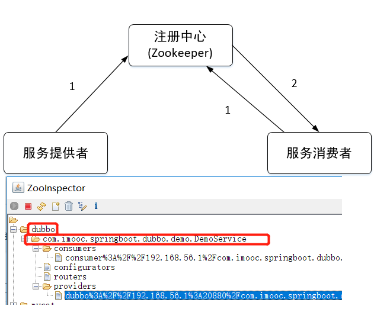
基于 ZooKeeper 的服务注册中心主要是利于 ZooKeeper 的事件机制，其主要过程如下：
- 消息服务提供者在启动时向注册中心进行注册，其主要是在 /dubbo/{serviceName}/providers 目录下创建一个瞬时节点。服务提供者如果宕机该节点就会由于会话关闭而被删除。
- 消息消费者在启动时订阅某个服务，其实就是在 /dubbo/{serviceName}/consumers 下创建一个瞬时节点，同时监听 /dubbo/{serviceName}/providers，如果该节点下新增或删除子节点，消费端会收到一个事件，ZooKeeper 会将 providers 当前所有子节点信息推送给消费消费端，消费端收到最新的服务提供者列表，更新消费端的本地缓存，及时生效。
基于 ZooKeeper 的注册中心一个最大的优点是其实时性。但其内部实现非常复杂，ZooKeeper 是基于 CP 模型，可以看出是强一致性，往往就需要吸收其可用性，例如如果 ZooKeeper 集群触发重新选举或网络分区，此时整个 ZooKeeper 集群将无法提供新的注册与订阅服务，影响用户的使用。
在服务注册领域服务数据的一致性其实并不是那么重要，例如回到 Dubbo 服务的注册与订阅场景来看，其实客户端（消息消费端）就算获得服务提供者列表不一致，也不会造成什么严重的后果，最多是在一段时间内服务提供者的负载不均衡，只要最终能达到一致即可。
PULL 模式
RocketMQ 的 Nameserver 并没有采用诸如 ZooKeeper 的注册中心，而是选择自己实现，如果大家看过 RocketMQ 的源代码，就会发现该模块就 5~6 个类，总代码不超过 5000 行，简单就意味着高效，基于 PULL 模式的注册中心示例图：
- Broker 每 30s 向 Nameserver 发送心跳包，心跳包中包含主题的路由信息（主题的读写队列数、操作权限等），Nameserver 会通过 HashMap 更新 Topic 的路由信息，并记录最后一次收到 Broker 的时间戳。
- Nameserver 以每 10s 的频率清除已宕机的 Broker，Nameserver 认为 Broker 宕机的依据是如果当前系统时间戳减去最后一次收到 Broker 心跳包的时间戳大于 120s。
- 消息生产者以每 30s 的频率去拉取主题的路由信息，即消息生产者并不会立即感知 Broker 服务器的新增与删除。
PULL 模式的一个典型特征是即使注册中心中存储的路由信息发生变化后，客户端无法实时感知，只能依靠客户端的定时更新更新任务，这样会引发一些问题。例如大促结束后要对集群进行缩容，对集群进行下线，如果是直接停止进程，由于是网络连接直接断开，Nameserver 能立即感知 Broker 的下线，会及时存储在内存中的路由信息，但并不会立即推送给 Producer、Consumer，而是需要等到 Producer 定时向 Nameserver 更新路由信息，那在更新之前，进行消息队列负载时，会选择已经下线的 Broker 上的队列，这样会造成消息发送失败。
在 RocketMQ 中 Nameserver 集群中的节点相互之间不通信，各节点相互独立，实现非常简单，但同样会带来一个问题：Topic 的路由信息在各个节点上会出现不一致。
那 Nameserver 如何解决上述这两个问题呢？RocketMQ 的设计者采取的方案是不解决，即为了保证 Nameserver 的高性能，允许存在这些缺陷，这些缺陷由其使用者去解决。
由于消息发送端无法及时感知路由信息的变化，引入了消息发送重试与故障规避机制来保证消息的发送高可用，这部分内容已经在前面的文章中详细介绍。
那 Nameserver 之间数据的不一致，会造成什么重大问题吗？
Nameserver 数据不一致影响分析
RocketMQ 中的消息发送者、消息消费者在同一时间只会连接到 Nameserver 集群中的某一台机器上，即有可能消息发送者 A 连接到 Namederver-1 上，而消费端 C1 可能连接到 Nameserver-1 上，消费端 C2 可能连接到 Nameserver-2 上，我们分别针对消息发送、消息消费来谈一下数据不一致会产生什么样的影响。
Nameserver 数据不一致示例图如下：

对消息发送端的影响
正如上图所示，Producer-1 连接 Nameserver-1，而 Producer-2 连接 Nameserver-2，例如这个两个消息发送者都需要发送消息到主题 order_topic。由于 Nameserver 中存储的路由信息不一致，对消息发送的影响不大，只是会造成消息分布不均衡，会导致消息大部分会发送到 broker-a 上，只要不出现网络分区的情况，Nameserver 中的数据会最终达到一致，数据不均衡问题会很快得到解决。故从消息发送端来看，Nameserver 中路由数据的不一致性并不会产生严重的问题。
对消息消费端的影响
如果一个消费组 order_consumer 中有两个消费者 c1、c2，同样由于 c1、c2 连接的 Nameserver 不同，两者得到的路由信息会不一致，会出现什么问题呢？我们知道，在 RocketMQ PUSH 模式下会自动进行消息消费队列的负载均衡，我们以平均分配算法为例，来看一下队列的负载情况。
- c1：在消息队列负载的时查询到 order_topic 的队列数量为 8 个（broker-a、broker-b 各 2 个），查询到该消费组在线的消费者为 2 个，那按照平均分配算法，会分配到 4 个队列，分别为 broker-a：q0、q1、q2、q3。
- c2：在消息队列负载时查询到 order_topic 的队列个数为 4 个（broker-a），查询到该消费组在线的消费者 2 个，按照平均分配算法，会分配到 2 个队列，由于 c2 在整个消费列表中处于第二个位置，故分配到队列为 broker-a：q2、q3。
将出现的问题一目了然了吧：会出现 broker-b 上的队列分配不到消费者，并且 broker-a 上的 q2、q3 这两个队列会被两个消费者同时消费，造成消息的重复处理，如果消费端实现了幂等，也不会造成太大的影响，无法就是有些队列消息未处理，结合监控机制，这种情况很快能被监控并通知人工进行干预。
当然随着 Nameserver 路由信息最终实现一致，同一个消费组中所有消费组，最终维护的路由信息会达到一致，这样消息消费队列最终会被正常负载，故只要消费端实现幂等，造成的影响也是可控的，不会造成不可估量的损失，就是因为这个原因，RocketMQ 的设计者们为了达到简单、高效之目的，在 Nameserver 的设计上允许出现一些缺陷，给我们做架构设计方案时起到了一个非常好的示范作用，无需做到尽善尽美，懂得抉择、权衡。
26 Java 并发编程实战
RocketMQ 是一款非常优秀的分布式，里面有很多的编程技巧值得我们借鉴，本文从并发编程角度，从 RocketMQ 中挑选几个示例与大家一起来分享沟通一下。
读写锁的使用场景
在 RocketMQ 中关于 Topic 的路由信息主要指的是一个 Topic 在各个 Broker 上的队列信息，而 Broker 的元数据又包含所属集群名称、Broker IP 地址，路由信息的写入操作主要是 Broker 每隔 30s 向 Broker 上报路由信息，而路由信息的读取时由消息客户端（消息发送者、消息消费者）定时向 Nameserver 查询 Topic 的路由消息，而且 Broker 的请求是量请求，而客户端查询路由信息是以 Topic 为维度的查询，并且一个消费端集群的应用成百上千个，其特点：查询请求远超过写入请求。
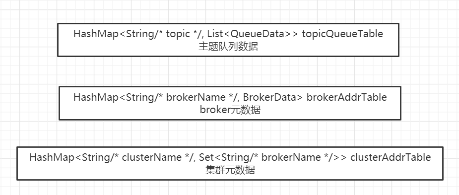
在 RocketMQ Nameserver 中用来存储路由信息的元数据使用的是上述三个 HashMap，众所周知，HashMap 在多线程环境并不安全，容易造成 CPU 100%，故在 Broker 向 Nameserver 汇报路由信息时需要对上述三个 HashMap 进行数据更新，故需要引入锁，结合读多写少的特性，故采用 JDK 的读写锁 ReentrantReadWriteLock，用来对数据的读写进行保护，其示例代码如下：
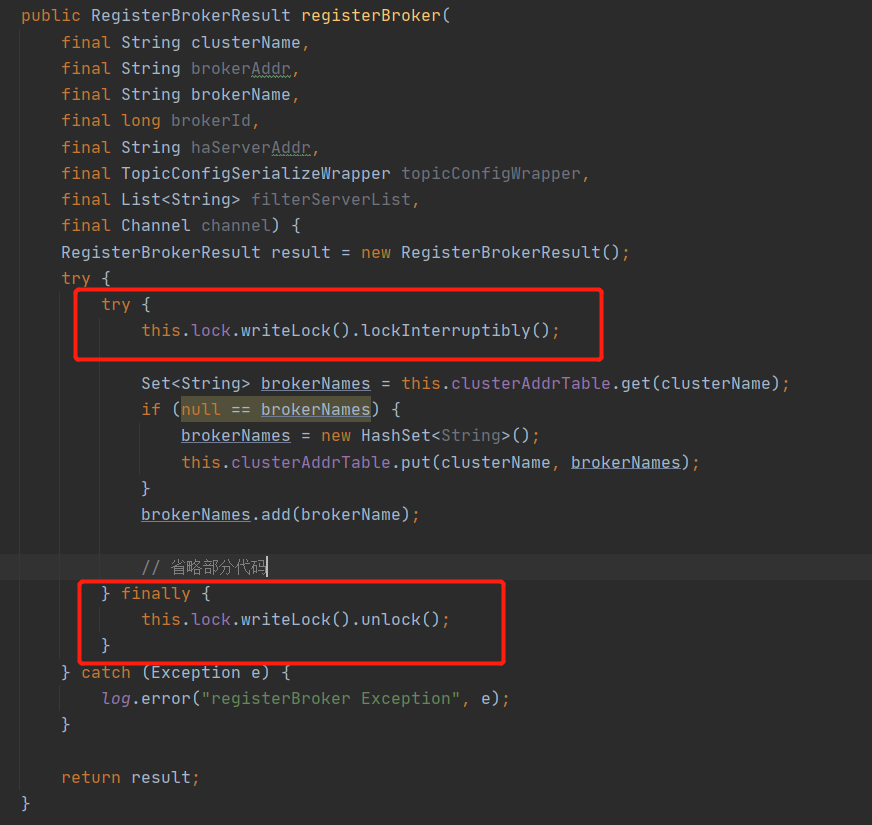
在对上述 HashMap 添加数据时加写锁。

在对数据进行读取时加读锁。
读写锁主要的特点是申请了写锁后所有的读锁申请全部阻塞，如果读锁申请成功后，写锁会被阻塞，但读锁能成功申请，这样能保证读请求的并发度，而由于写请求少，故因为锁导致的等待将会非常少。结合路由注册场景，如果 Broker 向 Nameserver 发送心跳包，如果当时前有 100 个客户端正在向 Nameserver 查询路由信息，那写请求会暂时被阻塞，只有等这 100 个读请求结束后，才会执行路由的更新操作，可能会有读者会问，如果在写请求阻塞期间，又有 10 个新的客户端发起路由查询，那这 10 个请求是立即能执行还是需要阻塞，答案是默认会阻塞等待，因为已经有写锁在申请，后续的读请求会被阻塞。
思考题：为什么 Nameserver 的容器不使用 ConcurrentHashMap 等并发容器呢？
一个非常重要的点与其“业务”有关，因为 RocketMQ 中的路由信息比较多，其数据结构采用了多个 HashMap，如下图所示：

每次写操作可能需要同时变更上述数据结构，故为了保证其一致性，故需要加锁，ConcurrentHashMap 并发容器在多线程环境下的线程安全也只是针对其自身，故从这个维度，选用读写锁是必然的选择。
当然读者朋友们会问，如果只是针对读写锁 + HashMap 与 ConcurrentHashMap，那又该如何选择呢？这个要分 JDK 版本。
在 JDK 8 之前，ConcurrentHashMap 的数据结构 Segment（ReentrantLock）+ HashMap，其锁的粒度为 Segment，同一个 Segment 的读写都需要加锁，即落在同一个 Segment 中的读、写操作是串行的，其读的并发性低于读写锁 + HashMap 的，故在 JDK 1.8 之前，ConcurrentHashMap 是落后于读写锁 + HashMap 的结构的。
但在 JDK 1.8 及其后续版本后，对 ConcurrentHashMap 进行了优化，其存储结构与 HashMap 的存储结构类似，只是引入了 CAS 来解决并发更新，这样一来，我觉得 ConcurrentHashMap 具有一定的优势，因为不需要再维护锁结构。
信号量使用技巧
JDK 的信号量 Semaphore 的一个非常经典的使用场景，控制并发度，在 RocketMQ 中异步发送，为了避免异步发送过多挂起，可以通过信号量来控制并发度，即如果超过指定的并发度就会进行限流，阻止新的提交任务。信号量的通常使用情况如下所示：
public static void main(String[] args) {
Semaphore semaphore = new Semaphore(10);
for(int i = 0; i < 100; i++) {
Thread t = new Thread(new Runnable() {
@Override
public void run() {
doSomething(semaphore);
}
});
t.start();
}
}
private static void doSomething(Semaphore semaphore) {
boolean acquired = false;
try {
acquired = semaphore.tryAcquire(3000, TimeUnit.MILLISECONDS);
if(acquired) {
System.out.println("执行业务逻辑");
} else {
System.out.println("信号量未获取执行的逻辑");
}
} catch (Throwable e) {
e.printStackTrace();
} finally {
if(acquired) {
semaphore.release();
}
}
}
上面的示例代码非常简单，就是通过信号量来控制 doSomething() 的并发度，上面几个点如下：
- tryAcquire：该方法是尝试获取一个信号，如果当前没有剩余许可，在指定等待时间后会返回 false，故其 release 方法必须在该方法返回 true 时调用，否则会许可超发。
- release：归还许可。
上述的场景较为紧张，如果 doSomething 是一个异步方法，则上述代码的效果会大打折扣，甚至于如果 doSomething 分支众多，而且有可能会再次异步，信号量的归还就变得非常复杂，信号量的使用最关键是申请一个许可，就必须只调用一次 release，如果多次调用 release，则会造成应用程序实际的并发数量超过设置的许可，请看如下测试代码：
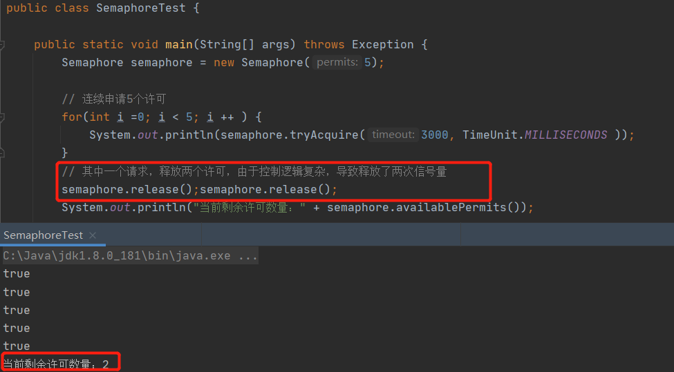
由于一个线程控制的逻辑有误，导致原本只允许一个线程获取许可，但此时可以允许两个线程去获取许可，导致当前的并发量为 6，超过预定的 5 个。当然无线次调用 release 方法，并不会报错，也不会无限增加许可，许可数量不会超过构造时传入的个数。
故信号量在实践中如何避免重复调用 release 方法显得非常关键，RocketMQ 给出了如下解决方案。
public class SemaphoreReleaseOnlyOnce {
private final AtomicBoolean released = new AtomicBoolean(false);
private final Semaphore semaphore;
public SemaphoreReleaseOnlyOnce(Semaphore semaphore) {
this.semaphore = semaphore;
}
public void release() {
if (this.semaphore != null) {
if (this.released.compareAndSet(false, true)) {
this.semaphore.release();
}
}
}
public Semaphore getSemaphore() {
return semaphore;
}
}
即对 Semaphore 进行一次包装，然后传入到业务方法中，例如上述示例中的 doSomething 方法，不管 doSomething 是否还会创建线程，在需要释放的时候调用 SemaphoreReleaseOnlyOnce 的 release 方法，在该方法中进行重复判断调用，因为一个业务线程只会持有一个唯一的 SemaphoreReleaseOnlyOnce 实例，这样就能确保一个业务线只会释放一次。
在 SemaphoreReleaseOnlyOnce 的 release 的方法实现也非常简单，引入了 CAS 机制，如果该方法被调用，就使用 CAS 将 released 设置为 true，下次试图释放时，判断该状态已经是 true，则不会再次调用 Semaphore 的 release 方法，完美解决该问题。
同步转异步编程技巧
在并发编程模型中，有一个经典的并发设计模式——Future，即主线程向一线程提交任务时返回一个凭证（Future），此时主线程不会阻塞，还可以做其他的事情，例如再发送一些 Dubbo 请求，等需要用到异步执行结果时调用 Future 的 get() 方法时，如果异步结果已经执行完成就立即获取结果，如果未执行完，则主线程阻塞等待执行结果。
JDK 的 Future 模型通常需要一个线程池对象、一个任务请求 Task。在 RocketMQ 的同步刷盘实现中，也使用了线程进行异步解耦，同样实现了异步的效果，并且没有使用 Future 设计模式，而是巧妙的使用了 CountDownLatch。

其中 GroupCommitService 拥有同步刷盘，该线程提供一个提交刷盘请求的方法 putRequest，接受一个同步刷盘请求 GroupCommitRequest，并且该方法并不会阻塞，主线程可以继续调用 GroupCommitRequest 的 waitForFlush 方法等待刷盘结束，即虽然使用了异步线程 GroupCommitService 与主线程解耦，GroupCommitService 主要负责刷盘的业务实现。那我们来看一下 waitForFlush 的实现，体会一下同步方法转异步的关键实现要点：

巧妙的使用 CountDownLatch 的 await 方法，进行指定超时等待时间，那什么时候会被唤醒呢？当然是刷盘操作结束，由刷盘线程来调用 countDownLatch 的 countDown() 方法，从而使 await 方法结束阻塞，其实现很简单。
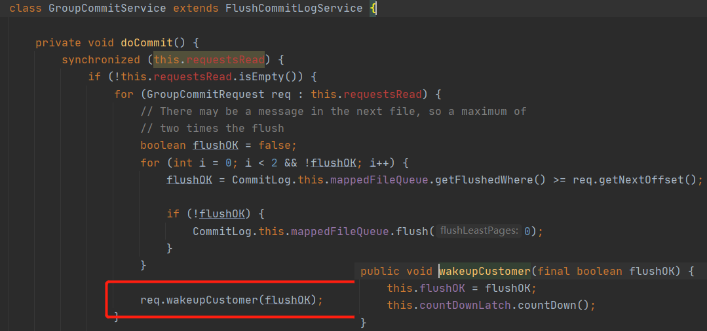
这种设计够优雅吧，相比 Future 来说显得更加的轻量级。
CompletableFuture 编程技巧
从 JDK 8 开始，由于引入了 CompletableFuture，对真正实现异步编程成为了可能。所谓的真正异步是主线程发起一个异步请求后，尽管主线程需要最终得到异步请求的返回结果，但并不需要在代码中显示的调用 Future.get() 方法，做到不完全阻塞主线程，我们称之为“真正的异步”。我以 RocketMQ 的一个真实使用场景主从复制为例进行阐述。
在 RocketMQ 4.7.0 之前，同步复制的模型如下图所示：
在 RocketMQ 处理消息写入的线程通过调用 SendMessageProcessor 的 putMessage 进行消息写入，在这里我们称之为主线程，消息写入主节点后，需要将数据复制到从节点，这个过程 SendMessageProcessor 主线程一直在阻塞，需要同步等待从节点的复制结构，然后再通过网络将结果发送到消息发送客户端。即在这种编程模型中，消息发送主线程并不符合异步编程的模式，使之并不高效。
优化的思路：将消息发送的处理逻辑与返回响应结果到客户端这个两个步骤再次进行解耦，再使用一线程池来处理同步复制的结果，然后在另外一个线程中将响应结果通过网络写入，而 SendMessageProcessor 就无需等待复制结果，减少阻塞，提高主线程的消息处理速率。
在 JDK 8 中，由于引入了 CompletableFuture，上述的改造思路就更加容易，故在 RocketMQ 4.7.0 中借助 CompletableFuture 实现了 SendMessageProcessor 的真正异步化处理，并且还不违背同步复制的语义，其流程图如下：

实现的要点是在触发同步复制的地方，提交给 HaService（同步复制服务）时返回一个 CompletableFuture，异步线程在数据复制成功后，通过 CompletableFuture 通知其结果，得到处理结果后再向客户端返回结果。
其示例代码如下：

然后在 SendMessageProcessor 在处理 CompletableFuture 的关键代码如下：
然后调用 thenApply 方法，为 CompletableFuture 注册一个异步回掉，即在异步回掉的时候，将结果通过网络传入到客户端，实现消息发送线程与结果返回的解耦。
思考：CompletableFuture 的 thenApply 方法在哪个线程中执行呢？
其实在 CompletableFuture 中会内置一个线程池 ForkJoin 线程池，用来执行器异步回调。
27 从 RocketMQ 学基于文件的编程模式（一）
消息存储格式看文件编程
从 commitlog 文件的设计来学文件编程
我们知道 RocketMQ 的全量消息存储在 commitlog 文件中，每条消息的大小不一致，那如何对消息进行组织呢？当消息写入到文件中后，如果判别一条消息的开始与结束呢？
首先基于文件的编程模型，首先需要定义一套消息存储格式，用来表示一条完整的消息，例如 RocketMQ 的消息存储格式如下图所示：

从这里我们可以得到一种通用的数据存储格式定义实践：通常存储协议遵循 Header + Body，并且 Header 部分是定长的，存放一些基本信息，body 存储数据，在 RocketMQ 的消息存储协议，我们可以将消息体的大小这 4 个字节看成是 Header，后面所有的字段认为是与消息相关的业务属性，按照指定格式进行组装即可。
针对 Header + Body 这种协议，我们通常的提取一条消息会分成两个步骤，先将 Header 读取到 ByteBuffer 中，在 RocketMQ 中的消息体，会读出一条消息的长度，然后就可以从消息的开头处读取该条消息长度的字节，然后就按照预先定义的格式解析各个部分即可。
那问题又来了，如果确定一条消息的开头呢?难不成从文件的开始处开始遍历？
正如关系型数据那样会为每一条数据引入一个 ID 字段，在基于文件编程的模型中，也会为一条消息引入一个身份标志：消息物理偏移量，即消息存储在文件的起始位置。
物理偏移量的设计如下图所示：
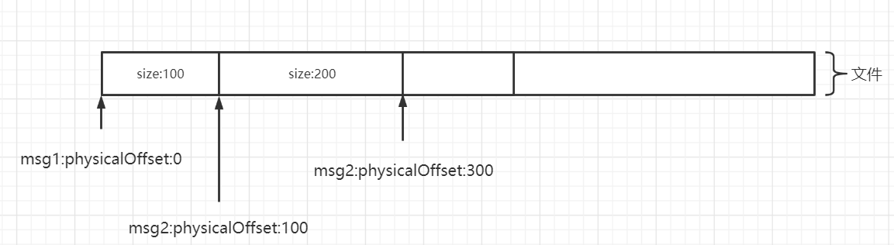
有了文件的起始偏移量 + SIZE，从一个文件中提取一条完整的消息就显得轻而易举了。
从 commitlog 文件的组织来看，通常基于文件的编程，每一个文件前都会填充一个魔数，在文件末尾还会设计一个用于填充的数用 PAD 表示，例如如果一个文件无法容纳一条完整的消息，并不会将一条消息分开存储，而是用 PAD 进行填充。
从 consumequeue 来看文件存储设计
commitog 文件的存储如果是根据偏移量定位消息会非常方便，但如果要基于 Topic 去查询消息，就没那么方便了，故为了方便根据 topic 查询消息，引入了 consumequeue 文件。

consumequeue 设计极具技巧性，其每个条目使用固定长度（8 字节 commitlog 物理偏移量、4 字节消息长度、8 字节 tag hashcode），这里不是存储 tag 的原始字符串，而是存储 hashcode，目的就是确保每个条目的长度固定，可以使用访问类似数组下标的方式来快速定位条目，极大的提高了 ConsumeQueue 文件的读取性能。
故基于文件的存储设计，需要针对性的设计一些索引，索引文件的设计，要确保条目的固定长度，使之可以使用类似访问数组的方式快速定位数据。
内存映射与页缓存
解决了数据的存储格式与唯一标识，接下来就要考虑如何提高写入数据的性能。在基于文件编程的模型中，为了方便数据的删除，通常采取小文件，并且使用固定长度的文件，例如 RocketMQ 中 commitlog 文件夹会生成很多大小相等的文件。
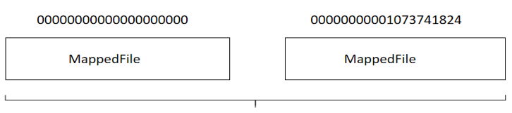
**使用定长的文件，其主要目的是方便进行内存映射。**通过内存映射机制，将磁盘文件映射到内存，以一种访问内存的方式访问磁盘，极大的提高了文件的操作性能。
在 Java 中使用内存映射的示例代码如下：
FileChannel fileChannel = new RandomAccessFile(this.file, "rw").getChannel();
MappedByteBuffer mappedByteBuffer = this.fileChannel.map(MapMode.READ_WRITE, 0, fileSize);
实现要点如下：
- 首先需要通过 RandomAccessFile 构建一个文件写入通道 FileChannel，提供基于块写入的通道。
- 通过 FileChannel 的 map 方法创建内存映射。
**在 Linux 操作系统中，MappedByteBuffer 基本可以看成是页缓存（PageCache）。**在 Linux 操作系统中的内存使用策略时，会最大可能的利用机器的物理内存，并常驻内存中，就是所谓的页缓存，只有当操作系统的内存不够的情况下，会采用缓存置换算法例如 LRU，将不常用的页缓存回收，即操作系统会自动管理这部分内存，无需使用者关心。如果从页缓存中查询数据时未命中，会产生缺页中断，由操作系统自动将文件中的内容加载到页缓存。
内存映射，将磁盘数据映射到磁盘，通过向内存映射中写入数据，这些数据并不会立即同步到磁盘，需用定时刷盘或由操作系统决定何时将数据持久化到磁盘。故存储的在页缓存的中的数据，如果 RocketMQ Broker 进程异常退出，存储在页缓存中的数据并不会丢失，操作系统会定时页缓存中的数据持久化到磁盘，做到安全可靠。不过如果是机器断电等异常情况，存储在页缓存中的数据就有可能丢失。
顺序写
基于磁盘的读写，提高其写入性能的另外一个设计原理是磁盘顺序写。磁盘顺序写广泛用在基于文件的存储模型中，大家不妨思考一下 MySQL Redo 日志的引入目的，我们知道在 MySQL InnoDB 的存储引擎中，会有一个内存 Pool，用来缓存磁盘的文件块，当更新语句将数据修改后，会首先在内存中进行修改，然后将变更写入到 redo 文件（关键是会执行一次 force，同步刷盘，确保数据被持久化到磁盘中），但此时并不会同步数据文件，其操作流程如下图所示：

如果不引入 redo，更新 order，更新 user，首先会更新 InnoDB Pool（更新内存），然后定时刷写到磁盘，由于不同的表对应的数据文件不一致，故如果每更新内存中的数据就刷盘，那就是大量的随机写磁盘，性能低下，故为了避免这个问题，首先引入一个顺序写 redo 日志，然后定时同步内存中的数据到数据文件，虽然引入了多余的 redo 顺序写，但整体上获得的性能更好，从这里也可以看出顺序写的性能比随机写要高不少。
故基于文件的编程模型中，设计时一定要设计成顺序写，顺序写一个非常的特点是只追究，不更新。
引用计数器
在面向文件基于 NIO 的编程中，基本都是面向 ByteBuffer 进行编程，并且对 ByteBuffer 进行读操作，通常会使用其 slince 方法，两个 ByteBuffer 对象的内存地址相同，但指针不一样，通常使用示例如下：
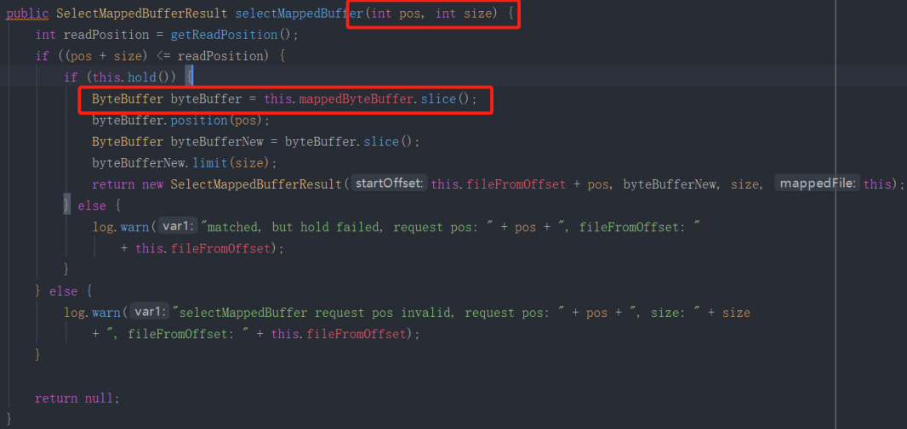
上面的方法的作用就是从一个映射文件，例如 commitlog、ConsumeQueue 文件中的某一个位置读取指定长度的数据，这里就是从内存映射 MappedBytebuffer slice 一个对象，共享其内部的存储，但维护独立的指针，这样做的好处就是避免了内存的拷贝，但与之带来的弊端就是较难管理，主要是 ByteBuffer 对象的释放会变得复杂起来。
需要跟踪该 MappedByteBuffer 会 slice 多少次，在这些对象的声明周期没有结束后，不能随意的关闭 MappedByteBuffer，否则其他对象的内存无法访问，造成不可控制的错误，那 RocketMQ 是如何解决这个问题的呢？
其解决方案是引入了引用计数器，即每次 slice 后 引用计数器增加一，释放后引用计数器减一，只有当前的引用计数器为 0，才可以真正释放。在 RocketMQ 中关于引用计数的实现如下：

在结合上图 MappedFile selectMappedBuffer 方法，我们来阐述其实现要点：
- 对 MappedByteBuffer slice 是通过调用 hold 增加一次引用，即引用该 ByteBuffer 的引用计数器加一。
- 对返回后的 ByteBuffer，被封装在 SelectMappedBufferResult 中，该 ByteBuffer 的使用者在使用完毕后，会释放它，这个时候 ReferenceResource 的 release 方法会被调用，引用计数器会减一。
28 从 RocketMQ 学基于文件的编程模式（二）
同步刷盘、异步刷盘
基于文件的编程模型中为了提高文件的写入性能，通常会引入内存映射机制，但凡事都有利弊，引入了内存映射、页缓存等机制，数据首先写入到页缓存，此时并没有真正的持久化到磁盘，那 Broker 收到客户端的消息发送请求时是存储到页缓存中就直接返回成功，还是要持久化到磁盘中才返回成功呢？
这里又是一个抉择，是在性能与消息可靠性方面进行的权衡，为此 RocketMQ 提供了多种持久化策略：同步刷盘、异步刷盘。
“刷盘”这个名词是不是听起来很高大上，其实这并不是一个什么神秘高深的词语，所谓的刷盘就是将内存中的数据同步到磁盘，在代码层面其实是调用了 FileChannel 或 MappedBytebuffer 的 force 方法，其截图如下：
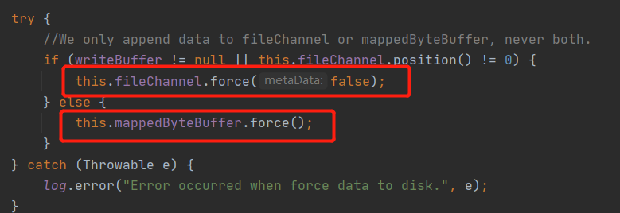
接下来分别介绍同步刷盘与异步刷盘的实现技巧。
同步刷盘
同步刷盘指的 Broker 端收到消息发送者的消息后，先写入内存，然后同时将内容持久化到磁盘后才向客户端返回消息发送成功。
提出思考：那在 RocketMQ 的同步刷盘是一次消息写入就只将一条消息刷写到磁盘？答案是否定的。
在 RocketMQ 中同步刷盘的入口为 commitlog 的 handleDiskFlush，同步刷盘的截图如下：
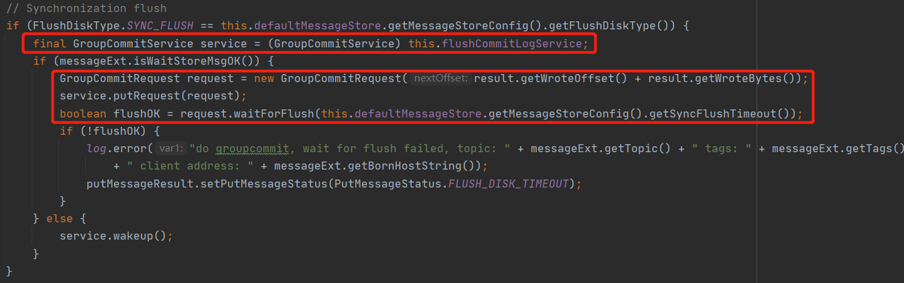
这里有两个核心关键点：
- 用来处理同步刷盘服务的类为：GroupCommitService，大家有没有关注到为啥名字中会有 Group 的字眼，组提交，这也能说明一次刷盘并不只刷写一条消息，而是一组消息。
- 这里使用了一种编程技巧，使用 CountDownLatch 的编程设计模式，发一起一个异步请求，然后调用带过期时间的 await 方法等待异步处理结果，即同步转异步编程模型，实现业务逻辑的解耦。
接下来继续探讨组提交的设计理念。

判断一条刷盘请求成功的条件：当前已刷盘指针大于该条消息对应的物理偏移量，这里使用了刷盘重试机制。然后唤醒主线程并返回刷盘结果。
所谓的组提交，其核心理念理念是调用刷盘时使用的是 MappedFileQueue.flush 方法，该方法并不是只将一条消息写入磁盘，而是会将当期未刷盘的数据一次性刷写到磁盘，既组提交，故即使在同步刷盘情况下，也并不是每一条消息都会被执行 flush 方法，为了更直观的展现组提交的设计理念，给出如下流程图：
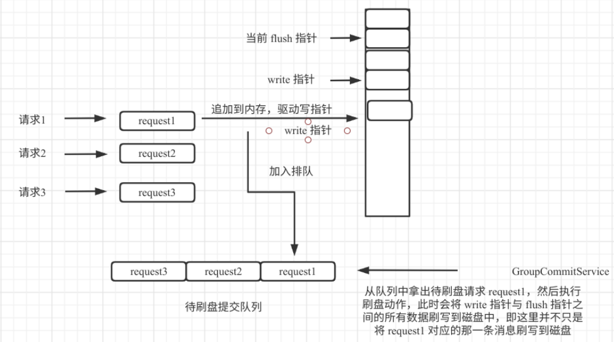
异步刷盘
同步刷盘的优点是能保证消息不丢失，即向客户断返回成功就代表这条消息已被持久化到磁盘，即消息非常可靠，但是以牺牲写入性能为前提条件的，但由于 RocketMQ 的消息是先写入 PageCache，故消息丢失的可能性较小，如果能容 忍一定几率的消息丢失，但能提高性能，可以考虑使用异步刷盘。
异步刷盘指的是 Broker 将消息存储到 PageCache 后就立即返回成功，然后开启一个异步线程定时执行 FileChannel 的 forece 方法将内存中的数据定时刷写到磁盘，默认间隔为 500ms。在 RocketMQ 的异步刷盘实现类为 FlushRealTimeService。看到这个默认间隔为 500ms，大家是不是会猜测 FlushRealTimeService 是使用了定时任务？
其实不然。这里引入了带超时时间的 CountDown await 方法，这样做的好处时如果没有新的消息写入，会休眠 500ms，但收到了新的消息后，可以被唤醒，做到消息及时被刷盘，而不是一定要等 500 ms。
文件恢复机制
我们首先来看一下 RocketMQ 的文件转发机制：
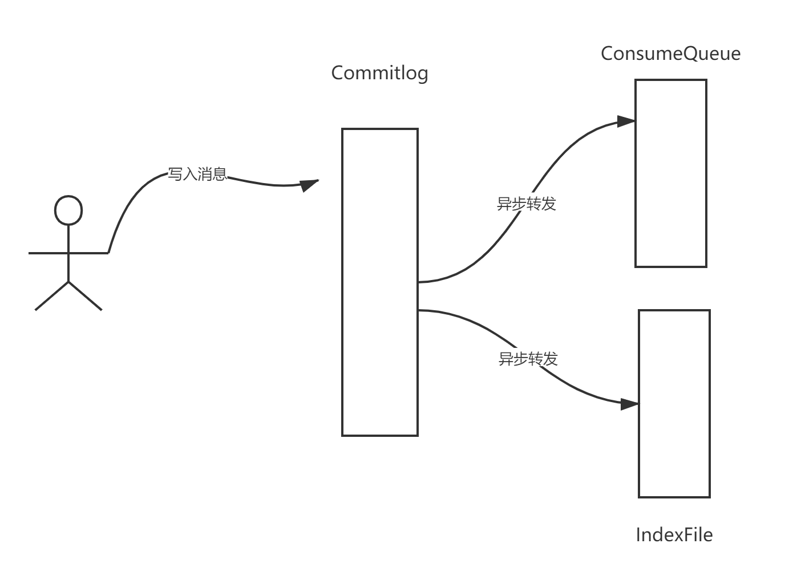
在 RocketMQ 中数据会首先写入到 commitlog 文件，而 consumequeue、indexFile 等文件都是基于 commitlog 文件异步进行转发的，既然是异步的，就有可能出现 commitlog 文件、consumequeue 文件中的数据不一致，例如在关闭 RocketMQ 中部分数据并没有转发给 consumequeue，那在重启时如何恢复，确保数据一致呢？
在讲解 RocketMQ 文件恢复机制之前，先抛出几个异常场景：
- 在写入 commitlog 文件后并且是采用同步刷盘，即消息已经写入 commitlog 文件，但准备转发给 consumequeue 文件由于断电等异常，导致 consumequeue 中并未成功存储。
- 在刷盘的时候，如果积累了 100m 的消息，准备将这 100M 消息刷写到磁盘，但由于机器突然断电，只刷写了 50m 到 commitlog 文件，这个时候可能一条消息只部分写入到磁盘，那又怎么处理呢？
- 细心的朋友应该能看到在 RocketMQ 的存储目录下有一个叫 checkpoint 的文件，显而易见就是记录 commitlog 等文件的刷盘点，但将数据刷写到 commitlog 文件，然后才会将刷盘点记录到 checkpoint 文件，那如果此时的刷盘点未写入到 checkpoint 就丢失了，那又如何处理呢？
温馨提示：各位读者朋友们，建议大家在这里稍微停留片刻，对上述问题进行一个简单的思考，再继续本文的后续内容。
在 RocketMQ 中 Broker 异常停止恢复和正常停止恢复两种场景。
这两种场景主要是定位到从哪个文件开始恢复的逻辑不一样，一旦定位到从哪个文件，文件的恢复思路如下：
- 首先尝试恢复 consumeque 文件，根据 consumequeue 的存储格式（8 字节物理偏移量、4 字节长度、8 字节 tag hashcode），找到最后一条完整的消息格式所对应的物理偏移量，用 maxPhysicalOfConsumeque 表示。
- 然后尝试恢复 commitlog，首先通过文件的魔数来判断该文件是否是一个 comitlog 文件，然后按照消息的存储格式去寻找最后一条合格的消息，拿到其 physicalOffset，如果在 commitlog 文件中的有效偏移量小于 consumequeue 中 存储的最大物理偏移量，将会删除 consumequeue 中多余的内容，如果大于 consumequeue 中的最大物理偏移量，说明 consuemqueue 中的内容少于 commitlog 文件中存储的内容，则会重推，即 RocketMQ 会将 commitlog 文件中的多余消息重新进行转发，从而实现 comitlog 与 consumequeue 文件最终保持一致。
在实际生产环境下，如何高效的定位大概率需要恢复的文件呢？例如现在 commitlog 文件有 500 多个文件，从第一个文件开始判断？当然不是。会按照是否是正常退出还是异常退出。
正常退出定位文件
在 RocketMQ 启动时候会创建一个名为 abort 的文件，然后在正常退出时会删除该文件，故判断 RocketMQ 进程是否是异常退出只需要查看 abort 文件是否存在，如果存在表示异常退出。
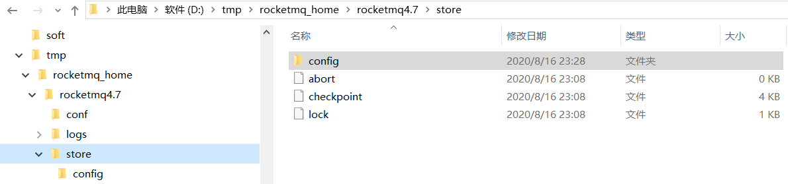
正常退出文件的定位策略：
- 恢复 ConsumeQueue 时是按照 topic 进行恢复的，从第一文件开始恢复。
- 恢复 commitlog 时从倒数第 3 个文件，向后开始尝试开始恢复。
异常退出定位文件
RocketMQ 正常退出时可以从倒数第三个文件开始恢复，这个看似存在风险，但其实不然，因为通常情况一个文件写完，就会被刷写到磁盘中，但异常退出时就不能就不知道是什么原因退出的，这个时候就不能这么“随意”，必须严谨，那如何在严谨的情况下提高定位的效率呢？
不知大家有留意到上图中的 checkpoint 文件，相信大家对这个文件的含义不会陌生，在 RocketMQ 中会存储 commitlog、index、consumequeue 等文件的最后一次刷盘时间戳。其文件结构如下图所示：

- physicMsgTimestamp commitlog 文件最后的刷盘的时间点
- logicsMsgTimestamp consumequeue 文件最后的刷盘时间点
- indexMsgTimestamp indexfile 文件最后的刷盘时间点
该文件的刷盘机制如下：

从这里可以看出，commitlog 刷盘成功后，才会执行 checkpoint 文件的刷盘，commitlog 文件与 checkpoint 会存在不一致的情况，即 checkpoint 中存储的刷盘点以前的数据一定被写入到磁盘中，但并不能说只有 checkpoint 中的存储的刷盘点代表的数据并不能表示已刷盘的所有数据。
基于 checkpoint 文件的特点，异常退出时定位文件恢复的策略如下：
- 恢复 ConsumeQueue 时是按照 topic 进行恢复的，从第一文件开始恢复。
- 从最后一个 commitlog 文件逐步向前寻找，在寻找时读取该文件中的第一条消息的存储时间，如果这个存储时间小于 checkpoint 文件中的刷盘时间，就可以从这个文件开始恢复，如果这个文件中第一条消息的存储时间大于刷盘点，说明不能从这个文件开始恢复，需要找上一个文件，因为 checkpoint 的文件中的刷盘点代表的是百分之百可靠的消息。
文件恢复的具体代码我这里就不做过多阐述了，根据上面的设计理念，自己顺藤摸瓜，效果应该会事半功倍。文件恢复的入口：DefaultMessageStore#recover。
Java 如何使用零拷贝
在面向文件文件、面向网络的编程模型中，“零拷贝”这个词出现的频率我想是非常高的，在这里我并不打算普及 Java 零拷贝的具体含义，如果对其不太了解，建议百度之，这里我们看一下 RocketMQ 在消息消费时是如何基于 Netty 使用零拷贝的。

零拷贝的关键实现要点：
- 消息读取场景，首先基于内存映射获取一个 ByteBuf，该 ByteBuf 中的数据并不需要先加载到堆内存中。
- 然后将要发送的 ByteBuf 封装在 Netty 的 FileRegion，实现其 transferTo 方法即可，其底层实现为 FileChannel 的 transferTo 方法。
ManyMessageTransfer 的 transforeTo 方法实现如下图所示：

本文基于文件编程的模型就介绍到这里了，本文的设计思路是向优秀的人学习优秀的编程技巧。
29 从 RocketMQ 学 Netty 网络编程技巧
从整个类体系看网络设计
RocketMQ 关于网络方面核心类图如下所示：

接下来先一一介绍各个类的主要职责。
RemotingService
RPC 远程服务基础类。主要定义所有的远程服务类的基础方法：
void start()：启动远程服务。void shutdown()：关闭。void registerRPCHook(RPCHook rpcHook)：注册 RPC 钩子函数，有利于在执行网络操作的前后执行定制化逻辑。
RemotingServer/RemotingClient
远程服务器/客户端基础接口，两者中的方法基本类似，故这里重点介绍一下 RemotingServer，定位 RPC 远程操作的相关“业务方法”。
void registerProcessor(int requestCode, NettyRequestProcessor processor,ExecutorService executor)
注册命令处理器，这里是 RocketMQ Netty 网络设计的核心亮点，RocketMQ 会按照业务逻辑进行拆分，例如消息发送、消息拉取等每一个网络操作会定义一个请求编码（requestCode），然后每一个类型对应一个业务处理器 NettyRequestProcessor，并可以按照不同的 requestCode 定义不同的线程池，实现不同请求的线程池隔离。其参数说明如下。
int requestCode
命令编码，rocketmq 中所有的请求命令在 RequestCode 中定义。
NettyRequestProcessor processor
RocketMQ 请求业务处理器，例如消息发送的处理器为 SendMessageProcessor，PullMessageProcessor 为消息拉取的业务处理器。
ExecutorService executor
线程池，NettyRequestProcessor 具体业务逻辑在该线程池中执行。
Pair<NettyRequestProcessor, ExecutorService> getProcessorPair(int requestCode)
根据请求编码获取对应的请求业务处理器与线程池。
RemotingCommand invokeSync(Channel channel, RemotingCommand request,long timeoutMillis)
同步请求调用，参数说如下：
- Channel channel：Netty 网络通道。
- RemotingCommand request：RPC 请求消息体，即每一个请求都会封装成该对象。
- long timeoutMillis：超时时间。
void invokeAsync(Channel channel, RemotingCommand request, long timeoutMillis, InvokeCallback invokeCallback)
异步请求调用。
void invokeOneway(Channel channel, RemotingCommand request, long timeoutMillis)
Oneway 请求调用。
NettyRemotingAbstract
Netty 远程服务抽象实现类，定义网络远程调用、请求，响应等处理逻辑，其核心方法与核心方法的设计理念如下。
NettyRemotingAbstract 核心属性：
-
Semaphore semaphoreOneway：控制 oneway 发送方式的并发度的信号量，默认为 65535 个许可。
-
Semaphore semaphoreAsync：控制异步发送方式的并发度的信号量，默认为 65535 个许可。
-
ConcurrentMap<Integer /* opaque */, ResponseFuture> responseTable：当前正在等待对端返回的请求处理表，其中 opaque 表示请求的编号，全局唯一，通常采用原子递增，通常套路是客户端向对端发送网络请求时，通常会采取单一长连接，故发送请求后会向调用端立即返回 ResponseFuture，同时会将请求放入到该映射表中，然后收到客户端响应时（客户端响应会包含请求 code），然后从该映射表中获取对应的 ResponseFutre，然后通知调用端的返回结果，这里是Future 模式在网络编程中的经典运用。 -
HashMap<Integer/* request code */, Pair<NettyRequestProcessor, ExecutorService>> processorTable：注册的请求处理命令。RocketMQ 的设计中采用了不同请求命令支持不同的线程池，即实现业务线程池的隔离。
Pair<NettyRequestProcessor, ExecutorService> defaultRequestProcessor：默认命令处理线程池。List<RPCHook> rpcHooks：注册的 RPC 钩子函数列表。
NettyRemotingClient
基于 Netty 网络编程客户端，实现 RemotingClient 接口并继承 NettyRemotingAbstract。
其核心属性说明如下：
- NettyClientConfig nettyClientConfig：与网络相关的配置项。
- Bootstrap bootstrap：Netty 客户端启动帮助类。
- EventLoopGroup eventLoopGroupWorker：Netty 客户端 Work 线程组，俗称 IO 线程。
ConcurrentMap<String /* addr */, ChannelWrapper> channelTables：当前客户端已创建的连接（网络通道、Netty Cannel），每一个地址一条长连接。- ExecutorService publicExecutor：默认任务线程池。
- ExecutorService callbackExecutor：回掉类请求执行线程池。
- DefaultEventExecutorGroup defaultEventExecutorGroup：Netty ChannelHandler 线程执行组，即 Netty ChannelHandler 在这些线程中执行。
NettyRemotingServer
基于 Netty 网络编程服务端。
其核心属性如下所示：
- ServerBootstrap serverBootstrap：Netty Server 端启动帮助类。
- EventLoopGroup eventLoopGroupSelector：Netty Server Work 线程组，即主从多 Reactor 中的从 Reactor，主要负责读写事件的处理。
- EventLoopGroup eventLoopGroupBoss：Netty Boss 线程组,即主从 Reactor 线程模型中的主 Reactor，主要负责 OP_ACCEPT 事件（创建连接）。
- NettyServerConfig nettyServerConfig：Netty 服务端配置。
Timer timer = new Timer("ServerHouseKeepingService", true)：定时扫描器，对 NettyRemotingAbstract 中的 responseTable 进行扫描，将超时的请求移除。- DefaultEventExecutorGroup defaultEventExecutorGroup：Netty ChannelHandler 线程执行组。
- int port：服务端绑定端口。
- NettyEncoder encoder：RocketMQ 通信协议（编码器）。
- NettyDecoder decoder：RocketMQ 通信协议（解码器）。
- NettyConnectManageHandler connectionManageHandler：Netty 连接管路器 Handler，主要实现对连接的状态跟踪。
- NettyServerHandler serverHandler：NettyServer 端核心业务处理器。
NettyRequestProcessor
基于 Netty 实现的请求命令处理器，即在服务端各个业务处理逻辑，例如处理消息发送的 SendMessageProcessor。
关于 NettyRemotingServer、NettyRemotingClient 将在下文继续深入探讨，通过类图的方式对了解 Netty 网络设计的精髓还不太直观，下面再给出一张流图，进一步阐释 RocketMQ 网络设计的精髓。
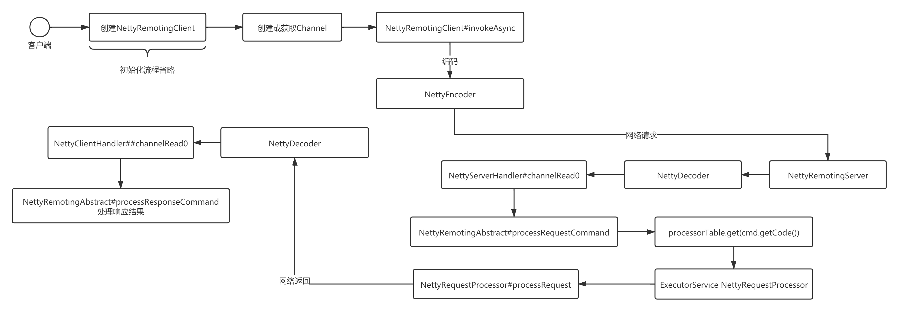
其核心关键点说明如下：
上述流程图将省略 NettyRemotingClient、NettyRemotingServer 的初始化流程，因为这些将在下文详细阐述。
- NettyRemotingClient 会在需要连接到指定地址先通过 Netty 相关 API 创建 Channel，并进行缓存，下一次请求如果还是发送到该地址时可重复利用。
- 然后调用 NettyRemotingClient 的 invokeAsync 等方法进行网络发送，在发送时在 Netty 中会进行一个非常重要的步骤：对请求编码，主要是将需要发送的请求，例如 RemotingCommand，将该对象按照**特定的格式（协议）**转换成二进制流。
- NettyRemotingServer 端接收到二进制后，网络读请求就绪，进行读请求事件处理流程。首先需要从二进制流中识别一个完整的请求包，这就是所谓的解码，即将二进制流转换为请求对象，解码成 RemotingCommand，然后读事件会传播到 NettyServerHandler，最终执行 NettyRemotingAbstract 的 processRequestCommand，主要是根据 requestCode 获取指定的命令执行线程池与 NettyRequestProcessor，并执行对应的逻辑，然后通过网络将执行结果返回给客户端。
- 客户端收到服务端的响应后，读事件触发，执行解码（NettyDecoder），然后读事件会传播到 NettyClientHandler，并处理响应结果。
Netty 网络编程要点
对网络编程基本的流程掌握后，我们接下来学习 NettyRemotingServer、NettyRemotingClient 的具体实现代码，来掌握 Netty 服务端、客户端的编写技巧。
基于网络编程模型，通常需要解决的问题：
- 网络连接的建立
- 通信协议的设计
- 线程模型
基于网络的编程，其实是面向二进制流，我们以大家最熟悉的的 Dubbo RPC 访问请求为例进行更直观的讲解，Dubbo 的通讯过程如下所示：

例如一个订单服务 order-serevice-app，用户会发起多个下单服务，在 order-service-app 中就会对应多个线程，订单服务需要调用优惠券相关的微服务，多个线程通过 dubbo client 向优惠券发起 RPC 调用，这个过程至少需要做哪些操作呢？
- 创建 TCP 连接，默认情况下 Dubbo 客户端和 Dubbo 服务端会保持一条长连接，用一条连接发送该客户端到服务端的所有网络请求。
- 将请求转换为二进制流，试想一下，多个请求依次通过一条连接发送消息，那服务端如何从二级制流中解析出一个完整的请求呢，例如 Dubbo 请求的请求体中至少需要封装需要调用的远程服务名、请求参数等。这里其实就是涉及所谓的自定义协议，即需要制定一套通信规范。
- 客户端根据通信协议对将请求转换为二进制的过程称之为编码，服务端根据通信协议从二级制流中识别出一个个请求，称之为解码。
- 服务端解码请求后，需要按照请求执行对应的业务逻辑处理，这里在网络通信中通常涉及到两类线程：IO 线程和业务线程池，通常 IO 线程负责请求解析，而业务线程池执行业务逻辑，最大可能的解耦 IO 读写与业务的处理逻辑。
接下来我们将从 RocketMQ 中是如何使用的，从而来探究 Netty 的学习与使用。
Netty 客户端编程实践
1. 客户端创建示例与要点
在 RocketMQ 中客户端的实现类：NettyRemotingClient。其创建核心代码被封装在 start 方法中，其代码截图如下图所示：
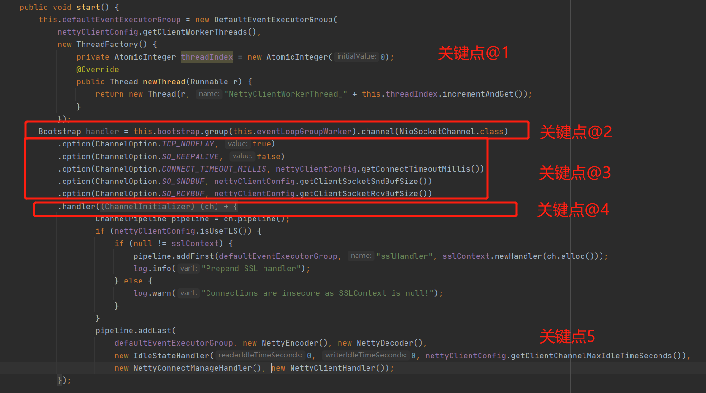
上述代码基本就是使用 Netty 编程创建客户端的标准模板，其关键点说明如下。
创建 DefaultEventExecutorGroup，默认事件执行线程组，后续事件处理器即（ChannelPipeline 中 addLast 中事件处理器）在该线程组中执行，故其本质就是一个线程池。
通过 Netty 提供的工具类 Bootstrap 来创建 Netty 客户端，其 group 方法指定一个事件循环组（EventLoopGroup），即 Work 线程组，主要是封装事件选择器（java.nio.Selector），默认情况下读写事件在该线程组中执行，俗称 IO 线程，但可以改变默认行为，下面会对这个加以详细解释；同时通过 chanel 方法指定通道的类型，基于 NIO 的客户端，通常使用 NioSocketChannel。
通过 Bootstrap 的 option 设置网络通信相关的参数，通常情况下会指定如下参数：
- TCP_NODELAY：是否禁用 Nagle，如果设置为 true 表示立即发送，如果设置为 false，如果一个数据包比较小，会尝试等待更多的包在一起发送。
- SO_KEEPALIVE：由于笔者对网络掌握深度不够，这里建议大家百度去查看与网络相关的知识，我们通常可以参考主流的做法，设置该值为 false。
- CONNECT_TIMEOUT_MILLIS：连接超时时间，客户端在建立连接时如果在该时间内无法建立连接，则抛出超时异常，建立连接失败。
- SO_SNDBUF、SO_RCVBUF：套接字发送缓存区与套接字接收缓存区大小，在 RocketMQ 该值设置为 65535，及默认为 64kb。
通过 Bootstrap 的 hanle 方法构建事件处理链条，通常通过使用 new ChannelInitializer<SocketChannel>()。
通过 ChannelPipeline 的 addLast 方法构建事件处理链，这里是基于 Netty 的核心扩展点，应用程序的业务逻辑就是通过该事件处理器进行切入的。RocketMQ 中事件处理链说明如下：
- NettyEncoder：RocketMQ 请求编码器，即协议编码器。
- NettyDecoder：RocketMQ 请求解码器，即协议解码器。
- IdleStateHandler：空闲检测。
- NettyConnectManageHandler：连接管理器。
- NettyClientHandler：Netty 客户端业务处理器，即处理“业务逻辑”。
即基于 Netty 的编程，主要包括制定通信协议（编码解码）、业务处理。下文会一一介绍。
ChannelPipeline 的 addLast 方法重点介绍：

如果调用在添加事件处理器时没有传入 EventExecutorGroup，那事件的执行默认在 Work 线程组，如果指定了，事件的执行将在传入的线程池中执行。
2. 创建连接及要点
上面的初始化并没有创建连接，在 RocketMQ 中在使用时才会创建连接，当然连接创建后就可以复用、缓存，即我们常说的长连接。基于 Netty 创建连接的示例代码如下：
这个基本上也是基于 Netty 的客户端创建连接的模板，其实现要点如下：
- 通过使用 Bootstrap 的 connect 创建一个连接，该方法会立即返回并不会阻塞，然后将该连接加入到 channelTables 中进行缓存。
- 由于 Bootstrap 的 connect 方法创建连接时只是返回一个 Future，在使用时通常需要同步等待连接成功建立，故通常需要调用 ChannelFuture 的 awaitUniteruptibly(连接建立允许的超时时间)，等待连接成功建立，该方法返回后还需要通过如下代码判断连接是否真的成功建立：
public boolean isOK() {
return this.channelFuture.channel() != null && this.channelFuture.channel().isActive();
}
3. 请求发送示例
以同步消息发送为例我们来看一下消息发送的使用示例，其示例代码如下：

使用关键点如下：
- 首先会为每一个请求进行编号，即所谓的 requestId，在这里使用便利 opaque 来表示，在单机内唯一即可。
- 然后基于 Future 模式，创建 ResponseFuture，并将其放入到
ConcurrentMap<Integer /* opaque */, ResponseFuture> responseTable，当客户端收到服务端的响应后，需要根据 opaque 查找到对应的 ResponseFuture，从而唤醒客户端。 - 通过使用 CHannel 的 writeAndFlush 方法，将请求 Request 通过网络发送到服务端，内部会使用编码器 NettyEncoder 将 RemotingCommand request 编码二级制流，并使用 addListener 添加回调函数，在回调函数中进行处理，唤醒处理结果。
- 同步调用的实现方式，通过调用 Future 的 waitResponse 方法，收到响应结果该方法被唤醒。
Netty 服务端编程实践
1. Netty 服务端创建示例
Step1：创建 Boss、Work 事件线程组。Netty 的服务端线程模型采用的是主从多 Reactor 模型，会创建两个线程组，分别为 Boss Group 与 Work Group，其创建示例如下图所示：
通常 Boos Group 默认使用一个线程，而 Work 线程组通常为 CPU 的合数，Work 线程组通常为 IO 线程池，处理读写事件。
Step2：创建默认事件执行线程组。

关于该线程池的作用与客户端类似，故不重复介绍。
Step3：使用 Netty ServerBootstrap 服务端启动类构建服务端。（模板）
通过 ServerBootstrap 构建的关键点如下：
- 通过 ServerBootstrap 的 group 的指定 boss、work 两个线程组。
- 通过 ServerBootstrap 的 chanel 方法指定通道的类型，通常有 NioServerSocketChannel、EpollServerSocketChannel。
- 通过 option 方法设置 EpollServerSocketChannel 相关的网络参数，即监听客户端请求的网络通道相关的参数。
- 通过 childOption 方法设置 NioSocketChannel 的相关网络参数，即读写 Socket 相关的网络参数。
- 通过 localAddress 方法绑定到服务端指定的 IP、端口。
- 通过 childHanlder 方法设置实际处理监听器，是应用程序通过 Netty 编程主要的业务切入点，与客户端类似，其中 ServerHandler 为服务端的业务处理 Handler，编码解码与客户端无异。
Step4：调用 ServerBootstrap 的 bind 方法绑定到指定端口。
ServerBootstrap 的 bind 的方法是一个非阻塞方法，调用 sync() 方法会变成阻塞方法，即等待服务端启动完成。
2. Netty ServerHandler 编写示例
服务端在网络通信方面无非就是接受请求并处理，然后将响应发送到客户端，处理请求的入口通常通过定义 ChannelHandler，我们来看一下 RocketMQ 中编写的 Handler。

服务端的业务处理 Handler 主要是接受客户端的请求，故通常关注的是读事件，可以通常继承 SimpleChannelInboundHandler，并实现 channelRead0，由于已经经过了解码器（NettyDecoder），已经将请求解码成具体的请求对象了，在 RocketMQ 中使用 RemotingCommand 对象，只需面向该对象进行编程，processMessageReceived 该方法是 NettyRemotingClient、NettyRemotingServer 的父类，故对于服务端来会调用 processReqeustCommand 方法。
在基于 Netty4 的编程，在 ChannelHandler 加上@ChannelHandler.Sharable 可实现线程安全。
温馨提示：在 ChannelHandler 中通常不会执行具体的业务逻辑，通常是只负责请求的分发，其背后会引入线程池进行异步解耦，在 RocketMQ 的实现中更加如此，在 RocketMQ 提供了基于“业务”的线程池隔离，例如会为消息发送、消息拉取分别创建不同的线程池。这部分内容将在下文详细介绍。
协议编码解码器
基于网络编程，通信协议的制定是最最重要的工作，通常关于通信协议的设计套路如下：

通常采用的是 Header + Body 这种结构，通常 Header 部分是固定长度，并且在 Header 部分会有一个字段来标识整条消息的长度，至于头结点中是否会放置其他字段。这种结构非常经典，实现简单，特别适合在接收端从二进制流中解码请求，其关键点如下：
- 接收端首先会尝试从二级制流中读取 Header 长度个字节，如果当前可读取字节不足 Header 长度个字节，先累计，等待更多数据到达。
- 如果能读取到 Header 长度个字段，按照 Header 的格式读取该消息的总长度，然后尝试读取总长度的消息，如果不足，说明还未收到条完整的消息，等待更多数据的到达；如果缓存区中能读取到一条完整的消息，就按照消息格式进行解码，按照特定的格式，将二级制转换为请求对象，例如 RocketMQ 的 RemotingCommand 对象。
由于这种模式非常通用，故 Netty 提供了该解码的通用实现类：LengthFieldBasedFrameDecoder，即能够从二级制流中读取一个完整的消息自己缓存区，应用程序自己实现将 ByteBuf 转换为特定的请求对象即可，NettyDecoder 的示例如下：

而 NettyEncoder 的职责就是将请求对象转换成 ByteBuf，即转换成二级制流，这个对象转换为上图中协议格式（Header + Body）这种格式即可。
线程隔离机制
通常服务端接收请求，经过解码器解码后转换成请求对象，服务端需要根据请求对象进行对应的业务处理，避免业务处理阻塞 IO 读取线程，通常业务的处理会采用额外的线程池，即业务线程池，RocketMQ 在这块采用的方式值得我们借鉴，提供了不同业务采用不同的线程池，实现线程隔离机制。
RocketMQ 为每一个请求进行编码，然后每一类请求会对应一个 Proccess（业务处理逻辑），并且将 Process 注册到指定线程池，实现线程隔离机制。
Step1：首先在服务端启动时会先进行静态注册，将请求处理器与执行的线程池进行对应，其代码示例如下：

Step2：服务端接受到请求对象后，根据请求命令获取对应的 Processor 与线程池，然后将任务提交到线程池中执行，其代码示例如下所示（NettyRemotingAbstract#processRequestCommand）。

本篇就介绍到这里了，以 RocketMQ 中使用 Netty 编程为切入点，梳理出基于 Netty 进行网络编程的套路。
30 RocketMQ 学习方法之我见
亲爱的读者朋友，RocketMQ 实战专辑的全部内容即将更新完毕，前面的篇幅主要是介绍 RocketMQ 技术本身，本篇想和大家谈谈我是如何学习 RocketMQ 的，尽量做到授之以渔。
我想大家都会有这样一个共识：光学理论没用，要实战。这个有一定的道理，但不应该成为阻碍我们学习的理由。对知识的学习我们当然需要优先学习研究工作中常用的技术，例如以微服务为例，现在市面上 Spring Clould 很火，但公司主要用的是 Dubbo，如果此时你想深入研究微服务，我建议优先选择学习 Dubbo，因为你有实践经验，深入研究 Dubbo 能更好的指导实践，从而实现理论与实际相结合，并且 Dubbo 在市面上也使用的很广泛。
但有时候受到所在平台的限制，日常工作中无法接触到主流的技术，例如缺乏高并发、压根就没有接触过消息中间件，此时该怎么办？
笔者个人的建议：在无法实际使用时，应该去研究主流技术的原理，为使用做好准备，不要因为没有接触到而放弃学习，机会是留给有准备的人，如果你对某一项技术研究有一定深度时，当项目中需要使用时，你可以立马施展你的才华，很容易脱颖而出。
我在学习 RocketMQ 之前在实际工作中没有接触过任意一款消息中间件，更别谈使用了，促成我学习 RocketMQ 的原因是我得知 RocketMQ 被捐献给 Apache 基金会，而且还听说 RocketMQ 支撑了阿里双十一的具大流量，让我比较好奇，想一睹一款高性能的分布式消息中间件的风采，从此踏上了学习 RocketMQ 的历程。
确定好目标后，该怎么学习 RocketMQ 呢？
1. 通读 RocketMQ 官方设计手册
通常开始学习一个开源框架(产品)，建议大家首先去官网查看其用户手册、设计手册，从而对该框架能解决什么问题，基本的工作原理、涵盖了哪些知识点（后续可以对这些知识点一一突破），从全局上掌握这块中间件。我还清晰的记得我在看 RokcetMQ 设计手册时，我不仅将一些属于理解透彻，并且一些与性能方面的“高级”名词深深的吸引了我，例如：
- 亿级消息堆积能力
- 内存映射、pagecache
- 零拷贝
- 同步刷盘、异步刷盘
- 同步复制、异步复制
- Hash 索引
看过设计手册后，让我产生了极大的兴趣，下决心从源码角度对其进行深入研究，立下了不仅深入研究 RocketMQ 的工作原理与实现细节，更是想掌握基于文件编程的设计理念，如何在实践中使用内存映射。
2. 下载源码，跑通 Demo
每一个开源框架，都会提供完备的测试案例，RokcetMQ 也不例外，RokcetMQ 的源码中有一个单独的模块 example，里面放了很多使用 Demo，按需运行一些测试用例，能让你掌握 RokcetMQ 的基本使用，算是入了一个门。
3. 源码研究 RocketMQ
通过前面两个步骤，对设计原理有了一个全局的理解，同时掌握了 RocketMQ 的基本使用，接下来需要深入探究 RocketMQ，特别是如果大家认真阅读了本专栏的所有实战类文章，那是时候研究其源码了。
阅读 RocketMQ 原理个人觉得有如下几个好处：
- 深入研究其实现原理，成体系化的研读 RocketMQ，对 RocketMQ 更具掌控性。通常对应消息中间件，如果出现故障，通常会给公司业务造成较大损失，当出现问题时快速止血固然重要，更难能可贵的时预判风险，避免生产故障发生，要做到预判风险，成体系化研究 RocketMQ 显得非常必要。
- 学习优秀的 RocketMQ 框架，提升编程技能，例如高并发、基于文件编程相关的技巧，我们都可以从中得到一些启发。
那如何阅读 RocketMQ 源码呢？
阅读源码之前还是需要具备一定的基础，建议在阅读 RokcetMQ 源码之前，先尝试阅读一下 Java 数据结构相关的源码，例如 HashMap、ArrayList，主要是培养自己阅读源码的方法，通常我阅读源码的方法：先主流程、后分支流程。
我举一个简单的例子来说明先主流程、后分支流程。
例如我在学习消息发送流程时，我只关注消息发送在客户端的流程，至于服务端接收到消息发送请求时，存储、复制、刷盘这些我都暂时不关注，我暂时先关注消息发送在客户端的设计，等弄明白了，后面再去服务端接收消息发送请求时会做哪些操作，然后逐一理解消息存储、消息刷盘、消息同步等机制，这样就能有条理的，逐个破解 RocketMQ 核心设计理念。